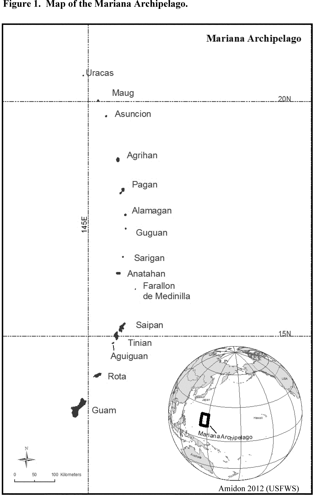

Start Preamble
Start Printed Page 59424
AGENCY:
Fish and Wildlife Service, Interior.
ACTION:
Final rule.
SUMMARY:
We, the U.S. Fish and Wildlife
Service, determine endangered status under the Endangered Species Act
of 1973, as amended, for 16 plant and animal species from the Mariana
Islands (the U.S. Territory of Guam and the U.S. Commonwealth of the
Northern Mariana Islands). We also determine threatened status for seven
plant species from the Mariana Islands and greater Micronesia in the
U.S. Territory of Guam, the U.S. Commonwealth of the Northern Mariana
Islands, the Republic of Palau, and the Federated States of Micronesia
(Yap). The effect of this regulation will be to add these 23 species to
the Federal Lists of Endangered and Threatened Wildlife and Plants.
DATES:
This rule becomes effective November 2, 2015.
ADDRESSES:
This final rule is available on the Internet at http://www.regulations.gov and http://www.fws.gov/pacificislands.
Comments and materials we received, as well as some of the supporting
documentation used in preparing this final rule, are available for
public inspection at http://www.regulations.gov.
All of the comments, materials, and documentation that we considered in
this rulemaking are available, by appointment, during normal business
hours, at: U.S. Fish and Wildlife Service, Pacific Islands Fish and
Wildlife Office, 300 Ala Moana Boulevard, Room 3-122, Honolulu, HI
96850; by telephone at 808-792-9400; or by facsimile at 808-792-9581.
Start Further Info
FOR FURTHER INFORMATION CONTACT:
Kristi Young, Acting Field
Supervisor, U.S. Fish and Wildlife Service, Pacific Islands Fish and
Wildlife Office, 300 Ala Moana Boulevard, Room 3-122, Honolulu, HI
96850; by telephone at 808-792-9400; or by facsimile at 808-792-9581.
Persons who use a telecommunications device for the deaf (TDD) may call
the Federal Information Relay Service (FIRS) at 800-877-8339.
End Further Info
End Preamble
Start Supplemental Information
SUPPLEMENTARY INFORMATION:
Executive Summary
Why we need to publish a rule. Under the Endangered
Species Act of 1973, as amended (Act or ESA), a species may warrant
protection through listing if it is endangered or threatened throughout
all or a significant portion of its range. Listing a species as an
endangered or threatened species can only be completed by issuing a
rule. Critical habitat shall be designated, to the maximum extent
prudent and determinable, for any species determined to be an endangered
or threatened species under the Act.
This rule will finalize the listing of 23 species from the Mariana Islands as endangered or threatened species, one of which (Cycas micronesica)
also occurs in the Republic of Palau and the Federated States of
Micronesia (Yap). For the sake of brevity, throughout this document we
refer to these 23 species simply as the 23 Mariana Islands species.
Sixteen of these species are listed as endangered species: Seven plants—Eugenia bryanii (no common name (NCN)), Hedyotis megalantha (pau dedu, pao doodu), Heritiera longipetiolata (ufa halumtanu, ufa halom tano), Phyllanthus saffordii (NCN), Psychotria malaspinae (aplokating palaoan), Solanum guamense (Biringenas halumtanu, birengenas halom tano), and Tinospora homosepala (NCN); and nine animals—the Pacific sheath-tailed bat (Mariana subspecies, Emballonura semicaudata rotensis; payeyi, paischeey), Slevin's skink (Emoia slevini; gualiik halumtanu, gholuuf), Mariana eight-spot butterfly (Hypolimnas octocula marianensis; ababbang, libweibwogh), Mariana wandering butterfly (Vagrans egistina; ababbang, libweibwogh), Rota blue damselfly (Ischnura luta; dulalas Luta, dulalas Luuta), fragile tree snail (Samoana fragilis; akaleha dogas, denden), Guam tree snail (Partula radiolata; akaleha, denden), humped tree snail (Partula gibba; akaleha, denden), and Langford's tree snail (Partula langfordi; akaleha, denden). Seven plant species—Bulbophyllum guamense (siboyas halumtanu, siboyan halom tano), Dendrobium guamense (no common name (NCN), Cycas micronesica (fadang, faadang), Maesa walkeri (NCN), Nervilia jacksoniae (NCN), Tabernaemontana rotensis (NCN), and Tuberolabium guamense (NCN)—are listed as threatened species.
Delineation of critical habitat
requires, within the geographical area occupied by the species,
identification of the physical or biological features essential to the
species' conservation. Information regarding the life functions and
habitats associated with these life functions is complex, and
informative data are largely lacking for the 23 Mariana Islands species.
A careful assessment of the areas that may have the physical or
biological features essential for the conservation of the species and
that may require special management considerations or protections, and
thus qualify for designation as critical habitat, will require a
thorough assessment. We require additional time to analyze the best
available scientific data in order to identify specific areas
appropriate for critical habitat designation. Accordingly, we find
designation of critical habitat to be “not determinable” at this time.
The basis for our action. Under the Endangered
Species Act, we can determine that a species is an endangered or
threatened species based on any of five factors: (A) The present or
threatened destruction, modification, or curtailment of its habitat or
range; (B) Overutilization for commercial, recreational, scientific, or
educational purposes; (C) Disease or predation; (D) The inadequacy of
existing regulatory mechanisms; or (E) Other natural or manmade factors
affecting its continued existence. We have determined that the 23
Mariana Islands species are experiencing population-level impacts as the
result of the following current and ongoing threats:
- Habitat loss and degradation
due to development, military activities, and urbanization; nonnative
feral ungulates (hoofed mammals, for example, deer, pigs, and water
buffalo) and nonnative plants; rats; snakes; wildfire; typhoons; water
extraction; and the synergistic effects of future climate change.
- Predation or herbivory by nonnative feral ungulates, rats, snakes, monitor lizards, slugs, flatworms, ants, and wasps.
- The inadequacy of existing regulatory mechanisms to prevent the introduction and spread of nonnative plants and animals.
- Direct impacts from ordnance
and live-fire from military training, recreational vehicles, and
exacerbated vulnerability to threats and, consequently, extinction, due
to small numbers of individuals and populations.
Peer review and public comment. We sought comments
from independent specialists to ensure that all of our determinations
are based on scientifically sound data, assumptions, and analyses. We
also considered all Start Printed Page 59425comments and information received during the comment periods and public hearings.
Previous Federal Actions
Please refer to the proposed listing rule, published in the Federal Register on October 1, 2014 (79 FR 59364),
for previous Federal actions for these species prior to that date. The
publication of the proposed listing rule opened a 60-day comment period,
beginning on October 1, 2014, and closing on December 1, 2014. In
addition, we published a public notice of the proposed rule on October
18, 2014, in the Marianas Variety, Marianas Variety Guam, and the Guam
Pacific Daily News newspapers. On January 12, 2015 (80 FR 1491),
we reopened the comment period for an additional 30 days and announced
two public hearings, each preceded by public information meetings
(January 27, 2015, on Guam; and January 28, 2015, on Saipan); and two
separate public information meetings, one each on Rota (January 29,
2015) and Tinian (January 31, 2015). This second comment period closed
on February 11, 2015. We published public notices in the local Marianas
Variety and Pacific Daily News on January 23, 2015, in order to inform
the public about the hearings and information meetings, as well as the
reopening of the comment period. In total, we accepted public comments
on the October 1, 2014, proposed rule (79 FR 59364) for 90 days.
Summary of Changes From Proposed Rule
In preparing this final rule,
we reviewed and fully considered comments from the peer reviewers and
public on the proposed listings for 23 species. This final rule
incorporates the following substantive changes to our proposed rule,
based on the comments we received:
(1) The proposed rule described the status of five plant species (four orchids: Bulbophyllum guamense, Dendrobium guamense,
Nervilia jacksoniae, and Tuberolabium guamense; and a plant in the family Primulaceae, Maesa walkeri)
as meeting the definition of an endangered species under section 3(6)
of the Act (any species which is in danger of extinction throughout all
or a significant portion of its range). However, new information from
further surveys has shown that these five plant species are more
numerous on the island of Rota than previous data indicated, each with a
population structure consisting of seedlings, juveniles, and adults.
This new information indicates that these five plant species are not
quite as imperiled throughout their ranges as previously understood at
the time of the proposed rule. However, these species are still
susceptible to habitat destruction and modification by nonnative plants
and animals, fire, and the future effects of climate change on Rota.
Additionally, at least 50 percent of their respective ranges occur on
the island of Guam, where these species once occurred in abundance but
now exist in very low numbers of individuals, and face similar threats
as on Rota, in addition to habitat destruction and modification by urban
development, military development and training, brown treesnakes (Boiga irregularis), and feral pigs (Sus scrofa).
The Act defines an endangered
species as “any species which is in danger of extinction throughout all
or a significant portion of its range,” and a threatened species as “any
species which is likely to become an endangered species within the
foreseeable future throughout all or a significant portion of its
range.” Therefore, because the four orchid species (Bulbophyllum guamense, Dendrobium guamense, Nervilia jacksoniae, and Tuberolabium guamense) and Maesa walkeri
appear relatively healthy on Rota, but face threats throughout all of
their ranges, and have declined across at least 50 percent of their
ranges (i.e., on Guam), we have retained them in this final
listing determination but have changed their status to threatened
species, as they are at risk of becoming endangered within the
foreseeable future throughout all of their ranges. All new data received
during the comment period for these five species have been added to
Description of the 23 Mariana Islands Species and Summary of Biological
Status and Threats Affecting the 23 Mariana Islands Species, below.
Further, our rationale for listing each of these five species as
threatened species, versus endangered species, is discussed under
Determination, below.
(2) We updated the section titled “Historical and Ongoing Human Impacts” under The Mariana Islands, below, to include recent changes in proposed military actions.
(3) We have corrected our original description of the political division of Micronesia. See “Political Division” under The Mariana Islands, below.
(4) We have added new island occurrences for three species addressed in this final rule. Dendrobium guamense
was recently discovered on the island of Aguiguan—a brand new island
record (Zarones 2015a, in litt.); the humped tree snail was recently
observed on Tinian, an island on which the humped tree snail was
previously thought to be extirpated (Naval Facilities Engineering
Command Pacific (NavFac, Pacific) 2014, pp. 5-5, 5-7); and one
individual of Heritiera longipetiolata was reported from Rota,
an island on which it was thought this species was extirpated (Cook
2010, pers. comm. cited in CNMI Department of Land and Natural Resources
(DLNR) 2014, in litt.). These three island additions have been placed
under Islands in the Mariana Archipelago, Description of the 23 Mariana Islands Species, and Table 1, below.
(5) We have corrected the
common names for many of the plant and animal species addressed in this
final rule after consultation with a Chamorro and Carolinian language
expert and a comment received from a peer reviewer. These changes can be
observed in Table 1 and under Description of the 23 Mariana Islands
Species, below.
(6) We have added the
parenthetical “(Mariana subspecies)” to the common name of the Pacific
sheath-tailed bat addressed in this rule, specifically the subspecies Emballonura semicaudata rotensis,
to allow the reader to more easily distinguish between the four
subspecies of Pacific sheath-tailed bats that are known by the same
common name.
(7) Due to a comment we
received from a peer reviewer, we have changed our general description
of partulid (referring to a genus of tree snails in the Pacific)
characteristics (see Description of the 23 Mariana Islands Species) to
include that the mobility of partulids is more related to ambient
precipitation and humidity, rather than with the time of day. Previous
reports indicated that partulids are primarily nocturnal.
(8) Due to comments received
from a peer reviewer and new information, we have expanded our
description of the negative impacts associated with the manokwari
flatworm, also known as the New Guinea flatworm (Platydemus manokwari), on the four tree snails under Flatworm Predation on Tree Snails
under Summary of Biological Status and Threats Affecting the 23 Mariana
Islands Species, below. This new information suggests that we had
greatly underestimated the severity and scope of the threat posed by the
manokwari flatworm in the proposed rule.
(9) Due to comments received by
the U.S. Navy, and in light of the new 2014 Draft Supplemental
Environmental Impact Statement (SEIS) and subsequent 2015 Final EIS, we
updated the description of the Marine Corps relocation under “Historical
and Ongoing Human Impacts,” below. We Start Printed Page 59426cited
the Final Supplemental EIS (SEIS) released in July of 2015, and
associated changes, which include a proposal to construct and operate
facilities on Guam (not Tinian) to support the training and operations
of Marines and the removal of the proposal to create four ranges on
Tinian since the associated training requirements satisfied by those
four ranges are now the subject of another EIS (Commonwealth of the
Northern Mariana Islands Joint Military Training (CJMT) EIS, described
below). We also dropped “and Tinian” in the description of the revised
proposed actions associated with the 2015 Final SEIS associated with the
relocation. Additionally, we removed the construction of a deep-draft
wharf in Apra Harbor and facilities to support the U.S. Missile Defense
Task Force since this is no longer proposed on Guam (and is not
addressed in the revised proposed action covered in the 2014 Draft SEIS
or 2015 Final SEIS).
(10) Due to comments received
by the U.S. Navy, and in light of the new 2015 Final SEIS, we updated
the description of the Marine Corps relocation under “Historical and
Ongoing Human Impacts,” below. The updates include the construction of a
Marine Corps cantonment (main base) at Naval Computer and
Telecommunications Station Finegayan, family housing on Andersen Air
Force Base (AAFB), and a live-fire training range on AAFB-Northwest
Field as the preferred alternatives. We noted that Orote Point, Pati
Point, and Navy Barrigada are no longer preferred locations for any
facilities to support the Marine Corps move.
(11) We have edited the section titled “Ordnance and Live-Fire Training” under Factor E. Other Natural or Manmade Factors Affecting Their Continued Existence,
below. We changed the physical location of the ordnance and live-fire
training, and subsequently the species impacted by this threat, due to
changes presented in the Navy's 2014 Draft SEIS (Joint Guam Program
Office (JGPO)-NavFac, Pacific 2014, p. ES-1) and 2015 Final SEIS
(JGPO-NavFac, Pacific 2015, p. ES-11; http://www.guambuildupeis.us/), and the 2015 CNMI Joint Military Training Draft EIS/Overseas EIS (OEIS) (http://www.cnmijointmilitarytrainingeis.com/about). In this final rule, the species that are considered to be negatively impacted by ordnance and live-fire include the plants Cycas micronesica, Heritiera longipetiolata, Psychotria malaspinae, and Tabernaemontana rotensis
and the humped tree snail, Mariana eight-spot butterfly, and Slevin's
skink. This change is also noted under “Historical and Ongoing Human
Impacts” and Table 3, below.
(12) We added new information
to “Conservation Efforts to Reduce Disease and Predation” and
“Conservation Efforts to Reduce Habitat Destruction, Modification, or
Curtailment of Its Range,” below. In 2013, the U.S. Navy erected five
new exclosures on Tinian, each with 1,000 mature individuals of Cycas micronesica. In 2014, the U.S. Navy funded $5.1 M towards brown treesnake projects in the Mariana Islands.
(13) Due to new data we
received during the comment period, we added the Mariana eight-spot
butterfly, Mariana wandering butterfly, and the Pacific sheath-tailed
bat (Mariana subspecies) to “Small Number of Individuals and
Populations,” below. A recent genetic analysis found no heterogeneity
exists between three separate populations of the Mariana eight-spot
butterfly on Guam (Lindstrom and Benedict 2014, p. 27). In fact, they
found the genetic sequences studied to be identical, which is indicative
that little population structure exists among these mobile insects, and
that they have recently experienced a population bottleneck limiting
genetic diversity for this species on Guam (Lindstrom and Benedict 2014,
p. 27). Additionally, since there are no recent observations of the
Mariana wandering butterfly, we have deduced that if a population
exists, it does so in very small numbers and, therefore, faces the same
threat of reduced genetic diversity as the Mariana eight-spot butterfly.
A recent genetic analysis of the Pacific sheath-tailed bat (Mariana
subspecies) found no genetic diversity among the only known extant
population of this species (Oyler-McCance et al. 2013, pp.
1,034-1,035). This new data, combined with the observed decrease in
range from five islands formerly (Guam, Rota, Saipan, Tinian, and
Aguiguan) to just one at present (Aguiguan), has led the Service to
conclude that the Pacific sheath-tailed bat (Mariana subspecies) is at
risk from low numbers of individuals and populations. We have added the
two butterflies and bat addressed in this rule to the threat of small
number of individuals and populations under Table 3, and Factor E. Other Natural or Manmade Factors Affecting Their Continued Existence
“Small Number of Individuals and Populations,” below. Additionally, we
added the fragile tree snail under the section titled “Small Number of
Individuals and Populations,” below, as it was noted in Table 3, but
missing from the discussion under Factor E.
(14) Due to a comment from a
peer reviewer, we have made a change regarding the life-cycle of
Slevin's skink under Description of the 23 Mariana Islands Species,
below. In the proposed rule, we cited Brown (1991, pp. 14-15) as stating
that Slevin's skinks are viviparous (lay their eggs internally and give
birth to live young). We have corrected this statement to reflect more
recent observations indicating that Slevin's skinks are oviparous (lay
eggs that mature and hatch externally) (Zug 2013, p. 184; Rodda 2014, in
litt.).
(15) Due to new information
received during the comment period, we have added a new occurrence for
the Rota blue damselfly. Zarones (et al. 2015b, in litt.)
reported a new observation of an individual of the Rota blue damselfly,
located at a stream east of the Water Cave that is not connected to the
Water Cave (Okgok) Stream. This finding was confirmed by U.S. Fish and
Wildlife Service (Service) entomologists. This new occurrence has been
added under Description of the 23 Mariana Islands Species, below.
(16) According to new
information we received during the comment period, we corrected the name
of I-Chenchon Park, which is now the Mariana Crow Conservation Area;
added the Sabana Heights and Talakhaya conservation areas under the
Sabana Wildlife Conservation Area on Rota; and added the newly
established Nightingale Reed-warbler Conservation Area and the
Micronesian Megapode Conservation area to conservation areas on Saipan
(see Islands in the Mariana Archipelago, below).
(17) After further analysis, we have concluded that feral cattle are not a threat to the plant Heritiera longipetiolata
on the island of Tinian, nor are feral cattle considered present in
large enough numbers to be assigned to the island of Tinian in Table 4,
below. The humped tree snail was believed to be extirpated from Tinian
at the time of the proposed rule and, therefore, was not previously
assigned this threat on Tinian. Both feral and domestic cattle have been
present on Tinian for centuries and have reportedly caused
broad-ranging negative impacts to the forest ecosystem (i.e., erosion, trampling, and grazing); however, the number of feral cattle on Tinian has declined in recent times (Wiles et al.
1990, pp. 167-180; Flores 2015, in litt.). Cattle ranching on Tinian is
on the rise, and depending on the location and amount of land allotted
to cattle ranching, negative impacts to the forest ecosystem may be
observed in the future. However, at the time of this final rule, neither
feral nor domestic cattle Start Printed Page 59427are considered a threat to the plant Heritiera longipetiolata or the humped tree snail on the island of Tinian.
(18) In the Regulation Promulgation section of the proposed rule, we identified the historic range of Cycas micronesica as Guam and the Mariana Islands. We have corrected the historic range of Cycas micronesica
in this final rule to additionally include the sovereign island nation
of the Federated States of Micronesia (the island of Yap), and the
independent island nation of the Republic of Palau.
Background
Mariana Islands Species Addressed in This Final Rule
Table 1 below provides the
scientific name, common name, listing status, and range (islands on
which the species is found) for the 23 Mariana Islands species that are
the subjects of this final rule. Following the table, Figure 1 provides a
map of the islands that comprise the Mariana archipelago.
Table 1—The 23 Mariana Islands Species Addressed in This Final Rule
| Scientific name | Common name(s) | Listing status | Range |
|---|
| Plants | | | |
| Bulbophyllum guamense | wild onion siboyas halumtanu Ch, siboyan halom tano CI | Threatened | Guam, Rota, Saipan (H), Pagan (H). |
| Cycas micronesica | fadang Ch, faadang CI | Threatened | Guam, Rota, Pagan ‡, Palau *, Yap.* |
| Dendrobium guamense | NCN | Threatened | Guam, Rota, Saipan (H), Tinian, Aguiguan, Agrihan (H). |
| Eugenia bryanii | NCN | Endangered | Guam. |
| Hedyotis megalantha | pao dedu Ch, pao doodu CI | Endangered | Guam. |
| Heritiera longipetiolata | ufa halumtanu Ch, ufa halom tano CI | Endangered | Guam, Saipan, Tinian, Rota. |
| Maesa walkeri | NCN | Threatened | Guam, Rota. |
| Nervilia jacksoniae | NCN | Threatened | Guam, Rota. |
| Phyllanthus saffordii | NCN | Endangered | Guam. |
| Psychotria malaspinae | aplokating palaoan Ch / CI | Endangered | Guam. |
| Solanum guamense | Biringenas halumtanu Ch, birengenas halom tano CI | Endangered | Guam, Rota (H), Saipan (H), Tinian (H), Asuncion (H), Guguan (H), Maug (H). |
| Tabernaemontana rotensis | NCN | Threatened | Guam, Rota. |
| Tinospora homosepala | NCN | Endangered | Guam. |
| Tuberolabium guamense | NCN | Threatened | Guam, Rota, Tinian (H), Aguiguan (H). |
| Animals | | | |
| Emballonura semicaudata rotensis | Pacific sheath-tailed bat (Mariana subspecies), payeyi Ch, paischeey CI | Endangered | Aguiguan, Guam (H), Rota (H), Tinian (H), Saipan (H), Anatahan (H §), Maug (H §). |
| Emoia slevini | Slevin's skink, Marianas Emoia, Marianas skink, gualiik halumtanu Ch, gholuuf CI | Endangered | Guam (H), Cocos Island, Rota (H), Tinian (H), Aguiguan (H), Sarigan, Guguan, Pagan, Alamagan, Asuncion. |
| Hypolimnas octocula marianensis | Mariana eight-spot butterfly, ababbang Ch, Libweibwogh CI | Endangered | Guam, Saipan (H). |
| Vagrans egistina | Mariana wandering butterfly, ababbang Ch, Libweibwogh CI | Endangered | Rota, Guam (H). |
| Ischnura luta | Rota blue damselfly, dulalas Luta Ch, dulalas Luuta CI | Endangered | Rota. |
| Partula gibba | humped tree snail, akaleha Ch, denden CI | Endangered | Guam, Rota, Aguiguan, Alamagan, Pagan, Sarigan, Saipan, Tinian, Anatahan (H). |
| Partula langfordi | Langford's tree snail, akaleha Ch, denden CI | Endangered | Aguiguan. |
| Partula radiolata | Guam tree snail, akaleha Ch, denden CI | Endangered | Guam. |
| Samoana fragilis | fragile tree snail, akaleha dogas Ch, denden CI | Endangered | Guam, Rota. |
| NCN = no common name. |
| (H) = historical occurrence (20 years or more prior to present date). |
| (H §) = possible historical occurrence. |
| Ch = Chamorro name. |
| CI = Carolinian name. |
| * = range outside of the Mariana Islands. |
| ‡ = Tentative occurrence. |
| Translations courtesy of the Chamorro/Carolinian Language Policy Commission. |
| Bold type in the Listing Status and Range columns indicates a change in range from the proposed rule. |

The Mariana Islands
Here we discuss only background
information pertinent to the Mariana Islands that has changed since the
proposed rule. Please see the proposed rule (79 FR 59364;
October 1, 2014) for a description of the general geography, geology,
vegetation, hydrology, climate, biogeography, and pre-historic human
impact. We would like to acknowledge a spelling error in the proposed
rule under “Hydrology,” where we incorrectly spelled Talofofo as
Tolofofo. Talofofo is the correct spelling for this hydrological region
in Guam. Additionally, we have made substantial changes from the
proposed rule to the Start Printed Page 59429below
section, Historical and Ongoing Human Impacts, for the reasons
described above in the section Summary of Changes from Proposed Rule.
Historical and Ongoing Human Impacts
After the initial Chamorro
modifications for agriculture and villages, the flora and fauna on the
Mariana Islands continued to undergo alterations due not only to ongoing
volcanic activity in the northern islands, but also to land use
activities and nonnative species introduced by European colonialists.
The arrival of the Spanish in 1591 further imposed degradation of the
ecosystems of the Mariana Islands with the introduction of numerous
nonnative animals and plants. The Spanish occupied the Mariana Islands
for nearly 300 years (SIO 2014, in litt.). In 1899, Spain sold the
Mariana Islands to Germany, with the exception of Guam, which was ceded
to the United States as a result of the Spanish-American war (SIO 2012,
in litt.; Encyclopedia Britannica 2014, in litt.).
The German administration
altered the forest ecosystem on Rota, Saipan, and Tinian, and on some of
the northern islands, by means of Cocos nucifera (coconut)
farming, which was encouraged for the production of copra (the dried
fleshy part of a coconut used to make coconut oil) (Russell 1998, pp.
94-95). Upon the start of World War I, the Japanese quickly took over
German occupied islands and accelerated the alteration of the landscape
by clearing large areas of native forest on Rota, Saipan, and Tinian,
for growing Saccharum officinarum (sugarcane) and building associated refineries, and for planting Acacia confusa
(sosugi) to provide fuel wood (CNMI-SWARS 2010, pp. 6-7). The Japanese
drastically altered the islands of Saipan and Tinian, and to a lesser
extent on Rota, leaving little native forest. Military activities during
World War II further altered the landscape on Saipan and Tinian. Rota
was a notable exception, left relatively untouched (CNMI-SWARS 2010, p.
7). Japan also occupied Guam at the onset of World War II; however, by
1944 the United States neutralized the Mariana Islands with the
recapture of Saipan, Tinian, and Guam (Encyclopedia Britannica 2014, in
litt.). Since World War II, the U.S. military has developed a strong
presence in the Mariana Islands, particularly on the island of Guam,
where both the U.S. Navy and U.S. Air Force operate large military
installations. The island of Farallon de Medinilla is used for military
ordnance training (Berger et al. 2005, p. 130).
Currently, the U.S. Department
of Defense is implementing a project referred to as the “Guam and
Commonwealth of the Northern Mariana Islands Military Relocation” (Joint
Guam Program Office (JGPO)-Naval Facilities Engineering command,
Pacific (JGPO-NavFac, Pacific) 2010a, p. ES-1; JGPO-NavFac, Pacific
2013, pp. 1-1—1-3; JGPO-NavFac, Pacific 2014, pp. ES-1—ES-34;
JGPO-NavFac, Pacific 2015, pp. ES-1—ES-40; http://guambuildupeis.us/).
This military relocation proposes: (1) The relocation of a portion of
the U.S. Marine Corps (Marine Corps) currently in Okinawa, Japan, which
consists of up to 5,000 Marines and their 1,300 dependents, as revised
in the Draft Supplemental Environmental Impact Statement (SEIS)
(JGPO-NavFac, Pacific 2014, p. ES-3) and Final SEIS (JGPO-NavFac,
Pacific 2015, pp. ES-1—ES-40; http://guambuildupeis.us/); (2) the development of facilities and infrastructure (i.e.,
cantonment, family housing, and associated infrastructure) on Guam to
support the relocation of military personnel and their dependents
(JGPO-NavFac, Pacific 2015, p. ES-3; http://guambuildupeis.us/);
and (3) the development and construction of facilities and
infrastructure on Guam to support training and operations for the
relocated Marines, specifically a Live-Fire Training Range Complex
(LFTRC) (JGPO-NavFac, Pacific 2015, p. ES-3; http://guambuildupeis.us/)
The Final 2015 SEIS focuses on
changes to the proposed actions and alternatives identified in the 2010
Final EIS (JGPO-NavFac, Pacific 2014, p. ES-1) and 2014 Draft SEIS
(JGPO-NavFac, Pacific 2015, pp. ES-1—ES-40; http://guambuildupeis.us/).
The preferred alternative sites on Guam for the implementation of the
Marine relocation efforts and development of an LFTRC now include
Alternative E Finegayan (Navy Base Guam)-Andersen Air Force Base (AFB)
and Alternative 5 Northwest Field on Andersen AFB, respectively.
Alternative E is a new alternative not presented in the 2014 Draft SEIS.
The 2014 Draft SEIS had listed Alternative A Finegayan as the preferred
alternative for cantonment and housing, and the new preferred
Alternative E places the cantonment on Finegayan and family housing on
Andersen AFB. This new Alternative E was added to reduce the amount of
vegetation that would have to be cleared, present additional
opportunities for forest enhancement mitigation, maintain the natural
buffer area between developed areas and nearby sensitive coastal
resources (e.g., Haputo Ecological Reserve Area), and leverage
existing family housing support facilities already in place at Andersen
AFB (JGPO-NavFac, Pacific 2015, p. ES-15; http://guambuildupeis.us/).
Finegayan and Northwest Field on Andersen AFB collectively support 16
of the 23 species or their habitats (11 of the 14 plants: Bulbophyllum
guamense, Cycas micronesica, Dendrobium guamense, Eugenia bryanii,
Heritiera longipetiolata, Maesa walkeri, Nervilia jacksoniae, Psychotria
malaspinae, Solanum guamense, Tabernaemontana rotensis, and Tuberolabium guamense;
and 5 of the 9 animals: The Mariana eight-spot butterfly, the Mariana
wandering butterfly, the Guam tree snail, the humped tree snail, and the
fragile tree snail) (JGPO-NavFac, Pacific 2014, pp. ES-18—ES-22;
JGPO-NavFac, Pacific 2015, p. ES-11; http://guambuildupeis.us/).
The Final SEIS describes: (1)
More moderate construction activity over 13 years instead of a 7-year
intense construction boom; (2) a significant reduction in projected peak
population increase (from 79,000 to less than 10,000) and steady state
population increase (from 33,000 to approximately 7,400); (3) a
reduction in the project area at Finegayan from 2,580 ac (1,044 ha) to
1,213 ac (491 ha); (4) utilization of 510 ac (206 ha) of existing
infrastructure on Andersen AFB for family housing; (5) no new land
acquisition; (6) a reduction in project area at Northwest Field (instead
of Route 15); and (7) an overall decrease in power and water demands
(JGPO-NavFac, Pacific 2014, p. ES-3; JGPO-NavFac, Pacific 2015, p.
ES-11; http://guambuildupeis.us/).
Concurrent with the relocation
efforts discussed above, the U.S. Marine Corps (the Executive Agent
designated by the U.S. Pacific Command) published their “Commonwealth of
the Northern Mariana Islands (CNMI) Joint Military Training (CJMT)
Draft Environmental Impact Statement (EIS)-Overseas Environmental Impact
Statement (OEIS)” (herein referred to as the “CJMT Draft EIS-OEIS”)
(CNMI Joint Military Training Draft EIS-OEIS at http://www.cnmijointmilitarytrainingeis.com/about).
The 2015 Draft CJMT EIS-OEIS informs the public that the military has
proposed plans to use Tinian and Pagan to establish a series of
live-fire range training areas, training courses, and maneuver areas to
reduce existing joint service training deficiencies and meet the U.S.
Pacific Command Service Components' unfilled unit level and combined
level training requirements in the Pacific (2015 CNMI Joint Military
Training Draft EIS-OEIS at http://www.cnmijointmilitarytrainingeis.com/about).Start Printed Page 59430
The northern two-thirds of
Tinian are leased to the Department of Defense (DOD), and the
development of these lands will negatively impact the habitat of 2 of
the 23 species addressed in this final rule, the plant Heritiera longipetiolata, and the humped tree snail. Likewise, live-fire training on Tinian will negatively impact the habitat and individuals of H. longipetiolata
and the humped tree snail. On Pagan, both Alternative 1 and Alternative
2 claim the entire island for training purposes, with the north
dedicated to live-fire maneuver areas, and the south dedicated to
non-live-fire maneuver areas (CJMT Draft EIS-OEIS http://www.cnmijointmilitarytrainingeis.com/about).
If the entire island of Pagan is used for training purposes, it will
negatively impact 2 of the 16 species listed as endangered species in
this final rule, Slevin's skink and the humped tree snail, and their
habitats. Additionally, Cycas micronesica may be present on Pagan, although this is not yet confirmed. If Cycas micronesica
is confirmed on Pagan, then this species would be considered negatively
impacted by ordnance and live-fire training on both Guam and Pagan.
Additionally the entire Mariana
archipelago is located within the Mariana Islands Training and Testing
(MITT) Study Area, which comprises air, land, and sea space, and
includes the existing Mariana Islands Range Complex (MIRC), its
surrounding seas, and a transit corridor between the MIRC and the Navy's
Hawaii Range Complex, where training and testing activities may occur.
The MIRC is the only Navy range complex in the MITT Study Area
(JGPO-NavFac, Pacific 2013, pp. 1-3; Mariana Islands Training and
Testing http://mitt-eis.com/EISOEIS/Background.aspx). The MITT Study Area opens up every island within the Mariana Archipelago as a potential training site (Mariana Islands Training and Testing
http://mitt-eis.com/EISOEIS/Background.aspx),
which subsequently may result in negative impacts to any number of the
23 species addressed in this final rule. Proposed actions include
increases in training activities on Guam, Rota, Saipan, Tinian, Farallon
de Medinilla (increase in bombing), and Pagan. Likely negative impacts
include, but are not limited to, direct damage to individuals from
live-fire training and ordnance, wildfire resulting from live-fire and
ordnance, direct physical damage (e.g., trampling by humans,
helicopter landing, etc.) to individuals, and spread of nonnative
species. Additionally, water purification training is proposed for all
of these islands, except Farallon de Medinilla, which may be
particularly damaging to the Rota blue damselfly, for which the only
known location exists along the freshwater streams of the Talakhaya
watershed.
In addition to military
spending, Guam's economy depends on tourism. More than one million
tourists visit Guam annually, mostly arriving from Japan, Korea, and
other Asian countries. In the early 1960s, military contributions to
Guam's economy approached 60 percent, with tourism adding almost another
30 percent. There was a downturn in military presence in the 70s and
80s. Also at this time, the growth of a private economy occurred, fueled
by tourism (Guampedia http://www.guampedia.com/evolution-of-the-tourism-industry-on-guam-2/,
Accessed April 23, 2015). Currently, tourism accounts for about 60
percent of Guam's annual business revenue and 30 percent of all
non-Federal jobs (Guam Visitor Bureau 2014, p. 3; http://www.guamvisitorsbureau.com/, accessed April 25, 2014; http://guampedia.com/evolution-of-the-tourism-industry-on-guam-2/#toc-consequences-and-conclusions, accessed April 25, 2014).
An increase in human
population, whether from tourism or a military presence, also increases
the type and intensity of stressors on endangered and threatened
species. These stressors range from increased development, which results
in loss of habitat, to increased risk for introduction of harmful
nonnative species, which directly or indirectly impact native species
and their habitats. As Guam is seeking a “no visa required” status for
visitors from Russia and China (Guam Visitor Bureau 2014, p. 33),
monitoring of sea ports and airports against inadvertent introduction of
harmful and invasive species is especially important (see “Factor D. The Inadequacy of Existing Regulatory Mechanisms”).
The proposed increase in military training activities throughout the
Marianas heightens the importance for enhanced monitoring at these
sites.
Political Division
Micronesia is made up of six
island groups: (1) Mariana Islands; (2) Caroline Islands, consisting of
the sovereign island nation of the Federated States of Micronesia (Yap,
Chuuk, Pohnpei, and Kosrae) and the independent island nation of the
Republic of Palau; (3) Gilbert Islands (politically the Republic of
Kiribati); (4) Marshall Islands (politically the Republic of the
Marshall Islands); (5) Nauru (politically the Republic of Nauru, the
world's smallest republic, consisting of a single phosphate rock
island); and (6) Wake Island (also known as Wake Atoll, an unorganized,
unincorporated territory of the United States). Micronesia, together
with Polynesia, is described as the “Polynesia-Micronesia Hotspot,”
reflecting the fact that these island groups contain an exceptional
concentration of endemic (found nowhere else in the world) species, and
are currently experiencing exceptional habitat loss (Myers et al. 2000, pp. 853-858) (see Summary of Biological Status and Threats Affecting the 23 Mariana Islands Species, below).
Islands in the Mariana Archipelago
Please see the proposed rule (79 FR 59364;
October 1, 2014) for a description of each of the 14 Mariana Islands; a
map of the islands is included here as Figure 1. The below island
descriptions are included in this final rule because they include at
least one substantial change since publication of the proposed rule.
These sections reflect new information received during the two comment
periods on the proposed rule.
Guam
Guam is the largest and
southernmost island of the Mariana Islands. It is nearly 31 miles (mi)
(50 kilometers (km)) long and from 4 to 9 mi (7 to 15 km) wide, with a
peak elevation of 1,332 feet (ft) (406 meters (m)) at Mt. Lamlam
(Muller-Dombois and Fosberg 1998, p. 269). Guam is located in the
northwestern Pacific Ocean, 1,200 mi (1,930 km) east of the Philippines,
3,500 mi (5,632 km) west of the Hawaiian Islands, and 54 mi (87 km)
south of Rota. The northern and southern regions of the island show
marked contrast due to their geologic history. The northern region is an
extensive, upraised, terraced, limestone plateau or “mesa” between 300
and 600 ft (90 and 180 m) above sea level interrupted by a few low
hills, of which two (Mataguac and Mt. Santa Rosa) are volcanic in
nature, while others are exclusively coralline limestone (e.g., Barrigada Hill and Ritidian Point (Stone 1970, p. 12)). The southern region is primarily volcanic material (e.g., basalts) with several areas capped by a layer of limestone (Stone 1970, p. 12).
Of all the Mariana Islands,
Guam contains the most extensive stream and drainage systems,
particularly in the Talofofo Region (Stone 1970, p. 13; Muller-Dombois
and Fosberg 1998, p. 269). Fairly extensive wetland areas are located on
both coasts of the southern region as well as at Agana Swamp Start Printed Page 59431located
in the middle of the island. Guam is also the most populated of all the
Mariana Islands, with an estimated 170,000 residents. Guam has
experienced impacts from at least 4,000 years of human contact, starting
with the Chamorro, followed by the Spanish, Germans, Japanese, and
Americans (see “Pre-Historical Human Impact” and “Historical Human
Impact,” above). World War II and subsequent U.S. military activity have
also negatively impacted natural habitats on Guam; however, the buffer
zones around the U.S. Navy and Air Force bases on Guam and conservation
areas designated on these bases support some of the last remaining
intact native habitats and subsequently some of the last remaining
individuals of the rarest species. There are three conservation areas on
the island designated by the Guam Department of Aquatic and Wildlife
Resources (GDAWR): (1) Anao Conservation Area; (2) Bolanos Conservation
Area; and, (3) Cotal Conservation Area (GDAWR 2006, p. 39; Sablan
Environmental, Inc. 2008, p. 3). Guam supports the forest, savanna,
stream, and cave ecosystems (see “Mariana Islands Ecosystems,” below).
Twenty of the 23 species addressed in this final rule occur on Guam (all
14 plants: Bulbophyllum guamense, Cycas micronesica, Dendrobium
guamense, Eugenia bryanii, Hedyotis megalantha, Heritiera
longipetiolata, Maesa walkeri, Nervilia jacksoniae, Phyllanthus
saffordii, Psychotria malaspinae, Solanum guamense, Tabernaemontana
rotensis, Tinospora homosepala, and Tuberolabium guamense;
and 5 of the 9 animals: Slevin's skink (Cocos Island, off Guam), the
Mariana eight-spot butterfly, the Guam tree snail, the humped tree
snail, and the fragile tree snail. The Pacific sheath-tailed bat
(Mariana subspecies) and the Mariana wandering butterfly occurred on
Guam historically.
Rota
Just northeast of Guam (36 mi;
58 km) and southwest of Aguiguan (47 mi; 76 km), Rota is the fourth
largest island in the Mariana Islands, measuring 33 square miles (mi2) (96 square kilometers (km2))
in land area (Mueller-Dombois and Fosberg 1998, p. 265; CNMI Statewide
Assessment and Resource Strategy Council (CNMI-SWARS) 2010, p. 6). The
highest point on the island is Mount Sabana (also referred to as the
Sabana plateau or simply the Sabana), at just over 1,600 ft (488 m)
(Mueller-Dombois and Fosberg 1998, p. 265). The Sabana plateau is
characterized by a savanna ringed by forest that extends onto the
surrounding karst limestone cliffs and down the rugged slopes that
encircle all sides of the Sabana (Mueller-Dombois and Fosberg 1998, pp.
265-266). Rota consists primarily of terraced limestone surrounding a
volcanic core that protrudes from the topmost plateau, or Sabana. The
Sabana is noticeably wetter than the rest of the island and is the only
location known to support all four orchids listed as threatened species
in this final rule (Bulbophyllum guamense, Dendrobium guamense, Nervilia jacksoniae, and Tuberolabium guamense) (Harrington et al. 2012, in litt.).
Rota has experienced land
alterations since the arrival of the first Chamorro more than 4,000
years ago. When the Mariana Islands were occupied by the Japanese
(1914-1944), they cleared forest areas to plant large sugarcane
plantations and conducted phosphate mining on the Sabana plateau (Amidon
2000, pp. 4-5; Engbring et al. 1986, pp. 10, 27). Although
Rota was never invaded during World War II, it was heavily bombed by
U.S. military forces (Engbring et al. 1986, pp. 8, 11). Rota
has a population of approximately 3,000 people. In recent years, three
terrestrial conservation areas have been designated on Rota by the CNMI
Department of Land and Natural Resources (DLNR): (1) The Sabana Wildlife
Conservation Area (which includes the Sabana Heights Conservation Area
and the Talakhaya Conservation Area); (2) Mariana Crow Conservation Area
and Bird Sanctuary; and (3) Wedding Cake Wildlife Conservation Area
(Berger et al. 2005, p. 14). Rota supports the forest, savanna,
stream, and cave ecosystems. Eleven of the 23 species addressed in this
final rule currently occur on Rota (8 of the 14 plants: Bulbophyllum guamense, Cycas micronesica, Dendrobium guamense, Heritiera longipetiolata (recently rediscovered; formerly thought extirpated from Rota), Maesa walkeri, Nervilia jacksoniae, Tabernaemontana rotensis, and Tuberolabium guamense;
and 4 of the 9 animals: The Mariana wandering butterfly, the Rota blue
damselfly, the fragile tree snail, and the humped tree snail). The plant
Solanum guamense, and the Pacific sheath-tailed bat (Mariana subspecies), were known from Rota historically.
Aguiguan
Aguiguan is known as “Goat Island” due to the presence of a large feral goat population (Engbring et al. 1986, p. 8). Located approximately 8 km (5 mi) southwest of Tinian, Aguiguan is a small uninhabited island measuring 7 mi2 (18 km2)
in land area with a peak elevation of 515 ft (157 m) at Mt. Alutom
(CNMI-SWARS 2010, p. 6). This island was historically inhabited by the
Chamorro people (Russell 1998, pp. 90-91). Aguiguan is entirely
limestone, with very steep cliffs fringing nearly the entire island,
making access difficult (Berger et al. 2005, p. 36). There are no streams on the island (Engbring et al.
1986, p. 8). During the Japanese occupation, large areas of native
forest were cleared for sugarcane plantations, a large runway and other
war-related structures (Engbring et al. 1986, p. 8;
Mueller-Dombois and Fosberg 1998, p. 264). Ecosystem types on Aguiguan
include forest and cave. Four of the 23 species addressed in this final
rule occur on Aguiguan: the plant Dendrobium guamense (recently
discovered for the first time on Aguiguan); and the Pacific
sheath-tailed bat (Mariana subspecies), humped tree snail, and
Langford's tree snail. The plant Tuberolabium guamense was known from Aguiguan historically.
Tinian
Located approximately 3 mi (5
km) southeast of Saipan and 7 mi (9 km) north of Aguiguan, Tinian is the
third largest island in the Mariana Islands, measuring 40 mi2 (101 km2) in area, with a peak elevation of 584 ft (178 m) at Lasso Hill (Engbring et al. 1986, p. 5). The island of Tinian has a population of over 3,000 residents. Tinian's climate is the same as that of Guam (see “The Mariana Islands,” above). The island is predominantly limestone with low-lying plateaus and ridges, and lacks surface streams (Stafford et al. 2005, p. 15; Engbring et al.
1986, p. 5). There are two small wetland areas, heavily overgrown with
no open water, Hagoi Marsh and Marpo Swamp, which serve as a domestic
water source (Engbring et al. 1986, p. 5). Tinian has lost most
of its primary (native) forest, due initially to clearing for
agriculture by the Chamorro, followed by agricultural endeavors of
German colonialists in the early 1900s (e.g., coconut plantations) and then by Japanese settlers after 1914 (e.g., sugarcane plantations) (Berger et al.
2005, pp. 36-37). Impacts to Tinian's native vegetation were then
compounded by impacts from military activities during World War II
(Mueller-Dombois and Fosberg 1998, p. 262; Russell 1998, p. 98;
CNMI-SWARS 2010, pp. 6-7, 28-29). Currently, approximately 5 percent of
primary (native) forest remains on Tinian (Engbring et al.
1986, p. 25), predominantly along the southeastern portion of Tinian
(Spaulding 2013, in litt.; Spaulding 2015, in litt.). Tinian supports
the forest and cave ecosystems. Tinian currently has no designated
conservation areas. Three of the 23 Start Printed Page 59432species addressed in this final rule occurs on Tinian, the plants Dendrobium guamense and Heritiera longipetiolata and the humped tree snail (recently rediscovered; formerly thought extirpated from Tinian). The plants Solanum guamense and Tuberolabium guamense and the Pacific sheath-tailed bat (Mariana subspecies) were known from Tinian historically.
Saipan
Located approximately 3 mi (4.5
km) northeast of Tinian, Saipan is the second largest and second most
populous of the Mariana Islands, measuring 44 mi2 (115 km2)
with a peak elevation of 1,555 ft (474 m) at Mt. Tapochau
(Mueller-Dombois and Fosberg 1998, p. 256). The island is composed
primarily of terraced limestone peaks, with exposed volcanic ridges and
slopes (Mueller-Dombois and Fosberg 1998, p. 256). Saipan supported a
large population of Chamorro people for thousands of years, followed by
the Spanish, Germans, Japanese, and the U.S. military forces, and was
also heavily impacted by World War II. Saipan is the site of one of the
largest battles in the Pacific between U.S. and Japanese forces. Much of
Saipan's forests were destroyed during World War II, with only pockets
of native forest surviving (Engbring et al. 1986, pp. 3-5, 10-12; Berger et al. 2005, pp. 38-39). Due to this widespread destruction of native forests and subsequent erosion, the nonnative tree Leucaena leucocephala (tangantangan) was seeded for erosion control (Berger et al.
2005, p. 32). Tangantangan is now a dominant tree species on the
island, and the CNMI Division of Forestry has suggested it forms a
unique mixed forest habitat on Saipan not reported from the other
islands (CNMI-SWARS 2010, p. 7). There are six conservation areas on
Saipan: (1) Bird Island Wildlife Conservation Area; (2) Kagman Wildlife
Conservation Area and Forbidden Island Sanctuary; (3) Marpi Commonwealth
Forest; (4) Nightingale Reed-Warbler Conservation Area; (5) Micronesian
Megapode Conservation Area; and (6) the Saipan Upland Mitigation Bank
(Berger et al. 2005, p. 14). Ecosystem types on Saipan include
forest, savanna, and cave. One of the 23 species addressed in this final
rule occurs on Saipan, the humped tree snail. The plants Bulbophyllum guamense, Dendrobium guamense, and Solanum guamense, the Pacific sheath-tailed bat (Mariana subspecies), and the Mariana eight-spot butterfly were known from Saipan historically.
Pagan
Located 42 mi (68 km) from
Agrihan and 30 mi (48 km) from Alamagan, Pagan is the fifth largest
island in the Marianas archipelago, and the largest of the northern
Mariana Islands, with an area of 19 mi2 (48 km2)
(Ohba 1994, p. 17). Four volcanoes comprise Pagan: Mt. Pagan in the
north, and an unnamed complex of three older volcanoes to the south
(Ohba 1994, p. 17; Smithsonian Institution 2014a, in litt.). These
volcanoes are connected by a narrow isthmus. The highest point on this
island is Mt. Pagan, which rises 1,870 ft (570 m) above sea level. Mt.
Pagan is one of the most active volcanoes in the Mariana Islands, with
its most recent eruption in 2012 (Smithsonian Institution 2014b, in
litt.). The largest eruption during historical times took place in 1981,
when lava buried 10 percent of the island, and ash covered the entire
island, forcing the 53 residents to flee to Saipan (Smithsonian
Institution 2014b, in litt.). The island of Pagan supports the forest
and savanna ecosystems. Two of the 23 species are known to occur on
Pagan, the animals Slevin's skink and the humped tree snail. The tree Cycas micronesica also likely occurs on Pagan; however, this is not yet confirmed (see Cycas micronesica under Description of the 23 Mariana Islands Species, below). The plant Bulbophyllum guamense occurred historically on Pagan.
The descriptions for each of
the remaining northern islands in the Mariana Archipelago remain
unchanged from the proposed rule and, therefore, are not included in
this final rule. Please refer to the proposed rule (79 FR 59364; October 1, 2014) for further information.
An Ecosystem-Based Approach to Organizing This Listing Rule
In the Mariana Islands, as
within most archipelagos, native species that occur in the same habitat
types (ecosystems) depend on many of the same biological features and
the successful functioning of that ecosystem to survive. We have,
therefore, organized the species addressed in this final rule by common
ecosystems. Although the listing determination for each species is
analyzed separately, we have organized the individual analysis for each
species within the context of the broader ecosystem in which it occurs
for efficiency and to reduce repetition for the reader. In addition,
native species that share ecosystems often face a suite of common
factors that may be a threat to them, and ameliorating or eliminating
these threats for each individual species often requires the same
management actions in the same areas. Cost-effective management of these
threats often requires implementation of conservation actions at the
ecosystem level to enhance or restore critical ecological processes and
provide long-term viability of species and their habitat. Organizing the
23 Mariana Islands species by shared ecosystems may also set the stage
for a conservation management approach of protecting, restoring, and
enhancing critical ecological processes at an ecosystem scale for the
long-term viability of all associated native species in a given
ecosystem type and locality, thus potentially preventing the future
imperilment of any additional species that may require protection.
Based on the best available
scientific and commercial data, including information received during
the comment period on our proposed rule (79 FR 59364; October 1, 2014), we are listing the plants Eugenia bryanii, Hedyotis megalantha, Heritiera longipetiolata, Phyllanthus saffordii, Psychotria malaspinae, Solanum guamense, and Tinospora homosepala;
and the animals Pacific sheath-tailed bat (Mariana subspecies),
Slevin's skink, Mariana eight-spot butterfly, Mariana wandering
butterfly, Rota blue damselfly, humped tree snail, Langford's tree
snail, Guam tree snail, and fragile tree snail from the Mariana Islands,
as endangered species. We are listing the plants Bulbophyllum guamense, Cycas micronesica, Dendrobium guamense, Maesa walkeri, Nervilia jacksoniae, Tabernaemontana rotensis, and Tuberolabium guamense, from the Mariana Islands and greater Micronesia, as threatened species.
These 23 Mariana Islands
species are found in four ecosystem types: Forest, savanna, stream, and
cave (Table 2). Of the 23 species, only the Pacific sheath-tailed bat
(Mariana subspecies) is found in more than one ecosystem type (forest
and cave).Start Printed Page 59433
Table 2—The 23 Mariana Islands Species and the Ecosystems Upon Which They Depend
| Ecosystem | Species |
|---|
| Plants | Animals |
|---|
| Forest | Bulbophyllum guamense | Pacific sheath-tailed bat (Mariana subspecies). |
| | Cycas micronesica | Slevin's skink. |
| | Dendrobium guamense | Mariana eight-spot butterfly. |
| | Eugenia bryanii | Mariana wandering butterfly. |
| | Heritiera longipetiolata | Humped tree snail. |
| | Maesa walkeri | Langford's tree snail. |
| | Nervilia jacksoniae | Guam tree snail. |
| | Psychotria malaspinae | Fragile tree snail. |
| | Solanum guamense | |
| | Tabernaemontana rotensis | |
| | Tinospora homosepala | |
| | Tuberolabium guamense | |
| Savanna | Hedyotis megalantha | |
| | Phyllanthus saffordii | |
| Stream | | Rota blue damselfly. |
| Cave | | Pacific sheath-tailed bat (Mariana subspecies). |
For each species, we identified
and evaluated those factors that are threats to each individual species
specifically (species-specific threats), as well as those factors which
pose common threats to all of the species of a given ecosystem type
(ecosystem-level threats). For example, the degradation of habitat by
nonnative ungulates is considered a direct or indirect threat to 17 of
the 23 species listed as endangered or threatened in this final rule. We
have labeled such threats that are shared by all species within the
same ecosystem as “ecosystem-level threats,” because they impact all
species inhabiting that ecosystem type in terms of the nature of the
impact, its severity, timing, and scope. Beyond ecosystem-level threats,
we further identified and evaluated species-specific threats that may
be unique to certain species, and not shared by all other species in the
same ecosystem. For example, the threat of predation by nonnative
flatworms is unique and specific to the four tree snails addressed in
this final rule.
Mariana Islands Ecosystems
As noted above, for the
purposes of organizing our threats discussion for the 23 species by
shared habitats, we have identified four broad Mariana Islands
ecosystems: forest, savanna, stream, and cave, based on physical
features, elevation, substratum, vegetation type, and hydrology (see The Mariana Islands, above; and the proposed rule (79 FR 59364; October 1, 2014)). We acknowledge the presence of other ecosystems (e.g.,
coastal, wetland) in the Mariana Islands, however, we limit our
discussion to these four because they are the relevant ecosystems that
support the 23 species listed as endangered or threatened species in
this final rule. These four ecosystems are described in the proposed
rule (79 FR 59364;
October 1, 2014) and these descriptions are hereby incorporated into
this final rule, with the exception of a revised description of the
forest ecosystem, below; see Table 2 (above) for a list of the species
that occur in each ecosystem type.
Forest Ecosystem
There are two substrate types in the forest ecosystem, limestone and volcanic (Stone 1970, pp. 9, 14, 18-24; Falanruw et al.
1989, pp. 6-9; Ohba 1994, pp. 19-29; Mueller-Dombois and Fosberg 1998,
p. 243). The annual rainfall in the forest ecosystem lies within the
archipelago average, ranging from 78 to 100 inches (in) (2,000 to 2,500
millimeters (mm)), with a rainy season from June or July through October
or November. The temperature of the forest ecosystem mirrors the
archipelago monthly averages, between 75 degrees Fahrenheit (°F) and 82
°F (24 degrees Celsius (°C) and 28 °C), with extremes of 64 °F and 95 °F
(18 °C and 35 °C). There are multiple plant species present throughout
the forest ecosystem, and on most of the islands; however, variations in
species structure are observed (Fosberg 1960, pp. 37, 56-59, plates
1-40; Falanruw et al. 1989, pp. 6-9; Ohba 1994, pp. 19-29; Mueller-Dombois and Fosberg 1998, pp. 257, 268, 270-271).
Native canopy species in the forest ecosystem (as defined here) include but are not limited to: Artocarpus mariannensis, Barringtonia asiatica,
Claoxylon spp., Cordia subcordata, Cyanometra ramiflora,
Elaeocarpus joga, Ficus prolixa,
Hernandia labyrinthica, H. sonora,
Merrilliodendron megacarpum, Ochrosia mariannensis,
O. oppositifolia, Pandanus dubius,
P. tectorius, Pisonia grandis,
Pouteria obovata, and Premna obtusifolia (Falanruw et al.
1989, pp. 6-9; Raulerson and Rinehart 1991, pp. 6-7, 11, 14, 20, 24,
28, 33, 50, 52-53, 62-63, 72, 91, 96, 104; Ohba 1994, pp. 19-29;
Mueller-Dombois and Fosberg 1998, pp. 257, 268, 270-271; Wiewel et al. 2009, pp. 206-207). Native subcanopy species include but are not limited to: Aglaia mariannensis, Aidia cochinchinensis,
Allophylus timoriensis, Eugenia palumbis,
E. reinwardtiana, Hibiscus tiliaceus,
Maytenus thompsonii, Meiogyne cylindrocarpa,
Psychotria mariana, and Xylosma nelsonii (Stone 1970, pp. 9, 14, 18-24; Falanruw et al.
1989, pp. 6-9; Raulerson and Rinehart 1991, pp. 13, 47, 56, 59, 68-69,
77, 84, 88; Ohba 1994, pp. 19-29; Mueller-Dombois and Fosberg 1998, pp.
252-253, 257, 268, 272); and native understory species include but are
not limited to: Discocalyx megacarpa, Hedyotis spp., Nephrolepis bisserrata, N. hirsutula,
Phyllanthus marianus, and Piper guamense (Falanruw et al.
1989, pp. 6-9; Ohba 1994, pp. 19-29; Mueller-Dombois and Fosberg 1998,
pp. 247, 268). Further, in select areas of the forest ecosystem, usually
where the forest is situated such that it receives and retains more
moisture, the canopy trees are covered in various mosses and epiphytic
ferns and orchids (Mueller-Dombois and Fosberg 1998, p. 268).
Dominant canopy, subcanopy, and
understory species can vary from one location to the next on the same
island, and from island to island. These species can be endemic to one
island, occur on one or more of the southern islands, or occur on one or
more of the northern islands. In addition, biologists have Start Printed Page 59434observed
overlap of forest species on limestone and volcanic substrata,
suggesting that physical properties may be more important than chemical
properties of these substrates in determining vegetation characteristics
(Mueller-Dombois and Fosberg 1998, p. 243). Elevation also contributes
to variations in vegetation, as observed on Mt. Alutom, Mt. Almagosa,
Mt. Lamlam, and Mt. Bolanus on Guam; the Rota Sabana; and on the slopes
of the northern islands (Stone 1970, pp. 9, 14, 18-24; Falanruw 1989,
pp. 4-6; Mueller-Dombois and Fosberg 1998, pp. 262-264); although in
some cases there is no definite correlation with elevation (i.e.,
the moisture-retaining, moss- and epiphyte-covered sections of the
forest ecosystem are found near the coast in some areas and also at mid
to high elevations) (Fosberg 1960, p. 30). Additionally, biologists have
observed a change in distribution of Hernandia species with elevation. For example, H. sonora, dominant on the coastal side of the forest ecosystem, changes distinctly to H. labyrinthica as the elevation increases (Falanruw et al.
1989, p. 8; Amidon 2000, p. 49). The significance of these
interpretations of forest-associated species in the Mariana archipelago
to the 14 plants in this rule is not adequately definitive to
subclassify a forest type for each of the species in this rule;
therefore, we describe a general forest ecosystem here, with the
substrate, temperatures, precipitation, and associated native canopy,
subcanopy, and understory species, listed above. The forest ecosystem
supports 20 of the 23 species listed as endangered or threatened species
in this final rule (all except the plants Hedyotis megalantha and Phyllanthus saffordii, which occur only in the savanna ecosystem, and the Rota blue damselfly, which occurs only in the stream ecosystem).
Description of the 23 Mariana Islands Species
Plants
In order to avoid confusion regarding the number of populations of each species (i.e.,
because we do not consider an individual plant to represent a viable
population), we use the word “occurrence” instead of “population.”
Additionally, we use the word occurrence to refer only to wild (i.e.,
not propagated and outplanted) individuals because of the uncertainty
of the persistence to at least the second generation (F2) of the
outplanted individuals. A population consists of mature, reproducing
individuals forming populations that are self-sustaining (as indicated,
for example, by the presence of individuals representing multiple
life-history stages). Also, there is a high potential that one or more
of the outplanted populations may be eliminated by normal or random
adverse events, such as fire, nonnative plant invasion, or disease,
before a seed bank can be established.
Bulbophyllum guamense (siboyas halumtanu, siboyan
halom tano), an epiphyte in the orchid family (Orchidaceae), is known
from widely distributed occurrences on the southern Mariana Islands of
Guam and Rota, in the forest ecosystem (Ames 1914, p. 13; Raulerson and
Rinehart 1992, p. 90; Costion and Lorence 2012, pp. 54, 66; Global
Biodiversity Information Facility (GBIF) 2012a—Online Herbarium Database; Zarones et al. 2015c, in litt.). Bulbophyllum guamense
was recorded historically on Guam from clifflines encircling the
island, and on the slopes of Mt. Lamlam and Mt. Almagosa. As recently as
1992, this species was reported to occur in large mat-like formations
on trees “all over the island,” (Guam) (Raulerson and Rinehart 1992, p.
90). Currently, there are 12 known occurrences (3 on Guam and 9 on Rota)
totaling fewer than 250 individuals on Guam and at least 261
individuals on Rota. At the time of the proposed rule, our information
indicated that there were likely fewer than 30 individuals of this
species on Rota. However, a recent survey team on Rota reported at least
261 individuals of B. guamense along the Sabana tableland and
slopes above 980 ft (300 m) elevation with a population structure
consisting of seedlings, juveniles, and flowering adults. This survey
team estimated the overall number of individuals could be as high as
16,000. This latter estimate appears to be an assumption based on the
premise that B. guamense is uniformly distributed across the region in preferred habitat areas (Zarones et al. 2015c, in litt.).
The Service does not concur
that there are enough data to determine that this species is uniformly
distributed across the Sabana, and subsequently cannot support the
extrapolation of numbers for this species to be as high as 16,000,
although it is possible. The healthy population structure of B. guamense
recently observed on Rota, with multiple generations of plants present,
does show that the status of this species is better on this island than
previously understood. Historically, there are a couple of herbarium
records of B. guamense occurring on Pagan (last observed in
1984) and Saipan (last observed in 1970), however, these are considered
outliers and not within the accepted endemic range of B. guamense.
Due to the common occurrence of errors detected throughout the herbaria
records and literature, the Service recognizes Guam and Rota as the
most scientifically credible range for this species. Bulbophyllum guamense
has declined in number of populations and individuals on Guam, which
represents half of its known range, and the species exists in a
specialized niche habitat within the forest ecosystem on Rota. The
remaining individuals of B. guamense are vulnerable to the
effects of continued habitat loss and destruction from agriculture,
urban development, nonnative animals and plants, fires, and typhoons,
combined with predation by nonnative invertebrates such as slugs. We
anticipate the effects of climate change will further exacerbate many of
these threats in the future.
Cycas micronesica (fadang, faadang), a cycad in the
cycad family (Cycadaceae), is known from Guam, Rota, and tentatively on
Pagan, as well as Palau (politically the independent Republic of Palau)
and Yap (geographically part of the Caroline Islands; politically part
of the Federated States of Micronesia), in the forest ecosystem (Hill et al. 2004, p. 280; Keppel et al. 2008, p. 1,006; Cibrian-Jaramillo et al. 2010, pp. 2,372-2,375; Marler 2013, in litt.).
Just 10 years ago, Cycas micronesica was ubiquitous on the island of Guam, and similarly common on Rota. Cycas micronesica is currently under attack by a nonnative insect, the cycad aulacaspis scale (Aulacaspis yasumatsui) that is causing rapid mortality of plants at all locations (Marler 2014, in litt.). As of January 2013, C. micronesica
mortality reached 92 percent on Guam, and cycads on Rota are
experiencing a similar fate (Marler 2013, in litt.). All seedlings of C. micronesica in a study area were observed to die within 9 months of infestation by A. yasumatsui (see “Factor C. Disease and Predation,”
below for further discussion) (Marler and Muniappan 2006, p. 3; Marler
and Lawrence 2012, p. 233; Western Pacific Tropical Research Center
2012, p. 4; Marler 2013, pers. comm.).
Currently, there are 15 to 20 occurrences of Cycas micronesica
totaling 900,000 to 950,000 individuals on the Micronesian Islands of
Guam, Rota, Yap, and Palau. There may be a small number of individuals
on Pagan; however, this is not yet confirmed. On Guam and Rota there are
fewer than 630,000 (Marler 2013, pers. comm.). These totals do not
distinguish between successfully reproducing adults and juveniles
(Marler 2013, pers. comm.), Start Printed Page 59435which,
because of the effects of the cycad aulacaspis scale, implies that the
number of extant individuals that can successfully reproduce is much
lower. On Guam, there are four fragmented occurrences, totaling fewer
than 516,000 individuals: One occurrence along the shoreline to the base
of the limestone cliffs on the north side; a second occurrence
beginning at the forest edge along the cliffs and continuing into the
forest on the north side; a third occurrence on the northern plateau;
and a fourth occurrence along the ravines and rock outcrops on the
southern side, with a few individuals occurring across the savanna.
On Rota, there are four known
occurrences within the forest ecosystem, totaling fewer than 111,500
individuals (Marler 2013, in litt.). On the northeast shore the first
occurrence totals fewer than 25,500 individuals; the second occurrence,
on the northwest shore, totals fewer than 21,600 individuals; the third
occurrence on the south shore totals fewer than 63,600 individuals; and
the fourth occurrence on Wedding Cake peninsula totals fewer than 300
individuals.
There are likely a relatively limited number of individuals of Cycas micronesica on Pagan. In recent surveys, Pratt (2011, pp. 33-42) reported finding Cycas circinalis in a ravine on the southwest part of the island. Cycas micronesica was once merged with C. rumphii or C. circinalis, but is now considered a separate species (Hill 1994, pp. 543-567; Hill et al 2004, p. 280). It is more likely that this cycad species on Pagan is C. micronesica; however, until identification is confirmed, we consider this a tentative location.
Yap consists of a group of four
islands, three of which are separated by water but share a common reef,
with a total land area of 39 mi2 (102 km2). On Yap, there are three occurrences of Cycas micronesica,
totaling 288,450 individuals (Marler 2013, in litt). Palau consists of
three larger islands, Babeldaob, Koror, and Ngeruktabel, and between 250
and 300 smaller islands referred to as the “Rock Islands.” The total
land area is 177 mi2 (458 km2). On Palau, there are four occurrences of C. micronesica
totaling fewer than 2,500 individuals: (1) Two occurrences on
Ngeruktabel Island, totaling fewer than 900 individuals, (2) one
occurrence on Ngesomel Island totaling fewer than 600 individuals, and
(3) possibly as many as 1,000 individuals scattered on the Rock Islands
(Marler 2013, in litt.). The aulacaspis scale was observed on the main
islands of Palau in 2008 (Marler 2014, in litt.), and is expected to
reach Yap as well (Marler 2013, in litt.).
The nonnative cycad aulacaspis scale quickly causes mortality of all life stages of C. micronesica, preventing reproduction of C. micronesica,
and leading to its extirpation (see “Factor C. Disease and Predation,”
below). The magnitude of the ongoing threats of predation by the scale
and nonnative animals, secondary infestations by other insects, and loss
of habitat due to development, typhoons, and direct damage and
destruction by military live-fire training is large, and these threats
are imminent. We anticipate the effects of climate change will further
exacerbate many of these threats in the future. Although C. micronesica
presently is found in relatively high numbers, the factors affecting
this species can result in very rapid mortality of large numbers of
individuals. A study by Marler and Lawrence (2012, pp. 239—240) shows
that if the ongoing negative population density trajectory for C. micronesica established over 4 years is sustained, extirpation of C. micronesica
from Guam and Rota will occur by 2019. Marler and Lawrence's data show
that it is reasonable to conclude that, unless an effective biocontrol
is discovered, the scale will similarly impact the three populations of C. micronesica
in the Rock Islands of Palau within several years. Additionally,
frequent travel between Guam and Yap increases the likelihood that the
scale will reach Yap in the foreseeable future.
Dendrobium guamense (no common name (NCN)), an
epiphyte and occasional lithophyte in the orchid family (Orchidaceae),
is known from the forest ecosystem on Guam, Rota, Saipan (historically),
and Tinian, and was recently recorded for the first time on Aguiguan
(Ames 1914, p. 14; Raulerson and Rinehart 1992, p. 98; Quinata 1994, in
litt.; Raulerson 2006, in litt.; Costion and Lorence 2012, p. 66;
Zarones et al. 2015a, in litt.; Zarones et al. 2015c, in litt.). Raulerson (2006, in litt.) cites D. guamense
as also occurring on Agrihan, however, a voucher record or survey
report to support this location could not be found. As recently as the
1980s, this species was common in trees on Guam and Rota, with more than
12 occurrences on Guam and 17 occurrences on Rota (Raulerson and
Rinehart 1992, p. 98; Consortium Pacific Herbarium (CPH) 2012a—Online Herbarium Database, 5 pp.).
Currently, there are at least
21 occurrences totaling approximately 1,250 individuals distributed on
the islands of Guam, Rota, Tinian, and Aguiguan; this is more than twice
as many individuals as were known at the time of the proposed rule. On
Guam, there are 4 occurrences totaling fewer than 250 individuals
(Quinata et al. 1994, p. 8; Harrington et al. 2012, in litt). On Rota, at least 15 occurrences of D. guamense are now known, and a recent survey team reported more than 700 individuals of D. guamense on the western third of Rota, represented by seedlings, juveniles, and flowering adults (Harrington et al. 2012, in litt.; Zarones et al. 2015c, in litt.). The presence of multiple generations in a healthy population structure indicates that the status of D. guamense on Rota is better than previously known. This survey team indicated that D. guamense
is abundant across its preferred habitat on Rota, and subsequently
suggested that the actual number of individuals could be as high as
35,000 (Zarones et al. 2015c, in litt.). The Service supports the finding that the number of D. guamense
individuals on Rota is in the thousands, although we do not agree that
it is reasonable to assume the species is evenly distributed across the
island. However, this species is the most abundant of the three
epiphytic orchids listed as threatened species in this final rule.
Additionally, Zarones et al. (2015a, in litt.) discovered three individuals of D. guamense on the island of Aguiguan, a new island record for this species. Zarones et al.
(2015a, in litt.) hypothesize that more individuals may be found on
Aguiguan and other northern islands within CNMI if more in-depth surveys
were attempted. There are two reported occurrences on the island of
Tinian, with an unknown number of individuals (Quinata 1994, in litt.;
Raulerson 2006, in litt.; CPH 2012a—Online Herbarium Database, 5 pp.). Historically, D. guamense was also known from Saipan, in the forest ecosystem (Raulerson 1987, in litt.; Raulerson 2006, in litt.; CPH 2012a—Online Herbarium Database, 5 pp.). Formerly relatively common on Guam, the remaining few populations of D. guamense and habitat for population enhancement or restoration on Guam is at risk; additionally, D. guamense
occurrences are limited to just a few individuals on Tinian and
Aguiguan, with no confirmed individuals on Saipan at this time. Dendrobium guamense
appears stable and healthy on Rota, however, Raulerson and Rinehart
(1992, p. 87) warned that, although the endemic orchids on Rota appear
abundant, they occupy specialized habitat that are in fact rare.
On all islands on which it is known to occur (historically or present), D. guamense faces two or more of the following impacts: Habitat loss and destruction from agriculture, urban Start Printed Page 59436development,
nonnative animals and plants, fire, and typhoons, combined with
herbivory by nonnative invertebrates such as slugs. We anticipate the
effects of climate change will further exacerbate many of these threats
in the future.
Eugenia bryanii (NCN), a perennial shrub in the Myrtle family (Myrtaceae), is known only from Guam. Historically, E. bryanii
occurred on windy, exposed clifflines along the west and east coasts of
the island, and from along the Pigua River, in the forest ecosystem
(Costion and Lorence 2012, p. 82; Gutierrez 2012, in litt.). Currently, E. bryanii is known from 5 occurrences totaling fewer than 420 individuals (Gutierrez 2014, in litt.). Populations of E. bryanii,
a single island endemic, are decreasing from initial numbers observed
on Guam, and these remaining small populations are at risk, due to
continued habitat loss and destruction from agriculture, urban
development, nonnative animals and plants, and typhoons, combined with
herbivory by deer. We anticipate the effects of climate change will
further exacerbate many of these threats in the future.
Hedyotis megalantha (pao dedu, pao doodu), a
perennial herb in the coffee family (Rubiaceae), is known only from the
savanna ecosystem on Guam. Historically, H. megalantha was
reported solely from Guam; however, because several herbarium records
reported this species on Rota and Saipan, we investigated other reports
and taxonomic and genetic analyses concerning the range of this species.
We believe the Rota and Saipan reports are misidentifications or
herbarium errors of one or more of the other Hedyotis species also found in the Mariana Islands (Fosberg et al. 1993, pp. 63-79; CPH 2012b—Online Herbarium Database; World Checklist of Select Plant Families (WCSP) 2012a—Online Herbarium Database).
Between 1911 and 1966, this species ranged from the mid-central
mountains and west coast of Guam, south to Mt. Lamlam (Bishop Museum
2013—Online Herbarium Database).
Currently, H. megalantha
is known from one large scattered occurrence totaling fewer than 1,000
individuals on southern Guam (Costion and Lorence 2012, pp. 54, 86;
Gutierrez 2012, in litt.; Bishop Museum 2013—Online Herbarium Database; Gutierrez 2013, in litt.). Hedyotis megalantha
typically occurs as lone individuals rather than in patches or groups
(Gutierrez 2013, in litt.). In sum, the single known occurrence of H. megalantha,
a single island endemic, is decreasing from initial numbers observed on
Guam, and the remaining individuals are at continued risk due to
ongoing habitat loss and destruction from agriculture, urban
development, nonnative animals and plants, fires, and typhoons, combined
with habitat destruction and direct damage by recreational vehicles. We
anticipate the effects of climate change will further exacerbate many
of these threats in the future.
Heritiera longipetiolata (ufa halumtanu, ufa halom
tano; looking glass tree), a tree in the hibiscus family (Malvaceae), is
known only from the Mariana Islands. A few herbarium records have cited
H. longipetiolata on Palau, Chuuk, Pohnpei, and the Eastern
Caroline Islands; however, upon a thorough review of the literature and
herbarium records, and conferring with local botanical experts, we
conclude that these few outlying occurrences are actually H. littoralis, not H. longipetiolata
(Stone 1970, pp. 23, 420-421; Raulerson and Rinehart 1991, p. 94; Wiles
2012, in litt.; Center for Plant Conservation 2010, in litt.; CPH
2012c—Online Herbarium Database; Global Biodiversity Information Facility (GBIF) 2014—Online Herbarium Database; Harrington et al. 2012, in litt.; Lorence 2013, in litt.).
Historically, Heritiera longipetiolata
is reported from Guam, Rota, Saipan, and Tinian, in the forest
ecosystem (Stone 1970, p. 420; Raulerson and Rinehart 1991, p. 94; CPH
2012c—Online Herbarium Database; GBIF 2014—Online Herbarium Database).
By 1997, there were about 1,000 individuals on Guam, several hundred on
Tinian, and fewer than 100 on Saipan, with no known remaining
individuals on Rota at that time (Wiles in International Union for
Conservation of Nature (IUCN) Red List 2014, in litt.). Currently, H. longipetiolata
is known from 10 occurrences totaling approximately 200 individuals, on
Guam, Saipan, Tinian, and Rota, all within the forest ecosystem (M and E
Pacific, Inc., pp. 6, 8, 31, 78; Harrington et al. 2012, in litt; Grimm 2013, in litt). On Guam, H. longipetiolata
is presently known from 4 occurrences, totaling approximately 90
individuals; on Tinian, there are between 30 and 40 individuals of H. longipetiolata,
and possibly more in adjacent forested areas (Spaulding 2013, in litt.;
Williams 2013, in litt.; Spaulding 2015, in litt.); on Saipan, H. longipetiolata
is known from 3 occurrences, totaling at least 53 individuals, with
several hundred seedlings beneath the trees (Camacho and Micronesian
Environmental Services (MES) 2002, pp. 38-39); and on Rota, more recent
information indicates that there is at least one known individual of H. longipetiolata (Cook 2010, in litt. cited in CNMI-DLNR 2015, in litt.).
Although Wiles stated that there is strong evidence that H. longipetiolata
is not regenerating, and that seedlings and seeds are eaten by
ungulates and crabs, this observation appears to have been made on Guam
where feral deer and feral pigs are abundant and have been observed to
eat seedlings of H. longipetiolata (Guam Comprehensive Wildlife
Conservation Strategy 2005, p. 117; Rogers 2012, in litt.; Wiles in
IUCN Red List 2014, in litt.). Heritiera longipetiolata is on
Guam's endangered species list, listed as Vulnerable on IUCN's Red List
of Threatened Species, and is also a species of concern for Guam's Plant
Extinction Prevention Program. With roughly 200 individuals remaining
across its range (Guam, Saipan, Tinian, and Rota), both Heritiera longipetiolata
and habitat for the recovery of this species are at risk due to ongoing
habitat loss and destruction from agriculture, urban development,
nonnative animals and plants, and typhoons. We anticipate the effects of
climate change will further exacerbate many of these threats in the
future. Herbivory by pigs and deer, and habitat and direct destruction
by military live-fire training also negatively impact H. longipetiolata.
Maesa walkeri (NCN), a shrub or small tree in the primrose family (Primulaceae), is found only in the Mariana Islands. Historically, M. walkeri
is known from the islands of Guam and Rota, within the forest ecosystem
(Fosberg and Sachet 1979, pp. 368-369; M and E Pacific, Inc. 1998, pp.
31, 79; Raulerson and Rinehart 1991, p. 67; Costion and Lorence 2012, p.
84; CPH 2012d—Online Herbarium Database; GBIF 2012b—Online Herbarium Database; Wagner et al. 2012—Flora of Micronesia).
Several voucher specimens (preserved and labeled representative whole
plants or plant parts, used to compare and correctly identify plant
species, usually kept as part of an herbarium collection) report M. walkeri from the Carolinian Island of Pohnpei, but after careful review of the best available data (cited above), we conclude that M. walkeri is endemic to the Mariana Islands.
Historically, M. walkeri was known from at least 13 occurrences on Guam and 9 occurrences on Rota (Bishop Museum 2014—Online Herbarium Database). Currently, M. walkeri
is known from 5 occurrences in the forest ecosystem on Guam and Rota,
totaling at least 686 individuals. This is a significant increase over
numbers of individuals that were known at the time Start Printed Page 59437of
the proposed rule (estimated at fewer than 60). On Guam, there are two
individuals (M and E Pacific, Inc. 1998, pp. 31, 79; Grimm 2013, in
litt.); and on Rota, there are at least 684 individuals spread out
across the Sabana, with a healthy population structure consisting of
seedlings, juveniles, and adults (Harrington et al. 2012, in litt.; Gawel 2013, in litt.; Liske-Clark et al. 2015, in litt.). The presence of multiple generations of the species indicates that the status of M. walkeri is much better on Rota than previously understood. The number of individual Maesa walkeri
plants on Rota has been estimated to be in the thousands across the
Sabana region in small canopy gaps amidst the Pandanus forest and along
the forest edge; however, this is assuming M. walkeri is evenly distributed (Ulloa 2015, pers. comm. cited in Liske-Clark et al. 2015, in litt.; Liske-Clark et al. 2015, in litt.).
The Service supports the
conclusion that there may be several thousand more individuals across
the Sabana. The cumulative data indicate that Maesa walkeri was
once relatively abundant on Guam and Rota, and has since declined
substantially on Guam. The only healthy extant population of M. walkeri
remains on the Rota Sabana within a very specialized niche habitat that
is experiencing habitat loss and degradation from nonnative animals
(deer and rats) and plants, and fire; and is at risk from impacts
associated with typhoons and future climate change (e.g.,
potential shift in range to accommodate changes in temperature,
precipitation, humidity, etc., until the range no longer exists).
Additionally, habitat on Guam that is essential for the recovery of M. walkeri
continues to be affected by ongoing habitat loss and destruction from
agriculture, urban development, nonnative animals and plants, fires, and
typhoons. The effects of future climate change will likely exacerbate
many of these impacts. Maesa walkeri is a species of concern for Guam's Plant Extinction Prevention Program.
Nervilia jacksoniae (NCN), a small herb in the orchid family (Orchidaceae), is found only in the Mariana Islands. Historically, N. jacksoniae
occurred on the islands of Guam and Rota, in the forest ecosystem, and
ranged from northern to southern Guam and on the Sabana region of Rota
(Rinehart and Fosberg 1991, pp. 81-85; Raulerson and Rinehart 1992, p.
118; Costion and Lorence 2012, p. 67). Currently, there are
approximately 15 occurrences totaling at least 520 individuals on the
islands of Guam and Rota, in the forest ecosystem (Harrington et al. 2012, in litt.; Zarones et al. 2015d, in litt.). On Guam, N. jacksoniae
is known from 2 occurrences totaling fewer than 200 individuals (M and E
Pacific, Inc. 1998, p. 58; Grimm 2012, in litt.; McConnell 2012, pers.
comm.). On Rota, N. jacksoniae is known from 13 scattered
occurrences totaling at least 320 individuals in the forest ecosystem
(Rinehart and Fosberg 1991, pp. 81-85; Raulerson and Rinehart 1992, p.
118; Costion and Lorence 2012, p. 67; CPH 2012e—Online Herbarium Database; GBIF 2012c—Online Herbarium Database; McConnell 2012, pers. comm.; Zarones et al. 2015d, in litt.).
Zarones et al. (2015d, in litt.) recently conducted a small survey on Rota, reporting 167 individuals of N. jacksoniae
along four transects in just 1.5 hours, and estimated that there may be
as many as 100,000 individuals distributed across the Pandanus forest
on the Rota Sabana. This estimate, however, appears to be based on the
premise that this species is uniformly distributed across area. There
are also a few scattered occurrences along the areas adjacent to the
Sabana (Zarones et al. 2015d, in litt.). Our records indicate
that this species occurs in a more patchy distribution, in specialized
niche habitat (Harrington et al. 2015, in litt.). Similarly, Falanruw et al.
(1989, pp. 6-7) noted variation in the distribution of native species
across the Sabana, referring to the observed variations in forest
structure as phases of limestone forest. However, we do concur that the
number of N. jacksoniae individuals is likely to be much higher
than what has been observed by field biologists on Rota in the past, as
this species can occur deep within forested areas in the Sabana region
that are difficult to access due to extremely rugged karst and thick Pandanus forest. Thus, although exact numbers are not known, the best available scientific data do indicate that N. jacksoniae is likely more abundant than was understood at the time of the proposed rule. Nonetheless, the habitat for N. jacksoniae in the Sabana region is experiencing habitat destruction and modification by nonnative animals (i.e., Philippine deer and rats) and plants, fire, and typhoons. Additionally, N. jacksoniae is preyed upon by nonnative invertebrates such as slugs.
Data indicate that populations of N. jacksoniae
are decreasing from their initial abundance observed on Guam (Rinehart
and Fosberg 1991, p. 84; Cook 2012, in litt.; Harrington et al.
2012, in litt.), primarily due to habitat loss and destruction from
agriculture and urban development; in addition to nonnative animals (i.e.,
pigs, water buffalo, Philippine deer, and brown treesnake) and plants,
fires, and typhoons, and predation by nonnative invertebrates such as
slugs. We anticipate the effects of climate change will further
exacerbate many of these threats in the future.
Phyllanthus saffordii (NCN), a woody shrub in the
Phyllanthaceae family, is historically known only from the southern part
of Guam within the savanna ecosystem. Several literature and database
sources report this species from the northern Mariana Islands (Costion
and Lorence 2012, pp. 82-83; Wagner 2012—Flora of Micronesia; U.S. Department of Agriculture—Agriculture Research Service—Germplasm Resources Information Network (USDA-ARS-GRIN) 2013—Online Database; WCSP 2012b—Online Database);
however, a thorough review of the literature, databases, and herbaria
records revealed recorded occurrences only on Guam (Merrill 1914, pp.
104-105; Glassman 1948, p. 181; Stone 1970, pp. 387-388; Pratt 2011, p.
59; Gutierrez 2012, in litt.; GBIF 2012d—Online Herbarium Database; Bishop Museum 2013—Online Herbarium Database; Smithsonian Institution 2014—Flora of Micronesia Database). Until the early 1980s, P. saffordii ranged from central to southern Guam (Bishop Museum 2014—Herbarium Database). Currently, P. saffordii is known from 4 scattered occurrences on southern Guam, totaling fewer than 1,400 individuals (Gutierrez 2013, in litt.; Gawel et al. 2013, in litt.). Populations of P. saffordii,
a single island endemic, are thus decreasing from initial numbers
observed on Guam, and are at risk, due to continued habitat loss and
destruction from agriculture, urban development, nonnative animals and
plants, fires, and typhoons, combined with habitat destruction and
direct damage by recreational vehicles. We anticipate the effects of
climate change will further exacerbate many of these threats in the
future.
Psychotria malaspinae (aplokating palaoan), a shrub or small tree in the coffee family (Rubiaceae), is known only from Guam. Historically, P. malaspinae
was known from scattered occurrences on the northeast and southwest
sides of Guam, in the forest ecosystem (Merrill 1914, pp. 148-149; Stone
1970, pp. 554-555; Raulerson and Rinehart 1991, p. 83; Fosberg et al. 1993, pp. 111-112; Costion and Lorence 2012, pp. 54, 85-86; Bishop Museum 2014—Online Database; Wagner 2012—Flora of Micronesia; WCSP 2012c—Online Database). Currently, P. malaspinae
is known from only four occurrences, three with only a single
individual each (M and E Pacific, Inc. 1998, pp. 67, 79; Grimm 2012, in
litt.), none of which Start Printed Page 59438have
been observed for at least 5 years; and a fourth recently discovered
occurrence with three individuals (Guam Plant Extinction Prevention
Program 2015, in litt.). Biologists searched for this species during
rare plant surveys conducted in July 2012; however, none of the
occurrences reported prior to July 2012 were relocated (Harrington et al. 2012, in litt.). The tentative specimen of P. malaspinae
collected from the Ritidian National Wildlife Refuge on Guam in August
2013, cited in the proposed rule as pending identification, turned out
to be P. hombroniana—another rare endemic species that may warrant conservation actions (Gawel et al. 2013, in litt.; Gawel 2015, in litt.). Psychotria malaspinae is also a species of concern for Guam's Plant Extinction Prevention Program.
In summary, the species Psychotria malaspinae,
a single island endemic, has been reduced to an estimated five
individuals in the wild, and possibly fewer since several of these
individuals have not been observed for several years, rendering this
species vulnerable to extinction. There are likely a few scattered
individuals or small occurrences such as that recently discovered;
however, these remaining individuals are at risk, due to continued
habitat loss and destruction from agriculture, urban development,
nonnative animals and plants, and typhoons. We anticipate the effects of
climate change will further exacerbate many of these threats in the
future. Herbivory by pigs and deer, damage by ordnance and live-fire
training, combined with the effects of low numbers of individuals, which
results in loss of vigor and genetic representation, and limits its
ability to compete with other species and adapt to changes in
environmental conditions, contribute to the decline of P. malaspinae.
Solanum guamense (Biringenas halumtanu, birengenas
halom tano), a small shrub in the nightshade family (Solanaceae), is
known only from the Mariana Islands (Merrill 1914, pp. 139-140; Stone
1970, p. 521; Costion and Lorence 2012, p. 89). Historically, S. guamense was reported from Guam, Rota, Saipan, Tinian, Asuncion, Guguan, and Maug (Stone 1970, p. 521; GBIF 2012e—Online Database; Bishop Museum 2014—Online Database). Currently, S. guamense is known from a single occurrence of one individual on Guam, in the forest ecosystem (Perlman and Wood 1994, pp. 135-136).
Once ranging across multiple islands, Solanum guamense
is now highly vulnerable to extinction, as there is only one known
extant individual of this species. There is a possibility that remaining
individuals of S. guamense may occur on Asuncion, Guguan, or
Maug; or any combination of these three islands, possibly even on
Uracas, as these four islands are designated Wildlife Conservation Areas
(also referred to as sanctuary islands) by the CNMI constitution
(Article IX[2]) (Williams et al. 2009, p. 3). This article
states that no hunting, habitation, nor introduction of any nonnative
species is allowed (2NMIAC § 85-30.1 330) (Williams et al.
2009, p. 3). Further, Maug, Asuncion, Guguan, and Uracas are not
frequently visited for scientific purposes due to their remoteness and
the associated logistical challenges of planning and cost. Solanum guamense,
and habitat for its recovery on Guam, Rota, Saipan, and Tinian, are at
risk, due to continued habitat loss and destruction from agriculture,
urban development, nonnative animals and plants, and typhoons. We
anticipate the effects of climate change will further exacerbate many of
these threats in the future. Herbivory by pigs and deer, combined with
the effects of low numbers of individuals, which results in loss of
vigor and genetic representation, and limits its ability to compete with
other species and adapt to changes in environmental conditions,
contribute to the decline of S. guamense.
Tabernaemontana rotensis (NCN), a small to
medium-sized tree in the dogbane family (Apocynaceae), is historically
known from Guam and Rota, in the forest ecosystem (University of Guam
(UOG) 2007, p. 6). The genus is widespread throughout tropical and
subtropical regions. We originally proposed to list T. rotensis in January of 2004 (69 FR 1560, January 9, 2004); however, in April 2004 (69 FR 18499)
we declined to do so because an authoritative monographic work on the
genus incorporated this species into an expansive interpretation of the
widespread species T. pandacaqui. In 2011, a genetic study was
conducted on specimens from Rota, Guam, Asia, and the Pacific, to
determine if those individuals on the Mariana Islands are a monophyletic
lineage. The study determined that T. rotensis is a valid species, distinct from the widespread T. pandacaqui (Reynaud 2012, 27 pp. + appendices).
In 2004, T. rotensis was known from 8 individuals on Rota, and at least 250 individuals on Guam (69 FR 1560;
January 9, 2004). In 2007, more than 21,000 individuals were found
throughout Andersen AFB on Guam, with a population structure
representing seedling, juveniles, and reproductive, mature individuals
(UOG 2007 p. 4). In 2014, the CNMI DLNR completed a survey of all known
locations of naturally occurring and outplanted individuals of T. rotensis
on Rota, and found nine living naturally occurring individuals and one
dead individual (CNMI DLNR 2014, in litt.). These were spread across the
western, southern, and eastern parts of the island. Additionally, there
are 30 surviving outplanted individuals, ranging in size from 4 to 23
ft (1.3 to 7 m), spread out across the island (J. Manglona, T. Reyes, R.
Ulloa, pers. comm. 2014 cited in CNMI DLNR 2014, in litt.). Therefore,
the best scientific data currently available indicate that on Guam, T. rotensis
is known from 6 occurrences totaling approximately 21,000 individuals
(M and E Pacific, Inc. 1998, p. 61; UOG 2007, pp. 32-42), and on Rota, T. rotensis is known from 9 individuals (CNMI DLNR 2014, in litt.).
Despite the increased number of known individuals of Tabernaemontana rotensis,
populations of this species on Guam and Rota are at risk due to
continued habitat loss and destruction from agriculture, urban
development, nonnative animals and plants, fires, and typhoons; combined
with ordnance and live-fire training. We anticipate the effects of
climate change will further exacerbate many of these threats in the
future. The greatest concern regarding this species is not of population
size or structure, but the close proximity of occurrences to an area
that is likely to be developed according to the proposed AFB and Navy
base expansions (UOG 2007, p. 5; JGPO-NavFac Pacific 2010a, 2010b;
JGPO-NavFac Pacific 2014; JGPO-NavFac Pacific 2015; http://guambuildupeis.us/).
Tinospora homosepala (NCN), a vine in the moonseed
family (Menispermaceae), is historically known only from Guam (Merrill
1914, p. 83; Stone 1970, pp. 27, 277; Costion and Lorence 2012, pp.
92-93). Currently, T. homosepala is known from 3 occurrences totaling approximately 30 individuals, in the forest ecosystem (Yoshioka 2008, p. 15; Gawel et al. 2013, in litt.). There is discussion among botanists as to whether or not T. homosepala is either the same as a commonly occurring species found throughout Malaysia and the Philippines or a variety of that species (T. glabra) (Costion and Lorence 2012, pp. 92-93; Gawel et al. 2013, in litt.). Tinospora homosepala differs from T. glabra
in having equal-sized sepals (petal-like structures of the calyx) as
opposed to the outer sepals being much smaller than inner sepals as in T. glabra
Start Printed Page 59439(Forman 1981, pp. 381, 417, and 419; Costion and Lorence 2012, p. 93).
While these discussions note that additional research on the taxonomy of Tinospora homosepala
is appropriate to address questions, no changes to the currently
accepted taxonomy have been proposed. Though Forman (1981, p. 419) notes
that if fruits of T. homosepala are discovered and they are indistinguishable from T. glabra, it may be preferable to reduce T. homosepala to subspecific rank under T. glabra.
It should also be noted that any future reduction in rank from full
species status to that of a subspecies or variety would not, in itself,
disqualify this taxon from protection under the Act. All known
individuals of T. homosepala on Guam are said to be males that reproduce clonally (Yoshioka 2008, p. 15; Gawel et al.
2013, in litt.). Clonal reproduction limits genetic diversity, reducing
the ability of the species to form new genetic combinations to fit
changing environmental conditions (Stebbins 1957, p. 352).
In summary, the species T. homosepala,
a single island endemic, has been reduced to roughly 30 individuals on
Guam, and it is possible that no female representatives of this species
remain. These few remaining individuals of the species are at risk of
extinction, due to continued habitat loss and destruction from nonnative
animals and plants, and typhoons, and by genetic limitations as a
result of the possible loss of potential sexual reproduction. We
anticipate the effects of climate change will further exacerbate many of
these threats in the future.
Tuberolabium guamense (NCN) (Trachoma guamense is a synonym), an epiphyte in the orchid family (Orchidaceae), is known only from the Mariana Islands. Historically, T. guamense was reported from the islands of Guam, Rota, Tinian, and Aguiguan (Raulerson and Rinehart 1992, p. 127; CPH 2012f—Online Herbarium Database; GBIF 2012f—Online Database). The Royal Botanical Gardens at Kew's online database (WCSP 2012d—Online Database) describes the range for T. guamense
as the Mariana Islands and the Cook Islands; however, we were unable to
confirm this with herbarium specimens as there is not a single voucher
that cites the Cook Islands as a collection site (CPH 2012f—Online Herbarium Database; GBIF 2012f—Online Database; Smithsonian Institution 2014—Online Herbarium Database). In 1992, T. guamense
was found in “trees and shrubs all over the island” (Raulerson and
Rinehart 1992, p. 127), and the Consortium of Pacific Herbaria has
records of 22 collections from Guam, 5 collections from Rota, 15
collections from Tinian, and 3 collections from Aguiguan (CPH 2012f—Online database).
Currently, T. guamense
is known from seven occurrences: one occurrence of one individual on
Guam and six occurrences on Rota, in the forest ecosystem (Gawel et al. 2013, in litt.; Harrington et al. 2012, in litt.; Zarones et al.
2015c, in litt.). It is possible that a few more individuals are
scattered across native forests on Guam. The number of occurrences on
Rota represents an increase over those known at the time of the proposed
rule. A recent survey on Rota (Zarones et al. 2015c, in litt.) reported finding 239 individuals of Tuberolabium guamense
along 6 of 18 transects surveyed on the Sabana, with a healthy
population structure consisting of seedlings, juveniles, and flowering
adults. Zarones et al. (2015c, in litt.) estimate that the actual number of T. guamense individuals on the Sabana may be as high as 14,600; however, this appears to assume that T. guamense
is evenly distributed across the Sabana region. The Service does not
concur that this species is evenly or uniformly distributed across the
Sabana, consequently we conclude that 14,600 individuals is likely an
overestimate. For example, a particularly noteworthy observation from
these recent surveys is that T. guamense seems to occur solely in native canopy trees, with the majority of individuals found on Hernandia labyrinthica, Premna obtusifolia, and Elaeocarpus joga (Zarones et al. 2015c, in litt.). As these native canopy trees are not distributed uniformly across the landscape, neither would we expect T. guamense to be evenly or continuously distributed across the Sabana. However, we do agree that the survey results of Zarones et al. (2015c, in litt.) indicate that the species Tuberolabium guamense is currently more abundant on Rota than previously known.
In summary, populations of Tuberolabium guamense are decreasing from their initial abundance observed on Guam, and although new data show a higher number of T. guamense individuals than previously thought on Rota, T. guamense
still occupies very specialized niche habitat in the Sabana region.
More than 20 years ago, Raulerson and Rinehart (1992, p. 87) stated that
although the orchids may appear abundant on the limestone ridges of
Guam and Rota, “the habitats are limited and in reality these orchids
are very rare.” Additionally, they wrote, “The islands are small and
habitats are rapidly being destroyed by human activity” (Raulerson and
Rinehart 1992, p. 87). Although numbers of T. guamense are estimated to be possibly in the thousands on Rota (Zarones et al.
2015c, in litt.), because of the specialized niche habitat occupied by
this species we are not in full agreement with this estimate, which
relies on an assumption of uniform distribution. Furthermore, habitat
for the recovery of this species is considered at risk across its range.
The remaining representatives of this species and its habitat are
vulnerable to ongoing threats posed by the continued habitat loss and
destruction from agriculture, urban development, nonnative animals and
plants, fires, typhoons, and herbivory by slugs. We anticipate the
effects of climate change will further exacerbate many of these threats
in the future.
Animals
Pacific Sheath-Tailed Bat (Mariana Subspecies)
The Mariana subspecies of the Pacific sheath-tailed bat (Emballonura semicaudata rotensis) (payeyi, paischeey) is a small, insectivorous (insect-feeding), sac-winged bat in the family Emballonuridae,
an old-world group with an extensive tropical distribution. It is a
relatively small bat species with an approximate forearm length of about
1.8 in (45 mm) long. Males weigh 0.2 ounces (oz.) (5.5 grams (g)) on
average, and females weigh about 0.24 oz. (6.9 g) (Wiles et al.
2011, p. 303). The pelage varies in color from brown to dark brown
dorsally with a paler underbody (Walker and Paradiso 1983, p. 211). The
common name “sheath-tailed” bat refers to the nature of the tail
attachment, which involves a short, narrow tail emerging from a more
anterior sheath-like membrane (Walker and Paradiso 1983, p. 209).
Taxonomically, four subspecies of Pacific sheath-tailed bats are currently recognized: Emballonura semicaudata rotensis, endemic to the Mariana Islands (Guam and the CNMI, referred to here as the Mariana subspecies); E. s. sulcata in Chuuk and Pohnpei (Pohnpei subspecies); E. s. palauensis in Palau (Palau subspecies); and E. s. semicaudata
in American and Independent Samoa, Tonga, Fiji, and Vanuatu (South
Pacific subspecies) (Koopman 1997, pp. 358-360; Oyler-McCance et al. 2013, pp. 1,030-1,036). Recent genetic analysis conducted by Oyler-McCance et al. (2013, p. 1,030) found notable genetic differences between E. s. rotensis, E. s. palauensis, and E. s. semicaudata; the magnitude of these differences was greater than what is typically reported between Start Printed Page 59440mammalian
subspecies. In addition to divergence from the other three subspecies,
which would argue against reintroduction efforts based on translocations
of individuals between subspecific localities, the study found no
genetic variation between the 12 E. s. rotensis individuals collected and examined (Oyler-McCance et al., 2013, p. 1,035), which increases the risks associated with small number of individuals and populations.
Once common and widespread
throughout Polynesia and Micronesia, the Pacific sheath-tailed bat,
represented by the four subspecies, is the only insectivorous bat
recorded from a large part of this area (Hutson et al. 2001, p. 138; Gorresen et al. 2009, p. 331; Wiles et al.. 2011, p. 299; Oyler-McCance et al. 2013, p. 1,030; Valdez et al. 2013, p. 301). In the Caroline Islands, large numbers of individuals of the sheath-tailed bat subspecies Emballonura semicaudata palauensis were readily observed by Wiles et al.
during studies in the 1990s (1997, p. 224). However, the other three
subspecies of the bat have declined dramatically, including in
Independent and American Samoa and Fiji (Bruner and Pratt 1979, p. 3;
Grant et al. 1994, pp. 133-134; Wiles et al. 1997, pp.
222-223; Wiles and Worthington 2002, pp. 17-19). In American Samoa, a
decrease in populations of the sheath-tailed bat subspecies E. s. semicaudata was noted as early as the 1970s (Grant et al.
1994, pp. 133-134). Researchers have identified several possible
factors for the past and ongoing decline of the Pacific sheath-tailed
bat throughout its range, including human disturbance of caves for guano
mining and shelter during World War II, bombing and shelling during
World War II, indiscriminate use of pesticides, predation by monitor
lizards, rats, and brown treesnakes, increasingly isolated populations,
and loss of foraging habitat due to human conversion and destruction and
alteration by typhoons and nonnative plants and animals (Gorresen et al. 2009, p. 339; Valdez et al. 2011, p. 302; Wiles et al. 2011, pp. 306-307; and Oyler-McCance et al. 2013, p. 1,035).
In the Mariana Islands, fossil evidence indicates the Mariana subspecies (Emballonura semicaudata rotensis)
(hereafter simply referred to as the Pacific sheath-tailed bat or
simply “bat,” unless noted otherwise), was common on both Guam and Rota,
and somewhat less common on the island of Tinian (Steadman 1999, p.
321; Wiles and Worthington 2002, pp. 1-3; Wiles et al. 2011, p. 299). Historically, populations of the Pacific sheath-tailed bat were reported from Saipan (Wiles et al.
2011, p. 299), and possibly on Anatahan and Maug as well (Lemke 1986,
pp. 743-745). The Mariana subspecies of the Pacific sheath-tailed bat is
now restricted to a single remaining population on the small (2.7
square-mile (sq mi; 7 square-kilometer (sq km)) island of Aguiguan,
where it was first observed in 1984 (Wiles et al. 2011, p.
299). The bat has clearly experienced a precipitous reduction from its
wider historical range in the Mariana Islands (formerly Guam, Rota,
Saipan, Tinian, and Aguiguan), which can reasonably be assumed to be
coincident with a significant decline in abundance of individuals.
Currently, the Aguiguan bat
population consists of several roosting colonies estimated to number
between 359 to 466 individuals (Wiles and Worthington 2002, p. 15; Wiles
2007, pers. comm.; O'Shea and Valdez 2009, pp. 2-3; Wiles et al. 2011, p. 299; Oyler-McCance et al. 2013, p. 1,030). During several field surveys between 1995 and 2008, Wiles et al.
(2011, pp. 299-305), examined a total of 114 caves on the island, of
which approximately 8 caves contained roosting bats, with 4 caves
consistently occupied during the 13-year study period. Colonies ranged
in size from 333 bats in the largest colony, to between 1 and 64 one
bats in the other colonies (Wiles et al. 2011, pp. 301-303).
Despite observed declines in
populations of most Pacific sheath-tailed bat subspecies elsewhere, as
well as with the Marianas subspecies in general across the Marianas
Archipelago, researchers have recorded a small increase in the observed
number of bats on Aguiguan in past years, starting with 98 individuals
in 1995, up to 285 to 364 bats in 2003, and 359 to 466 bats in 2008
(Wiles et al. 2011, p. 304). The researchers used population
growth models to ensure that this apparent increase is biologically
plausible, as opposed to a potential artifact of variable survey
methods; they conclude that the increase is most likely real, while
cautioning that additional data and analysis are needed. They also
suggest that the single remaining population of the Mariana subspecies
of Pacific sheath-tailed bat on Aguiguan is more likely limited by
foraging habitat, and not by roosting habitat (Wiles et al.
2011, pp. 304-305). Although this very small population on the tiny
island of Aguiguan appears to be relatively healthy, it has limited
foraging habitat, which is threatened by feral goats, nonnative plants,
development, and typhoons; and the bats are at risk from predation by
rats, monitor lizards, and brown treesnakes.
Breeding of Pacific
sheath-tailed bats is timed to coincide with offspring born during the
onset of the rainy season when there are predictably greater numbers of
insect prey. Pacific sheath-tailed bat females produce one pup per
litter annually, which translates into relatively low fecundity for the
species (Wiles et al. 2011, p. 303). The bats are nocturnal and
roost during the day in a wide range of cave-types, including
overhanging cliffs, limestone solution caves, crevices, and lava tubes,
(Grant et al. 1994, pp. 134-135; O'Shea and Valdez 2009, pp. 105-108), and emerge shortly before sunset to forage on insects (Craig et al. 1993, p. 51; Wiles and Worthington 2002, p. 13; Wiles et al. 2011, pp. 301-303). Unlike the Pohnpei subspecies, which utilizes hollow trees for roosting (Wiles et al.
2011, p. 305), the Mariana subspecies of the Pacific sheath-tailed bat
appears to be cave-dependent on Aguiguan, which has approximately 114
caves of various sizes classified from small to large (Wiles et al.
2011, pp. 301-302). On the Northern Mariana Islands, which contain far
fewer caves due to their relatively young geologic age and volcanic
origin, it is possible that the presence of the predatory monitor lizard
may preclude the use of hollow trees as roosting sites by the Pacific
sheath-tailed bat (Wiles 2011, p. 306).
The Pacific sheath-tailed bat is also known to share roosting caves with Mariana swiftlets (birds, Aerodramus spp.) (Lemke 1986, pp. 744-745; Tarburton 2002, pp. 106-107; and Wiles and Worthington 2002, pp. 7, 13; Wiles et al. 2011, p. 302). During several field studies between 1995 and 2008, Wiles et al.
(2011, pp. 302-303), observed Mariana swiftlets roosting in seven out
of eight caves co-occupied by the bat, albeit within somewhat segregated
portions of the cave. In the same 1995-2008 study, Wiles et al. (2011, p. 302) also determined that bats on Aguiguan prefer caves characterized as “large” (over 1,076 ft2 (100 m2) in floor area with ceiling heights reaching 16 to 98 ft (5 to 30 m)) (see “Cave Ecosystem,” in the proposed rule (79 FR 59364;
October 1, 2014), for further cave description). Researchers also found
occupied caves to be fairly constant in both temperature and humidity,
with conditions homogenous and consistent between occupied caves,
including most seemingly suitable, unoccupied caves (Wiles et al. 2011, p. 305).
Some information about the
Pacific sheath-tailed bat's biology and life history, including
reproduction, habitat use, diet, and limiting factors, has been
historically difficult to observe and collect due to a variety of
factors Start Printed Page 59441including
the bat's small size, secretive habits, difficulty of capture,
non-specific roosting sites, and—following its extirpation from most of
the islands in its range in the Marianas—the remoteness of the sole
remaining population (Wiles and Worthington 2002, p. 19; Esselstyn et al. 2004, p. 304; Wiles et al. 2011, p. 305). Funded by the Department of the Navy and the Service, more recent studies including Gorresen et al. 2009 (pp. 331-340), O'Shea and Valdez 2009 (pp. 95-97), Valdez et al. 2011 (pp. 301-309), Wiles et al. 2011 (pp. 299-309), and Oyler-McCance et al.
2013 (pp. 1,030-1,036), have provided us with new information about the
species. For example, we now know from fecal pellets collected from
caves on Aguiguan that Pacific sheath-tailed bats there consume a
diverse array of small-sized (0.078-0.314 in (2-8 mm)) insects,
including ants, bees, and wasps (Hymenoptera), moths (Lepidoptera), and
beetles (Coleoptera), as their primary prey (O'Shea and Valdez 2009, pp.
63-65; Valdez et al. 2011, pp. 301-307).
Earlier surveys of habitat use
on Aguiguan in 2003 revealed that the Pacific sheath-tailed bat forages
almost entirely in native and nonnative forests near their roosting
caves, ignoring non-forested habitats on the island (Esselstyn et al.
2004, p. 307). Outside of the Mariana Islands, Bruner and Pratt (1979,
p. 3) observed similar behavior, with the other subspecies of Pacific
sheath-tailed bats (Emballonura semicaudata semicaudata, E. s. sulcata, and E. s. palauensis)
foraging only in native forests. New evidence from recent studies
appears to confirm prior observations regarding the association between
bat foraging and native limestone forest. For example, the
aforementioned dietary study by Valdez et al. 2011 (pp.
301-307), showed that the bat feeds on certain insects, including
barklice (Pscoptera) and fungus-feeding beetles, each very specific to
forest habitat on Aguiguan. A 2008 study analyzed the bat's specific
method of echolocation (use of sonar to navigate) and flight pattern,
both of which are similar to other insect-eating, forest-foraging bats,
to identify a correlation between foraging activity and roosting site
proximity to native forest canopy and the height and nature of that
forest canopy (O'Shea and Valdez 2009, pp. 105-108; Gorresen et al. 2009, p. 331). The Gorresen et al. study (2009, p. 336) as well as Wiles et al.
(2011 p. 305), point to the high number of unoccupied caves on Aguiguan
and suggest it is likely the amount of native forest cover, not the
number of suitable roost sites, that may be the main factor currently
limiting the island's Pacific sheath-tailed bat population. Some
researchers go further to point out that insectivorous bats relying on
forested areas for foraging are at greater risk of extinction than those
which employ a wider range of foraging methods (Gorresen et al.
2009, p. 339). Researchers familiar with the status of the Pacific
sheath-tailed bat readily identify an almost complete lack of native
forest regeneration on Aguiguan and the ever-present possibility of
forest destruction by hurricanes as two factors threatening the species'
continued existence in the Mariana Islands (Gorresen et al. 2009, p. 339; Wiles et al. 2011, pp. 306-307).
In summary, the Mariana subspecies of the Pacific sheath-tailed bat (Emballonura semicaudata rotensis),
now reduced to a single, remaining population on Aguiguan, has shown a
clear and significant decline from its original wide range across at
least four, and possibly as many as six, of the Mariana Islands. With
recent research suggesting inter-genetic homogeneity within its own
population, we now understand that the Mariana Islands Pacific
sheath-tailed bat is at especially great risk due to its small
population size and isolation from other subspecies. Despite the small
increases in abundance of the sole remaining population noted in recent
years, the Mariana subspecies of the Pacific sheath-tailed bat faces
threats of continued habitat loss and destruction. Additionally,
predation by monitor lizards, and potential predation by the brown
treesnake, may contribute to the further decline of the species.
Slevin's Skink
Slevin's skink (Emoia slevini,
gualiik halumtanu, ghóluuf) is a small lizard in the reptile family
Scincidae, the largest lizard family in number of worldwide species.
Slevin's skink was first described in 1972 by Walter C. Brown and
Marjorie V.C. Falanruw, which is the most recent and accepted taxonomy
(Brown and Falanruw 1972, p. 107). It is the only lizard endemic to the
Mariana Islands and is on the Government of Guam's Endangered Species
List (Fritts and Rodda 1993, p. 3; Rodda et al. 1997, p. 568;
Rodda 2002, p. 2; CNMI Division of Fish and Wildlife (DFW) 2005, p. 174;
GDAWR 2006, p. 107; Guam Department of Agriculture 2014, in litt.).
Slevin's skink previously occurred on the southern Mariana Islands
(Guam, Cocos Island, Rota, Tinian, and Aguiguan), where it is now
extirpated, except from Cocos Island off Guam, where it was recently
rediscovered (Fritts and Rodda 1993, p. 2; Steadman 1999; Lardner 2013,
in litt.). Local skink experts hypothesize that the individuals on Cocos
Island may be a distinct species or subspecies from Slevin's skinks in
the northern islands, and are currently conducting a genetic analysis to
determine the taxonomic status (Reed 2015, in litt.).
Surveys conducted in the 1980s
and 1990s show that Slevin's skink was once present on the northern
islands of Sarigan, Guguan, Alamagan, Pagan, and Asuncion (Vogt 1997, in
litt.; Berger et al. 2005, pp. 174-175; GDAWR 2006, p. 107);
however, none were captured on Anatahan or Agrihan or ever reported
historically from these islands (Rodda et al. 1991, p. 202; Berger et al.
2005, p. 175). The skink has not yet been reported from the southern
island of Saipan, or the northern islands of Farallon de Medinilla,
Maug, or Uracas. The densest population was on Alamagan (island area of
2,800 ac; 1,130 ha) in the early 1990s, but researchers believe that
overgrazing by introduced ungulates may preclude the long-term viability
of that population (Fritts and Rodda 1993, p. 1; Rodda 2002, pp. 1-3).
The most recent surveys of Alamagan were completed in 2000. Based on
their survey efforts, Cruz et al. (2000, pp. 24, 26) reported a
capture rate of approximately 0.019 Slevin's skinks per trap hour for
Alamagan, which was lower than the capture rate of 0.033 per trap hour
reported by McCoid et al. (1995, as cited in Cruz et al.
2000, p. 24) 5 years earlier. The authors state that this may be
indicative of a decline in the population of Slevin's skink on the
island, but also note that it may be due to seasonal fluctuations
(sampling was limited to only 2 nights at a single location in June
2000); they conclude that more surveys are needed (Cruz et al. 2000, p. 26).
After the eradication of feral
ungulates from the island of Sarigan in 1998, the catch rate of skinks
(number of lizards captured per hour) roughly quadrupled in a survey
conducted in 2007 (Vogt 2007, p. 5-5; Kessler 2011, p. 322), which
indicates the skinks are doing much better on Sarigan and that ungulates
played a role in their prior decline. Numbers of Slevin's skinks
trapped on Asuncion in surveys conducted in 2008 were quite low; only 3
individuals were captured following 350 hours of effort at 20 trap
stations, translating to 0.008 per trap hour (Williams et al. 2008, pp. 36). Recent intensive surveys on Pagan conducted in 2010 by Reed et al.
(2010, pp. 22, 27) found no Slevin's skinks, leading some experts to
postulate that Slevin's skink may be potentially extirpated on Pagan, Start Printed Page 59442if
not certainly rare, but ultimately concluding that it is too early to
make a definitive judgment (Rodda 2014, in litt.). The current status of
Slevin's skink on Guguan is unknown.
Slevin's skink measures 3 in
(77 mm) from snout to cloaca vent (the opening for reproductive and
excretory ducts), although length can vary slightly (Vogt and Williams
2004, p. 65). Fossil remains indicate its prehistoric size was much
larger, up to 4.3 in (110 mm) in length (Rodda 2010, p. 3). Slevin's
skink is darkly colored, from olive to brown, with darker flecks in a
checkerboard pattern, and a light orange to bright yellow underside
(Vogt and Williams 2004, p. 65). Their skin tends to be shiny, and is
very durable and tough. Juveniles may appear cream-colored (Vogt and
Williams 2004, p. 65; Rodda 2010, p. 3).
Slevin's skink is a
fast-moving, alert, insectivorous lizard, typically found on the ground
or at ground level, and is active during the day. The species occurs in
the forest ecosystem, with most individuals observed on the forest floor
using leaf litter as cover (Brown and Falanruw 1972, p. 110; Cruz et al.
2000, p. 21; GDAWR 2006, p. 107; Lardner 2013, in litt.). Occasionally,
individuals were observed in low hollows of tree trunks (Brown and
Falanruw 1972, p. 110). It is a social species, seen often in the
company of other individuals, including other nonnative skink species
(Vogt and Williams 2004, pp. 59, 65). The females are oviparous, with a
normal clutch size of two (Zug 2013, p. 184; Rodda 2014, in litt.).
Other specific life-history or habitat requirements of Slevin's skink
are not well documented (Rodda 2002, p. 3; Zug 2013, p. 184).
Slevin's skink was most
numerous in the Mariana Islands before the introduction of other
competing lizards and predators, and loss of native forest (Vogt and
Williams 2004, p. 65; Berger et al. 2005, p. 175). After World
War II, Slevin's skink had notably vanished from the larger southern
Mariana Islands (Fritts and Rodda 1993, p. 4), which suggests the
species may be sensitive to habitat destruction or changes in land use
practices (Fritts and Rodda 1993, p. 4; Berger et al. 2005, p.
174). Likewise, as noted above, the observed four-fold increase in
captures of Slevin's skink on Sarigan following the removal of nonnative
ungulates from that island (Vogt 2007, p. 5-5; Kessler 2011, p. 322)
indicates that nonnative ungulates have a negative impact on the
species. Slevin's skink had not been recorded on Guam since 1945 and had
not been observed on Cocos Island since the early 1990s (Rodda and
Fritts 1992, p. 171; Campbell 2011, in litt.), until a specimen was
captured on Cocos Island in January of 2011 (following eradication of
rats from that island; Campbell 2011, pers. comm.). Over half of Cocos
Island is developed for a hotel, and it is a tourist destination (Fritts
and Rodda 1993, p. 2). Only about 25 ac (10 ha) of suitable habitat for
Slevin's skink is available on Cocos Island, and this is periodically
overwashed during typhoons (Fritts and Rodda 1993, pp. 2, 5), thus there
is little if any stable suitable habitat permanently available on the
island.
The northern islands of its
known occurrence provide less than 19,843 ac (8,030 ha) of land area,
not all of which is suitable habitat. Slevin's skink is no longer found
on the larger southern islands of Guam, Rota, and Tinian, which,
combined, provided the great majority of its formerly occupied range,
totaling an estimated 179,900 ac (72,800 ha). Even without considering
its potential recent extirpation from Pagan, based on these numbers it
is apparent that Slevin's skink has likely been reduced to just 10
percent of its overall historical range, and its remaining suitable
habitat is a subset of that area.
In summary, once widespread,
the remaining known populations of Slevin's skink are made up of a few
individuals on Cocos Island, where habitat is limited and subject to
overwashing, and occurrences of undetermined numbers of individuals on
Alamagan, Guguan, Sarigan, and Asuncion. Slevin's skink persists in low
numbers observed on Cocos Island, is possibly extirpated from Pagan, and
has not been reobserved on Guam, Rota, Tinian, or Aguiguan. Of the nine
islands from which it was formerly known, Slevin's skink is known to be
recovering to some degree from the effects of past threats (nonnative
ungulates) only on the island of Sarigan; however, other threats remain
on this island (e.g., rats). Overall, Slevin's skink has been
lost from 90 percent of its former range. Because populations are
reduced in distribution and likely small, we conclude the remaining
populations of Slevin's skink are at risk, due to continued habitat loss
and destruction from agriculture, development, nonnative animals (feral
pigs, cows, and goats), and typhoons. We anticipate the effects of
future climate change will further exacerbate many of these threats in
the future. Predation by rats, monitor lizards, and possible predation
by the brown treesnake (if the snake is introduced to other islands),
also pose ongoing threats to Slevin's skink.
Mariana Eight-Spot Butterfly
The Mariana eight-spot butterfly (Hypolimnas octocula marianensis)
(abbabang, libweibwogh), a butterfly in the Nymphalidae family, is
known solely from the islands of Guam and Saipan, in the forest
ecosystem (Schreiner and Nafus 1996, p. 2; Schreiner and Nafus 1997, p.
26). It may be extirpated from Saipan (Schreiner and Nafus 1997, p. 26).
This subspecies was originally described by Butler and is recognized as
a distinct taxon in Swezey (1942, p. 35), the most recent and accepted
taxonomy for this species. Like most nymphalid butterflies, orange and
black are the two primary colors exhibited by this subspecies. The males
are smaller than the females by at least a third or more in size. Males
are predominantly black with an orange stripe running vertically on
each wing. The stripe on the hindwings exhibits small black dots in a
vertical row. Overall, the females appear more orange in color than the
males, and black bands across the apical (top) margins of both pair of
wings are exhibited. Along the inner margin of these black bands, large
white spots are exhibited across the entire length of the wings
(Schreiner and Nafus 1997, pp. 15, 26-27). The caterpillar larva of this
species is black in color with red spikes and a black head,
differentiating it from similar-appearing caterpillars including Hypolimnas bolina and H. anomala (Schreiner and Nafus 1996, p. 10; Schreiner and Nafus 1997, p. 26).
The larvae of this butterfly feed on two native plants, Procris pedunculata (no common name) and Elatostema calcareum
(tapun ayuyu) (Schreiner and Nafus, 1996, p. 1). Both of these forest
herbs (family Urticaceae) are found only on karst substrate within the
forest ecosystem, draped over boulders and small cliffs (Schreiner and
Nafus 1996, p. 1; Rubinoff 2013, in litt.). Surveys show that these two
host plants are no longer observed in places where nonnative ungulates
can reach them easily, and in the rare case that a plant grows long
enough to extend beyond the protection of the extremely rugged limestone
karst, browsing damage is observed (Rubinoff 2013, in litt.; Lindstrom
and Benedict 2014, pp. 29, 32-35; Rubinoff 2014, in litt.). The
eradication of ungulates would allow these host plants to expand their
range onto less rugged karst, consequently increasing their availability
for the Mariana eight-spot butterfly. When adult butterflies were
observed, they were always in proximity to the host plants (Rubinoff
2011, in litt.; Rubinoff 2013, p. 1). The two host plants have Start Printed Page 59443been
recorded on the islands of Guam, Rota, Saipan, and Tinian (Schreiner
and Nafus 1996, p. 2; Schreiner and Nafus 1997, p. 26; Harrington et al.
2012, in litt.; Rubinoff and Haines 2012, in litt.; Rubinoff, in litt.
2013). However, despite recent surveys (2011-2013) on Rota, Tinian, and
Saipan, the Mariana eight-spot butterfly is currently known only from
the island of Guam (Schreiner and Nafus 1996, p. 2; Schreiner and Nafus
1997, p. 26; Rubinoff and Haines 2012, in litt.; Rubinoff 2013, in
litt.).
Recent surveys conducted
across Guam confirmed the occurrence of the Mariana eight-spot butterfly
in six areas on the island (Lindstrom and Benedict 2014, p. 9). This
survey report did not provide estimates for the number of individuals
per population. Lindstrom and Benedict (2014, p. 9) stated that there
are currently only 6 populations of this species, not the 11 populations
cited in the October 1, 2014, proposed rule (79 FR 59364).
We do not believe this difference reflects a reduction in the number of
populations since the publication of the proposed rule, however. In
part, this discrepancy in numbers may lie in the definition of a
“current population.” We distinguish populations as separate if they are
3,280 ft (1,000 m) or more apart, and define current as a
report within 20 years from the present date. In addition, although
quite extensive, the surveys conducted by Lindstrom and Benedict and
colleagues (2014, pp. 1-44) did not survey all previously cited current
occurrences for the Mariana eight-spot butterfly on Guam (Schreiner and
Nafus 1996, p. 2; Schreiner and Nafus 1997, p. 26; Rubinoff 2011, in
litt.; Rubinoff and Haines 2012, in litt.; Rubinoff 2013, in litt.), so
some may have been overlooked. Finally, a lack of observation on select
transects at previously reported sites does not necessarily translate to
a complete absence of the species at that location; the lack of
observation may be more indicative that the species exists in very low
numbers. Especially if the site is visited only once, it is easy to miss
an observation if individuals are quite rare.
On Saipan, several areas were
found that supported host plants in 2011 and 2012; however, no
individuals of the Mariana eight-spot butterfly were seen, and it may be
extirpated on Saipan (Schreiner and Nafus 1997, p. 26; Harrington et al.
2012, in litt., p. 19; Rubinoff 2014, in litt.). It is possible that
small undetected populations of the Mariana eight-spot butterfly still
occur on islands previously recorded (Lindstrom and Benedict 2014, p.
34), or even on the more isolated northern islands on which it has not
previously been recorded (Rubinoff 2014, in litt.); however, without any
evidence, this remains postulation.
In summary, the Mariana
eight-spot butterfly is now found in only six populations on the island
of Guam. This butterfly is dependent upon two relatively rare host plant
species, both of which are susceptible to the effects of ungulate
grazing. The Mariana eight-spot butterfly is vulnerable to the impacts
of continued habitat loss and destruction from agriculture, urban
development, nonnative animals and plants, and typhoons. We anticipate
the effects of climate change will further exacerbate many of these
threats in the future. Herbivory of its host plants by nonnative
animals, combined with direct predation by ants and parasitic wasps,
contribute to the decline of the Mariana eight-spot butterfly.
Mariana Wandering Butterfly
The Mariana wandering butterfly (Vagrans egistina)
(abbabang, libweibwogh) is endemic to the islands of Guam and Rota in
the Mariana archipelago, in the forest ecosystem. This butterfly was
originally named Issoria egistina (Swezey 1942, p. 35). In 1934, Hemming published the genus Vagrans as a replacement name for the genus Issoria. Schreiner and Nafus (1997) recognize this species as Vagrans egistina, which is the most recent and accepted taxonomy.
Like most nymphalid
butterflies, the Mariana wandering butterfly is primarily orange and
black in coloration. This species is largely black in appearance with a
prominent orange irregular pattern extending from the forewings to the
hindwings. Obvious stripes or rows of spots are lacking (Schreiner and
Nafus 1997, plate 9). The caterpillar larva life stage of this species
is brown in color with black-colored spikes (Schreiner and Nafus 1996,
p. 10).
Mariana wandering butterflies
are known to be good fliers, and in earlier times, probably existed as a
series of meta-populations (Harrison et al. 1988, p. 360),
with considerable movement and interbreeding between local and stable
populations and continued colonization and extinction in disparate
localities. The larvae of this butterfly feed on the plant species Maytenus thompsonii
(luluhut) in the Celastraceae family, which is endemic to the Mariana
Islands (Swezey 1942, p. 35; Schreiner and Nafus 1996, p. 1). The host
plant M. thompsonii is known to occur within the forest ecosystem on Guam, Rota, Saipan, and Tinian (Vogt and Williams 2004, p. 121).
Historically, the Mariana
wandering butterfly was originally collected and described from the
island of Guam where it was considered to be rare, but widespread
(Swezey 1942, p. 35). The species has not been observed on Guam since
1979, where it was last collected in Agana. Currently, it is considered
likely extirpated from Guam (Schreiner and Nafus 1996, pp. 1-2; Rubinoff
2013, in litt.). The Mariana wandering butterfly was first collected on
Rota in the 1980s (Schreiner and Nafus 1996, p. 10). During several
1995 surveys on Rota, it was recorded at only one location among six
different sites surveyed (Schreiner and Nafus 1996, pp. 1-2). From June
through October 2008, extensive surveys for the Mariana wandering
butterfly were conducted on the island of Tinian under the direction of
the Service. While several Maytenus thompsonii host plant
population sites were identified in limestone forest habitat, no life
stages of the Mariana wandering butterfly were observed (Hawley in
litt., 2008, pp. 1-9). Despite extensive surveys on Guam in 2013 for the
Mariana wandering butterfly and several other candidate species, no
evidence (i.e., egg, larva, or adult) of the Mariana wandering butterfly was found (Lindstrom and Benedict 2014, pp. 21-41).
Although considered extirpated
from Guam, whether the Mariana wandering butterfly continues to exist
on Rota is unknown, since the island has not been surveyed specifically
for this butterfly since 1995. It is possible this species occurs on the
northern islands where host plants are found (Rubinoff 2014, in litt.),
although there is no record of its presence. Several years of seasonal
surveys are needed to determine the status of this species, but if it
persists, it is likely in very low numbers as it has not been observed
in many years. Any remaining populations of the Mariana wandering
butterfly continue to be at risk from ongoing habitat loss and
destruction by rats and typhoons. We anticipate the effects of climate
change will further exacerbate many of these threats in the future.
Herbivory of its host plant by nonnative animals, combined with direct
predation by ants and parasitic wasps, contribute to the decline of the
Mariana wandering butterfly.
Rota Blue Damselfly
The Rota blue damselfly (Ischnura luta)
(dulalas Luta, dulalas Luuta) is a small damselfly endemic to the
island of Rota and found within the stream ecosystem. Grouped together
with dragonflies in the order Odonata, damselflies fall within the
suborder Start Printed Page 59444Zygoptera.
The Rota blue damselfly belongs to the family Coenagrionidae, and it is
the only known damselfly species endemic to the Mariana Islands. This
species was first described in 2000 (Polhemus et al. 2000, pp.
1-2) based upon specimens collected in 1996. The species is relatively
small in size, with males measuring 1.3 in (34 mm) in body length, with
forewings and hindwings 0.7 in (18 mm) and 0.67 in (17 mm) in length,
respectively. Both sexes are predominantly blue in color, particularly
the thorax and portions of the male's abdomen are brilliant, iridescent
blue. Both sexes have a yellow and black head with some yellow
coloration on the abdomen. Females of this species may be distinguished
by their slightly smaller size and somewhat paler blue body color
(Polhemus et al. 2000, pp. 1-8).
Resembling slender
dragonflies, damselflies are readily distinguished by their trait of
folding their wings parallel to the body while at rest rather than
holding them out perpendicular to the body. The general biology of
narrow-winged damselflies includes territorial males that guard areas of
habitat where females will lay eggs (Moore 1983a, p. 89; Polhemus and
Asquith 1996, pp. 2-7). During copulation, and often while the female
lays eggs, the male grasps the female behind the head with terminal
abdominal appendages to guard the female against rival males; thus males
and females are frequently seen flying in tandem. Adult damselflies are
predaceous and feed on small flying insects such as midges and other
flies.
The immature larval life
stages (naiads) of the vast majority of damselfly species are aquatic,
breathe through flattened abdominal gills, and are predaceous, feeding
on small aquatic invertebrates or fish (Williams 1936, p. 303). Females
lay eggs in submerged aquatic vegetation or in mats of moss or algae on
submerged rocks, and hatching occurs in about 10 days (Williams 1936,
pp. 303, 306, 318; Evenhuis et al. 1995, p. 18). Naiads may
take up to 4 months to mature (Williams 1936, p. 309), after which they
crawl out of the water onto rocks or vegetation to molt into winged
adults, typically remaining close to the aquatic habitat from which they
emerged. Adults have been observed in association only with the single
perennial stream on Rota; therefore, we believe the larval stage of the
Rota blue damselfly is aquatic.
The Rota blue damselfly was
first discovered in April 1996, when a few individuals were observed and
one male and one female specimen were collected outside the Talakhaya
Water Cave (also known as Sonson Water Cave) located below the Sabana
plateau (Camacho et al. 1997, p. 4; Polhemus et al.
2000, pp. 1-8). The size of the population at the time of discovery was
estimated to be small and limited to the stream area near the mouth of
the cave. The primary source of the stream is spring water emerging at
the limestone-basalt interface below the highly permeable limestone of
the Sabana plateau (Polhemus et al. 2000, pp. 1-8; Keel et al. 2011, p. 1). This spring also serves as the main source of fresh water supply for the population of Rota (Polhemus et al. 2000, pp. 1-8; Keel et al.
2011, p. 1). A concrete collection structure with associated piping has
been built into and surrounding the entrance of the water cave. This
catchment system and a smaller, adjacent catchment deliver approximately
2.7 to 3.8 million liters-per-day (0.7 to 1 million gallons) of water
to Rota's municipal system (Keel et al. 2011, pp. 29-30) (see “Stream Ecosystem,” in the proposed rule (79 FR 59364; October 1, 2014), and Water Extraction under Factor E. Other Natural or Manmade Factors Affecting Their Continued Existence, below, for further discussion).
Eighteen years elapsed between
the original discovery of the species in 1996 and the next known survey
for the Rota blue damselfly. In January 2014, two male specimens were
observed flying above a portion of the stream located at approximately
770 ft (235 m) in elevation, and below the Talakhaya (Sonson) Water Cave
(Richardson 2014, in litt.). No specimens were observed immediately in
the vicinity of the water cave entrance, and no fish were observed in
the stream immediately below the cave entrance (Richardson 2014, in
litt.). This is a notable observation because many damselfly species
endemic to Pacific islands are known to be susceptible to predation by
nonnative fish species that eat the naiad life stage of the damselfly.
In November 2015, Zarones et al. (2015b, in litt.) conducted a
survey on Rota looking for the Rota blue damselfly and found one
individual along a stream 744 yards (680 m) to the west of Water Cave
area, not connected to the stream at the Water Cave. Zarones et al. (2015b, in litt.) did not report whether or not any native or nonnative fish were observed in the stream.
Predation by nonnative fish is a serious threat to the Hawaiian Megalagrion
damselfly naiads (Englund 1999, pp. 235-236). Eggs laid in vegetation
or on rocks in streams hatch in about 10 days and develop into naiads.
Naiads take approximately 4 months to mature before emerging from the
water (Williams 1936, pp. 303, 306, 309, 318). Fish predation has been
an important factor in the evolution of behavior in damselfly naiads in
continental systems (Johnson 1991, p. 8), and damselflies in the
wider-ranging Ishnura (as opposed to the Hawaiian Megalagrion)
may have developed avoidance behaviors (Polhemus 2014, pers. comm.). On
a survey of the stream (Okgok River, also known as Babao) fed by the
Talakhaya (Sonson) Water Cave, the presence of four native fish species
was noted: The eel Anguilla marmorata, the mountain gobies Stiphodon elegans and Sicyopus leprurus, and the flagtail, or mountain bass, Kuhlia rupestris (Camacho et al.
1997, p. 8). Densities of these native fish were low, especially in
areas above the waterfall. Gobies can maneuver in areas of rapidly
flowing water by using ventral fins that are modified to form a sucking
disk (Ego 1956, in litt.). The flagtails were abundant only in the lower
reach of the stream. Freshwater gobies in Hawaii are primarily browsers
and bottom feeders, often eating algae off rocks and boulders, with
midges and worms being their primary food items (Ego 1956, in litt.;
Kido et al. 1993, p. 47). It can only be speculated that the
Rota blue damselfly may have adapted its behavior to avoid the benthic
feeding habits of native fish species. The release of aquarium fish into
streams and rivers of Guam is well documented, but currently, no
nonnative fish have been found in the Rota stream (Tibbatts 2014, in
litt.).
The Rota blue damselfly
appears to be extremely limited in range and researchers remain
perplexed by its absence from other Mariana Islands (Polhemus et al.
2000, p. 8). Particularly striking is the fact that it has never been
collected on Guam, despite the islands' larger size and presence of over
100 rivers and streams. The Rota blue damselfly's population site
(Talakhaya watershed area) is afforded some protection from human impact
by its remote and relatively inaccessible location; however, a
reduction or removal of stream flow due to increased interception for
municipal usage, and from lower water quantities resulting from the
effects of future climate change, could eliminate one of the only two
known populations of the species (see “Stream Ecosystem,” in the
proposed rule (79 FR 59364; October 1, 2014), and Water Extraction under Factor E. Other Natural or Manmade Factors Affecting Their Continued Existence,
below, for further discussion). Introduction of nonnative fish into the
stream could also impact or eliminate the Rota blue damselfly Start Printed Page 59445naiads,
leading to its extirpation. In addition, low numbers of individuals
results in loss of vigor and genetic representation, and contributes to
the vulnerability of the single known population of the Rota blue
damselfly.
Humped Tree Snail
The humped tree snail (Partula gibba;
akaleha, denden), in the Partulidae family, is endemic to the forest
ecosystem on the Mariana Islands of Guam, Rota, Saipan, Tinian,
Aguiguan, Anatahan, Sarigan, Alamagan, and Pagan. The humped tree snail
was first collected on Guam in 1819 by Quoy and Gaimard during the
Freycinet Uranie expedition of 1817-1819 and was once considered the
most abundant tree snail on Guam (Crampton 1925, pp. 8, 25, 60).
Currently, the humped tree snail is known from the islands of Guam,
(Hopper and Smith 1992, p. 81; Smith et al. 2009, pp. 10, 12,
16), Rota (Smith 1995, p. 1; Bauman 1996, pp. 15, 18), Saipan (Hadfield
2010, pp. 20-21), Tinian (NavFac, Pacific 2014, pp. 5-5—5-7), Sarigan
(Hadfield 2010, p. 21), Alamagan (Bourquin 2002, p. 30), and Pagan
(Hadfield 2010, pp. 8-14), in the forest ecosystem. The humped tree
snail may occur on Aguiguan, but was not relocated on a survey by Smith
in 2006 (Smith 2013, p. 14). This species is no longer extant on
Anatahan due to volcanic activity in 2003 and 2005 (Kessler 2011, pp.
321, 323).
The shell of the humped tree
snail can be left- or right-coiling, conic-ovate, translucent, with
evenly spaced spiral sculpturing (Cowie 2014, in litt.). The color
ranges from white to brown, and a pointed apex is colored rose-red, with
a milky white suture. Adult snails are from 0.6 to 0.7 in (14 to 18 mm)
long, and 0.4 to 0.6 in (10 to 14 mm) wide, with 4.5 whorls, the last
of which is the largest (Pilsbry 1909-1910, in Crampton 1925, p. 60;
Smith et al. 2009, p. 2). In general, partulid snails may live
up to 5 years. They reproduce in less than 1 year, at which time they
can produce up to 18 young each year. Partulids are ovoviviparous (give
birth to live young), more mobile during higher ambient humidity and
precipitation and less mobile during dry periods, live on bushes or
trees, and feed primarily on dead or decaying plant material (Cowie
1992, p. 167; Hopper 2014, in litt.).
The humped tree snail occurs
in cool, shaded forest habitat as first observed by Crampton (Crampton
1925, pp. 31, 61), with high humidity and reduced air movement that
prevents excessive water loss. Crampton (1925, pp. 31, 61) described the
habitat requirements of the partulid tree snails as having
“sufficiently high and dense growth to provide shade, to conserve
moisture, and to effect the production of a rich humus. Hence the limits
to the areas occupied by tree snails are set by the more ultimate
ecological conditions which determine the distribution of suitable
vegetation.” Crampton further notes that the Mariana Islands partulid
tree snails live on subcanopy vegetation and are not found in high
canopy. Although tree snails in the Mariana Islands likely evolved to
live upon native vegetation, there is no clear indication of obligate
relationships with any particular type of tree or plant (Fiedler 2014,
in litt.). Further, Mariana partulid snail species are observed to use
nonnative “home plants” to which they have apparently adapted (Fiedler
2014, in litt.). Although it has been suggested that native crabs may
prey on Mariana partulid snails (Fiedler 2014, in litt.), they are not
regarded as a major threat to these tree snails compared to alien
carnivorous flatworms (i.e., the manokwari flatworm) and snails (i.e., the rosy wolf snail Euglandina rosea and Gonaxis
spp.) (Cowie 1992, p. 175). Nonnative mites and ants have also raised
some concerns about their impacts on Mariana partulid snails (Fiedler
2014, in litt.); however, these are only potential threats at this time.
Following is a brief
historical overview of the humped tree snail in the Mariana archipelago.
Crampton (1925, pp. 8, 25, 60) first observed the humped tree snail on
Guam, in at least 39 sites, totaling more than 3,000 individuals. In
1989, Hopper and Smith (1992, p. 81) resurveyed 34 of Crampton's 39
sites and did not locate any live individuals; however, they discovered
individuals at a new site not noted by Crampton. In 2009, the number of
individuals of the humped tree snail on Guam was thought to have
declined from hundreds to fewer than 50 individuals (Smith et al.
2009, p. 11); however, in 2014, a previously undocumented population
consisting of approximately 100 individuals was discovered (Fiedler
2014, in litt.; Myounghee Noh and Associates 2014, pp. 1-28, and
Appendices A and B), which brings the total number of confirmed
individuals on Guam to fewer than 150.
Bauman (1996, pp. 15, 18)
surveyed Rota and reported finding live humped tree snails at 5 out of
25 former sites. The largest of these populations may have totaled as
many as 1,000 snails. However, this population was located along the
main road of Rota and was subsequently cleared for development (Miller
2007, pers. comm.), thus we conclude this population is no longer extant
since its suitable habitat at this site was removed. Four other
populations on Rota in 2007 were small and totaled fewer than 600
individuals, collectively. Crampton was unable to visit Tinian, although
he states that tree snails were known from that island (Crampton 1925,
p. 6). Smith reported finding only very old shells on two surveys (2006
and 2008) of Tinian (Smith 2013, p. 6). The humped tree snail was
thought to be extirpated from Tinian, until a recent survey located a
single colony in a very isolated spot on the island (NavFac 2014, pp.
5-5—5-7).
The humped tree snail was
discovered on Aguiguan in 1952, in six colonies (biologists often refer
to snail populations as “colonies”) (Kondo 1970, pp. 75, 81). In 1992,
two separate surveys reported snails observed at four locations on
Aguiguan (Craig and Chandran 1992, p. 8; Smith 1995, pp. 13-14), but by
2008, no live snails were found on this island (Smith 2013, p. 14). On
Saipan, Crampton collected almost 7,000 humped tree snails in 1925
(Crampton 1925, p. 62). By 1991, Smith and Hopper (1994, p. 11) could
not find any live snails at 12 sites visited on the island; however, 2
small populations were later discovered, one in 2002, in the central
forest area, and another in a mangrove wetland in 2010 (Bourquin 2002,
in litt.; Hadfield 2010, pp. 20-21).
In 1994, Kurozumi reported
approximately 20 individuals from Anatahan; however, these were possibly
extirpated due to violently destructive volcanic eruptions between 2003
and 2005 (Kessler 2011, p. 321). Kurozumi also reported humped tree
snails from Sarigan in 1994, and the population appears to be increasing
as a result of the removal of ungulates. A survey of Sarigan in 2006
found the healthiest population in native forest at an elevation of
approximately 1,300 ft (400 m) (Smith 2006 in Martin et al.
2008, p. 8-1). The species was first reported on Alamagan by Kondo in
1949, with over 50 individuals collected from wet forest (Easley 1970,
p. 87). The populations have declined on Alamagan by more than 70
percent for individuals and approximately 27 percent for populations
since that time (Kurozumi 1994, pp. 115-116). The humped tree snail was
first reported from Pagan by Kondo in 1949 (Easley 1970, p. 87).
Populations persist on Pagan, although declines similar to those on
Alamagan have been observed (Kurozumi 1994, pp. 115-116).
In summary, populations of the
humped tree snail are rapidly decreasing from initial numbers observed,
and with continued habitat loss and predation by nonnative species, are
at risk. The effects of future climate change are likely to have
negative Start Printed Page 59446impacts
on the habitat of the humped tree snail, and further exacerbate other
threats to the species, such as threats from typhoons to small, isolated
populations. The populations on Sarigan may be relatively more stable
due to the removal of ungulates (see “Conservation Efforts to Reduce
Habitat Destruction, Modification, or Curtailment of Its Range,” below),
but predation by rats remains a threat on that island (Kessler 2011, p.
320), as does the potential introduction of other harmful nonnative
species (Hopper 2014, in litt.). Collecting of snail shells for trade
may also contribute to the decline of the humped tree snail (USFWS 2012,
in litt.).
Preliminary new data, soon to
be published but still under review, suggest that the individuals
identified as humped tree snails on Rota may be a different species
(Hadfield 2010, pp. 20-21; Sischo and Hadfield 2015, under review). The
species description for this newly identified partulid on Rota,
tentatively named Partula lutaensis, will be published in a
separate paper currently being drafted (Sischo 2015, in litt.). However,
we must make our determination based on the best scientific data
available, and at this point in time the humped tree snail is recognized
as a single species. Our determination is that the humped tree snail,
as currently described, warrants listing as an endangered species. If
taxonomic changes are made in the future, we may reevaluate the status
of any newly recognized species or subspecies at that point in time.
Langford's Tree Snail
Langford's tree snail (Partula langfordi;
akaleha, denden), in the Partulidae family, is endemic to the forest
ecosystem of the island of Aguiguan. Langford's tree snail was first
collected and described by Kondo while working on biological control
agents in the early 1950s (Kondo 1970, 18 pp.). Kondo's taxonomic work
is the most recent and accepted taxonomy for this species. This tree
snail has not been observed in the wild since 1992, when one live
individual was observed on the northwest terrace of the island (Berger et al. 2005, p. 154). Surveys conducted in 2006 and 2008 revealed only old shells of dead P. langfordi (Smith 2013, p. 14).
Langford's tree snail has a
dextral (to the right or clockwise from the opening of the shell at the
lower right, as opposed to sinistral, to the left, or counterclockwise)
shell, described by Kondo (1970, pp. 75-77) as being ovate-conic and
moderately thin. The holotype of this species has a length of 0.6 in (14
mm), a diameter of 0.4 in (9 mm), and an aperture length of 0.3 in (8
mm). It has a spire of five whorls that are slightly convex, with an
obtuse apex. Its aperture is oblong-ovate with the white mouth
projections thickened and expanded. It is buff colored superimposed by
maroon.
Although much less studied
than related partulid snails from the Mariana Islands, the biology of
Langford's tree snail is believed to be the same. See “Humped tree snail
(Partula gibba),” above, for details.
Historically, Langford's tree
snail is known only from the island of Aguiguan. In the 1970 survey of
Aguiguan, it was noted that Langford's tree snail was collected from an
area where it occurred sympatrically with the humped tree snail (Easely
1970, p. 89). The mixed populations were not uniformly distributed, but
occurred in small colonies with large unoccupied areas between the
colonies. In five of the sites, the Langford's tree snail outnumbered
the humped tree snail, and it appeared that humped tree snails were more
numerous and dominant in the western portion of the site while
Langford's tree snails were dominant in the eastern portion of the site
(Kondo 1970, p. 81). Three other colonies of Langford's tree snail were
collected, two on the north coast and one on the west end of Aguiguan
(Kondo 1970, p. 81). A total of 464 adults were collected from 7 sites
(Kondo 1970, p. 81). In 1985, five adult Langford's tree snails were
collected from the west end of the island (Smith 1995). The last survey
in which the species was detected in the wild was conducted in 1992, and
one live snail was observed on the northwest terrace of the island
(Smith 1995). Surveys of Aguiguan in 2006 and 2008 failed to locate any
live Langford's tree snails (Smith 2013, p. 14).
In 1993, the University of
Nottingham in England had six young and four adult Langford's tree
snails in captivity. By 1994, two adult snails remained. Unfortunately,
at the end of 1994, the last two Langford's tree snails died
(Pearce-Kelly et al. 1995, pp. 647-660).
The 2005 Comprehensive Wildlife Conservation Strategy for CNMI (Division of Fish and Wildlife) (Berger et al.
2005) states that “all partulid snails are selected as a species of
special conservation need” (p. 153), and that “[Crampton] found as many
as 31 snails on the underside of a single leaf of caladium” (p. 155)
(demonstrating that it would be easy to miss a large number of snails if
that one particular leaf were missed during a survey). This strategy
outlines conservation actions for Langford's tree snail, including more
numerous and intensive surveys, removal of goats from Aguiguan island,
control of nonnative species, and reforestation with native plants
(Berger et al. 2005, pp. 158-159). Given that so few surveys
have been conducted on Aguiguan, and only previously surveyed sites were
ever revisited, it is possible Langford's tree snail may be found.
In summary, Langford's tree snail is at risk from threats associated with small numbers of individuals and populations (e.g.,
population declines through loss of vigor and genetic representation),
habitat loss and degradation by nonnative animals (goats and rats) and
development, and predation by nonnative animals (rats and flatworms).
Due to the small number of individuals and populations, natural events
such as typhoons also pose a threat, as a single catastrophic event
could potentially result in the extinction of the species. Further, the
collection of snail shells for trade may also contribute to the decline
of the humped tree snail (USFWS 2012, in litt.). Although not all of the
negative impacts that will result from climate change can be predicted,
the cumulative data suggest that climate change will impact Langford's
tree snails, likely by means of alteration of habitat to less favorable
conditions.
Guam Tree Snail
The Guam tree snail (Partula radiolata;
akaleha, denden), in the Partulidae family, is endemic to the forest
ecosystem of Guam; this species is not found on any other island. The
Guam tree snail was first collected by Quoy and Gaimard during the
French Astrolabe expedition of 1828 and was initially named Bulimus (Partula) radiolatus by Pfeiffer in 1846, which he changed to Partula radiolata in 1849 (Crampton 1925, p. 34). Crampton's 1925 taxonomic work is the most recent and accepted taxonomy for this species.
The shell of the Guam tree
snail is pale straw-colored with darker streaks and brown lines, and has
impressed spiral lines. Adult length is 0.5 to 0.7 in (13 to 18.5 mm),
width is 0.3 to 0.5 in (8 to 12 mm), with five slightly convex whorls
(Pilsbry 1909-1910 in Crampton 1925, p. 35; Smith et al. 2008 in Kerr 2013, p. 10). Juvenile Guam tree snails are sometimes mistakenly identified as Samoana fragilis
(Fielder 2014, in litt.). The biology of the Guam tree snail is very
similar to that of the humped tree snail (see “Humped tree snail (Partula gibba),”
above, for further description). The Guam tree snail prefers the same
cool, shaded forest habitat as the humped tree snail and Langford's tree
snail, described above.
Historically, suitable habitat for the Guam tree snail was widely available Start Printed Page 59447prior
to World War II, and included strand vegetation, forested river
borders, and lowland and highland forests; as Crampton (1925, pp. 36-37)
described, “it occurs almost everywhere on the island where suitable
vegetation exists,” although historical population numbers are unknown.
Crampton (1925, pp. 38-40) found the Guam tree snail at 37 of 39 sites
surveyed on Guam and collected a total of 2,278 individuals. The actual
population sizes were probably considerably larger since the purpose of
Crampton's collections was to evaluate geographic differences in shell
patterns and not to assess population size. In 1989, Hopper and Smith
(1992, p. 78) resurveyed 34 of Crampton's 39 sites on Guam and an
additional 13 new sites. They observed that 9 of the original 34 sites
resurveyed supported these snails; however, the Crampton site identified
as having the largest remaining population of the Guam tree snail
(estimated at greater than 500 snails) had been completely eliminated by
the combined effects of land clearing for a residential development and
a subsequent series of typhoons in 1990, 1991, and 1992 (Smith 1995,
pp. 6-11).
Of the 13 new sites surveyed
by Hopper and Smith in 1989, 7 supported populations of the Guam tree
snail. One of these populations was eliminated by wildfires that burned
into ravine forest occupied by the snails in 1991 and 1992 (Smith and
Hopper 1994, pp. 10-11). Further surveys by Smith (1995, pp. 1-25)
revealed five new populations of the Guam tree snail. According to
Smith, by 1995, there were 20 sites that still supported small
populations of the Guam tree snail. Snails were moved from 1 of these 20
sites to a new location due to the development of a golf course (Smith
1995, pp. 6-11). In 2003 an additional small colony (fewer than 100
snails) was found on the U.S. Naval Base (Smith 2006, pers. comm.). A
smaller colony (20 to 25 snails) was found in 2004 along the Lonfit
River (Smith 2006, pers. comm.). Additionally, surveys on the Guam Naval
Magazine located another new population, with shells of tree snails in
abundance on the ground at all locations (Miller 2006, pers. comm.;
JGPO-NavFac 2014 apps, pp. 27, 59).
Further surveys of lands
leased by the Navy in 2009 indicated a decline in densities of tree
snails by about half, which was attributed to a loss of native
understory (Smith et al. 2009, pp. 13-14). In 2011, a survey of
Andersen AFB revealed a single colony of Guam tree snail (Joint
Regional Marianas Integrated Natural Resources Management Plan
Appendices 2012, p. 15). In 2013, a survey team on Guam observed small
colonies of the Guam tree snail (ranging from 10 to 150 individuals per
colony) at approximately 20 sites around the island (Lindstrom and
Benedict 2014, p. 27). A 2014 study conducted solely at the Haputo
Ecological Reserve Area (HERA) and adjacent forested areas counted
almost 1,500 live Guam tree snails (Myounghee Noh and Associates 2014,
pp. 1-28, and Appendices A and B); however, there are nonnative
ungulates (pigs and deer) and the manokwari flatworm in the area
(Lindstrom and Benedict 2014, pp. 32-33; Myounghee Noh and Associates
2014, p. B-8), all of which pose threats to the Guam tree snail. Some
snail experts who frequently conduct fieldwork in the Mariana Islands
have reported there are at least 26 populations of the Guam tree snail;
however, they also note that habitat destruction and the manokwari
flatworm still pose significant threats to this species, which is
particularly vulnerable as a single-island endemic (Fiedler 2014, in
litt.).
Lindstrom and Benedict (2014,
p. 27) conducted a genetic analysis using snail slime collected at 20
sites around Guam. The results from this genetic analysis showed the
Guam tree snail has a very low degree of genetic diversity between all
the surveyed populations, which makes this species vulnerable to
extinction pressures associated with low numbers of individuals and
populations (e.g., disease). Additionally, despite being the
most widespread partulid on Guam, Lindstrom and Benedict's data (2014,
pp. 27, 31, 32) show that Guam tree snails are still disappearing
compared to historical abundance (Lindstrom and Benedict 2014, p. 32).
Overall, populations of the
Guam tree snail continue to decline, from first observations of at least
37 populations as observed by Crampton, down to 26 colonies or fewer
today. Continued loss of habitat due to development and removal of
native plants by ungulates contribute to this loss, trade of shells by
collectors may be a threat, and predation by the invasive manokwari
flatworm is likely a significant source of mortality (see Summary of
Biological Status and Threats Affecting the 23 Mariana Islands Species,
below). We anticipate the effects of climate change will further
exacerbate many of these threats in the future.
Fragile Tree Snail
The fragile tree snail (Samoana fragilis;
akaleha dogas, denden), in the Partulidae family, is known from the
forest ecosystems of Guam and Rota. This species was first described as Partula fragilis by Férussac in 1821 (Crampton 1925, p. 30). It is the only species representing the genus of Samoana
in the Mariana Islands. The fragile tree snail was first collected on
Guam in 1819 by Quoy and Gaimard during the Freycinet Uranie expedition
of 1817 to 1819 (Crampton 1925, p. 30). Crampton's 1925 taxonomic work
for this species is the most recent and accepted taxonomy for this
species.
The conical shell of the
fragile tree snail is 0.5 to 0.6 in (12 to 16 mm) long, 0.4 to 0.5 in
(10 to 12 mm) wide, and is formed by four whorls that spiral to the
right. The common name is derived from the thin, semi-transparent nature
of the shell. The shell has delicate spiral striations intersected by
transverse growth striations. The background color is buff, tinted by
narrow darker marks and whitish banding that are derived from the
internal organs of the animal that are visible through the shell
(Mollendorff 1894 in Crampton 1925, p. 31). Sometimes the Guam tree
snail and fragile tree snail are difficult to distinguish from one
another and DNA comparison is necessary to determine the identity
(Fiedler 2014, in litt.). The biology and habitat for this partulid tree
snail are the same as those described for the three partulid species
described above (see the “Humped tree snail (Partula gibba),” above).
Historically, the fragile tree
snail was known from 13 populations on Guam and 1 population on Rota
(Crampton 1925, p. 30; Kondo 1970, pp. 86-87). Easely (1970, p. 86)
documented the 1959 discovery of the fragile tree snail on Rota by R.P.
Owen. The same area had been surveyed just 7 years earlier by Benavente
and Kondo, in 1952, but the fragile tree snail was not observed (Easley
1970, p. 87). In 1989, Hopper and Smith (1992, p. 78) resurveyed
Crampton's original sites plus 13 more, all on Guam. At that time, they
found fragile tree snails at only six sites. The most recent surveys on
Guam for the fragile tree snail were conducted in 2008, 2011, 2013, and
2014. Currently, two colonies are known on Guam (Smith et al.,
2009, pp. 7, 13; Myounghee Noh and Associates 2014, pp. 1-28, and
Appendices A and B; Lindstrom and Benedict 2014, pp. 1-44, and
Appendices A-E). Lindstrom and Benedict (2014, p. 30) found no genetic
heterogeneity between the two populations on Guam, indicative of a small
population that has undergone a population bottleneck, which makes this
species less resilient evolutionarily and more vulnerable to extinction
pressures. The original site where this species was found on Rota was
converted to agricultural fields, and no Start Printed Page 59448living
snails were found there in 1995; however, in 1996, a new colony was
found on Rota in a different location (Bauman 1996, pp. 18, 21).
We lack quantitative estimates
of population sizes for the fragile tree snail (Bauman 1996, p. 21),
but Crampton (1925, p. 30) originally described this species as rare and
low in numbers. Available data indicate the number of known colonies
has declined between 1925 and the present, from approximately 14
colonies to only 3 colonies.
In summary, populations of the
fragile tree snail are decreasing from initial numbers observed on Guam
and Rota, and are at risk, due to continued habitat loss and
destruction from agriculture, urban development, nonnative animals and
plants, and typhoons. We anticipate the effects of climate change will
further exacerbate many of these threats in the future. Trade of shells
by collectors, combined with direct predation by rats and flatworms,
also contribute to the decline of the fragile tree snail. Low numbers of
individuals likely contribute to population declines through loss of
vigor and genetic representation.
Summary of Biological Status and Threats Affecting the 23 Mariana Islands Species
Section 4 of the Act (16 U.S.C. 1533) and its implementing regulations (50 CFR part 424)
set forth the procedures for adding species to the Federal Lists of
Endangered and Threatened Wildlife and Plants. A species may be
determined to be an endangered or threatened species due to one or more
of the five factors described in section 4(a)(1) of the Act: (A) The
present or threatened destruction, modification, or curtailment of its
habitat or range; (B) overutilization for commercial, recreational,
scientific, or educational purposes; (C) disease or predation; (D) the
inadequacy of existing regulatory mechanisms; and (E) other natural or
manmade factors affecting its continued existence. Listing actions may
be warranted based on any of the above threat factors, singly or in
combination. Each of these factors is discussed below.
In considering what factors
might constitute threats to a species, we must look beyond the exposure
of the species to a particular factor to evaluate whether the species
may respond to that factor in a way that causes actual impacts to the
species. If there is exposure to a factor and the species responds
negatively, the factor may be a threat, and, during the status review,
we attempt to determine how significant a threat it is. The threat is
significant if it drives, or contributes to, the risk of extinction of
the species such that the species warrants listing as an endangered or
threatened species as these terms are defined in the Act. However, the
identification of factors that could impact a species negatively may not
be sufficient to warrant listing the species under the Act. The
information must include evidence sufficient to show that these factors
are operative threats that act on the species to the point that the
species meets the definition of an endangered or threatened species
under the Act.
If we determine that the level
of threat posed to a species by one or more of the five listing factors
is such that the species meets the definition of either endangered or
threatened under section 3 of the Act, that species may then be proposed
for listing as an endangered or threatened species. The Act defines an
endangered species as “in danger of extinction throughout all or a
significant portion of its range,” and a threatened species as “likely
to become an endangered species within the foreseeable future throughout
all or a significant portion of its range.” The threats to each of the
individual 23 species listed as endangered or threatened species in this
final rule are summarized in Table 3, and discussed in detail below.
Since there are 15 islands in the Mariana Islands, Table 4 (below) is
provided as a supplement to Table 3, to allow the reader to better
understand the presence of nonnative species addressed in this final
rule that negatively impact the 23 species on an island-by-island basis.Start Printed Page 59449
Table 3—Summary of Primary Threats Identified for Each of the 23 Mariana Islands Species
| Species | Ecosystem | Factor A | Factor B | Factor C | Factor D | Factor E |
|---|
| Development, military
training,
urbanization | Non- native
animals | Non- native
plants | Fire | Typhoons | Climate change | Overutilization | Predation and herbivory by ungulates | Predation and herbivory by nonnative vertebrates | Predation and herbivory by
nonnative
invertebrates | Inadequate existing
regulatory
mechanisms | Species- specific |
|---|
| Plants | | | | | | | | | | | | | |
| Bulbophyllum guamense | FR | X | R, BTS | X | X | X | X | | | | S | X | |
| Cycas micronesica | FR | X | R, P, B, D, BTS | X | X | X | X | | P, D | | CAS | X | ORD |
| Dendrobium guamense | FR | X | R, BTS | X | X | X | X | | | | S | X | |
| Eugenia bryanii | FR | X | R, D, BTS | X | | X | X | | D | | | X | |
| Hedyotis megalantha | SV | X | R, P, BTS | X | X | X | X | | | | | X | REC |
| Heritiera longipetiolata | FR | X | R, P, B, D, BTS | X | | X | X | | P, D | | | X | ORD |
| Maesa walkeri | FR | X | R, P, B, D, BTS | X | X | X | X | | | | | X | |
| Nervilia jacksoniae | FR | X | P, B, D, R, BTS | X | X | X | X | | | | S | X | |
| Phyllanthus saffordii | SV | X | R, P, BTS | X | X | X | X | | | | | X | REC |
| Psychotria malaspinae | FR | X | R, P, B, D, BTS | X | | X | X | | P, D | | | X | LN, ORD |
| Solanum guamense | FR | X | R, P, D, BTS | X | | X | X | | P, D | | | X | LN |
| Tabernaemontana rotensis | FR | X | R, P, B, D, BTS | X | X | X | X | | | | | X | ORD |
| Tinospora homosepala | FR | | R, BTS | X | | X | X | | | | | X | LN |
| Tuberolabium guamense | FR | X | R, BTS | X | X | X | X | | | | S | X | |
| Animals | | | | | | | | | | | | | |
| Pacific sheath-tailed bat (Emballonura semicaudata rotensis) | FR, CA | X | R, G | | | X | X | | | R, BTS, ML | | X | LN |
| Slevin's skink (Emoia slevini) | FR | X | R, G, P, | | | X | X | | | R, BTS, ML | | X | ORD |
| Mariana eight spot butterfly (Hypolimnas octocula marianensis) | FR | X | R, P, B, D, BTS | X | | X | X | | | | A, W | X | LN, ORD |
| Mariana wandering butterfly (Vagrans egistina) | FR | | R | | | X | X | | | | A, W | X | LN |
| Rota blue damselfly (Ischnura luta) | ST | X | | X | | X | X | | | | | X | LN, WE |
| Humped tree snail (Partula gibba) | FR | X | R, G, P, B, C, D, BTS | X | X | X | X | X | | R | F | X | ORD |
| Langford's tree snail (Partula langfordi) | FR | X | R, G | X | | X | X | X | | R | F | X | LN |
| Guam tree snail (Partula radiolata) | FR | X | R, P, B, D, BTS | X | X | X | X | X | | R | F | X | LN |
| Fragile tree snail (Samoana fragilis) | FR | X | R, P, B, D, BTS | X | | X | X | X | | R | F | X | LN |
| Factor A = Habitat modification; |
| Factor B = Overutilization; |
| Factor C = Disease or predation; |
| Factor D = Inadequacy of regulatory mechanisms; |
| Factor E = Other Species-specific threats; |
| FR = Forest; |
| SV = Savanna; |
| ST = Stream; |
| CA = Cave; |
| R = Rats; |
| P = Pigs; |
| B = Water buffalo; |
| D = Deer; |
| C = Cattle; |
| G = Goats; |
| S = Slugs; |
| CAS = Scale; |
| ML = Monitor lizard; |
| A = Ants; |
| W = Parasitic wasps; |
| F = Manokwari flatworm; |
| BTS = Brown treesnake; |
| REC = Recreational vehicles; |
| ORD = Ordnance; |
| LN = Limited numbers; |
| WE = Water extraction. |
Table 4—Nonnative Animal Species That Negatively Impact the 23 Mariana Islands Species or Their Habitat, by Island
| Island | Pigs | Goats | Cattle | Water Buffalo | Deer | Rats | Monitor Lizard | Brown Tree-snake | Insects and worms | Species subject to threats posed by nonnative animal species on these islands (see Table 3, above) |
|---|
| Plants | Animals |
|---|
| Guam | X | | | X | X | X | * X | X | A, W, F, S, CAS | Bulbophyllum
guamense, Cycas micronesica, Dendrobium guamense, Eugenia bryanii,
Hedyotis megalantha, Heritiera longipetiolata, Maesa walkeri, Nervilia
jacksoniae, Phyllanthus saffordii, Psychotria malaspinae, Solanum
guamense, Tabernaemontana rotensis, Tinospora homosepala, Tuberolabium
guamense | Slevin's skink (on Cocos Island),
Mariana eight-spot butterfly, Mariana wandering butterfly, Guam tree
snail, Humped tree snail, Fragile tree snail. |
| Rota | | | | | X | X | * X | ** X | A, W, F, S, CAS | Bulbophyllum
guamense, Cycas micronesica, Dendrobium guamense, Heritiera
longipetiolata, Maesa walkeri, Nervilia jacksoniae, Tabernaemontana
rotensis, Tuberolabium guamense | Mariana wandering butterfly, Rota blue damselfly, Humped tree snail, Fragile tree snail. |
| Aguiguan | | X | | | | X | * X | | F | Dendrobium guamense | Pacific sheath-tailed bat, Humped tree snail, Langford's tree snail. |
| Tinian | | | | | | X | * X | | F | Dendrobium guamense Heritiera longipetiolata | Humped tree snail. |
| Saipan | | | | | | X | * X | ** X | A, W, F | Heritiera longipetiolata | Mariana eight-spot butterfly, Humped tree snail. |
| Farallon de Medinilla | | | | | | X | | | | | |
| Anatahan | | | | | | X | * X | | | | |
| Sarigan | | | | | | X | * X | | † F | | Slevin's skink, Humped tree snail. |
| Guguan | | | | | | X | | | † F | | Slevin's skink. |
| Alamagan | X | X | X | | | X | * X | | † F | | Slevin's skink, Humped tree snail. |
| Pagan | X | X | X | | | X | * X | | † F | Cycas micronesica § | Slevin's skink, Humped tree snail. |
| Agrihan | X | X | | | | X | * X | | | | |
| Asuncion | | | | | | X | | | | | Slevin's skink. |
| Maug | | | | | | X | | | | | |
| Uracas | | | | | | X | | | | | |
| A = Ants. |
| W = Parasitic wasp. |
| F = Manokwari flatworm. |
| S = Slugs. |
| CAS = Cycad aulacaspis Scale. |
| * Animals only. |
| **
Confirmed sightings of brown treesnakes have occurred on Saipan and
Rota; however, no established populations have been documented. |
| † Not yet documented, but high potential to spread to these islands. |
| § Tentative, to be confirmed. |
Methods
The available scientific
research on each of the species listed as endangered or threatened
species in this final rule is limited because of their rarity and the
challenging logistics associated with conducting fieldwork in the
Mariana Islands (i.e., areas are typically remote, difficult to
access and work in, and expensive to survey in a comprehensive manner).
However, there is information available on many of the threats that act
on Mariana Island ecosystems, and, for some ecosystems, these threats
are well studied and understood. Each of the native species that occur
in the Mariana Islands ecosystems suffers from exposure to these threats
because each species that depends upon a shared ecosystem requires many
of the same physical and biological features and the Start Printed Page 59451successful
functioning of their specific ecosystem to survive, and in some cases,
this information is the best and only information available to assess
threats to the species. In addition, in some cases we have identified
species-specific threats—threats that affect only a particular species
or subset of species within a shared ecosystem—such as predation of tree
snails by nonnative invertebrates. The species discussed in this final
rule, which are dependent on the native ecosystems that are affected by
these threats, have in turn shown declines in either number of
individuals, number of occurrences, or changes in species abundance and
species composition. These declines can reasonably be attributed
directly or indirectly to the threats discussed below. By indirectly, we
mean that where there are threats to the ecosystem that negatively
affect the ecosystem, the species in that ecosystem that depend upon it
for survival are negatively affected as well.
The following constitutes a
list of ecosystem-scale threats that affect the 23 species addressed in
this final rule, in the four described ecosystems on the Mariana
Islands:
(1) Foraging and trampling of native plants by feral pigs, goats (Capra hircus), cattle (Bos taurus), water buffalo (Bubalus bubalis), and Philippine deer (Cervus mariannus), which can result in severe erosion of watersheds (Cuddihy and Stone 1990, p. 63; Berger et al.
2005, pp. 42, 44, 138, 156-157; CNMI-SWARS 2010, pp. 9-10; Kessler
2011, pp. 320-324). Foraging and trampling events destabilize soils that
support native plant communities, bury or damage native plants, and
have adverse effects on water quality due to runoff over exposed soils
(Cuddihy and Stone 1990, p. 63; Berger et al. 2005, pp. 42, 44, 138, 156-157; CNMI-SWARS 2010, pp. 9-10; Kessler 2011, p. 323).
(2) Ungulate destruction of
seeds and seedlings of native plant species through foraging and
trampling facilitates the conversion of disturbed areas from native to
nonnative vegetative communities (Cuddihy and Stone 1990, p. 65).
(3) Disturbance of soils by
feral pigs from rooting can create fertile seedbeds for alien plants,
some of them spread by ingestion and excretion by pigs (Cuddihy and
Stone 1990, p. 65; Kessler 2011, pp. 320, 323).
(4) Increased nutrient
availability as a result of pigs rooting in nitrogen-poor soils, which
facilitates establishment of alien weeds. Introduced vertebrates are
known to enhance the germination of alien plants through seed
scarification in digestive tracts or through rooting and fertilization
with feces of potential seedbeds (Stone 1985, p. 253). In addition,
alien weeds are more adapted to nutrient-rich soils than native plants
(Cuddihy and Stone 1990, p. 65), and rooting activity creates open areas
in forests, allowing alien species to completely replace native stands.
(5) Rodent damage to plant
propagules, seedlings, or native trees, which changes forest composition
and structure (Cuddihy and Stone 1990, p. 67).
(6) Feeding or defoliation of
native plants by nonnative insects, which can reduce geographic ranges
of some species, because the damage caused by these insects weakens the
plants, making them more susceptible to disease or other predators and
herbivores (Cuddihy and Stone 1990, p. 71).
(7) Nonnative insect predation
on native insects, which affects native plant species by preventing
pollination and seed set and dispersal, and can directly kill native
insects (Cuddihy and Stone 1990, p. 71).
(8) Nonnative animal (rat,
snake, and monitor lizard) predation on native birds, tree snails, bats,
and skinks causes island extirpations or extinctions, in addition to
altering seed dispersal of native plants (Cuddihy and Stone 1990, pp.
72-73).
(9) Future effects from
climate change. Although we do not have specific information on the
impacts of the effects of climate change to the 23 species, projected
increases in ambient temperature and precipitation, as well as increased
severity of typhoons, will likely exacerbate other threats to these
species as well as provide additional stresses on their habitats. The
probability of species extinction as a result of climate change impacts
increases when its range is restricted, habitat decreases, and numbers
of populations decline (IPCC 2007, p. 48), as is the case for the 23
species under consideration here.
Each of the above threats is
discussed in more detail below, and summarized above in Table 3. The
most-often cited effects of nonnative plants on native plant species are
competition and displacement. Competition may be for water, light, or
nutrients, or it may involve allelopathy (chemical inhibition of growth
of other plants). Alien plants may displace native species of plants by
preventing their reproduction, usually by shading and taking up
available sites for seedling establishment. Alien plant invasions may
also alter entire ecosystems by forming monotypic stands, changing fire
characteristics of native communities, altering soil-water regimes,
changing nutrient cycling, or encouraging other nonnative organisms
(Vitousek et al. 1987, pp. 224-227; Smith 1989, p. 62).
Factor A. The Present or Threatened Destruction, Modification, or Curtailment of Its Habitat or Range
Habitat Destruction and Modification by Development, Military Training, and Urbanization
The consequences of past land
use practices, such as agricultural or urban development, have resulted
in little or no native vegetation remaining throughout the inhabited
islands of the Mariana archipelago, largely impacting the forest,
savanna, stream, and cave ecosystems (Steadman 1990, pp. 207-215;
Steadman 1995, pp. 1,123-1,131; Fritts and Rodda 1998, pp. 119-120;
Critical Ecosystem Partnership Fund 2007, pp. i-viii, 1-127). Areas once
used for agriculture by the Chamorro are now being converted into
residential areas, left fallow, or are being burned by hunters to
attract deer (GDAWR 2006, p. 30; Boland 2014, in litt.). Guam's
projected population increase by 2040 to 230,000 is an increase of
almost 70 percent from that in 2010 (World Population Review 2014, in
litt.). CNMI's current population of a little more than 51,000 is a
decrease from that in 2010, due to collapse of the local garment
industry (Eugenio 2009, in litt.). In their 2015 Final SEIS (http://guambuildupeis.us/)
(see “Historical and Ongoing Human Impacts,” above), the U.S.
Department of Navy states that approximately 5,000 Marines will be
relocated from Okinawa to Guam, accompanied by approximately 1,300
dependents, with a concurrent introduction of support staff and
development of infrastructure, and increased use of resources such as
water (Berger et al. 2005, p. 347; JGPO-NavFac, Pacific 2015, p. ES-3).
The military buildup on Guam
was originally valued in excess of $10 billion (2.5 times the size of
the current Guam economy), and was planned to take place over 4 years
(Guam Economic Development Authority 2011, p. 58). The scope of the
relocation of personnel has decreased since this estimate in 2011, but
the relocation will still greatly affect infrastructure and resource
needs (JGPO-NavFac, Pacific 2015, p. ES 3; CJMT EIS-OEIS 2015, pp.
ES-1-ES-77; http://www.cnmijointmilitarytrainingeis.com/).
The current preferred alternative sites on Guam for cantonment and
live-fire training include the Naval Computer and Telecommunications
Station Finegayan and Northwest Field on Andersen AFB, Start Printed Page 59452where, in total, 16 of the 23 species or their habitat are known to occur (11 of the 14 plants: Bulbophyllum
guamense, Cycas micronesica, Dendrobium guamense, Eugenia bryanii,
Heritiera longipetiolata, Maesa walkeri, Nervilia jacksoniae, Psychotria
malaspinae, Solanum guamense, Tabernaemontana rotensis, and Tuberolabium guamense;
and 5 of the 9 animals: The Mariana eight-spot butterfly, the Mariana
wandering butterfly, the Guam tree snail, the humped tree snail, and the
fragile tree snail), and additionally includes the host plants Procris pendunculata and Elatostema calcareum for the Mariana eight-spot butterfly and the host plant Maytenus thompsonii
for the Mariana wandering butterfly. Further, the Navy is planning
jungle training at the Naval Munitions Site (NMS) on Guam, which will
require the establishment of foot trails within the southern portion of
the NMS due to repeat use during maneuvering training. At least 5 of the
23 species (the plants Cycas micronesica, Maesa walkeri, Psychotria malaspinae, and Tuberolabium guamense; and the Guam tree snail) are known to occur on the Naval Magazine.
The inhabited island of Tinian
and the uninhabited island of Pagan are planned to be used for military
training with live-fire weapons and presence of military personnel (see
“Historical and Ongoing Human Impacts,” above). The northern two-thirds
of Tinian are leased by the U.S. Department of Defense, and the
development of these lands and effects from live-fire training will
directly impact the tree Heritiera longipetiolata and the
humped tree snail, and their habitat in the forest ecosystem. Pagan is
occupied by Slevin's skink, the humped tree snail, and tentatively Cycas micronesica; and is historical habitat of Bulbophyllum guamense,
all of which will be negatively impacted by direct destruction by
live-fire weapons or possible wildfires caused by them and by trampling
and destruction by military personnel.
Most private lands on the
island of Rota are on flat or low sloping ground. Low sloping grounds
comprise approximately 66 percent of Rota's land base, and at least 75
percent of these lands are, or will soon be, committed to private use
(CNMI Talakhaya-Sabana Conservation Action Plan (TSCAP)-CNMI Division of
Environmental Quality (CNMI DEQ) 2012, p. 7). CNMI government programs
call for the transfer of portions of public lands from public to private
ownership through agriculture or village homestead programs (TSCAP-CNMI
DEQ 2012, p. 7). In November 2007, the people of Rota voted to legalize
casino gambling to increase tourism, and two development projects have
been proposed. First, the Treasure Island Casino, which will build upon
the existing Rota Hotel (CNMI Tourism Master Plan 2012, pp. 128-129;
Zotomayor 2014, in litt.); and second, a casino designed around the
existing Rota Resort and Country Club. Rota currently has seven
operational hotels, and tourism is one of the island's primary
industries, although a lack of reliable transportation currently limits
the amount of visitors (CNMI Tourism Master Plan 2012, pp. 128-129). The
2012 CNMI Tourism Master Plan outlines ways to increase tourism and
improve infrastructure on Saipan, Tinian, and Rota. Further development
on Rota will cause an increase of water use, which will subsequently
impact the Talakhaya Springs and the streams fed by the springs, as the
Talakhaya Springs are the primary source of water used for human
development on Rota. Specifically, dewatering of the streams on Rota
could lead to elimination of the only known population of the Rota blue
damselfly (see “Water Extraction,” below). Additionally, development
around and within forested areas on Rota will also directly impact the
forest habitat and individuals of Bulbophyllum guamense, Cycas micronesica, Dendrobium guamense, Heritiera longipetiolata,
Maesa walkeri, Nervilia jacksoniae,
Tabernaemontana rotensis, and Tuberolabium guamense; and the habitat and host plants of the Mariana wandering butterfly, and the humped tree snail and fragile tree snail.
Other urban development
(primarily involving housing development) will further impact the
ecosystems that support native species. On Guam, a housing development
is proposed for the Sigua highlands, where two of the plant species (Hedyotis megalantha and Phyllanthus saffordii)
addressed in this rule are known to occur (Kelman 2013, in litt.). In
addition, the island of Aguiguan is proposed to be developed as an
ecotourism resort (Eugenio 2013, in litt.). If developed, this
ecotourism resort will negatively impact the forest and cave ecosystems
that support three of the animals (the Pacific sheath-tailed bat, the
humped tree snail, and Langford's tree snail) listed as endangered
species in this final rule, by causing destruction of the forest
ecosystem (and associated food sources for the Pacific sheath-tailed
bat) for development of tourist facilities for transportation and
accommodation, by associated introduction of nonnative predators and
herbivores, and by causing direct disturbance by visitation of caves.
The total land area for all of the northern islands (within these species' current and historical range) is only 62 mi2 (160 km2), and 44 mi2 (114 km2)
of this land area is on islands with volcanic activity, which could
impact the species and their habitat. The larger land area on the
southern islands (332 mi2 (857 km2)), within these species' current and historical range, is undergoing increased human use, as described above.
In summary, development,
military training, urbanization (Guam DAWR 2006, p. 69), and the
associated destruction or degradation of habitat through loss of forest
and savanna areas, disturbance of caves, and dewatering of streams, are
serious threats to 13 of the 14 plants (Bulbophyllum guamense, Cycas
micronesica, Dendrobium guamense, Eugenia bryanii, Hedyotis megalantha,
Heritiera longipetiolata, Maesa walkeri, Nervilia jacksoniae,
Phyllanthus saffordii, Psychotria malaspinae, Solanum guamense,
Tabernaemontana rotensis, and Tuberolabium guamense), and
to 8 of the 9 animals (the Pacific sheath-tailed bat, Slevin's skink,
the Mariana eight-spot butterfly, the Rota blue damselfly, the Guam tree
snail, the humped tree snail, Langford's tree snail, and the fragile
tree snail) that are dependent on these ecosystems. We do not have
sufficient information specific to 2 of the 23 species, Tinospora homosepala
and the Mariana wandering butterfly, that would lead us to conclude
that habitat loss as a result of development, military training, or
urbanization is a threat to these species. For a more thorough
discussion of previous occupations and current U.S. military activities,
see “Historical and Ongoing Human Impact,” above.
Habitat Destruction and Modification by Nonnative Animals
Animal species introduced by
humans, either intentionally or accidentally, are responsible for some
of the greatest negative impacts to the four Mariana Islands ecosystems
described here (Stone 1970, pp. 14, 32; Intoh 1986 in Conry 1988, p. 26;
Fritts and Rodda 1998, p. 130). Although there are numerous reports of
myriad introduced animal species that have negatively impacted the four
described Mariana Islands ecosystems, ranging from ungulates to insects
(including such diverse animals as the musk shrew (Suncus murinus), dogs (Canis lupis familiaris), cats (Felis catus), and black drongoes (birds; Dicrurus macroercus)), Start Printed Page 59453we
have focused our efforts here on the negative impacts of those species
that impose the greatest harmful effects on the four ecosystems (see
Tables 3 and 4, above). In addition, we address the compounding effects
on these ecosystems that arise when the pressure of two or more
individual negative impacts is greater than the sum of their parts (i.e.,
synergistic effects). Below we discuss the negative impacts of various
nonnative animals, including feral pigs, goats, cattle, and water
buffalo, as well as Philippine deer, rats, and the brown treesnake,
which impose the greatest adverse impacts on one or more of the 4
described Mariana Islands ecosystems (forest, savanna, stream, and cave)
that support the 23 species addressed in this final rule (Stone 1970,
pp. 14, 32; Intoh 1986 in Conry 1988, p. 26; Fritts and Rodda 1998, pp.
130-133; Berger et al. 2005, pp. 42, 44, 138, 156-157;
CNMI-SWARS 2010, pp. 7, 24). Because most of the islands in the Mariana
archipelago are small (Guam being the largest), the negative impacts
associated with a destructive nonnative animal species affect the entire
island. The mild climate of the islands, combined with the lack of
competitors or predators, has led to the successful establishment of
large populations of these introduced animals, to the detriment of the
native Mariana Island species and ecosystems. These effects are
discussed in more detail, below.
Habitat Destruction and Modification by Introduced Ungulates
Like most oceanic islands, the
Mariana Islands, and greater Micronesia, did not support indigenous
populations of terrestrial mammalian herbivores prior to human
colonization (Wiles et al. 1999, p. 194). Although agriculture
and land use by the Chamorro clearly altered the landscape and
composition of native biota in the Mariana Islands, starting more than
3,500 years ago (Perry and Morton 1999, p. 126; Steadman 1995, pp.
1,126-1,127), impacts to the native species and ecosystems of the
Marianas accelerated following the arrival of Magellan in the 1500s
(Pregill 1998, p. 66; Perry and Morton 1999, pp. 126-127). The Spanish
and subsequent explorers intentionally introduced pigs, cattle, goats,
water buffalo, and Philippine deer to serve as food sources (Fosberg
1960, p. 54; Conry 1988, pp. 26-28). The isolation of the Mariana
Islands allowed plant species to evolve without defenses to browsing and
grazing animals, such as secondary metabolites and spines, making them
highly susceptible to herbivory (Bowen and Van Vuren 1997, p. 1,249;
Wiles et al. 1999, p. 194). Introduced mammals have profoundly
influenced many insular ecosystems around the globe through alteration
of the physical environment, culminating in the decline and loss of
native biota (Stone 1970, pp. 14, 32; Scowcroft and Giffin 1983 in Wiles
et al. 1999, p. 194; Stone 1985, pp. 251, 253-263; Campbell
and Donlan 2004, pp. 1,363, 1,365), including the Mariana Islands
ecosystems (Conry 1988, pp. 27-28; Mueller-Dombois and Fosberg 1998, pp.
250-252, 264; Berger et al. 2005, pp. 42, 44, 138, 156-157; CNMI-SWARS 2010, pp. 7, 24).
The presence of alien mammals
is considered one of the primary factors underlying the alteration and
degradation of native plant communities and habitats on the Mariana
Islands. The destruction or degradation of habitat due to nonnative
ungulates, including pigs, goats, cattle, water buffalo, and deer, is
currently a threat to 17 of the 23 species addressed in this final rule,
in 2 of the 4 ecosystems (forest and savanna) on 7 of the 15 Mariana
Islands (Guam, Rota, Aguiguan, Tinian, Alamagan, Pagan, and Agrihan).
Habitat degradation or destruction by ungulates is a threat to 10 of the
14 plant species (Cycas micronesica, Eugenia bryanii,
Hedyotis megalantha, Heritiera longipetiolata,
Maesa walkeri, Nervilia jacksoniae,
Phyllanthus saffordii, Psychotria malaspinae,
Solanum guamense, and Tabernaemontana rotensis),
and 7 of the 9 animal species (the Pacific sheath-tailed bat, Slevin's
skink, the Mariana eight-spot butterfly, the Guam tree snail, the humped
tree snail, Langford's tree snail, and the fragile tree snail)
addressed in this final rule (Table 3) (Stone 1970, pp. 14, 32; Perlman
and Wood 1994, pp. 135-136.; Fritts and Rodda 1998, pp. 130-133;
Mueller-Dombois and Fosberg 1998, p. 250; Perry and Morton 1999, pp.
126-127; Wiles and Johnson 2004, p. 586; Vogt and Williams 2004, pp.
82-89; Berger et al. 2005, pp. 42, 44, 138, 156-157; CNMI-SWARS
2010, pp. 7, 24; Pratt 2011, pp. 2, 36; Cook 2012, in litt.; Rogers
2012, in litt.; Rubinoff and Haines 2012, in litt.; Gawel 2014, in
litt.; Marler 2014, in litt.). The three epiphytic orchids (Bulbophyllum guamense, Dendrobium guamense, and Tuberolabium guamense), the vine Tinospora homosepala, the Mariana wandering butterfly and its host plant Maytenus thompsonii,
and the Rota blue damselfly are not reported to be vulnerable to
habitat modification and destruction caused by nonnative ungulates.
Pigs— The destruction or degradation of habitat due
to nonnative feral pigs is currently a threat in 2 (forest and savanna)
of the 4 Mariana Islands ecosystems and their associated species on 4
of the 15 islands (Guam, Alamagan, Pagan, and Agrihan) (Berger et al.
2005, pp. 37-38, 40-44, 51, 95, 114; CNMI-SWARS 2010, p. 15; Kessler
2011, pp. 320, 323; Pratt 2011, pp. 2, 36). Pigs are present on other
islands in the archipelago not noted above (i.e., Rota, Saipan,
and Tinian); however, they are present in very low numbers, primarily
on farms and, therefore, not considered a threat on these islands at
this time.
Feral pigs are known to cause
deleterious impacts to ecosystem processes and functions throughout
their worldwide distribution (Aplet et al. 1991, p. 56;
Anderson and Stone 1993, p. 201; Campbell and Long 2009, p. 2,319).
Feral pigs are extremely destructive and have both direct and indirect
impacts on native plant communities. While rooting in the earth in
search of invertebrates and plant material, pigs directly impact native
plants by disturbing and destroying vegetative cover, and trampling
plants and seedlings. It has been estimated that at a conservative
rooting rate of 2 square yards (yd2) (1.7 m2) per minute, with only 4 hours of foraging a day, a single pig could disturb more than 1,600 yd2 (1,340 m2) (or approximately 0.3 ac, or 0.1 ha) of groundcover per week (Anderson et al.
2007, in litt.). Pigs may also reduce or eliminate plant regeneration
by damaging or eating seeds and seedlings (further discussion of
predation by nonnative ungulates is provided under “Factor C. Disease and Predation,”
below). Pigs are a major vector for the establishment and spread of
competing invasive, nonnative plant species by dispersing plant seeds on
their hooves and fur, and in their feces (Diong 1982, pp. 169-170,
196-197), which also serves to fertilize disturbed soil (Siemann et al.
2009, p. 547). In addition, pig rooting and wallowing contributes to
erosion by clearing vegetation and creating large areas of disturbed
soil, especially on slopes (Smith 1985, pp. 190, 192, 196, 200, 204,
230-231; Stone 1985, pp. 254-255, 262-264; Tomich 1986, pp. 120-126;
Cuddihy and Stone 1990, pp. 64-65; Aplet et al. 1991, p. 56; Loope et al. 1991, pp. 18-19; Gagne and Cuddihy 1999, p. 52; Nogueira-Filho et al. 2009, p. 3,681; CNMI-SWARS 2010, p. 15; Dunkell et al.
2011, pp. 175-177; Kessler 2011, pp. 320, 323). Erosion, resulting from
rooting and trampling by pigs, impacts native plant communities by
contributing to watershed degradation and alteration of plant nutrient
status, as well as causing direct Start Printed Page 59454damage to individual plants from landslides (Berger et al. 2005, pp. 42-44; Vitousek et al. 2009, pp. 3,074-3,086; Chan-Halbrendt et al. 2010, p. 251; Kessler 2011, pp. 320-324).
In the Hawaiian Islands, pigs
have been described as the most pervasive and disruptive nonnative
influence on the unique native forests, and are widely recognized as one
of the greatest current threats to Hawaii's forest ecosystems (Aplet et al.
1991, p. 56; Anderson and Stone 1993, p. 195). The negative impacts
from pig rooting and wallowing described above negatively affects 2 of
the 4 described ecosystems (forest and savanna), and 14 of the 23
species (9 plants: Cycas micronesica, Hedyotis megalantha, Heritiera
longipetiolata, Maesa walkeri, Nervilia jacksoniae, Phyllanthus
saffordii, Psychotria malaspinae, Solanum guamense, and Tabernaemontana rotensis;
and 5 animals: Slevin's skink, the Mariana eight-spot butterfly, and
the Guam tree snail, the humped tree snail, and the fragile tree snail)
listed as endangered or threatened species in this final rule (Conry
1988, pp. 27-28; Vogt and Williams 2004, p. 88; Berger et al.
2005, pp. 37-38, 40-44, 51, 95, 114; CNMI-SWARS 2010, p. 15; SWCA
Environmental Consultants (SWCA) 2010, p. 38; Kessler 2011, pp. 320,
323; Pratt 2011, pp. 2, 36; Harrington et al. 2012, in litt.).
Goats— Habitat destruction or degradation of
habitat due to nonnative feral goats is currently a threat to three of
the species addressed in this final rule in two (forest and cave) of the
four Mariana Islands ecosystems, on the islands of Aguiguan, Alamagan,
Pagan, and Agrihan (Berger et al. 2005, pp. 36, 38, 40, 42-47;
CNMI-SWARS 2010, p. 15; Kessler 2011, pp. 320-323; Pratt 2011, pp. 2,
36). Goats are presumably present on other islands (e.g., Guam
and Saipan, and possibly Rota), but these individuals are primarily on
farms and, therefore, are not considered a threat at this time (Kremer
2013, in litt.). Three of the 23 species listed as endangered or
threatened species in this rule (the Pacific sheath-tailed bat, the
humped tree snail, and Langford's tree snail), within the forest and
cave ecosystems on the above-mentioned islands, are negatively affected
by feral goats.
The feral goat population on
Aguiguan increased from a handful of animals in 1992 to more than 1,000
in 2002, which led to the general destruction of the forest ecosystem
due to lack of regeneration of native plants and almost complete loss of
understory plants, leaving only two native plants that are unpalatable,
Cynometra ramiflora and Meiogyne cylindrocarpa (Wiles and Worthington 2002, p. 7; Cruz et al.
2008, p. 243). In addition, feral goats on Aguiguan have been observed
entering caves for shelter, which disrupts the endangered Mariana
swiftlet colonies and is believed to disturb the Pacific sheath-tailed
bat (Wiles and Worthington 2002, p. 17; Cruz et al. 2008, p.
243). Researchers found that if caves suitable for bats were occupied by
goats, there were no bats present in the caves (GDAWR 1995, p. 95).
Goats are widely recognized to have almost limitless ranges, and are
able to access, and forage in, extremely rugged terrain (Clarke and
Cuddihy 1980, pp. C-19, C-20; Culliney 1988, p. 336; Cuddihy and Stone
1990, p. 64).
Goats have completely
eliminated some plant species from islands (Mueller-Dombois and Fosberg
1998, p. 250; Atkinson and Atkinson 2000, p. 21). Goat browsing
negatively impacts the habitat that supports the humped tree snail (on
Aguiguan, Alamagan, and Pagan), and the fragile tree snail and
Langford's tree snail (on Aguiguan) in the forest ecosystem by altering
the essential microclimate, leading to increased desiccation and
disruption of plant decay processes (Mueller-Dombois and Fosberg 1998,
p. 250). On Agrihan, goats have destroyed much of the shrubs that make
up the subcanopy, and the herbs in the understory (Ohba 1994, p. 19). In
addition, goats eat the seeds and seedlings of one of the dominant
Micronesian (Mariana Islands and Palau) endemic canopy species, Elaeocarpus joga,
preventing its regeneration (Ohba 1994, p. 19; Ritter and Naugle 1999,
pp. 275-281). None of the 23 species addressed in this final rule are
known to currently occur on Agrihan; however, this island may be
involved in future recovery efforts for 1 or more of the 23 species, and
2 other listed species, the Mariana fruit bat (Pteropus mariannus mariannus) and the Micronesian megapode (Megapodius laperouse), occur there.
Cattle— Habitat destruction or degradation of
habitat by feral cattle is currently a threat to one species addressed
in this final rule (the humped tree snail) in the forest ecosystem on
the islands of Alamagan and Pagan (Berger et al. 2005, pp. 114,
218; Kessler 2011, p. 320). Cattle grazing damages the native
vegetation and contributes to loss of native plant species, and also
alters the essential microclimate leading to increased desiccation and
disruption of plant decay processes necessary to support the humped tree
snail, which currently occurs on the islands of Alamagan and Pagan
(Mueller-Dombois and Fosberg 1998, p. 261; Pratt 2011, pp. 2, 36;
Hadfield 2010, 23 pp.; Berger et al. 2005, pp. 114, 218). Feral
cattle eat native vegetation, trample roots and seedlings, cause
erosion, create disturbed areas into which alien plants invade, and
spread seeds of alien plants in their feces and on their bodies. The
forest in areas grazed by cattle degrades to grassland pasture, and
plant cover is reduced for many years following removal of cattle from
an area. Feral cattle have also roamed the island of Tinian for
centuries and are reported to have negatively affected habitat across
the island by grazing, trampling plants, and exposing soil, thereby
changing the microclimate and composition of vegetation (Wiles et al. 1990, pp. 167-180; Natural Resources Conservation Service (NRCS) 2015, in litt.).
At present the number of feral
cattle on Tinian is very low, and we do not consider feral cattle to
currently pose a significant threat to the two species that occur on the
island (the plant Heritiera longipetiolata, and the humped
tree snail). However, cattle ranching is gaining in popularity, and in
the future the number of cattle is expected to double from 1,500
individuals (Bagnol 2014, in litt.; NRCS 2015, in litt.). The number of
cattle ranchers on Tinian has risen from 10 or 12 in 2010, to 49
ranchers by 2014 (Bagnol 2014, in litt.). As numbers of cattle and
ranchers increase on Tinian, there may be a somewhat greater risk of
cattle potentially escaping and becoming feral. Both feral and domestic
cattle can drastically alter the landscape (Wiles et al. pp.
176-177), and depending on the location and amount of land designated as
pasture land for domestic cattle, negative impacts to the forest
ecosystem may be observed in the future. The Pacific sheath-tailed bat,
and the plants Dendrobium guamense, Solanum guamense, and Tuberolabium guamense, occurred historically on Tinian.
Water buffalo— Several herds of Asiatic water
buffalo or carabao roam southern Guam and the Naval Magazine area, and
cause damage to the forest and savanna ecosystems that support 10 of the
23 species listed as endangered or threatened species (6 plants: Cycas micronesica, Heritiera longipetiolata, Maesa walkeri, Nervilia jacksoniae, Psychotria malaspinae, and Tabernaemontana rotensis;
4 animals: The Mariana eight-spot butterfly, the Guam tree snail, the
humped tree snail, and the fragile tree snail) (Conry 1988, pp. 27-28;
Harrington et al. 2012, in litt.). Water buffalo create mud
wallows and trample vegetation (Conry 1988, p. 27). Wallowing pools can
cover as much as 0.3 ac (0.1 ha) and reach a depth of 3 ft (1.0 m)
(Conry 1988, p. 27), and Start Printed Page 59455trampling
denudes land cover, leaving erosion scars and slumping (Conry 1988, pp.
27-28). Water buffalo negatively impact the Mariana eight-spot
butterfly by damaging the habitat that supports its two host plants (Procris pendunculata and Elatostema calcareum). Although four additional species (the three epiphytic orchids (Bulbophyllum guamense, Dendrobium guamense, and Tuberolabium guamense), and the Mariana wandering butterfly and its host plant Maytenus thompsonii)
may occur on the Naval Magazine, these four species are not as
vulnerable to the negative impacts associated with water buffalo.
Deer— Habitat destruction or degradation due to
Philippine deer is currently a threat to 13 of the 23 species found in 2
of the 4 described Mariana Island ecosystems (forest and savanna) on
the islands of Guam and Rota (Wiles et al. 1999, pp. 198-200).
Philippine deer have caused extensive damage resulting in changes in the
forest structure, including erosion, grazing to the point of clearing
the entire herbaceous understory, consumption of seeds and seedlings
preventing regeneration of native plants and the spread of invasive
plant species, and other physical damage (e.g., trunk rubbing) (Schreiner 1997, pp. 179-180; Wiles et al. 1999, pp. 193-215; Berger et al. 2005, pp. 36, 45-46, 100; CNMI-SWARS 2010, p. 24; JGPO-NavFac, Pacific 2010b, p. 3-33; SWCA 2011, pp. 35, 42; Harrington et al.
2012, in litt.). At least 34 native plant species in the forest
ecosystem have been documented as known food of the deer on the islands
of Guam and Rota, including: (1) Genera of 5 plant species addressed in
this final rule (Cycas spp. (e.g., C. micronesica), Eugenia spp. (e.g., E. bryanii), Heritiera spp. (e.g., H. longipetiolata), Psychotria spp. (e.g., P. malaspinae), and Solanum spp. (e.g., S. guamense); and genera of the 2 host plants, Procris spp. and Elatostema spp., that support the Mariana eight-spot butterfly; (2) several keystone ecosystem species: Artocarpus mariannensis (dokdok, seeded bread fruit), Discocalyx megacarpa (otot), Merrilliodendron megacarpum (faniok), Piper spp., Pipturus argenteus, and Premna obtusifolia (false elder); and (3) the listed plant species Serianthes nelsonii (Wiles et al.
1999, pp. 198-200, 203; Rubinoff and Haines 2012, in litt.). Philippine
deer degrade the habitats that support 12 of the 23 species listed as
endangered or threatened species in this final rule, in the forest and
savanna ecosystems on the islands of Guam and Rota (8 plants: Cycas
micronesica, Eugenia bryanii, Heritiera longipetiolata, Maesa walkeri,
Nervilia jacksoniae, Psychotria malaspinae, Solanum guamense, and Tabernaemontana rotensis; and 4 animals: The Mariana eight-spot butterfly (including the two host plants Procris pendunculata and Elatostema calcareum), the Guam tree snail, the humped tree snail, and the fragile tree snail).
In summary, the habitats for
17 of the 23 species within all 4 ecosystems (forest, savanna, stream,
and cave) identified in this rule are exposed to ongoing destruction and
modification by feral ungulates (pigs, goats, cattle, and water
buffalo), and Philippine deer (10 plants: Cycas micronesica, Eugenia
bryanii, Hedyotis megalantha, Heritiera longipetiolata, Maesa walkeri,
Nervilia jacksoniae, Phyllanthus saffordii, Psychotria malaspinae,
Solanum guamense, and Tabernaemontana rotensis; and 7 animals: The Pacific sheath-tailed bat, Slevin's skink, the Mariana eight-spot butterfly (and its two host plants Procris pendunculata and Elatostema calcareum),
the Guam tree snail, the humped tree snail, Langford's tree snail, and
the fragile tree snail). The effects of these nonnative animals include:
(1) The destruction of vegetative cover and the required microclimate
of the 4 tree snails, (2) trampling of plants and seedlings and direct
consumption of native vegetation and the 10 plants, as well as the host
plants for the 2 butterflies, (3) altering the native ecosystems that
provide habitat for the 10 plants and 7 animals by soil disturbance
leading to erosion and sedimentation, (4) dispersal of alien plant seeds
on hooves and coats and in feces, which contributes to invasion and
alteration of ecosystems required by the 10 plants and 7 animals, (5)
alteration of soil nitrogen availability, and creation of open areas
conducive to further invasion of native ecosystems by nonnative pest
plant species, and (6) alteration of food availability for the Pacific
sheath-tailed bat by destruction of native forest and the associated
insect prey. All of these impacts lead to the subsequent conversion of a
plant community dominated by native species to one dominated by
nonnative species (see “Habitat Destruction and Modification by
Nonnative Plants,” below). In addition, because these nonnative animals
inhabit terrain that is often steep and rugged (Cuddihy and Stone 1990,
pp. 64-65; Berger et al. 2005, pp. 36-38, 40-47, 51, 95, 100,
114, 218), foraging and trampling contribute to severe erosion of
watersheds. Nonnative ungulates would thus pose a potential threat to
the Rota blue damselfly's stream habitat, if these ungulates were
allowed to roam freely on Rota (Dunkell et al. 2011, p. 192).
Habitat Destruction and Modification by Introduced Small Vertebrates
Rats— There are three rat species found in the Mariana Islands: (1) The Polynesian rat (Rattus exulans), the only rat found in prehistoric fossil records; (2) the Norway rat (R. norvegicus); and (3) a putative new southeast Asian Rattus species, originally thought to be R. diardii (synonymous with R. tanezumi) (Kuroda 1938 in Wiewel et al. 2009, p. 208; Wiewel et al. 2009, pp. 210, 214-216; Pages et al. 2010, p. 200; Pages et al. 2013, pp. 1,019-1,020). One or more of these rat species are present on all 15 Mariana Islands (Wiewel et al.
2009, pp. 205-222; Kessler 2011, p. 320). Rats are a threat to the
forest and savanna ecosystems that support 22 of the 23 species listed
as endangered or threatened in this final rule (all 14 plant species and
8 of 9 animal species—all except the Rota blue damselfly in the stream
ecosystem), by affecting regeneration of native vegetation, thereby
destroying or eliminating the associated flora and fauna of these
ecosystems.
Rats are recognized as one of
the most destructive invasive vertebrates, causing significant
ecological, economic, and health impacts (Cuddihy and Stone 1990, pp.
68-69; Atkinson and Atkinson 2000, pp. 23-24). Rats impact native plants
by eating fleshy fruits, seeds, flowers, stems, leaves, roots, and
other plant parts (Atkinson and Atkinson 2000, p. 23), and can seriously
affect plant regeneration. A New Zealand study of rats in native
forests has demonstrated that, over time, differential regeneration of
plants, as a consequence of rat predation, may alter the species
composition of forested areas (Cuddihy and Stone 1990, p. 69). Rats have
caused declines or even the complete elimination of island plant
species (Campbell and Atkinson 1999, in Atkinson and Atkinson 2000, p.
24). Plants with fleshy fruits are particularly susceptible to rat
predation (Stone 1985, p. 264; Cuddihy and Stone 1990, pp. 67-69).
Rats also impact the faunal
composition of ecosystems by predation or competition with native
amphibian, avian, invertebrate, mammalian, and reptilian species, often
resulting in population declines or even extirpations; disruption of
island trophic systems including nutrient cycling; and by the creation
of novel vectors and reservoirs for diseases and parasites (Pickering
and Norris 1996 in Wiewel et al. 2009, p. 205; Chanteau et Start Printed Page 59456al. 1998 in Wiewel et al. 2009, p. 205; Fukami et al. 2006, pp. 1,302-1,303; Towns et al. 2006, pp. 876-877; Wiewel et al. 2009, p. 205).
Rats are less numerous on Guam
compared to Rota, Saipan, and Tinian, due to the presence of the brown
treesnake (see “Brown Treesnake,” below) (Wiewel et al. 2009,
p. 210). An inverse relationship has been observed between rat density
and the density of the brown treesnake, as rats are a food source and,
therefore, contribute toward the brown treesnake's persistence (Rodda
and Savidge 2007, p. 315; Wiewel et al. 2009, p. 218). Rodda et al. (1991, in Berger et al.
2005, p. 175) suggests that rats negatively impact native reptile
populations, such as Slevin's skink, by aggressively competing for
habitat. Several restoration studies have shown rapid increases in skink
populations after removal of rats (Towns et al. 2001, pp. 6, 9).
Brown treesnake— The brown treesnake, native to
coastal eastern Australia and north through Papua New Guinea and
Melanesia, was accidentally introduced to Guam shortly after World War
II (Rodda and Savidge 2007, p. 307). This arboreal, nocturnal snake was
first observed near the Fena Reservoir in the Santa Rita area, and now
occupies all ecosystems on Guam (Rodda and Savidge 2007, p. 314). There
are reported sightings of the brown treesnake on Saipan; however, there
are no known established populations on Saipan at this time (Campbell
2014, pers. comm.; Phillips 2014, pers. comm.). On September 3, 2014, a
brown treesnake was captured in a snake trap along the Rota Seaport
fence line promptly initiating extensive island-wide surveys that did
not detect any others (Phillips 2015, in litt.). The brown treesnake is
believed responsible for the extirpation of 13 of Guam's 22 native bird
species (including all but 1 of its native forest bird species), and for
contributing to the elimination of the Mariana fruit bat, the Pacific
sheath-tailed bat, and Slevin's skink populations from the island (Rodda
and Savidge 2007, p. 307).
The loss or severe reduction
of so many bird species and other small native animal species on Guam
has ecosystem-wide impacts, since many of these bird and small animal
species were responsible for seed dispersal and pollination of native
plants (Perry and Morton 1999, p. 137; Rodda and Savidge 2007, p. 311;
Rogers 2008, in litt.; Rogers 2011, pp. 1-75). Some report that the
brown treesnake has eliminated virtually all native seed dispersers
(Fritts and Rodda 1998, p. 129). Field studies have demonstrated that
seed dispersal of selected native plant species (Aglaia mariannensis, Elaeocarpus joga, and Premna obtusifolia)
have declined on Guam as compared to neighboring islands (Rota, Saipan,
and Tinian), due to brown treesnake predation on native birds and other
small native vertebrate species (Ritter and Naugle 1999, pp. 275-281;
Rogers 2008, in litt.; Rogers 2009, in litt.; Rogers 2011, pp. 1-75).
Almost three quarters of the native tree species on Guam were once
dependent on birds to eat their fruits and disperse their seeds (Rogers
2009, in litt.; Rogers 2011, pp. 1-75). Detailed studies on the native
tree P. obtusifolia show that seeds handled by birds are twice
as likely to germinate than seeds that fall off the tree and land
directly below on the forest floor (by either simply nicking the seed
and dropping it, or fully digesting the outer seed coat and excreting it
in feces) (Rogers 2009, in litt.; Rogers 2011, pp. 1-75). An impact at
one trophic level (elimination of seed dispersers) has cascading effects
on other trophic levels, and can affect ecosystem stability (Perry and
Morton 1999, p. 137).
The brown treesnake's
elimination of native plant seed dispersers is an indirect threat that
negatively impacts 2 of the 4 described ecosystems (forest and savanna),
and the habitat of 18 of the 23 species (all 14 plant species and 4 of
the 9 animal species, including the Mariana eight-spot butterfly, the
Guam tree snail, the humped tree snail, and the fragile tree snail)
listed as endangered or threatened in this final rule.
Habitat Destruction and Modification by Nonnative Plants
Native vegetation on the
Mariana Islands has undergone extreme alteration because of past and
present land management practices, including ranching, the deliberate
introduction of nonnative plants and animals, agricultural development,
military actions, and war (Ohba 1994, pp. 17, 28, 54-69; Mueller-Dombois
and Fosberg 1998, p. 242; Berger et al. 2005, pp. 45, 105,
110, 218, 347, 350; CNMI-SWARS 2010, pp. 7, 9, 13, 16). Some nonnative
plants were brought to the Mariana Islands by various groups of people,
including the Chamorro, for food or cultural reasons.
The native flora of the
Mariana Islands (plant species that were present before humans arrived)
consisted of no more than 500 taxa, 10 percent of which were endemic
(species that occur only in the Mariana Islands). Over 100 plant taxa
have been introduced from elsewhere, and at least one third of these
have become pests (i.e., injurious plants) (Stone 1970, pp.
18-21; Mueller-Dombois and Fosberg 1998, pp. 242-243, 249, 262-263;
Costion and Lorence 2012, pp. 51-100). Of these approximately 30
nonnative pest plant species, at least 9 have altered the habitat of 20
of the 23 species listed as endangered or threatened species in this
final rule (only 3 of the animal species, the Pacific sheath-tailed bat,
the Slevin's skink, and the Mariana wandering butterfly, are not
directly impacted by nonnative plants (see Table 3)).
Nonnative plants degrade
native habitat in the Mariana Islands by: (1) Modifying the availability
of light through alterations of the canopy structure; (2) altering
soil-water regimes; (3) modifying nutrient cycling; (4) altering the
fire regime affecting native plant communities (e.g.,
successive fires that burn farther and farther into native habitat,
destroying native plants and removing habitat for native species by
altering microclimatic conditions to favor alien species); and (5)
ultimately converting native-dominated plant communities to nonnative
plant communities (Smith 1985, pp. 217-218; Cuddihy and Stone, 1990, p.
74; Matson 1990, p. 245; D'Antonio and Vitousek 1992, p. 73; Ohba 1994,
pp. 17, 28, 54-69; Vitousek et al. 1997, pp. 6-9; Mueller-Dombois and Fosberg 1998, pp. 242-243, 249, 262-263; Berger et al. 2005, pp. 45, 105, 110, 218, 347, 350; CNMI-SWARS 2010, pp. 7, 9, 13, 16).
The following list provides a
brief description of the nonnative plants that impose the greatest
negative impacts to forest, savanna, and stream ecosystems and the
species addressed in this final rule that depend on these ecosystems
(all 14 of the plant species and 6 of the animal species, including the
Mariana eight-spot butterfly, Rota blue damselfly, humped tree snail,
Langford's tree snail, Guam tree snail, and fragile tree snail).
-
Antigonon leptopus (chain of hearts, Mexican creeper, coral
vine), a perennial vine native to Mexico, has become widespread
throughout the Mariana Islands. This species is a fast-growing, climbing
vine that can reach up to 25 ft (8 m) in length, and smothers all
native plants in its path (University of Florida Center for Aquatic and
Invasive Plants (UF) 2014, in litt.). The fact that this species can
tolerate poor soil and a wide range of light conditions makes this
species a very successful invasive plant (UF 2013, in litt.).
-
Coccinia grandis (ivy or scarlet gourd), native throughout
Africa and Asia, is an aggressive noxious pantropical weedy vine that
forms dense blankets that smother vegetation, Start Printed Page 59457and
currently proliferates on Guam and Saipan (Space and Falanruw 1999, pp.
3, 9-10). This species is considered the most invasive and serious
threat to forest health by the CNMI DFW (CNMI-SWARS 2010, p. 15).
Currently, C. grandis covers nearly 80 percent of Saipan (CNMI-SWARS 2010, p. 15).
-
Chromolaena odorata (Siam weed, bitterbrush, masigsig), native
to Central and South America, is an herbaceous perennial that forms
dense tangled bushes up to 6 ft (2 m) in height, but can grow up to 20
ft (6 m) as a climber on other plants (Invasive Species Specialist Group
(ISSG)-Global Invasive Species Database (GISD) 2006, in litt.). This
species can grow in a wide range of soils and vegetation types, giving
it an advantage over native plants (ISSG-GISD 2006, in litt.). Dense
stands of C. odorata prevent the establishment of native plant
species due to competition and allelopathic (growth inhibition) effects
(ISSG-GISD 2006, in litt.).
-
Lantana camara (lantana), a malodorous, branched shrub up to 10
ft (3 m) tall, was brought to the Mariana Islands as an ornamental
plant. Lantana is aggressive, thorny, and forms thickets, crowding out
and preventing the establishment of native plants (Davis et al. 1992, p. 412; Wagner et al. 1999, p. 1,320).
-
Leucaena leucocephala (tangantangan, koa haole), a shrub native
to the neotropics, is a nitrogen-fixer and an aggressive competitor
that often forms the dominant element of the vegetation (Geesink et al. 1999, pp. 679-680).
-
Paspalum conjugatum (Hilo grass, sour grass) is a perennial
grass that occurs in wet habitats and forms a dense ground cover. Its
small, hairy seeds are easily transported on humans and animals, or are
carried by the wind through native forests, where it establishes and
displaces native vegetation (Pace et al. 2000, p. 23; Motooka et al. 2003; Pacific Island Ecosytems at Risk (PIER) 2008).
-
Pennisetum species are aggressive colonizers that outcompete most native species by forming widespread, dense, thick mats. Pennisetum setaceum
(fountain grass) has been introduced to Guam (Space and Falanruw 1999,
pp. 3, 5). Fountain grass occurs in dry, open places; barren lava flows;
and cinder fields, is fire-adapted, and burns swiftly and hot, causing
extensive damage to the surrounding habitat (O'Connor 1999, p. 1,581).
On Hawaii Island, fountain grass is estimated to cover hundreds of
thousands of acres and has the ability to become the dominant component
in dry, open places in the Mariana Islands (O'Connor 1999, p. 1,578; Fox
2011, in litt.). Pennisetum purpureum and P. polystachyon have been introduced to Guam and Saipan (Space and Falanruw 1999, pp. 3, 5). Pennisetum purpureum
(Napier grass, elephant grass) is a vigorous grass that produces
razor-sharp leaves and forms thick clumps up to 13 ft (4 m) that
resemble bamboo (Plantwise 2014, in litt.). Tall, dense thickets of P. purpureum outcompete and smother native plants, and can dominate fire-adapted grassland communities (Holm et al. 1979, in Plantwise 2014, in litt.). Similarly, dense thickets of Pennisetum polystachyon (mission grass) alter the fire regime and outcompete and smother native plants (University of Queensland 2011, in litt.).
-
Triphasia trifolia (limeberry, limoncito), a shade-tolerant
woody shrub native to southeast Asia, Malaysia, and the Christmas
Islands, is an aggressive plant that forms dense, spiny thickets in the
forest understory that smother native plant species and outcompetes them
for light and water (Commonwealth Agricultural Bureau International
(CABI) 2014—Invasive Species Compendium Online Database).
-
Vitex parviflora (small-leaved vitex; molave tree, agalondi), a
medium-sized tree up to 35 ft (10 m) native to Indonesia, Malaysia, and
the Philippines, often forms monotypic stands, and can spread by seeds
and pieces of roots and stems. Vitex parviflora forms thickets that outcompete, prevent recruitment of, and exclude native plants (Guaminsects 2005, in litt.). Vitex parviflora
has greatly altered native habitats on Guam (SWCA 2010, p. 36, 67), and
is one of the most dominant trees on the island (Water and
Environmental Research Institute-Island Research and Education
Initiative (WERI-IREI) 2014b, in litt.).
Habitat Destruction and Modification by Fire
Fire is a human-exacerbated
threat to native species and native ecosystems throughout the Mariana
Islands, particularly on the island of Guam. Wildfires plague forest and
savanna areas on Guam every dry season despite the island's humid
climate, with at least 80 percent of wildfires resulting from arson
(JGPO-NavFac, Pacific 2010b, p. 1-9). Deer hunters on Guam and Rota
frequently create fires in order to lure deer to new growth for easier
hunting (Boland 2014, in litt.; Kremer 2014, in litt.). It is not
uncommon for these fires to become wildfires that spread across large
expanses of the savanna ecosystem as well as into the adjacent forest
ecosystem. Between 1979 and 2001, more than 750 fires were reported
annually on Guam, burning more than 155 mi2 (401 km2)
during this time period (JGPO-NavFac, Pacific 2010b, p. 1-8). Six of
these 750 fires burned more than 1,000 ac (405 hectares (ha))
(JGPO-NavFac, Pacific 2010b, p. 1-8). On the island of Rota, fires are
often set on the Sabana by hunters, which burn into adjacent native
forest.
Fire can destroy dormant seeds
of native species as well as plants themselves, even in steep or
inaccessible areas. Successive fires that burn farther and farther into
native habitat destroy native plants and remove habitat for native
species by altering microclimate conditions to those favorable to alien
plants. Alien plant species most likely to be spread as a consequence of
fire are those that produce a high fuel load, are adapted to survive
and regenerate after fire, and establish rapidly in newly burned areas.
Grasses (particularly those that produce mats of dry material or retain a
mass of standing dead leaves) that invade native forests and shrublands
provide fuels that allow fire to burn areas that would not otherwise
easily burn (Fujioka and Fujii 1980 in Cuddihy and Stone 1990, p. 93;
D'Antonio and Vitousek 1992, pp. 70, 73-74; Tunison et al.
2002, p. 122). Native woody plants may recover from fire to some degree,
but fire shifts the competitive balance toward alien species (National
Park Service (NPS) 1989 in Cuddihy and Stone 1990, p. 93). Another
factor that contributes to wildfires on Guam, and other Mariana Islands
with nonnative ungulates, includes land clearing for pasturage and
ranching, which results in fire-prone areas of nonnative grasses and
shrubs (Stone 1970, p. 32; CNMI-SWARS 2010, pp. 7, 20). Further, the
danger of fire increases following intense typhoons, due to large fuel
accumulation (Donnelly 2010, p. 6).
Wildfire is a threat to nine plant species (Bulbophyllum guamense, Cycas micronesica, Dendrobium guamense, Hedyotis megalantha,
Maesa walkeri, Nervilia jacksoniae, Phyllanthus saffordii, Tabernaemontana rotensis, and Tuberolabium guamense)
and two animal species (the Guam tree snail (Guam) and the humped tree
snail (Guam and Rota)), because individuals of these species occur in
the savanna ecosystem or the forest ecosystem adjacent to the savanna
ecosystem, on southern Guam (i.e., Cetti Watershed area) and on
the Rota Sabana, where fires are common (Grimm 2012, in litt.;
Gutierrez 2012, in litt.; Gutierrez 2013, in litt.).Start Printed Page 59458
Habitat Destruction and Modification by Typhoons
The Mariana Islands lie in the
western North Pacific basin, which is the world's most prolific typhoon
basin, with an annual average of 26 named tropical cyclones between
1951 and 2010, depending on the database used (Keener et al.
2012, p. 50). Typhoons are seasonal, occurring more often in the summer,
and tend to be more intense during El Niño years (Gualdi et al.
2008, pp. 5,205, 5,208, 5,226). In May 2015, Typhoon Dolphin passed
between Guam and Rota, initiating a disaster declaration by the Federal
Emergency Management Agency (FEMA) for Guam and by the CNMI Governor for
the island of Rota (FEMA 2015a, in litt.). Then, in August 2015,
Typhoon Soudelor slammed directly into Saipan destroying buildings and
downing trees and power lines, thus initiating a second major disaster
declaration for the Mariana Islands this year (FEMA 2015b, in litt.).
Additionally, in 2013, one of the strongest typhoons ever recorded
(Typhoon Haiyan) passed just south of the Marianas and struck the
Philippines. Between 2002 and 2005, three typhoons (Typhoon Chataan
(2002), Typhoon Tingting (2004), and Typhoon Nabi (2005)) and two super
typhoons (Super Typhoon Pongsona (2002) and Super Typhoon Chaba (2004))
struck the Mariana Islands (FEMA 2014, in litt.). In the previous 20
years (between 1976 and 1997), only eight typhoons reached the island
chain that caused damage warranting FEMA assistance (FEMA 2014, in
litt.).
Typhoons may cause destruction
of native vegetation and open the native canopy, thus modifying the
availability of light, and creating disturbed areas conducive to
invasion by nonnative pest species and nonnative plant species that
compete for space, water, and nutrients, and alter basic water and
nutrient cycling processes. This process leads to decreased growth and
reproduction for all 14 plant species addressed in this final rule (see
Table 3, above), and for the host plants (Procris pendunculata, Elatostema calcareum, and Maytenus thompsonii)
for the 2 butterfly species (Perlman 1992, 9 pp.; Kitayama and
Mueller-Dombois 1995, p. 671). Additionally, typhoons initiate a large
pulse in the accumulation of debris and often trigger landslides with
large debris flows (Lugo 2008, pp. 368, 372), as well as induce
defoliation and wind-thrown trees, which can create conditions favorable
to wildfires or result in the direct damage or destruction of
individuals of the 14 plant species addressed in this final rule.
Further, typhoon frequency globally may decrease; however, there may be
some regional increases (e.g., in the western north Pacific), with an increase in the frequency of higher intensity events due to climate change (Emanuel et al. 2008, p. 361).
Typhoons are a natural
occurrence in the Pacific Islands, and the native species here have
coevolved with such natural disturbances. However, when species have
become greatly reduced in numbers or distribution due to other factors,
even a natural disturbance can constitute a significant threat, and can
result in local extirpation or even extinction. Typhoons pose a threat
to the nine animal species listed as endangered species in this rule,
because the associated high winds may dislodge larvae, juveniles, or
adult individuals from their host plants, caves, or streams, thereby
increasing the likelihood of mortality caused by lack of essential
nutrients for proper development; increase their exposure to predators (e.g., rats, brown treesnake, monitor lizards, ants) (see “Factor C. Disease and Predation,”
below); destroy host plants; open up the canopy and alter the
microclimate; or cause direct physical damage or mortality. Damage by
subsequent typhoons could further decrease the remaining native
plant-dominated habitat areas, and the associated food resources, that
support the nine animal species. For plant and animal species that
persist only in low numbers and restricted ranges, such as the 23
Mariana Islands species addressed here, natural disasters, such as
typhoons, can be particularly devastating (Mitchell et al.
2005, p. 4-3). Although typhoons would not normally be considered a
threat to native species, in cases such as these the species are
vulnerable due to reductions in abundance and range as a consequence of
other threat factors.
Habitat Destruction and Modification by Climate Change
Our analyses under the Act
include consideration of ongoing and projected changes in climate. The
terms “climate” and “climate change” are defined by the
Intergovernmental Panel on Climate Change (IPCC). “Climate” refers to
the mean and variability of different types of weather conditions over
time, with 30 years being a typical period for such measurements,
although shorter or longer periods also may be used (Le Treut et al. 2007, p. 96). The term “climate change” thus refers to a change in the mean or variability of one or more measures of climate (e.g.,
temperature or precipitation) that persists for an extended period,
typically decades or longer, whether the change is due to natural
variability, human activity, or both (Le Treut et al. 2007, p.
104). Various types of changes in climate can have direct or indirect
effects on species. These effects may be positive, neutral, or negative,
and they may change over time, depending on the species and other
relevant considerations, such as the effects of interactions of climate
with other variables (e.g., habitat fragmentation) (IPCC 2007, pp. 8-14, 18).
Climate change will be a
particular challenge for the conservation of biodiversity because the
introduction and interaction of additional stressors may push species
beyond their ability to survive (Lovejoy 2005, pp. 325-326). The
synergistic implications of climate change and habitat fragmentation are
the most threatening facet of climate change for biodiversity (Hannah et al.
2005, p. 4). The magnitude and intensity of the impacts of global
climate change and increasing temperatures on native Mariana Island
ecosystems are unknown. Currently, there are no climate change studies
that specifically address impacts to the specific Mariana Island
ecosystems discussed here or any of the 23 individual species addressed
in this final rule that are associated with these ecosystems. There are,
however, climate change studies that address potential changes in the
tropical Pacific on a broader scale. Based on the best available
information, climate change impacts could lead to the loss of native
species that comprise the communities in which the 23 species occur
(Pounds et al. 1999, pp. 611-612; Still et al. 1999, p. 610; Benning et al. 2002, pp. 14,246-14,248; Allen et al. 2010, pp. 668-669; Sturrock et al. 2011, p. 144; Townsend et al.
2011, pp. 14-15; Warren 2011, pp. 165-166). In addition, weather regime
changes (droughts, floods, typhoons) will likely result from increased
annual average temperatures related to more frequent El Niño episodes as
hypothesized for other Pacific Island chains (Giambelluca et al.
1991, p. iii). Future changes in precipitation and the forecast of
those changes are highly uncertain because they depend, in part, on how
the El Niño-La Niña weather cycle (a disruption of the ocean atmospheric
system in the tropical Pacific having important global consequences for
weather and climate) might change (State of Hawaii 1998, p. 2-10).
The 23 species listed as endangered or threatened species in this final
rule are vulnerable to extinction due to anticipated environmental
changes that may result from global climate change, Start Printed Page 59459due
to their small population size and highly restricted ranges.
Environmental changes that are likely to affect these species are
expected to include habitat loss or alteration and changes in
disturbance regimes (e.g., storms and typhoons).
The range of global surface
warming since 1979 is 0.29 degrees Fahrenheit (°F) to 0.32 °F (0.16
degrees Celsius (°C) to 0.18 °C) per decade (Trenberth et al.
2007, p. 237). Globally, the annual number of warm nights increased by
about 25 days since 1951, with the greatest increase since the mid-1970s
(Alexander et al. 2006, pp. 7-8). The bulk of the increase in
mean temperature is related to a larger increase in minimum temperatures
compared to the increase in maximum temperatures (Giambelluca et al.
2008, p. 1). Globally averaged, 2012 ranked as the eighth or ninth
warmest year since records began in the mid- to late 1800s (Lander and
Guard 2013, p. S-11).
To date, climate change
indicators specific to the Mariana Islands have not been published;
however, data collected on climate change indicators from the Pacific
Region, (e.g., the Hawaiian Islands) show that predicted
changes associated with increases in temperature include, but are not
limited to, a shift in vegetation zones upslope, shifts in animal
species' ranges, changes in mean precipitation with unpredictable
effects on local environments, increased occurrence of drought cycles,
and increases in the intensity and number of hurricanes (i.e., typhoons) (Loope and Giambelluca 1998, pp. 514-515; Emanuel et al. 2008, p. 365; U.S. Global Change Research Program (US-GCRP) 2009, pp. 145-149, 153; Keener et al. 2010, pp. 25-28; Finucane et al. 2012, pp. 23-26; Keener et al.
2012, pp. 47-51). It is reasonable to extrapolate these predictions to
the Mariana Islands as climate in this area is strongly influenced by
the phase of the El Niño Southern Oscillation (ENSO) (Lander and Guard
2013, pp. S192-S194). In addition, weather regime changes (e.g.,
droughts, floods, and typhoons) will likely result from increased
annual average temperatures related to more frequent El Niño episodes in
the Mariana Islands (Keener et al. 2012, pp. 35-37, 47-51), and elsewhere in the Pacific (Giambelluca et al.
1991, p. iii). However, despite considerable progress made by expert
scientists toward understanding the impacts of climate change on many of
the processes that contribute to El Niño variability, it is not
possible to say whether or not El Niño activity will be affected by
climate change (Collins et al. 2010, p. 391).
As global surface temperature
rises, the evaporation of water vapor increases, resulting in higher
concentrations of water vapor in the atmosphere, further resulting in
altered global precipitation patterns (U.S. National Science and
Technology Council (US-NSTC) 2008, pp. 60-61; US-GCRP 2009, pp.
145-146). While annual global precipitation has increased over the last
100 years, the combined effect of increases in evaporation and
evapotranspiration is causing land surface drying in some regions
leading to a greater incidence and severity of drought (US-NSTC 2008,
pp. 60-61; US-GCRP 2009, pp. 145-146). Over the past 100 years, most of
the Pacific has experienced an annual decline in precipitation; however,
the western North Pacific (e.g., western Micronesia, including
the Mariana Islands) has experienced a slight increase (up to 14
percent on some islands) (US-NSTC 2008, p. 63; Keener et al.
2010, pp. 53-54). Increases in rain are associated with alterations in
faunal breeding systems and increases in disease prevalence, flooding,
and erosion (Easterling et al. 2000, p. 2,073; Harvell et al. 2002, pp. 2,159-2,161; Nearing et al.
2004, pp. 48-49). It should be noted that, although the western North
Pacific typically experiences large amounts of rainfall annually,
drought is a serious concern throughout Micronesia due to limited
storage capacity and small groundwater supplies (Keener et al.
2012, pp. 49, 58, 119). Future changes in precipitation in the Mariana
Islands are uncertain because they depend, in part, on how the El
Niño-La Niña weather cycle might change (State of Hawaii 1998, p. 2-10).
Long periods of decline in annual precipitation result in a reduction
in moisture availability, loss of wet forest, an increase in drought
frequency, and a self-perpetuating cycle of invasion by nonnative
plants, increasing fire-cycles, and increasing erosion.
Climate modeling has projected
changes in typhoon frequency and intensity due to global warming over
the next 100 to 200 years (Emanuel et al. 2008, p. 360, Figure 8; Yu et al.
2010, pp. 1,355-1,356, 1,369-1,370); however, there are no certain
climate model predictions for a change in the duration of Pacific
tropical cyclone storm season (which generally runs from May through
November) (Collins et al. 2010, p. 396). A typhoon (as a
tropical cyclone is referred to in the Northwest Pacific ocean) is the
generic term for a medium- to large-scale, low-pressure storm system
over tropical or subtropical waters with organized convection (i.e.,
thunderstorm activity) and definite cyclonic surface wind circulation
(counterclockwise direction in the Northern Hemisphere) (Holland 1993,
p. 7, National Oceanic and Atmospheric Administration (NOAA) 2011, in
litt.). In the north Pacific Ocean, west of the International Date Line,
once a typhoon reaches an intensity of winds of at least 150 mi per
hour (65 m per second), it is classified as a super typhoon (Neumann
1993, pp. 1-2; NOAA 2011, in litt.). The high winds and strong storm
surges associated with typhoons, particularly super typhoons, have
periodically caused great damage to the vegetation of the Mariana
Islands.
On a global scale, sea level
is rising as a result of thermal expansion of warming ocean water; the
melting of ice sheets, glaciers, and ice caps; and the addition of water
from terrestrial systems (Climate Institute 2011, in litt.). Sea level
rose at an average rate of 0.1 in (3.1 mm) per year between 1961 and
2003 (IPCC AR4 2007, p. 30), with a predicted increase in 2100 of 1.6 to
4.6 ft (0.5 to 1.4 m) above the 1990 level (Rahmstorf 2007, p. 368).
Seven of the 23 species (5 plants: Bulbophyllum guamense, Cycas micronesica,
Dendrobium guamense, Heritiera longipetiolata, and Nervilia jacksoniae; and 2 animals: the humped tree snail and the Mariana eight-spot butterfly (indirectly through impacts to its 2 host plants (Procris pendunculata and Elatostema calcareum))
have individuals that occur close to the coast in the adjacent forest
ecosystem at or near sea-level and may be negatively impacted by
sea-level rise and coastal inundation due to climate change; however,
there is no specific data available on how sea-level rise and coastal
inundation will impact these species.
In summary, we conclude that
the projected effects of climate change, including increased variability
of ambient temperature, precipitation, typhoons, and sea-level rise and
inundation would provide additional stresses on the 4 ecosystems and
each of the 23 associated species because they are highly vulnerable to
disturbance and related invasion of nonnative species, thus exacerbating
the current threats to the species. The risk of extinction as a result
of such factors increases when a species' range is restricted, its
habitat decreases, and its population numbers decline (IPCC 2007, pp.
8-11). These 23 species face this greater risk of extinction due to the
loss of redundancy and resiliency created by their limited ranges,
restricted habitat requirements, small population sizes, or low numbers
of individuals. We therefore conclude Start Printed Page 59460these
23 species are vulnerable to the projected environmental impacts that
may result from changes in climate and subsequent impacts to their
habitats (Loope and Giambelluca 1998, pp. 504-505; Pounds et al. 1999, pp. 611-612; Still et al. 1999, p. 610; Benning et al.
2002, pp. 14,246-14,248; Giambelluca and Luke 2007, pp. 13-15). Even
natural stochastic events such as typhoons pose a heightened risk under
such conditions, since such an event is capable of eliminating all or a
significant proportion of remaining individuals of these species. Based
on the above information, changes in environmental conditions that
result from climate change are likely to negatively impact the 23
species listed as endangered or threatened species in this rule. The
projected effects of increasing temperature, and other aspects of
climate change on the 23 species may be direct, such as physiological
stress caused by increased temperature or lack of moisture, or indirect,
such as the modification or destruction of habitat, increased
competition by nonnative species, and changes in disturbance regimes
that lead to changes in habitat (e.g., fire, increased
incidence or intensity of typhoons). The specific and cumulative effects
of climate change on each of these 23 species are presently unknown,
but we anticipate that these effects, if realized, will exacerbate the
current threats to these species.
Conservation Efforts To Reduce Habitat Destruction, Modification, or Curtailment of Its Range
There are no approved Habitat
Conservation Plans, Candidate Conservation Agreements, or Strategic
Habitat Areas that specifically address these 23 species and threats to
their habitat.
In 2012, the Guam Plant
Extinction Prevention Program (GPEPP) was formed to address conservation
concerns for a select group of native Mariana Islands plant species,
including three of the plant species addressed in this final rule: Heritiera longipetiolata, Maesa walkeri, and Psychotria malaspinae.
GPEPP is a partnership between the University of Guam (UOG), multiple
Federal agencies (USFWS, DOD, and USDA), Hawaii State DLNR, and the
Hawaii Plant Extinction Prevention Program (Hawaii PEPP). The goal of
GPEPP is to prevent the extinction of native Mariana Islands plant
species that have fewer than 200 individuals remaining in the wild on
the island of Guam (GPEPP 2014, in litt.). The group currently has
funding limitations, so they are focusing their efforts on tree species.
The program's main objectives are to monitor, collect, survey, manage,
and reintroduce native plant species in the Mariana Islands. They plan
to work with conservation partners to protect wild populations and
preserve genetic material (GPEPP 2014, in litt.).
A conservation project on
Rota, administered through the Water and Environmental Research
Institute of the Western Pacific at the University of Guam, is aimed to
analyze the island's hydrology, with the ultimate goal of protection of
the Sabana Watershed and Talakhaya Springs (Keel et al. 2007,
pp. 5, 22-23). Erosion control, revegetation, and water source
preservation conducted as part of this project may provide protection to
9 of the 23 species in this final rule that currently or historically
occurred on the southern side of the central plateau of Rota (6 plants: Bulbophyllum guamense, Cycas micronesica,
Dendrobium guamense, Maesa walkeri,
Nervilia jacksoniae, Tuberolabium guamense; 3 animals: The Mariana wandering butterfly, the Rota blue damselfly, and the humped tree snail).
A U.S. Fish and Wildlife
Service Biological Opinion (1998) recommended that the Navy fund
conservation and recovery projects in the Mariana Islands to improve
habitat and population sizes of the federally listed Micronesian
megapode as mitigation for bombing activities on Farallon de Medinilla.
This resulted in the removal of ungulates from Sarigan, which has
improved native habitat that supports two species in this final rule,
the humped tree snail and Slevin's skink, by decreasing the impacts of
trampling and browsing on native plants. Sarigan may serve as a location
for recovery of Slevin's skink and the humped tree snail.
Since 1993, the U.S.
Department of Agriculture, Wildlife Services' Brown Treesnake Program in
Guam has been working to prevent the inadvertent spread of the snake to
other locations, and to reduce negative impacts by the brown treesnake
on economic and ecological resources. Experimentation with toxicant
drops to control the brown treesnake is ongoing. The U.S. Department of
Agriculture, Wildlife Services, is the lead agency for this work, in
cooperation with the National Wildlife Research Center, U.S. Geological
Survey, the U.S. Fish and Wildlife Service, and the U.S. Department of
Defense. Results of the toxicant drops are currently under review
(Phillips 2014, in litt.). Additionally, in fiscal year (FY) 2014, the
Navy funded $1.8 million in projects to meet objectives for control,
suppression, and eradication of brown treesnakes to benefit native
species, including the 23 species addressed in this rule, and their
habitat. Funding has been programmed to continue this effort through
2021. Also in FY2014 the Navy funded $3.3 million for control and
containment to prevent the spread and establishment of brown treesnakes
to new areas, including the CNMI where 17 of the 23 species addressed in
this final rule occur.
Area 50, a 59-ac (24-ha)
exclosure on Andersen AFB on Guam containing a relictual patch of
limestone forest, was created to exclude ungulates and the brown
treesnake (Hess and Pratt 2006, p. 2). This enclosure was maintained for
ecosystem and species experimental research. Several individuals of the
tree Tabernaemontana rotensis occur within the enclosure, and
would benefit from protection from predators and habitat disturbance
(Hess and Pratt 2006, p. 7). However, researchers found the enclosure in
a state of neglect, and invaded by nonnative plant species and pigs,
with only 20 ac (8 ha) of undisturbed primary forest remaining by 2006
(Hess and Pratt 2006, p. 24). We are unaware of any efforts to continue
maintenance of this enclosure since that time. In 2014, the Air Force
completed the construction of a 306-ac (124-ha) exclosure on Andersen
AFB (U.S. Department of Navy (DON) 2014, in litt.); however, through the
Joint Guam Program Office (JGPO), the U.S. Navy has proposed a
live-fire training range within a large portion of the fenced area.
Additionally, this exclosure is a mitigation measure for a previous DOD
action (Intelligence, Surveillance, Reconnaissance Strike Project).
There are proposed mitigation measures associated with the new live-fire
training range, but because they are only proposed at this time they
are not included in this final rule. Also in 2014, the Navy also funded a
project to examine the distribution and abundance of Tabernaemontana rotensis on Joint Regional Marianas (JRM) lands (DON 2014, in litt.).
Rota's Department of Fish and Wildlife constructed exclosures for two occurrences of Tabernaemontana rotensis in the Sabana Conservation Area, but only one exclosure remains, as the other burned in a fire (Hess and Pratt 2006, p. 33; 65 FR 35029, June 1, 2000).
The Micronesian Challenge is a
commitment by the Federated States of Micronesia, the Republic of
Palau, the Republic of the Marshall Islands, Guam, and the CNMI to
preserve at least 30 percent of near-shore marine resources Start Printed Page 59461and
20 percent of the terrestrial resources across Micronesia by 2020
(Micronesian Challenge 2011, in litt.). The CNMI Government is already
attempting to meet this goal by planning to designate conservation lands
within native forest (CNMI-SWARS 2010, p. 30). The Micronesian
Challenge organization has partnered with many national and
international environmental organizations (e.g., The Nature
Conservancy, Micronesian Conservation Trust, and the New York Botanical
Gardens), and focuses on conservation outreach to native Micronesians
and visitors (Micronesian Challenge 2011, in litt.; http://themicronesiachallenge.blogspot.com/p/links.html).
Summary of Habitat Destruction and Modification
The threats to the habitats of
each of the 23 Mariana Islands species are occurring throughout the
entire range of each of the species, except where noted above, with
consequent deleterious effects on individuals and populations of these
species. These threats include land conversion by agriculture and
urbanization, habitat destruction and modification by nonnative animals
and plants, fire, the potential alteration of environmental conditions
resulting from climate change, and compounded impacts due to the
interaction of these threats. While the conservation measures described
above address some threats to the 23 species, due to the pervasive and
expansive nature of the threats resulting in habitat degradation, these
measures are insufficient to eliminate these threats to any of the 23
species addressed in this final rule.
Development and urbanization
represents a serious and ongoing threat to 21 of the 23 species because
they cause permanent loss and degradation of habitat.
The effects from ungulates are
ongoing because ungulates currently occur in all 4 ecosystems that
support the 23 species in this final rule. The threat of habitat
destruction and modification posed by introduced ungulates is serious,
because they cause: (1) Trampling and grazing that directly impacts
plants, including 10 of the 14 plant species addressed in this rule, and
the 2 host plants used by the Mariana eight-spot butterfly for shelter,
foraging, and reproduction; (2) increased soil disturbance, leading to
mechanical damage to individuals of 10 of the 14 plant species, and also
the host plants for the Mariana eight-spot butterfly; (3) creation of
open, disturbed areas conducive to weedy plant invasion and
establishment of alien plants from dispersed fruits and seeds, which
results over time in the conversion of a community dominated by native
vegetation to one dominated by nonnative vegetation; and (4) increased
erosion, leading to destabilization of soils that support native plant
communities, elimination of herbaceous understory vegetation, and
creation of disturbed areas into which nonnative plants invade. The
brown treesnake and rats both negatively impact the four ecosystems by
eating native animals that native plants rely on to disperse seeds,
limiting the regenerative capacity of the native forest. These threats
are expected to continue or increase without ungulate control or
eradication.
Nonnative plants represent a
serious and ongoing threat to 20 of the 23 species addressed in this
final rule (all 14 plant species, the Mariana eight-spot butterfly, the
Rota blue damselfly, and all 4 tree snails) (see Table 3) through
habitat destruction and modification, because they: (1) Adversely impact
microhabitat by modifying the availability of light; (2) alter
soil-water regimes; (3) modify nutrient cycling processes; (4) alter
fire characteristics of native plant habitat, leading to incursions of
fire-tolerant nonnative plant species into native habitat; (5)
outcompete, and possibly directly inhibit the growth of, native plant
species; and (6) create opportunities for subsequent establishment of
nonnative vertebrates and invertebrates. Each of these threats can
convert native-dominated plant communities to nonnative plant
communities (Cuddihy and Stone 1990, p. 74; Vitousek 1992, pp. 33-36).
This conversion has negative impacts on all 14 plant species addressed
here, as well as the native plant species upon which the Mariana
eight-spot butterfly and the Rota blue damselfly depend for essential
life-history needs. For example, nonnative plants that outcompete native
plants can destabilize streambanks, exacerbating the potential for
landslides and rockfalls, in turn dislodging Rota blue damselfly eggs
and naiads from streams, and also displace or destroy vegetation used
for perching by adults, leaving them more susceptible to predation.
The threat from fire to 11 of
the 23 species in this final rule that depend on the savanna ecosystem
and adjacent forest ecosystems (9 plant species: Bulbophyllum
guamense, Cycas micronesica, Dendrobium guamense, Hedyotis megalantha,
Maesa walkeri, Nervilia jacksoniae, Phyllanthus saffordii,
Tabernaemontana rotensis, and Tuberolabium guamense; and 2
animal species: The Guam tree snail and the humped tree snail) (see
Table 3, above) is serious and ongoing because fire damages and destroys
native vegetation, including dormant seeds, seedlings, and juvenile and
adult plants. After a fire, nonnative, invasive plants, particularly
fire-tolerant grasses, outcompete native plants and inhibit their
regeneration (D'Antonio and Vitousek 1992, pp. 70, 73-74; Tunison et al. 2002, p. 122; Berger et al.
2005, p. 38; CNMI-SWARS 2010, pp. 7, 20; JGPO-NavFac, Pacific 2010b, p.
4-33). Successive fires that burn farther and farther into native
habitat destroy native plants and animals, and remove habitat for native
species by altering microclimatic conditions and creating conditions
favorable to alien plants. The threat from fire is unpredictable but
increasing in frequency in the savanna ecosystem that has been invaded
by nonnative fire-prone grasses, and that is subject to abnormally dry
to severe drought conditions.
Natural disasters, such as
typhoons, are a threat to native terrestrial habitats on the Mariana
Islands in all 4 ecosystems addressed here, and to all 14 plant species
identified in this final rule, because they result in direct impacts to
ecosystems and individual plants by opening the forest canopy, modifying
available light, and creating disturbed areas that are conducive to
invasion by nonnative pest plants (Asner and Goldstein 1997, p. 148;
Harrington et al. 1997, pp. 346-347; Berger et al.
2005, pp. 36, 45, 71, 100, 144; CNMI-SWARS 2010, p. 10; JGPO-NavFac,
Pacific 2010b, pp. 1-8). In addition, typhoons are a threat to the nine
animal species in this rule because strong winds and intense rainfall
can kill individual animals, and can cause direct damage to streams
(Polhemus 1993, pp. 86-87). High winds and torrential rains associated
with typhoons can also destroy the host plants for the two butterfly
species, and can dislodge individual butterflies and their larvae from
their host plants and deposit them on the ground where they may be
crushed by falling debris or eaten by nonnative wasps and ants. In
addition, the high winds can dislodge bats from their caves and cause
individual harm or death. Typhoons pose an ongoing threat because they
are unpredictable and can occur at any time. Although typhoons are a
natural occurrence in the Pacific, their impact can be particularly
devastating to the 23 species because, as a result of other threats,
they now persist in low numbers or occur in restricted ranges and are,
therefore, less resilient to such disturbances, rendering them highly
vulnerable. In such cases, a particularly Start Printed Page 59462destructive super typhoon could potentially drive localized endemic species to extinction in a single event.
B. Overutilization for Commercial, Recreational, Scientific, or Educational Purposes
Plants
We are not aware of any
threats to the 14 plant species that would be attributed to
overutilization for commercial, recreational, scientific, or educational
purposes.
Animals
We are not aware of any
threats to five of the nine animal species (the two Mariana butterflies,
Pacific sheath-tailed bat, Slevin's skink, or Rota blue damselfly)
addressed in this final rule that would be attributed to overutilization
for commercial, recreational, scientific, or educational purposes. We
do have evidence indicating that collection is a threat to the four tree
snail species addressed in this final rule, as discussed below.
Tree Snails— Tree snails can be found around the
world in tropical and subtropical regions and have been valued as
collectibles for centuries. Evidence of tree snail trading among
prehistoric Polynesians was discovered by analysis of the
multi-archipelagic distribution of the Tahitian endemic Partula hyalina and related taxa (Lee et al. 2007, pp. 2,907, 2,910). In their study, Lee et al. (2007, pp. 2,908-2,910) found evidence that P. hyalina
had been traded as far away as Mangaia in the Southern Cook Islands, a
distance of more than 500 mi (805 km). The endemic Hawaiian tree snails
within the family Achatinellidae were extensively collected for
scientific as well as recreational purposes by Europeans in the 18th to
early 20th centuries (Hadfield 1986, p. 322). Historically, tree snails
were abundant in the Pacific Islands. During the 1800s collectors
observed 500 to 2,000 snails per tree, and sometimes collected more than
4,000 snails in several hours (Hadfield 1986, p. 322). Likewise, in the
Mariana Islands, Crampton (an early naturalist in the islands) alone
took 2,666 adult humped tree snails from 8 sites on Saipan in just 6
days in 1925 (Crampton 1925, p. 100). Repeated collections of hundreds
to thousands of individuals at a time by early collectors may have
contributed to decreased population sizes and reduction of reproduction
potential due to the removal of potential breeding adults (Hadfield
1986, p. 327). The collection of tree snails persists to this day, and
the market for rare tree snails serves as an incentive to collect them. A
search of the Internet (e.g., eBay and Etsy) reveals Web sites
that offer snail shells from more than 100 land and sea snail species
(along with corals and sand) from around the world, including rare and
listed Achatinella and Partulina. These sites
encourage collectors by making statements such as “These assorted land
snail shells from the tropical regions of the world are great for
crafters and decorations for tanks” and refer to shells with colorful
names such as “rainbow shells from Haiti” (http://www.shells-of-aquarius.com/snail-shells.html; https://www.etsy.com/uk/search?q=tree+snail).
Concerned citizens alert law enforcement of Internet sales and notify
the public about illegal sales through personal web blogs (http://bioacoustics.blogspot.com/2012/04/endangered-species-on-ebay.html).
Over the past 100 years, Mariana species of partulid tree snail shells
have been made into jewelry and purses and sold to tourists (Kerr 2013,
p. 3). As recent as 2012, jewelry made with partulid shells has been
observed in stores in the Mariana Islands (USFWS 2012, in litt.). Based
on the history of collection of Pacific island tree snails, the market
for Mariana tree snail shells, and the vulnerability of the small
populations of the humped tree snail, Langford's tree snail, the Guam
tree snail, and the fragile tree snail, we consider collection a threat
to the four endemic Mariana tree snail species listed as endangered
species in this rule.
Summary of Overutilization for Commercial, Recreational, Scientific, or Educational Purposes
We have no evidence to suggest
that overutilization for commercial, recreational, scientific, or
educational purposes poses a threat to any of the 14 plant species, 2
butterflies, Pacific sheath-tailed bat, Slevin's skink, or Rota blue
damselfly listed as endangered or threatened species in this final rule.
We consider the four species of tree snails vulnerable to the impacts
of overutilization due to collection for trade or market. Based on the
history of collection of Pacific tree snails, the current market for
Marianas tree snail shells and tree snail shells world-wide, and the
inherent vulnerability of the small populations of the Guam tree snail,
the humped tree snail, Langford's tree snail, and the fragile tree snail
to the removal of breeding adults, we consider collection to pose a
serious and ongoing threat to these species.
Factor C. Disease and Predation
Disease
We are not aware of any threats to the 23 species addressed in this final rule that would be attributable to disease.
Predation and Herbivory
There are multiple animal
species, ranging from mammals and rodents to reptiles and insects,
reported to impact 17 of the 23 species listed as endangered or
threatened species in this final rule by means of predation or herbivory
(Table 3). Those species that have the most direct negative impact on
the 23 species include: Feral pigs, Philippine deer, rats, the brown
treesnake, monitor lizards, Cuban slugs (Veronicella cubensis), the manokwari flatworm, the cycad aulacaspis scale, ants (Tapinoma minutum, Technomyrmex albipes, Monomorium floricola, and Solenopsis geminata), and parasitoid wasps (Telenomus sp. and Ooencyrtus
sp.). Data show these nonnative animals have caused a decline of 17 of
the 23 species (Intoh 1986 in Conry 1988, p. 26; Fritts and Rodda 1998,
pp. 130-133). Although feral goats, cattle, and water buffalo occur on
one or more of the Mariana Islands and are recognized to negatively
impact the ecosystems in which they occur (see “Factor A. The Present or Threatened Destruction, Modification, or Curtailment of Its Habitat or Range,”
above), we have no direct evidence that goats, cattle, or water buffalo
browse specifically on any of the 14 plant species addressed in this
final rule.
Ungulates
Pigs— Feral pigs are widely recognized to
negatively alter ecosystems (see “Habitat Destruction and Modification
by Introduced Ungulates,” above). In addition, feral pigs have been
observed to eat the leaves, fruits, seeds, seedlings, or bark from 4 of
the 14 plant species listed as endangered or threatened species in this
final rule (Cycas micronesica, Heritiera longipetiolata, Psychotria malaspinae, and Solanum guamense) in the forest ecosystem (Perlman and Wood 1994, pp. 135-136; Harrington et al. 2012, in litt.; Rogers 2012, in litt.; Marler 2013, pers. comm.). Similarly, on other Pacific islands (e.g.,
the Hawaiian Islands), pigs are known to eat and fell plants and remove
the bark from a variety of native plant species, including Clermontia spp., Cyanea spp., Cyrtandra spp., Hedyotis spp., Psychotria spp., and Scaevola spp. (Diong 1982, p. 144). In addition, evidence of pigs feeding on Cycas micronesica has been observed, hypothesized as a means to obtain grubs Start Printed Page 59463(Harrington et al.
2012, in litt.). Pigs also eat standing living stems of plants, thought
to be for the same intent (Marler 2013, pers. comm.). Feral pigs have
been documented to eat the host plants that support the Mariana
eight-spot butterfly (Procris pendunculata and Elatostema calcareum).
In addition to deer imposing
negative impacts on habitat at an ecosystem scale in the Mariana Islands
on which they occur (primarily Guam and Rota), deer are known to
consume leaves, seeds, fruits, and bark of 5 of the 14 plant species (Cycas micronesica, Eugenia bryanii (deer are known to consume all Mariana Islands Eugenia spp.), Heritiera longipetiolata, Psychotria malaspinae, and Solanum guamense), and the 2 host plants for the Mariana eight-spot butterfly (Wiles et al. 1999, pp. 198-200, 203; Rubinoff and Haines 2012, in litt.).
Other Nonnative Vertebrates
Rats
Rat Predation on Tree Snails— Rats (Rattus
spp.) have been suggested as responsible for the greatest number of
animal extinctions on islands throughout the world, including
extinctions of various snail species (Towns et al. 2006, p. 88). Rats are known to prey upon Pacific island endemic arboreal snails (Hadfield et al. 1993, p. 621). In the Waianae mountains of Oahu, Meyer and Shiels (2009, p. 344) found shells of the endemic Oahu tree snail (Achatinella mustelina) with characteristic rat damage (e.g.,
damage to the shell opening and cone tip), but noted that, since a high
proportion of crushed shells could not reliably be collected in the
field, the impact of rat predation on snail populations may be
underestimated. Rat predation on tree snails has also been observed on
the Hawaiian Islands of Lanai (Hobdy 1993, p. 208; Hadfield 2005, in
litt, p. 4), Molokai (Hadfield and Saufler 2009, p. 1,595), and Maui
(Hadfield 2006, in litt.). Rat populations on Guam may be limited by
predation by the brown treesnake, thereby limiting rat predation on
native tree snails. Because rats occur in larger numbers on the Mariana
Islands to the north of Guam, rat predation is considered a threat to
the three tree snail species addressed in this final rule that occur on
the other Mariana Islands (the humped tree snail on Rota, Aguiguan,
Saipan, Sarigan, Alamagan, and Pagan; the fragile tree snail on Rota;
and Langford's tree snail on Aguiguan).
Rat Predation on Bats— Rats may prey on the Pacific
sheath-tailed bat, listed as an endangered species in this final rule.
Rats are omnivores and are opportunistic feeders. Rats have a widely
varied diet consisting of nuts, seeds, grains, vegetables, fruits,
insects, worms, snails, eggs, frogs, fish, reptiles, birds, and mammals
(Fellers 2000, p. 525; GISD 2014, in litt.). Rats occur on Aguiguan, the
only island on which the Pacific sheath-tailed bat is known to roost
(Berger et al. 2005, p. 144). Rats are predators on young bats at roosts (that are nonvolant, i.e., have not yet developed the ability to fly) (Wiles et al.
2011, p. 306). The black rat was determined to be the primary factor in
reproductive failure for a maternal colony of Townsend's big-eared bat (Corynorhinus townsendii)
in California (Fellers 2000, pp. 524-525). Many of the roosting sites
used by the Pacific sheath-tailed bat on Aguiguan appear to be
impassable to rats; however, this may be due to rats limiting the
selection of roosting sites because of their foraging and surveillance
for prey in caves (Wiles and Worthington 2002, p. 18; Berger et al.
2005, p. 144). Because rats occur on all of the Mariana Islands, the
Service considers rats a threat to the Pacific sheath-tailed bat.
Rat Predation on Skinks— Rats are known to prey on a variety of skink species around the globe (Crook 1973 in Towns et al. 2001, p. 3; Whitaker 1973 in Towns et al. 2001, p. 3; McCallum 1986 in Towns et al. 2001, p. 3; Towns et al. 2001, pp. 3-4, 6-8; Towns et al.
2006, pp. 875-877, 883). A New Zealand study showed the cause of the
decline of rare reptiles on island reserves became evident through
associations with the spread of Pacific rats (Rattus exulans) to these island reserves (Crook, 1973; Whitaker, 1973, 1978; and McCallum, 1986 in Towns et al.
2001, p. 3). Other restoration projects in New Zealand have
demonstrated the native reptile populations undergo a resurgence
following aggressive conservation activities to control predatory
mammals, especially rodents (Towns et al. 2001, p. 3). The reptile species showing the most rapid response to removal of rats was the shore skink (Oligosoma smithi), with an increase of the capture frequency of shore skinks by up to 3,600 percent over 9 years (Towns 1994, unpub. in Towns et al.
2001, p. 10). Rats occur on all of the Mariana Islands and are a threat
to the Slevin's skink on the islands on which it currently occurs
(Cocos Island, Alamagan, and Sarigan), and are a threat on islands where
the skink was observed in the 1980s and 1990s (Guguan, Pagan, and
Asuncion) but for which their current status is unknown. Once thought to
be extirpated from Cocos Island (just offshore of Guam), Slevin's skink
was observed on Cocos Island for the first time in more than 20 years
following the eradication of rats and monitor lizards (Fisher 2012 pers.
comm., in IUCN 2014, in litt.), indicating that predation by these
nonnative species has a significant negative effect on skink
populations.
Brown Treesnake
The brown treesnake (see
“Habitat Destruction and Modification by Introduced Small Vertebrates,”
above) preys upon a wide variety of animals, and although it is only
known to occur on Guam at this time, it is an enormous concern that the
brown treesnake will be introduced to other Mariana Islands (The Brown
Treesnake Control Committee 1996, pp. 1, 5; USFWS-Brown Treesnake
Strategic Plan 2015, pp. 1-85). This nocturnal arboreal snake occupies
all ecosystems on Guam, and consumes small mammals and lizards, usually
in their neonatal state (Rodda and Savidge 2007, pp. 307, 314). The
brown treesnake is attributed with the extirpation, or contribution
thereof, of 13 of Guam's 22 native bird species. Roosting and nesting
birds, eggs, and nestlings are all vulnerable. If the brown treesnake
establishes on any other of the Mariana Islands it will impose a wide
range of negative impacts, both environmental and economic (Campbell
2014, pers. comm.).
Brown Treesnake Predation on Bats— The brown
treesnake has the potential to prey on fruit bats and the Pacific
sheath-tailed bat, as brown treesnake are known to climb in caves and
prey on Mariana swiftlets. Predation by treesnakes possibly caused
losses of sheath-tailed bats in southern Guam in the 1950s and 1960s,
but invaded northern Guam too late to have played a role in the bat's
extirpation there (Wiles et al. 2011, p. 306). If the brown
treesnake should be introduced to Aguiguan, the only island in the
Mariana archipelago that currently supports a population of the Pacific
sheath-tailed bat, it would negatively affect this population, either by
predation or by limiting available cave sites (Rodda and Savidge 2007,
p. 307). Additionally, if the BTS is introduced to islands in the
Mariana archipelago that historically supported the Pacific
sheath-tailed bat (i.e., Guam, Rota, Saipan, Tinian, Anatahan,
and Maug), recovery for this species will be difficult, and the Service
considers the brown treesnake a potential threat to the Pacific
sheath-tailed bat on these islands.
Brown Treesnake Predation on Skinks— The brown treesnake is known Start Printed Page 59464to
prey on a wide variety of small vertebrates on Guam, including skinks.
Juvenile brown treesnake are known to feed exclusively on lizards
(including skinks) (Savidge 1988, in Rodda and Savidge 2007, pp.
314-315). In one study, 250 food items were taken from the digestive
systems of brown treesnake, and of these, 194 were lizards or lizard
eggs (Savidge 1988 cited in Rodda and Fritts 1992, p. 166). If the brown
treesnake is introduced to any of the islands that currently (Cocos
Island, Alamagan, and Sarigan) or historically (Guam, Rota, Tinian,
Aguiguan, Guguan, and Pagan) support the Slevin's skink, it will
negatively impact by decreasing populations and the numbers of
individuals, and when combined with habitat loss, and other threats,
could lead to their extirpation. Additionally, if the brown treesnake is
introduced to islands where the Slevin's skink occurred historically
(Guam, Rota, Tinian, Aguiguan, Guguan, and Pagan), recovery for this
species will be difficult, and the Service considers the brown treesnake
a potential threat to the Slevin's skink on these islands.
Monitor Lizard
Monitor Lizard Predation on Bats— The monitor lizard (hilitai, Varanus indicus),
a carnivorous, terrestrial, arboreal lizard that can grow up to 3 ft (1
m) in length, is present on every island in the Mariana Islands except
for Farallon de Medinilla, Guguan, Asuncion, Maug, and Uracas (Vogt and
Williams 2004, pp. 76-77). It is unknown when the monitor lizard was
introduced to Guam and the Northern Mariana Islands; however, it is
known that the presence of this species in the islands predates European
contact (Vogt and Williams, p. 77). Monitor lizards typically hunt over
large areas and feed frequently on a wide variety of prey including,
but not limited to, crabs, snails, snakes, lizards, skinks, fish, rats,
squirrels, rabbits, sea turtle eggs, and birds (Losos and Greene 1988,
pp. 379, 393; Bennet 1995 in ISSG-GISD 2007, in litt.). In the Mariana
Islands, monitor lizards prey on both invertebrates and vertebrates,
including large animals like chickens and the endangered Micronesian
megapode (Martin et al. 2008 in IUCN 2007, in litt.).
Considering their varied diet, which includes small vertebrates, and
given the opportunity, predation by monitor lizards is a threat to the
Pacific sheath-tailed bat listed as an endangered species in this rule,
in the forest and cave ecosystems (USDA-NRCS 2009, p. 8).
Monitor Lizard Predation on Skinks— Monitor lizards
are known to prey on all life stages of lizards (eggs, juveniles, and
adults), and also other monitor lizards; therefore, we expect that
monitor lizards negatively impact the Slevin's skink as well (Rodda and
Fritts 1992, pp. 166-174; Vogt 2010, in litt.). The specific reasons for
the decline of Slevin's skink (currently known from only 3 of the 10
islands where occurrences have been noted) are not known. Rodda et al.
(1991) suggest that the combination of introduced species such as rats
and shrews and other reptiles negatively impact native reptile
populations, including Slevin's skink, by aggressively competing for
habitat and food resources, and through predation (see “Rat Predation on
Skinks,” above) (Rodda et al. 1991 in Berger et al.
2005, pp. 174-175). The monitor lizard is known to have a varied diet
(coconut crabs, snails, snakes, lizards, skinks, fish, rats, sea turtle
eggs, and birds) (Berger et al. 2005, pp. 69-70, 90, 347-348;
Losos and Greene 1988, pp. 379, 393; Bennet 1995 in ISSG-GISD 2007, in
litt.; Cota 2008, pp. 18-27); therefore, predation of Slevin's skink by
monitor lizards is a threat to the Slevin's skink throughout its range
in the Mariana Islands.
Nonnative Fish Predation on Damselflies
A survey of the Okgok River
(or Okgok Stream, also known as Babao), conducted in 1996, showed that
only four fish species (all native species) were present: The eel Anguila marmorata, the mountain gobies Stiphodon elegans and Sicyopus leprurus, and the flagtail or mountain bass, Kuhlia rupestris. Other freshwater species observed included a prawn, shrimps, and gastropods (Camacho et al.
1997, pp. 8-9). Densities of these native fish were low, especially in
areas above the waterfall. Gobies can maneuver in areas of rapidly
flowing water by using ventral fins that are modified to form a sucking
disk (Ego 1956, in litt.). Freshwater gobies in Hawaii are primarily
browsers and bottom feeders, often eating algae off rocks and boulders,
with midges and worms being their primary food items (Ego 1956, in
litt.; Kido et al. 1993, p. 47). The flagtails were abundant
only in the lower reach of the stream. We can only speculate that the
Rota blue damselfly may have adapted its behavior to avoid the benthic
feeding habits of native fish species.
Nonnative fish (Gambusia spp.) were introduced to Guam streams for mosquito control. Other nonnative fish from the aquarium trade (e.g.,
guppies, swordtails, mollies, betta, oscars, and koi) have been
released and documented in Guam streams. Currently, none of these fish
are known from the Okgok River (Okgok Stream, Babao) on Rota, but
biologists believe that Gambusia and guppies would be the most
likely species to be introduced (Tibbatts 2014, in litt.). The release
of aquarium fish into streams and rivers of Guam is well documented, but
currently, no nonnative fish have been found in the Rota stream
(Tibbatts 2014, in litt.). Therefore, release of nonnative fish is only a
potential threat at this time, as they could impact the Rota blue
damselfly by eating the naiad life stage, interrupting its life-cycle,
and leading to its extirpation.
Nonnative Invertebrates
Slug Herbivory on Native Plants— The nonnative Cuban slug (Veronicella cubensis)
is considered one of the greatest threats to native plant species on
Pacific Islands (Robinson and Hollingsworth 2006, p. 2). The Cuban slug
is a recent introduction to the Micronesian islands. These terrestrial
mollusks are generalist feeders, and can attack a wide variety of
plants, and switch food preferences if potential food plants change
(Robinson and Hollingsworth 2006, p. 2). Slugs feed on the two host
plants (Elatostema calcareum and Procris pendunculata)
that support the Mariana eight-spot butterfly, being listed as
endangered in this final rule. The Cuban slug has been known on Rota
since 1996, occurs in large numbers, and is currently a pest to
agricultural and ornamental crops on the island (Badilles et al. 2010, pp. 2, 4, 8). Some agricultural losses are reported to be as high as 70 percent of the crop (Badilles et al.
2010, p. 7). In addition, these slugs are known to attack orchids,
which place all four species of orchids listed as threatened species in
this final rule (Bulbophyllum guamense, Dendrobium guamense, Nervilia jacksoniae, and Tuberolabium guamense) at risk from slug predation on the islands of Guam and Rota (Badilles et al. 2010, p. 7; Cook 2012, in litt.).
Flatworm Predation on Tree Snails— The extinction of native land snails on several Pacific Islands has been attributed to the terrestrial manokwari flatworm (Platydemus manokwari;
also known as the New Guinea flatworm), native to western New Guinea
(Cowie 2001, p. 120; Sugiura and Okochi 2006, p. 700; Sugiura 2010, p.
1,499; Global Invasive Species Database (GISD)-Invasive Species
Specialist Group (ISSG)-International Union for Conservation of Nature
(IUCN)1,499; GISD-ISSG-IUCN Species Survival Commission 2010, in litt.;
Cowie 2014, in litt.; Fiedler 2014, in litt.; Hopper Start Printed Page 594652014,
in litt.; Commonwealth Agricultural Bureau International (CABI-Invasive
Species Compendium 2015, in litt.). It is believed to occur on most of
the southern Mariana Islands, and was first observed on Guam in 1978
(Hopper and Smith 1992, pp. 78, 82-83; Berger et al. 2005, p.
158). In many areas, the flatworm was initially introduced intentionally
for the purpose of controlling the nonnative giant African snail (Achatinella fulica);
it was found to be effective in reducing the abundance of the giant
African snail by as much as 95 percent (Hopper and Smith 1992, p. 82).
This flatworm has diminished numbers of two nonnative predatory snails,
the rosy wolf snail (Euglandina rosea) and Gonaxis
spp., both of which are widely recognized as significant contributors to
the overall decline in tree snails throughout the Pacific (Hadfield
1986, pp. 325-330; Cowie 1992, p. 171; Hopper and Smith 1992, p. 78;
Kerr 2013, pp. 5-6). Some snail experts propose that, due to the
presence of the manokwari flatworm, these two nonnative snails are no
longer a threat to the Mariana Islands tree snails (Kerr 2013, p. 5).
However, other snail experts are not so quick to discount the possible
future impacts of these two predators (Cowie 2014, in litt.). The
manokwari flatworm is highly invasive and preys on live snails of any
species (Sugiura et al. 2006, p. 700, and references therein), and thus poses a significant threat to all endemic snails of the Mariana Islands.
The manokwari flatworm is
capable of spreading easily to new geographic areas through inadvertent
introductions and despite agricultural controls and regulations. First
discovered in New Guinea in 1962, it is now found in Australia, Japan,
Indonesia, the Caribbean (Puerto Rico), and numerous Pacific Islands (e.g.,
Fiji, Tahiti, Singapore, Samoa, Philippines), including the Mariana
Islands. It is known to occur on Guam, Rota, Tinian, Saipan, and
Aguiguan (Hopper and Smith 1992, p. 77; ISSG-GISD 2015, in litt.). Its
propensity to spread through inadvertent introduction is illustrated by
recent discoveries of the manokwari flatworm in both France (Justine et al. 2015, p. 2) and the mainland United States in Florida (Justine et al. 2015, p. 1).
The manokwari flatworm
exhibits remarkable fecundity. In laboratory studies, individuals
reached sexual maturity just 3 weeks after hatching, and the time period
from copulation to cocoon-laying ranged from 2 to 40 days, at which
time a single cocoon is produced (Kaneda et al. 1990, p. 526).
Cocoon-laying usually occurred at 7- to 10-day intervals, with some
adults over 200 days old still capable of laying (Kaneda et al. 1990, p. 526). Each cocoon produced 3 to 9 juveniles, with a mean number of 5 (Kaneda et al. 1990, p. 526). Adequately fed adults lived up to 2 years, and starved adults lived up to 1 year (Kaneda et al.
1990, p. 526). Additionally, manokwari flatworms are very fragile and
may fragment into pieces, with each piece having the potential to
regenerate into a complete flatworm (Kaneda et al. 1990, p. 526).
In contrast, partulid snails
are generally slow-growing, long-lived, and slow-reproducing land snails
(Cowie 1992, p. 194). Partulids can live up to 5 years and reach
maturity at approximately 1 year, or a little less, in age (Murray and
Clark 1966 pp. 1,264-1,277; Cowie 1992, p. 174). Partulids produce their
first offspring between 16 and 24 months of age, and give birth to a
single juvenile on average about every 20 days thereafter (Murray and
Clark 1966 pp. 1,264-1,277; Cowie 1992, p. 174). These differences in
life-history characteristics place the endemic partulid snails at a
disadvantage, as the predatory manokwari flatworm can quickly reproduce
in large numbers and overwhelm the small numbers of remaining tree
snails.
The manokwari flatworm can be
found on the ground as well as meters up in native trees and is more
active during rain events (Hopper 2014, in litt.). This flatworm is
known to feed on juvenile and adult partulid snails (Hopper and Smith
1992, p. 82; Iwai et al. 2010, pp. 997-1,002; Sugiura 2010, pp.
1,499-1,507; Hopper 2014, in litt.). Studies of captive partulids at
the UOG Marine Laboratory showed that a single manokwari flatworm
consume four to five adult snails over a single week, averaging one
killed and consumed every other day (Hopper 2014, in litt.). The
manokwari flatworm is able to track snails based on chemical cues in
their mucus trails, and can discriminate between, and show a preference
for, particular snail species (Iwai et al. 2010, p. 1,000).
Controlled experiments in the Ogasawara Islands demonstrated flatworm
predation on 50 percent of the snails available in the test area within 3
days, and 90 percent snail mortality due to predation within 11 days
(Sugiura et al. 2006, p. 702). The manokwari flatworm is
considered a highly effective predator on Mariana Partulidae, of all age
classes, and likely all other native and nonnative terrestrial snails
(Hopper 2014, in litt.). Hopper (2014, in litt.) asserts that the
manokwari flatworm is the most important threat to tree snails since it
occurs in native forests as well as nonnative and disturbed forest.
Fiedler (2014, in litt.) describes tree snails on Guam as occurring in
proximity to sources of fresh water (river, ponds, or near surface
ground water) and high humidity, which are also conditions ideal for the
predatory manokwari flatworm, and notes that the flatworm has been
observed at nearly every location where partulid snails occur on Guam.
There are no known natural
enemies of the manokwari flatworm, and no biological controls that would
not also kill the four tree snails. One exception is that hot water has
been suggested as a physical control, after laboratory studies showed
that the temperature of water required to kill flatworms (109
°Fahrenheit (F) (43 °Celsius (C))) is lower than the temperature to kill
snails (122 °F (50 °C)) (Sugiura 2008, p. 207); however, we are unaware
of this method being implemented in the field. This method is employed
during the quarantine of ornamental plants in some areas (Sugiura 2008,
p. 207). It is unknown if the temperature that kills flatworms may harm
the reproductive or other necessary biological functions of snails, even
though it does not kill them.
In summary, the manokwari
flatworm's arboreal habits, voracious appetite, and high fecundity make
this predator a very harmful invasive species (GISD-ISSG 2010, in
litt.). The IUCN Invasive Species Specialist Group has named the
manokwari flatworm to its list of 100 of the World's Worst Invasive Alien Species
(ISSG 2004, pp. 6-7). As referenced above, the manokwari flatworm is
already credited with the extinction of several island endemic snail
species. Due to its widespread occurrence on the southern Mariana
Islands, and the risk of unintentional introduction on the northern
Mariana Islands, predation by the manokwari flatworm is considered a
threat to all four tree snail species (the Guam tree snail, the humped
tree snail, Langford's tree snail, and the fragile tree snail) listed as
endangered species in this final rule. These four snails are also
experiencing habitat loss due to development, habitat degradation by
nonnative plants and animals, predation by rats, and threats associated
with low heterozygosity. As populations of the tree snails have been
reduced in both number and distribution, they are also vulnerable to
negative impacts resulting from future climate change and typhoons.
Scale Herbivory on Cycas—Cycas micronesica is currently declining on two (Guam and Rota) of the five Micronesian islands on which it occurs Start Printed Page 59466due to the presence of a phytophagous (plant-eating) insect, the cycad aulacaspis scale (Aulacaspis yasumatsui)
(Marler and Lawrence 2012, pp. 238-240; Marler 2012, pers. comm.). The
cycad aulacaspis scale, first described in Thailand (Takagi 1977 in
Marler and Lawrence 2012, p. 233), was unintentionally introduced into
the United States (Florida) a little more than 20 years ago (Howard et al.
1999 in Marler and Lawrence 2012, p. 233), subsequently spreading to
other regions. It was introduced to Guam in 2003, possibly via
importation of the landscape cycad, Cycas revoluta (Marler and
Lawrence 2012, p. 233). By 2005, the cycad aulacaspis scale had spread
throughout the forests of Guam. Although this scale has infested C. micronesica
populations on Guam, Rota, and the larger islands of Palau, most of the
data has been collected on Guam, where more than 50 percent of the
total known Cycas individuals occur (Marler 2012, pers. comm.). In 2002, prior to the scale infestation, C. micronesica was the most abundant tree species on Guam (Donnegan et al.
2002, p. 16). At an international meeting of the Cycad Specialist Group
in Mexico in 2005, the cycad aulacaspis scale was identified as a
critical issue for cycad conservation worldwide and was given priority
status (IUCN/Species Survival Commission Cycad Specialist Group 2014, in
litt.).
The cycad aulacaspis scale
attacks every part of the leaf, which subsequently turns white. The leaf
then collapses, and with progressive infestation, death of the entire
plant can occur in less than 1 year (Marler and Muniappan 2006, pp.
3-4). Field studies conducted on the Guam National Wildlife Refuge on
Guam by Marler and Lawrence (2012, p. 233) between 2004 and 2011 found
that 6 years after the cycad aulacaspis scale was found on the refuge,
mortality of C. micronesica there had reached 92 percent. The
scale first killed all seedlings at their study site, followed by the
juveniles, then most of the adult plants. The cycad aulacaspis scale is
unusual in that it also infests the roots of its host plant at depths of
up to 24 in (60 cm) in the soil (University of Florida 2014, in litt.).
Marler and Lawrence (2012, pp. 238, 240) predict that if the predation
by cycad aulacaspis scale is unabated, it will cause the extirpation of C. micronesica from western Guam by 2019.
Nonnative specialist
arthropods like the cycad aulacaspis scale are particularly harmful to
native plants when introduced to small insular oceanic islands because
the native plants lack the shared evolutionary history with arthropods
and have not developed resistance mechanisms (Elton 1958 in Marler and
Lawrence 2012, p. 233), and the nonnative arthropods are not constrained
by the natural pressures or predators of their native range (Howard et al. 1999, p. 26; Keane and Crawely 2002 in Marler and Lawrence 2012, p. 233). In addition, C. micronesica
is the sole native host of the cycad aulacaspis scale on Guam, which
raises concerns to biologists who predict that the extirpation of C. micronesica
from Guam will bring about negative cascading ecosystem responses and
manifold ecological changes (Marler and Lawrence 2012, p. 233). Because
this scale spread to Rota in 2006 (Moore et al. 2006, in
litt.), and the larger islands of Palau in 2008 (Marler in Science Daily
2012, in litt.), the same degree of negative impact to C. micronesica in these areas is likely to occur.
As shown in other case studies
worldwide, the scale insects are known to spread rapidly, within a few
months, from the site of introduction (University of Florida 2014, in
litt.). Although the scale is present on the larger islands of Palau, it
has not yet reached the numerous smaller Rock Islands, where more than
1,000 individuals of C. micronesica are estimated to occur. As
scales can be wind dispersed, it could be a short amount time for
infestation in the Rock Islands, as shown by its rapid spread throughout
Florida between 1996 and 1998 (Marler 2014, in litt.; University of
Florida 2014, in litt). The Rock Islands are a popular tourist
destination, and the scale could also be inadvertently transported on
plant material and soils (International Coral Reef Action Network
(ICRAN) 2014, in litt.). Yap is an intermediate stop-over point for
those traveling between Guam and Palau. Cycas micronesica on
Yap are also considered at risk as scales can be spread by wind
dispersal and on transportation of already infested plant material and
soil; and because of the rapidity with which it spreads (ISSG-GISD 2014,
in litt.; University of Florida 2014, in litt.). In addition, three
other insects (a nonnative butterfly (Chilades pandava), a nonnative leaf miner (Erechthias sp.), and a native stem borer (Dihammus marianarum), opportunistically feed on C. micronesica weakened by the cycad aulacaspis scale, compounding its negative impacts (Marler 2013, pp. 1,334-1,336).
Scales, once established,
require persistent control efforts (Gill 2012, in litt.; University of
Florida 2014, in litt.). Within the native range of the scale in
southeast Asia, cycads are not affected, as the scale is kept in check
by native predators; however, there are no predators of the scale in
areas where it is newly introduced (Howard et al. 1999, p. 15). Release of biocontrols has been attempted to abate the scale infestation; however, these were unsuccessful: Rhyzobius lophanthae in 2004, which established immediately; Coccobius fulvus in 2005, which did not establish; and Aphytis lignanensis in 2012, which died in the laboratory prior to release (Moore et al. 2006, in litt.). Rhyzobius lophanthae prolonged the survival of many Cycas trees during the first 6 years of scale infestation; however, with time, the size difference between the scale and R. lophanthae proved to be a problem when it was observed that the scale could find locations on the Cycas plant body that the predator (R. lophanthae) could not access (Marler and Moore 2010, p. 838). Even with this biocontrol, Cycas micronesica populations are still declining and no reproduction has been observed on Guam since 2005 (Moore et al. 2006, in litt.).
Ant Predation on Butterflies— Four species of
nonnative ants have been observed to prey upon the Mariana eight-spot
butterfly (Schreiner and Nafus 1996, p. 3), and are believed to also
negatively impact the Mariana wandering butterfly, the two butterfly
species listed as endangered species in this final rule: (1) Dwarf
pedicel ants (Tapinoma minutum); (2) tropical fire ants (Solenopsis geminata); (3) white-footed ants (Technomyrmex albipes); and (4) bi-colored trailing ants (Monomorium floricola).
These ants eat the butterfly eggs (Schreiner and Nafus 1996, p. 3;
Rubinoff 2014, in litt.). Many ant species are known to prey on all
immature stages of Lepidoptera and can completely exterminate
populations (Zimmerman 1958). In a 1-year study, Schreiner and Nafus
(1996, pp. 3-4) found predation by nonnative ants to be one of the
primary causes of mortality (more than 90 percent) in the Mariana
eight-spot butterfly. These four ant species occur on the islands of
Guam, Rota, and Saipan, which support the two butterfly species.
Biologists observed high mortality of the instar larval stages of the
Mariana eight-spot butterfly (Schreiner and Nafus 1996, pp. 2-4), for
unknown reasons, but this, compounded with predation of eggs by ants,
negatively impacts both the Mariana eight-spot butterfly and the Mariana
wandering butterfly.
Parasitic Wasp Predation on Butterflies— Two native parasitoid wasps, Telenomus sp. (no common name) and Ooencyrtus
sp. (no common name), are known to lay their eggs in eggs of native
Mariana Islands Lepidoptera species (Mariana eight-spot butterfly (Guam
and Saipan) and Start Printed Page 59467Mariana
wandering butterfly (Guam and Rota) (Schreiner and Nafus 1996, pp.
2-5). These wasps are tiny and likely hitch-hiked with adult female
butterflies in order to access freshly laid eggs, as has been observed
in related species (Woelke 2008, pp. 1-27). These wasps negatively
impact the Mariana eight-spot and Mariana wandering butterflies because
they lay their own eggs within the butterfly eggs, thus preventing
caterpillar development. Habitat destruction and loss of host plants,
along with continued parasitism, act together to negatively affect
populations and individuals of the Mariana eight-spot butterfly and the
Mariana wandering butterfly. These parasitoid wasps occur on the three
islands (Guam, Rota, and Saipan) that support the Mariana eight-spot
butterfly and the Mariana wandering butterfly listed as endangered
species in this final rule.
Conservation Efforts To Reduce Disease or Predation
Conservation efforts to reduce predation are the same as those mentioned under Factor A. Habitat Destruction, Modification, or Curtailment of Its Range
(see “Conservation Efforts to Reduce Habitat Destruction, Modification,
or Curtailment of Its Range,” above). Additionally, there have been
five fenced 1-ac (0.5-ha) exclosures erected on Tinian as of 2013, each
planted with 1,000 individuals of mature Cycas micronesica (DON
2014, in litt.). Precautions were taken to ensure plantings had broad
genetic representation. Cycads within these exclosures actively managed
to ensure health and survival. Funding has been programmed to support
this project through 2020. Tinian was selected for these exclosures
since the scale does not occur on this island.
Summary of Disease and Predation
We are unaware of any information that indicates that disease is a threat to any of the 23 species addressed in this final rule.
Although conservation measures
are in place in some areas where one or more of the 23 Mariana Islands
species occurs, our information does not indicate that they are
ameliorating the threat of predation described above. Therefore, we
consider predation and herbivory by nonnative animal species (pigs,
deer, rats, brown treesnakes, monitor lizards, slugs, flatworms, ants,
and wasps) to pose an ongoing threat to 17 of 23 species addressed in
this final rule (see Table 3, above) throughout their ranges for the
following reasons:
(1) Observations and reports have documented that pigs and deer browse and trample 5 of the 23 plant species (Cycas micronesica, Eugenia bryanii, Heritiera longipetiolata, Psychotria malaspinae, and Solanum guamense),
and the host plants of the Mariana eight-spot butterfly, addressed in
this rule (see Table 3), in addition to studies demonstrating the
negative impacts of ungulate browsing and trampling on native plant
species of the islands (Spatz and Mueller-Dombois 1973, p. 874; Diong
1982, pp. 160-161; Cuddihy and Stone 1990, p. 67).
(2) Nonnative rats, snakes,
flatworms, and monitor lizards prey upon one or more of the following
six animal species addressed in this final rule: The Pacific
sheath-tailed bat, Slevin's skink, and the four tree snails.
(3) Ants and wasps prey upon
the eggs and larvae of the two butterflies, the Mariana eight-spot
butterfly and Mariana wandering butterfly.
(4) Nonnative slugs cause
mechanical damage to plants and destruction of plant parts (branches,
fruits, and seeds), including orchids, and are considered a threat to 4
of the 14 plant species in this rule (Bulbophyllum guamense, Dendrobium guamense, Nervilia jacksoniae, and Tuberolabium guamense).
(5) Cycas micronesica
is currently preyed upon by the cycad aulacaspis scale on three of the
five Micronesian islands (Guam, Rota, and Palau) on which it occurs
(Hill et al. 2004, pp. 274-298; Marler and Lawrence 2012, p.
233; Marler 2012, pers. comm.). This scale has the ability to severely
impact or even extirpate C. micronesica throughout its range if not abated.
These threats are serious and
ongoing, act in concert with other threats to the species and their
habitats, and are expected to continue or increase in magnitude and
intensity into the future without effective management actions to
control or eradicate them.
Factor D. The Inadequacy of Existing Regulatory Mechanisms
The Mariana Islands encompass
two different political entities, the U.S. Territory of Guam and the
U.S. Commonwealth of the Northern Mariana Islands, and issues regarding
existing regulatory measures for each entity are discussed in separate
paragraphs below.
U.S. Territory of Guam
We are aware of regulatory
measures regarding conservation of natural resources established by the
Government of Guam. Under Guam Annotated Rules (GAR) Title 9-Animal
Regulations (9 GAR-Animal Regulations), there are two divisions: (1)
Division 1: Care and Conservation of Animals, and (2) Division 2:
Conservation, Hunting and Fishing Regulations (www.guamcourts.com,
accessed February 9, 2014). Division 1 addresses the importation of
animals, animal and zoonotic disease control, commercial quarantine
regulations, and plant and non-domestic animal quarantine; however,
there is no documentation as to what extent this regulation is enforced.
Division 2 Chapter 63 covers fish, game, forestry, and conservation.
Article 2 (sections 63201 through 63208) describe authorities under the
Endangered Species Act of Guam (Guam ESA). This Article vests regulatory
power in the Guam Department of Agriculture. The Guam ESA prohibits,
with respect to any threatened or endangered species of plants or
wildlife of Guam and the United States: (1) Import or export of any such
species to or from Guam and its territory; (2) take of any such species
within Guam and its territory; (3) possession, processing, selling or
offering for sale, delivery, carrying, transport, or shipping, by any
means whatsoever, any such species; provided that any person who has in
his possession such plants or wildlife at the time this provision is
enacted into law, may retain, process, or otherwise dispose of those
plants or wildlife already in his possession, and (4) violation of any
regulation or rule pertaining to the conservation, protections,
enhancement, or management of any designated threatened or endangered
species.
As of 2009 (the currently posted list), Guam DAWR recognizes 6 of the 23 species as endangered (the plant Heritiera longipetiolata;
3 of the 4 tree snails (the Guam tree snail, the humped tree snail, and
the fragile tree snail), the Pacific sheath-tailed bat, and Slevin's
skink). The other 17 species on Guam listed as threatened or endangered
species in this final rule will be recognized as such and protected by
Guam DAWR under the Endangered Species Act of Guam, as required by the
Act, upon the publication of this final listing rule. However, Guam's
ESA does not address the threats imposed upon the 21 species that occur
currently or historically on Guam that are ongoing and are expected to
increase in magnitude in the near future (Langford's tree snail and the
Rota blue damselfly are the only species addressed in this rule with no
record of occurrence on Guam). Only three species addressed in this
final rule currently benefit from conservation actions on Guam, those Start Printed Page 59468conducted by the Guam PEPP for Heritiera longipetiolata, Maesa walkeri, and Psychotria malaspinae,
as discussed in “Conservation Efforts to Reduce Habitat Destruction,
Modification, or Curtailment of Its Range,” above. Under Guam's ESA, the
Department of Agriculture is authorized to establish priorities for the
conservation and protection of threatened and endangered species and
their associated ecosystems, but we are unaware of any documentation of
these priorities or actions conducted for protection of the 21 Guam
species. If comprehensive conservation and protection actions are
implemented for the 21 Guam species and their associated ecosystems, it
would greatly reduce the inadequacies outlined above; however, the high
costs associated with curbing problematic nonnative species often
precludes the adequate implementation of such actions to fully address
the threats to listed species.
The capacity of Guam to mitigate the effects of introduced pests (e.g.,
brown treesnakes, ungulates, and weeds) is also limited due to the
large number of taxa currently causing damage. Resources available to
reduce the spread of these species and counter their negative ecological
effects are sparse. Despite the fact that Guam receives assistance from
the USDA, U.S. Department of Homeland Security, and other Federal
agencies, the scope of threats remains challenging. Due to the magnitude
and intensity of threats associated with the introduction of harmful
nonnative species in the Marianas (e.g., brown treesnakes, cycad aulacaspis scale, and the nonnative plant Chromolaena odorata),
the fact that both new and established introduced species continue to
pose a significant problem in Guam leads us to conclude that current
regulatory mechanisms are inadequate to address such threats.
U.S. Commonwealth of the Northern Mariana Islands (CNMI)
The CNMI has multiple regulatory measures in place intended to protect natural resources (www.cnmilaw.org,
accessed February 9, 2014 (CNMI 2014, in litt.)). Six Chapters under
Title 85: Department of Land and Natural Resources (DLNR) encompass the
most relevant regulatory measures with respect to the 16 CNMI species
addressed in this final rule (www.cnmilaw.org,
accessed February 9, 2014). Chapter 85-20 addresses animal quarantine
rules and regulations, including domestic animals of all types, and
associated port of entry laws. Chapter 85-30 addresses noncommercial
fish and wildlife regulations, including the List of Protected Wildlife
and Plants Species in the CNMI, which includes 1 of the 23 species
addressed in this final rule (the plant Tabernaemontana rotensis).
Species or subspecies listed as threatened or endangered under CNMI law
(§ 85-30.1-101 Prohibitions) may not be harvested, captured, harassed,
or propagated except under the terms of a special permit issued by the
Director for scientific purposes, or for propagation in captivity for
the purpose of preservation. A person who, without a special permit
issued in accordance with the regulations under CNMI law (§ 85-30.1-110
Prohibitions), harvests, injures, imports, exports, captures, or
harasses a species or subspecies listed under CNMI law (§ 85-30.1-101),
intentionally or not, is in violation and subject to penalties under
Title 2 (Natural Resources) Commonwealth Code (CMC) § 5109.
Existing regulations are also in place to protect wildlife conservation areas under CNMI law (§ 85-30.1-330), (e.g.,
prohibitions of hunting, fishing, collecting, killing, commercial
activity, destruction of habitats or artifacts, and camping)
(CNMI-DLNR-Rota 2015, in litt.). Chapter 85-60 covers the Division of
Plant Industry, including plant quarantine regulations. Chapter 85-80
covers the Division of Zoning. Chapter 85-90 addresses permits necessary
for the clearing and burning of vegetation, and removal of plants or
plant products, or soil, from areas designated as diverse forests on
public lands. Chapter 85-100 addresses brown treesnake prevention
regulations. All six chapters under Title 85 mentioned above have a
component that is designed to protect native species, including rare
species at risk from competition and predation by nonnative, and in some
cases native, species. However, these regulations are difficult to
enforce due to lack of funding availability and human resources
(CNMI-DLNR-Rota 2015, in litt.).
Further, the capacity of the CNMI to mitigate the effects of introduced pests (e.g.,
nonnative ungulates, brown treesnakes, weeds, and predatory flatworms)
is also limited due to the large number of taxa currently causing
damage. Resources available to reduce the spread of these species and
counter their negative ecological effects are sparce. Despite the fact
that CNMI receives assistance from the USDA, U.S. Department of Homeland
Security, and other Federal agencies, the scope of threats remains
challenging. Due to the magnitude and intensity of threats associated
with the introduction of harmful nonnative species in the Marianas (e.g.,
brown treesnakes, cycad aulacaspis scale, and predatory flatworms)
poses a significant threat to the native species of the Marianas; the
fact that both new and established introduced species continue to pose a
significant problem in the CNMI leads us to conclude that current
regulatory mechanisms are inadequate to address such threats.
Greater enforcement of local
laws in place would provide additional benefit to the 16 species listed
as endangered or threatened species in this final rule that occur in the
CNMI (the plants Bulbophyllum guamense, Cycas micronesica,
Dendrobium guamense, Heritiera longipetiolata, Maesa walkeri, Nervilia
jacksoniae, Tabernaemontana rotensis, and Tuberolabium guamense;
the humped tree snail, Langford's tree snail, and the fragile tree
snail; the two butterflies, the Pacific sheath-tailed bat, Slevin's
skink, and the Rota blue damselfly). However, the magnitude and
intensity of threats, combined with the high costs associated with
curbing problematic nonnative species and the lack of funding and human
resources to implement regulations, preclude the ability of regulatory
actions to fully address the threats to listed species, thus rendering
current regulatory mechanisms inadequate to protect the 16 CNMI species
in this final rule.
U.S. Department of Defense (DOD)
The Sikes Act (16 U.S.C. 670)
authorizes the Secretary of Defense to develop cooperative plans with
the Secretaries of Agriculture and the Interior for natural resources on
public lands. The Sikes Act Improvement Act of 1997 requires Department
of Defense installations, in cooperation with the Service and the State
fish and wildlife agency, to prepare Integrated Natural Resources
Management Plans (INRMPs) that provide for the conservation and
rehabilitation of natural resources on military lands consistent with
the use of military installations to ensure the readiness of the Armed
Forces. The Sikes Act states that the INRMP is to reflect the mutual
agreement of the parties concerning conservation, protection, and
management of fish and wildlife resources. DOD guidance states that
mutual agreement should be the goal for the entire plan, and requires
agreement of the Service with respect to those elements of the plan that
are subject to other applicable legal authority of the Service such as
the Endangered Species Act.
In December 2013, the Department of the Navy, JRM, completed an Integrated Natural Resources Management Plan Start Printed Page 59469(INRMP)
to address the conservation, protection, and management of fish and
wildlife resources on DOD-managed and -controlled areas on Guam,
specifically Naval Base Guam and Andersen Air Force Base, including
leased lands in the CNMI on Tinian and Farallon de Medinilla. On July 2,
2013, the Navy requested the Service's endorsement of the JRM INRMP.
The JRM INRMP is under review by the Service, but at present the Navy is
operating under an INRMP that has not been agreed to by the Service.
The Service's primary concerns include the need to increase efficiency
regarding coordination with Federal and State partners, implement
recovery efforts for extirpated endemic species (several of which exist
only in captive-breeding programs), implement large-scale control and
eradication of brown treesnakes, increase protected lands (e.g.,
conservation areas) in order to recover endangered and threatened
species, implement ungulate control, and increase conservation actions
on Tinian and Farallon de Medinilla. The Service is continuing to work
with the Navy on the development of their INRMP for DOD lands in this
region.
At this time, the actions
outlined in the INRMP do not alleviate the threats to the species
addressed in this final rule that occur on DOD lands as the most current
draft of the INRMP (December 2013) predates the publication of the
proposed rule (October 1, 2014). The December 2013 INRMP (U.S. Navy
2013, p. ES-2) states that “Several non-candidate Marianas species are
also being considered for evaluation for inclusion in the proposed
rules. Once the USFWS determines which species will be included in the
proposed rules, JRM will develop a supplemental document for inclusion
in the JRM INRMP for those species with the potential to be on Navy
lands. The supplemental document will also include information on the
known status of each species and will identify projects to be undertaken
on JRM lands to manage the long-term conservation of the species.” The
Service has not received the supplemental document to make a
determination of whether or not the proposed actions will alleviate the
threats to the species in this final rule that occur on DOD lands.
Multijurisdictional Regulatory Mechanisms
The task of preventing the
spread of deleterious nonnative species requires multijurisdictional
efforts. The brown treesnake (BTS) technical working group (comprising
agencies within the U.S. Department of the Interior (e.g., USFWS, U.S. Geological Survey, National Park Service), DOD (e.g.,
JRM and NavFac Pacific), Department of Transportation (DOT), U.S.
Territory of Guam, CNMI, State of Hawaii, and other nongovernmental
partners) designs and implements actions to address the regulatory
mechanisms currently in place (e.g., CNMI: Administrative Code
Chapter 85-20 and Chapter 85-60; Guam: 9 GAR-Animal Regulations,
Division 1: And U.S. Executive Orders 13112 and 13112) to prevent
inadvertent transport of deleterious species (e.g., brown
treesnakes) into Guam and the Mariana Islands, and from Guam to other
areas, which are important efforts that provide some benefits to all 23
species. However, these efforts are not sufficient to eliminate the
continuing threats associated with the brown treesnake in the Marianas.
For example, in 2014, a brown treesnake was captured at the sea port on
Rota (BTS Strategic Plan 2015, p. iii), as described above under Factor
C. Additionally, the BTS Strategic Plan, authored by the BTS technical
working group, states that “current snake management strategies have
been successful in decreasing, but not eliminating, the probability of
snakes becoming established on other islands (BTS Strategic Plan 2015,
p. iii).”
Summary of the Inadequacy of Existing Regulatory Mechanisms
Both the U.S. Territory of
Guam and the U.S. Commonwealth of the Northern Mariana Islands have
regulations in place designed to provide protection for their respective
natural resources, including native forests, water resources, and the
23 species addressed in this rule; however, enforcement of these
regulations is not documented. Greater enforcement of local laws in
place would provide additional benefit to the 23 species; however, the
magnitude and intensity of threats, the high costs associated with
curbing problematic nonnative species, and the lack of funding and human
resources to implement such regulations preclude the ability of current
regulatory mechanisms to fully address the threats to the 23 species in
this final rule. The conservation actions proposed in the 2013 INRMP do
not address the 23 Mariana Islands species in this final rule, as the
INRMP predates the proposed listing rule (October 2014). The JRM is
currently drafting a supplement that will address the threats imposed
upon the 23 species that occur on DOD lands; however, the Service has
not yet received this document. The multi-agency BTS technical working
group aims to prevent inadvertent transport of deleterious species (the
brown treesnake) into Guam and the Mariana Islands, and from Guam to
other areas, and although these efforts are important and provide some
benefits to all 23 species, they are not sufficient to eliminate the
continuing threats associated with the brown treesnake in the Marianas.
Factor E. Other Natural or Manmade Factors Affecting Their Continued Existence
Other factors that pose
threats to some or all of the 23 species include ordnance and live-fire
training, water extraction, recreational off-road vehicles, and small
numbers of populations and small population sizes. Each threat is
discussed in detail below, along with identification of which species
are affected by these threats.
Ordnance and Live-Fire Training
Several individuals of the plants Cycas micronesica, Psychotria malaspinae, and Tabernaemontana rotensis,
and the Mariana eight-spot butterfly, listed as threatened or
endangered species in this rule, are located on the Northwest Field of
Andersen AFB and the Guam National Wildlife Refuge within the boundaries
of the preferred site for a new live-fire training range complex
proposed in the 2015 Final SEIS for the Guam and CNMI Military
Relocation (JGPO-NavFac, Pacific 2015, pp. ES-1—ES-40). This live-fire
training range complex will consist of 5 live-fire training ranges and
associated range control facilities and access roads (JGPO-NavFac,
Pacific 2014, p. ES-5; JGPO-NavFac, Pacific 2015, pp. ES-5, ES-11). Once
developed, military training is expected to be conducted within the 5
live-fire training ranges (including a multipurpose machine gun range),
for 39 weeks out of the year, with 2 night-trainings per week
(JGPO-NavFac, Pacific 2014, pp. ES-1, ES-5, and Figure 2.5-6). Depending
on the type of ammunition used, there could be substantial damage to
vegetation, or a possible fire started from ordnance use, which could
destroy individuals of Cycas micronesica, Psychotria malaspinae, and Tabernaemontana rotensis, and the Mariana eight-spot butterfly, and their habitat.
Live-fire training is also
proposed for the entire northern half of Pagan and on northern Tinian
(see “Historical and Ongoing Human Impacts,” above (CJMT Draft EIS-OEIS http://www.cnmijointmilitarytrainingeis.com/about).
Similarly, as described above, ordnance and live-fire training are a
threat to the species addressed in this rule that occur on Tinian (Heritiera longipetiolata and Start Printed Page 59470the
humped tree snail) and Pagan (humped tree snail and Slevin's skink).
Additionally, we believe there may be a small population of Cycas micronesica
on Pagan; however, this is not yet confirmed. Direct damage to
individuals from live-fire and ordnance has already been documented in
the past for the plants Cycas micronesica and Heritiera longipetiolata
along the Tarague ridgeline (GDAWR 2013, in litt.). On the Tarague
ridgeline near an existing firing range on Andersen AFB, ricochet
bullets and ordnance have broken branches and made holes through parts
of Cycas micronesica and Heritiera longipetiolata
trees, causing added stress and a possible avenue for disease (Guam DAWR
2013, pers. comm.). Although there is a buffer zone at the end of this
firing range, there is not a buffer zone on either side, thus increasing
the risk of damage to nearby forests. In 2014, DON biologists conducted
a site visit to the Tarague ridgeline and reported they were unable to
detect any damage to the individuals of C. micronesica and H. longipetiolata
present in this area, concluding the trees must have healed from their
wounds (DON 2014, in litt.). We consider ordnance and live-fire training
a direct threat to individuals of the plants Cycas micronesica, Heritiera longipetiolata,
Psychotria malaspinae, and Tabernaemontana rotensis;
and to the humped tree snail, Mariana eight-spot butterfly, and
Slevin's skink. Additionally, we consider ordnance and live-fire a
threat to these species due to the associated risk from fires caused by
ordnance and live-fire training.
Water Extraction
The Rota blue damselfly was
only first discovered in April 1996, outside the Talakhaya Water Cave
(also known as Sonson Water Cave) located below the Sabana plateau on
the island of Rota (see the species' description, above) (Polhemus et al. 2000, pp. 1-8; Camacho et al.
1997, p. 4). The Talakhaya Water Cave, As Onon Spring, and the
perennial stream formed from runoff from the springs at the Water Cave
support the only known population of the Rota blue damselfly. Rota's
municipal water is obtained by gravity flow from these two springs (up
to 1.8 Mgal/day) (Keel et al. 2007, pp. 1, 5; Stafford et al.
2002, p. 17). Under ordinary climatic conditions, this area supplies
water in excess of demand but El Niño-Southern Oscillation
(ENSO)-induced drought conditions can lead to significantly reduced
discharge, or may completely dewater the streams (Keel et al.
2007, pp. 3, 6, 19). In 1998, water captured from the springs was
inadequate for municipal use, and water rationing was instituted (Keel et al.
2007, p. 6). As the annual temperature rises resulting from global
climate change, other weather regime changes such as increases in
droughts, floods, and typhoons will occur (Giambelluca et al.
1991, p. iii). Increasing night temperatures cause a change in mean
precipitation, with increased occurrences of drought cycles (Loope and
Giambelluca 1998, pp. 514-515; Emanuel et al. 2008, p. 365; U.S. Global Change Research Program (US-GCRP) 2009, pp. 145-149, 153; Keener et al. 2010, pp. 25-28; Finucane et al. 2012, pp. 23-26; Keener et al.
2012, pp. 47-51). The limestone substrate of Rota is porous, with
filtration through the central Sabana being the sole water source for
the few streams on the island and for human use. There are no other
groundwater supplies on the island, and storage capacity is limited. The
Rota blue damselfly is dependent upon any water that escapes the
Talakhaya Springs naturally, beyond what has not already been removed
for human use.
The likelihood of dewatering
of the Talakhaya Springs is high due to climate change causing increased
ENSO conditions, and increased human demand. The “Public and Agency
Participation” section of the Comprehensive Wildlife Conservation
Strategy for the Commonwealth of the Northern Mariana Islands (2005, p.
347) cites “individuals state the Department of Public Works has been
increasing their water extraction from Rota's spring/stream systems.
Historically, this water source flowed year-around, yet now they are
essentially dry most of each year” (see the species description “Rota
blue damselfly,” above; and “Stream Ecosystem,” in the proposed rule (79 FR 59364;
October 1, 2014), for further discussion). Water extraction is an
ongoing threat to the Rota blue damselfly. The loss of this perennial
stream would remove the only known breeding and foraging habitat of the
sole known population of the Rota blue damselfly, thereby likely leading
to its extinction.
Recreational Vehicles
The savanna areas of Guam are
popular for use of recreational vehicles. Damage and destruction caused
by these vehicles are a direct threat to the plants Hedyotis megalantha and Phyllanthus saffordii,
listed as endangered species in this final rule, as well as a threat to
the savanna habitat that supports these plant species (Gutierrez 2013,
in litt.; Guam DAWR 2013, pers. comm.). Hedyotis megalantha and P. saffordii
are particularly at risk, as the only known individuals of these
species are scattered on the savanna and local biologists have observed
recreational vehicle tracks directly adjacent to these two species
(Gutierrez 2013, in litt.; Guam DAWR 2013, pers. comm.).
Small Numbers of Individuals and Populations
Species that are endemic to
single islands are inherently more vulnerable to extinction than are
widespread species, because of the increased risk of genetic
bottlenecks, random demographic fluctuations, climate change effects,
and localized catastrophes, such as typhoons and disease outbreaks (Pimm
et al. 1988, p. 757; Mangel and Tier 1994, p. 607). These
problems are further magnified when populations are few and restricted
to a very small geographic area, and when the number of individuals in
each population is very small. Species with these population
characteristics face an increased likelihood of extinction due to
changes in demography, the environment, genetic bottlenecks, or other
factors (Gilpin and Soulé 1986, pp. 24-34). Small, isolated populations
often exhibit reduced levels of genetic variability, which diminishes
the species' capacity to adapt and respond to environmental changes,
thereby lessening the probability of long-term persistence (Barrett and
Kohn 1991, p. 4; Newman and Pilson 1997, p. 361). Very small, isolated
populations are also more susceptible to reduced reproductive vigor due
to ineffective pollination (plants), inbreeding depression (plants and
animals), and hybridization (plants and insects). The problems
associated with small population size and vulnerability to random
demographic fluctuations or natural catastrophes are further magnified
by synergistic interactions with other threats, such as those discussed
above (see Factor A. The Present or Threatened Destruction, Modification, or Curtailment of Its Habitat or Range and Factor C. Disease or Predation, above).
The following 3 plant species have a very limited number of individuals (fewer than 50) in the wild: Psychotria malaspinae, Solanum guamense, and Tinospora homosepala.
We consider these species highly vulnerable to extinction due to
threats associated with small population size or small number of
populations because:
- The only known occurrences of Psychotria malaspinae, Solanum guamense, and Tinospora homosepala are threatened either by ungulates, rats, brown treesnake, nonnative plants, fire, or a combination of these. Furthermore, Tinospora homosepala may no longer Start Printed Page 59471be able to sexually reproduce, as the only known remaining individuals of this species all appear to be male.
-
Psychotria malaspinae is known from fewer than 10 scattered individuals, and Solanum guamense is known from a single individual (Yoshioka 2008, p. 15; Cook 2012, in litt.; CPH 2012f—Online Herbarium Database; Harrington et al. 2012, in litt.; Grimm 2013, in litt.; Rogers 2012, in litt.; WCSP 2012d—Online Herbarium Database).
Animals— Like most native island biota, the single
island endemics Guam tree snail, Langford's tree snail, and Rota blue
damselfly are particularly sensitive to disturbances due to low number
of individuals, low population numbers, and small geographic ranges.
Additionally, the fragile tree snail, Mariana eight-spot butterfly,
Mariana wandering butterfly, and Pacific sheath-tailed bat (Mariana
subspecies) each have a low number of populations, even though they
historically occurred on two or more islands within the Marianas
Archipelago. Current data indicate that the only known remaining
individuals of the Mariana eight-spot butterfly occur on Guam, there are
no known individuals of the Mariana wandering butterfly on Guam or
Rota, and the Pacific sheath-tailed bat (Mariana subspecies) now occurs
only on Aguiguan. The fragile tree snail occurs in low number of
populations on Guam (two populations) and Rota (one population).
Furthermore, recent genetic analyses conducted on the fragile tree
snail, Guam tree snail, and Mariana eight-spot butterfly on Guam show
that the fragile tree snail and the Mariana eight-spot butterfly have no
heterogeneity, even between different populations, rendering these
species highly vulnerable to the negative effects associated with loss
of genetic diversity. The Guam tree snail has a very low level of
genetic diversity, but not enough to consider it exempt from the threats
associated with low numbers (Lindstrom and Benedict 2014, pp. 26-27).
We consider these 10 species
to be especially vulnerable to extinction due to either low number of
individuals or low number of populations, or both; because these species
occur on single islands, or only two neighboring islands; are declining
in number of individuals and range; have low or no detectable genetic
diversity; and are consequently vulnerable and at risk from one or more
of the following threats: Predation by nonnative rats, monitor lizards,
and flatworms; habitat degradation and destruction by nonnative
ungulates; fire; typhoons; drought; and water extraction (see Factor A. The Present or Threatened Destruction, Modification, or Curtailment of Its Habitat or Range and Factor C. Disease or Predation, above).
Conservation Efforts To Reduce Other Natural or Manmade Factors Affecting Its Continued Existence
We are unaware of any
conservation actions planned or implemented at this time to abate the
threats to the species negatively impacted by ordnance and live-fire
(the plants Cycas micronesica, Heritiera longipetiolata, and Psychotria malaspinae;
and the humped tree snail, Mariana eight-spot butterfly, and Slevin's
skink); water extraction (Rota blue damselfly), recreational vehicles (Hedyotis megalantha and Phyllanthus saffordii), or low numbers (the plants Psychotria malaspinae, Solanum guamense, and Tinospora homosepala;
the fragile tree snail, Guam tree snail, and Langford's tree snail; the
Mariana eight-spot butterfly and Mariana wandering butterfly; and the
Rota blue damselfly).
Summary of Other Natural or Manmade Factors Affecting Their Continued Existence
We consider the threat from
ordnance and live-fire training to be a serious and ongoing threat for
four plant and three animal species addressed in this final rule (the
plants Cycas micronesica, Heritiera longipetiolata, Psychotria malaspinae, and Tabernaemontana rotensis;
and the humped tree snail, Mariana eight-spot butterfly, and Slevin's
skink), because direct damage to individual plants and animals may be
fatal, or cause enough damage to render them more vulnerable to other
threats. We consider the threat from water extraction to be a serious
and ongoing threat for the Rota blue damselfly because the spring that
supplies Rota's municipal water is also the spring that supports the
primary population of the only two known occurrences of the species. We
consider recreational off-road vehicles a threat to the plants Hedyotis megalantha and Phyllanthus saffordii because off-road vehicles can damage individual plants and destroy the habitat that supports these two species.
We consider the threat from
limited numbers of populations and low numbers of individuals (fewer
than 50) to be serious and ongoing for 3 plant species addressed in this
final rule (Psychotria malaspinae, Solanum guamense, and Tinospora homosepala)
because: (1) These species may experience reduced reproductive vigor
due to ineffective pollination or inbreeding depression; (2) they may
experience reduced levels of genetic variability, leading to diminished
capacity to adapt and respond to environmental changes, thereby
lessening the probability of long-term persistence; and (3) a single
catastrophic event (e.g., fire) may result in extirpation of
remaining populations and extinction of the species. This threat applies
to the entire range of each species.
The threat to the fragile tree
snail, Guam tree snail, Langford's tree snail, Mariana eight-spot
butterfly, Mariana wandering butterfly, Pacific sheath-tailed bat
(Marianas subspecies), and Rota blue damselfly from limited numbers of
individuals and populations is ongoing and is expected to continue into
the future because population numbers of these species are so low that:
(1) They may experience reduced reproductive vigor due to inbreeding
depression; (2) they may experience reduced levels of genetic
variability leading to diminished capacity to adapt and respond to
environmental changes, thereby lessening the probability of long-term
persistence; (3) a single catastrophic event, whether of anthropogenic
or natural origin (e.g., super typhoon), may result in
extirpation of remaining populations and extinction of these species;
and (4) species with few known locations are less resilient to threats
that might otherwise have a relatively minor impact on widely
distributed species. For example, an increase in predation of these
species that might be absorbed in a widely distributed species could
result in a significant decrease in survivorship or reproduction of a
species with limited distribution. Additionally, the limited
distribution of these species magnifies the severity of the impact of
the other threats discussed in this final rule.
Summary of Factors
The primary factors that pose
serious and ongoing threats to 1 or more of the 23 species throughout
all or a significant portion of their ranges in this final rule include:
- Habitat degradation and
destruction by development; activities associated with military training
and urbanization; nonnative ungulates and plants; rats; brown
treesnakes; fire; typhoons; and the interaction of these threats with
the projected effects of climate change (Factor A);
- Overutilization of tree snails due to collection for trade or market (Factor B);
- Predation or herbivory by nonnative animal species (ungulates, deer, rats, brown treesnakes, monitor lizards, Start Printed Page 59472slugs, flatworms, ants, and wasps) (Factor C);
- Inadequate existing regulatory mechanisms to address the spread or control of nonnative species (Factor D); and
- Other natural or manmade
factors, including impacts from ordnance and live-fire training, water
extraction, recreational vehicles, and increased vulnerability to
extinction as a consequence of these threats due to limited numbers of
populations and individuals (Factor E).
While we acknowledge that the
voluntary conservation measures described above may help to ameliorate
some of the threats to the 23 species addressed in this final rule,
these conservation measures are not sufficient to control or eradicate
these threats to the point that these species do not meet the definition
of threatened or endangered under the Act.
Summary of Comments and Recommendations
On October 1, 2014, we
published a proposed rule to list 23 species (14 plants, 4 tree snails, 2
butterflies, 1 bat, 1 skink, and 1 damselfly) as endangered or
threatened species throughout their ranges (79 FR 59364).
The comment period for the proposal opened on October 1, 2014, for 60
days, ending on December 1, 2014. We requested that all interested
parties submit comments or information concerning the proposed rule. We
contacted all appropriate State and Federal agencies, county
governments, elected officials, scientific organizations, and other
interested parties and invited them to comment. In addition, we
published a public notice of the proposed rule on October 20, 2014, in
the local Marianas Variety Guam Edition, Marianas Variety, and Pacific
Daily News, at the beginning of the comment period. We received two
requests for public hearings. On January 12, 2015, we published a notice
(80 FR 1491)
reopening the comment period on the October 1, 2014, proposed rule
(7959364), for an additional 30 days in order to allow interested
parties more time for comments on the proposed rule. In that same
document (80 FR 1491;
January 12, 2015), we announced two public hearings, each preceded by a
public information meeting, as well as two separate public information
meetings, for a total of four public information meetings altogether.
The two public hearings preceded by public information meetings were
held in the U.S. Territory of Guam (Guam) on January 27, 2015; and the
U.S. Commonwealth of the Northern Mariana Islands (CNMI) (Saipan) on
January 28, 2015. The two separate public information meetings were held
on the islands of Rota (CNMI) on January 29, 2015; and Tinian (CNMI) on
January 31, 2015.
During the comment periods, we
received 23 comment letters, including 9 peer review comment letters,
on the proposed listing of the 23 Mariana Island species. In this final
rule, we address only those comments directly relevant to the proposed
listing of 23 species in Guam and the CNMI. We received several comments
that were not germane to the proposed listing of 23 species (for
example, suggestions for future recovery actions should the species be
listed); such comments are not addressed in this final rule.
Three comment letters were
from the CNMI Department of Land and Natural Resources (DLNR); one was
from a representative in the CNMI legislature; two were from Guam
government agencies (Guam Department of Agriculture, Division of Aquatic
and Wildlife Resources (GDAWR); and Guam Bureau of Statistics and
Planning); two were from Federal agencies (National Park Service and
U.S. Navy); and six were from nongovernmental organizations or
individuals. Nine letters were responses from requested peer reviews.
The CNMI DLNR and one public commenter requested a public hearing and
extension of the comment period. In response, we reopened the comment
period for 30 days, from January 12, 2015, to February 11, 2015. In
addition, during the public hearings held on January 27, 2015 (Guam),
and January 28, 2015 (Saipan), seven individuals or organizations made
oral comments on the proposed listing.
All substantive information
related to the listing of the 23 species provided during the comment
periods, including technical or editorial corrections, has either been
incorporated directly into this document or is addressed below (also see
Summary of Changes from the Proposed Rule, above). Comments received
were grouped into general issues specifically relating to the proposed
listing status of the 14 plants, the 4 tree snails, the 2 butterflies,
the bat, the skink, or the damselfly, and are addressed in the following
summary and incorporated into the final rule as appropriate.
Peer Review
In accordance with our peer review policy published in the Federal Register
on July 1, 1994 (59 FR 34270), we solicited expert opinions from 21
knowledgeable individuals with scientific expertise on the Mariana
Islands plants, tree snails, butterflies, bat, skink, and damselfly, and
their habitats, including familiarity with the species, the geographic
region in which these species occur, and principles of conservation
biology. We received responses from nine of these peer reviewers. Eight
of the nine peer reviewers supported our methods and conclusions, and
one peer reviewer solely provided corrections to local common names.
Four peer reviewers noted particular agreement with our evaluation of
the scientific data informing our assessment of the conservation status
of support for the listing of the four tree snails, and concurred with
the associated status and threat assessments. Similarly, two peer
reviewers noted particular agreement with our status assessment for the
two butterflies; two peer reviewers noted particular support for the
assessment of the bat; and one peer reviewer noted particular support
for the assessment of the skink. We reviewed all comments received from
the peer reviewers for substantive issues and new information regarding
the listing of 23 species. All nine reviewers provided information on
one or more of the Mariana Islands species, which was incorporated into
this final rule (see also Summary of Changes from Proposed Rule).
Several of the peer reviewers specifically commented that the proposed
rule represented an exhaustive and largely accurate (barring some
relatively minor corrections) assessment of the status and threats to
the species; we did not receive any peer reviews that took general issue
with the scientific rigor of our evaluation. Peer reviewer comments are
addressed in the following summary and incorporated into the final rule
as appropriate.
Peer Review General Comments
(1) Comment: One peer
reviewer commented that many of the Chamorro names of the animals and
plants listed in the proposed rule either do not conform to accepted
orthography of the language or appear incorrect, and provided
corrections for select species.
Our Response: After the publication of the proposed
rule, we solicited the guidance from a local language specialist to
ensure proper use of Chamorro and Carolinian common names in all our
documents regarding the 23 species, and to translate some of our public
outreach material disseminated at the two public hearings (Guam and
Saipan) and four public information meetings (Guam, Saipan, Rota, and
Tinian) held in January 2015. We have incorporated all of the
recommended changes to the Chamorro Start Printed Page 59473and
Carolinian common names for plants and animals under Table 1 and
Summary of the 23 Species, above; and noted this change under Summary of
Changes from the Proposed Rule, above. However, due to past
complications with attempts to use diacritical marks in our rules, we
have elected not to print them here. Please see Kerr (2014, in litt.)
and USFWS (2015, in litt.) for the Chamorro and Carolinian names of
plants and animals addressed in this final rule, with the proper
diacritical marks. Additionally, the language expert we consulted did
not change the spelling of Chamorro to Chamoru, as suggested by Kerr
(2014, in litt.), so we retained the use of Chamorro for this final
rule.
(2) Comment: One peer
reviewer commented that the proposed rule does not take into account
information from Candidate Species surveys carried out by University of
Guam (UOG) and University of Hawaii (UH) research biologists in 2013,
and cited Lindstrom and Benedict 2014.
Our Response: We have incorporated all new relevant
information from the 2013 candidate species surveys conducted by UOG
and UH biologists (Lindstrom and Benedict 2014, pp. 1-44, and Appendices
A-E) under Description of the 23 Mariana Islands Species and Summary of
Biological Status and Threats Affecting the 23 Mariana Islands Species,
above.
(3) Comment: One peer reviewer expressed confusion regarding the relationship between predation and herbivory under Factor C. Disease and Predation, above.
Our Response: The term “predation” comes directly
from the statutory language used in the identification of Factor C under
section 4(a)(1) of the Act, which refers to the potential threat of
“disease and predation.” In our discussions under Factor C, we use the
term “herbivory” as analogous to predation, but our choice of
terminology depends on the subject of the action. In general, we use the
term herbivory if the subject being eaten is a plant, and the term
predation if the subject being eaten is an animal.
(4) Comment: One peer
reviewer stated that it is not clear what an `ecosystem focus' means or
how it would be implemented, particularly if a species occurs in more
than one ecosystem.
Our Response: The ecosystem approach allows us to
assess and protect each individual species in need of conservation,
whether that species occurs in a single ecosystem or multiple
ecosystems, but to organize our rule in a more efficient manner. For
each species under consideration for listing as a threatened species or
endangered species under the Act, we must evaluate the threats to that
species under a common “5-factor” framework as required by the statute.
Specifically, the Act mandates us to consider whether a species may be a
threatened species or endangered species because of any of the
following factors: (A) The present or threatened destruction,
modification, or curtailment of its habitat or range; (B)
Overutilization for commercial, recreational, scientific, or educational
purposes; (C) Disease or predation; (D) The inadequacy of existing
regulatory mechanisms; or (E) Other natural or manmade factors affecting
its continued existence. When species share the same ecosystem, they
often have similar life-history requirements and experience the same
threats. Grouping these species by shared ecosystems allows us to
evaluate the threats shared by these species in a more efficient way and
reduce repetition for the reader. Each species is still considered on a
strictly individual basis as to whether or not it warrants listing.
If an individual species is
determined to meet the definition of a threatened species or endangered
species under the Act, subsequent to listing that species will be the
subject of a recovery plan. In the recovery phase, it is our intention
that the ecosystem approach will be beneficial in terms of allowing us
to focus on restoring all of the components within a particular
ecosystem to its optimal health and functionality, which will support
not only one or a few species of particular interest, but all native
species within that ecosystem (for example, control of feral pigs would
benefit all native species within a shared ecosystem). This approach
should ultimately protect other vulnerable species that may otherwise
need listing in the future as well, and is consistent with the stated
purpose of the Act “to provide a means whereby the ecosystems upon which
endangered species and threatened species depend may be conserved.”
(5) Comment: Two peer
reviewers expressed concern regarding the proposed military actions on
Pagan, and the associated negative impacts these actions will have on
one or more of the 23 species. One of these peer reviewers stated that
either of the two butterflies, either the Mariana wandering butterfly or
the Mariana eight-spot butterfly, may occur on Pagan.
Our Response: The potential for future military
actions on Guam and the CNMI is one of the threats we considered in
making the listing determinations finalized in this document. As
discussed in the section Summary of Biological Status and Threats
Affecting the 23 Mariana Islands Species, we consider military actions
on Pagan likely to negatively impact the humped tree snail and the
Marianas skink, as well as any other of the 23 species that may occur on
Pagan but have not yet been discovered or confirmed (e.g., Cycas micronesica or the two butterflies).
(6) Comment: One peer
reviewer stated that it is important to protect the humped tree snail
and fragile tree snail at their known population sites on Guam (Haputo
Ecological Reserve Area (HERA) and Hilaan), as well as the Mariana
eight-spot butterfly and its host plants) from feral ungulates and human
development, military and otherwise. Additionally, the reviewer
suggested that we must protect all areas with potential habitat and
sites of the host plants, not just the karst towers towards the cliff
lines.
Our Response: The Service appreciates support for
the conservation of the tree snails and butterflies addressed in this
final rule and the concurrence regarding the threats associated with
ungulates and human development on these species. These suggestions will
be taken into account as we move forward with recovery planning and
implementation for these species.
Peer Review Comments on the Two Butterflies
(7) Comment: One peer
reviewer commented that extensive surveys indicate that ungulate
browsing has reduced the range of the two host plants for the Mariana
eight-spot butterfly to only the most rugged karst within the forest
ecosystem, and when one of these plants grows long enough to outreach
the protection of the karst, browsing damage is usually observed.
Additionally, this peer reviewer stated that the two host plants have
been observed on Saipan as recently as 2011, which provides a more
recent observation than what was cited in the proposed rule, and
suggests that it is possible that the Mariana eight-spot butterfly may
still occur on this island in small numbers.
Our Response: We have added this information to Description of the 23 Mariana Islands Species, above.
(8) Comment: One peer
reviewer commented that recent surveys were conducted for the Mariana
wandering butterfly on Tinian, Saipan, and Rota earlier this year, as
well as Guam. The host plant (Maytenus thompsonii) was even more abundant than what Global Positioning Systems (GPS) data Start Printed Page 59474reflected; however, not a single individual of the Mariana wandering butterfly was observed.
Our Response: We appreciate being provided the most
up-to-date survey data for the Mariana wandering butterfly on Guam,
Rota, Tinian, and Saipan; and have added any new data under Description
of the 23 Mariana Islands Species, above.
(9) Comment: Two peer
reviewers stated that small populations of either of the two
butterflies may occur on other islands previously unreported if suitable
habitat exists, or may remain in small obscure populations on islands
where they have been known to occur but have not been observed for many
years.
Our Response: We agree that the best available
information indicates that the two butterflies may exist in small,
undetected, and obscure populations within their known ranges, or may
possibly be on other islands within the Mariana Archipelago that provide
suitable habitat, but where they have not yet been observed. We have
added this information under Description of the 23 Mariana Islands
Species, above. As this information is purely speculative, however, we
did not consider it in our final determination.
Peer Review Comments on the Tree Snails
(10) Comment: One
peer reviewer commented that shell collecting does not appear to be a
current threat to the four tree snails. The CNMI Department of Land and
Natural Resources (DLNR) made a similar comment, noting that the DLNR
Division of Fish and Wildlife recently conducted a threat assessment for
partulid snails in the CNMI in consultation with regional snail experts
and concluded that shell collecting was not a threat to any snail
population in the CNMI.
Our Response: Based on the best available
information, the Service has concluded that collection of tree snail
species is an ongoing threat to tree snail species around the globe,
including in the Mariana Islands, where the Service has recently
observed jewelry (bracelets and necklaces) made from tree snails (USFWS
2012, in litt.). Given the rarity of the tree snail species considered
here, the potential collection of even a few individuals could have
serious consequences for the population.
(11) Comment: A survey in 2013 found a small number of humped tree snails in an isolated spot on Tinian.
Our Response: We have updated this final rule to
incorporate the new location data of the humped tree snail on Tinian.
This new information is significant, since at the time of the proposed
rule we did not have information to suggest that the humped tree snail
was still found on that island.
(12) Comment: One peer reviewer commented that it was difficult to understand how the brown treesnake poses a threat to the four tree snails.
Our Response: We have attempted to clarify the
nature of the threat posed by the brown treesnake to the tree snails in
this final rule. The brown treesnake is not a direct threat to the four
tree snails, but we conclude it poses an indirect threat to these
species through alteration or degradation of habitat. The brown
treesnake has been shown to alter forest structure as a secondary impact
resulting from direct predation on native birds, which many native
trees rely upon for seed dispersal (Rogers 2008, in litt.; Rogers 2009,
in litt.). By interfering with the natural seed dispersal mechanism
provided by native birds, the actions of the brown treesnake change the
distribution, species composition, and ultimately the structure of the
forest. The alteration of forest structure subsequently alters the
microclimate requirements necessary to support tree snails on Guam, and
other islands in the Marianas, ultimately degrading habitat quality and
availability for the tree snails.
(13) Comment: Two
peer reviewers provided new information regarding the status of the
fragile tree snail on Guam, and specifically the confirmed discovery of a
second population at Hilaan Point, Dededo, totaling approximately 100
individuals or less. Besides the new population at Hilaan and the
original at Haputo Ecological Reserve Area, one peer reviewer suggested
the fragile tree snail may occur in other undiscovered locations on
Guam, where access is limited and difficult. Additionally, one peer
reviewer noted that the fragile tree snail is often confused with the
Guam tree snail due to superficial similarities, particularly juveniles
of the Guam tree snail, even by trained biologists, although DNA
comparisons have helped to confirm identifications.
Our Response: We appreciate receiving the status
update for the fragile tree snails, which we have included under
Description of the 23 Mariana Islands Species, above. Additionally, we
have added the distinguishing phenotypic traits of the fragile tree
snail to our files (Fiedler 2014, in litt.).
(14) Comment: One
peer reviewer commented that the Guam tree snail is the most widespread
and common partulid on Guam and its abundance is underreported in the
proposed rule. This peer reviewer stated that surveys on Guam have
documented at least 26 separate locations, varying from quite small in
size to relatively large populations (e.g., one population
contained a single tree with over 700 individuals on it). The reviewer
cautioned, however, that because a large tree may hold hundreds of
snails and the majority of any given population, the loss of a single
tree could potentially have a significant negative impact on a
population. The researcher further noted that observed fluctuations of
Guam tree snails from 100 individuals or so down to only a few
individuals within a month's time indicates that populations are
vulnerable to mass mortality, possibly from manokwari flatworms or other
factors. The reviewer concluded by stating that, although the abundance
and range of the Guam tree snail may be greater than previously
reported, the species remains threatened by a variety of factors.
Our Response: We appreciate the new information
about the range and abundance of the Guam tree snail, and we have
revised the description of the status of the species under the
Description of the 23 Mariana Islands Species, above. We considered
whether this information might change our evaluation of the status of
the species. As part of our evaluation, we also carefully weighed the
new information regarding the significant threat posed to all of the
tree snails by the predatory manokwari flatworm, which we had
underestimated in our proposed rule (see our response to Comment 25,
below). We considered the fact that the Guam tree snail is a
single-island endemic, and in addition to being subject to predation by
the manokwari flatworm everywhere it is found on Guam, the Guam tree
snail is subject to a significant number of other threats as well. Thus
we concluded that, despite having a wider range and greater abundance
than described in our proposed rule, the Guam tree snail currently
remains at great risk of extinction due to a variety of factors
including habitat loss, predation by flatworms and other nonnative
mollusks, and a lack of genetic diversity.
(15) Comment: One
peer reviewer provided updated information regarding the status of the
humped tree snail and noted that there are now two known populations of
the species on Guam, both of which are located at HERA. The peer
reviewer also recommended efforts to conserve all populations of the
species in the event that allopatric populations between the islands
turn out to be different subspecies or species. Additionally, the
reviewer noted that, Start Printed Page 59475although
a captive-breeding program in the United Kingdom (UK) has been
successful in culturing the humped tree snail (Pearce Kelly, pers.
comm.), that population originated from a single individual, apparently
collected in Saipan, and, therefore, genetic diversity in the captive
population is likely very low.
Our Response: We appreciate receiving the new
information and updated status on the humped tree snail. A recent survey
conducted by Myounghee Noh and Associates (2014, pp. 1-28 and
Appendices A and B) also reported this newly discovered second
population of the species at HERA. We have added this new information
under Description of the 23 Mariana Islands Species, above. At the time
of the publication of the proposed rule, we were aware of only the one
population with 50 scattered individuals along the forest edge adjacent
to the sand at HERA.
As discussed in this final
rule, we understand that genetic work is ongoing on humped tree snail
populations to elucidate any possible further divisions of the species
into separate subspecies or subspecies. We agree there is a need for
further research in this area. We must make our determination based on
the best scientific data available, and at this point in time the humped
tree snail is recognized as a single species. Our determination is that
the humped tree snail, as currently described, warrants listing as an
endangered species. If taxonomic changes are made in the future, we may
reevaluate the status of any newly recognized species or subspecies at
that point in time.
(16) Comment: One peer reviewer stated there may be a few native predators on Guam's partulids, particularly crustaceans (e.g., anomuran crabs (land hermit crabs, coconut crabs), as well as the `arboreal crab' (Labuanium rotundatum));
however, crabs are not regarded as a major threat to partulids compared
to the manokwari flatworm. This peer reviewer also commented that mites
in the genus Riccardoella have been found on the native marsh snail and on another terrestrial snail, Pythia scarabaeus. Mites in the genus Riccardoella are known parasites of terrestrial snails and slugs; and until now have not been recorded from the Mariana Islands.
Our Response: We have added native crabs and nonnative parasitic mites as potential threats to partulids in our threats analysis.
(17) Comment: Based
upon observations of ants inside of shells from recently dead tree
snails still stuck to vegetation and, while inspecting live partulids,
one peer reviewer expressed concern regarding the potential for ants to
prey upon partulids in the Marianas, particularly by the little fire ant
(Wasmannia auropuncta) due to its aggressive nature.
Our Response: We have added predation by ants as a potential threat to the partulid tree snails in the Marianas.
(18) Comment: One
peer reviewer commented that the negative impact of ungulates on
partulid populations cannot be overstated and noted that the presence of
pigs and deer in large numbers ensures that the understory of the
vegetation will be trampled or devoured, altering the presence of snail
home plants and degrading the soil. The reviewer noted repeated
observations of locations that once had thriving tree snail populations
being turned into “snail-free zones” due to the impact from pigs and
deer.
Our Response: We agree that both pigs and deer
alter and significantly impact the habitat that supports the four tree
snails; this threat is identified as one of the many factors that have
led to the listing of these four species as endangered in this final
rule (see Factor A. The Present or Threatened Destruction, Modification, or Curtailment of Its Habitat or Range).
(19) Comment: One
peer reviewer noted that, although tree snails in the Mariana Islands
likely evolved to live upon native vegetation, there are no clear
indications of obligate relationships with any particular type of tree
or plant. This commenter further noted that all three partulid snail
species on Guam (humped tree snail, Guam tree snail, and the fragile
tree snail) are observed to use nonnative “home plants” to which they
have apparently adapted. The peer reviewer suggested that an ecosystem
approach may pose some challenges for conservation of the snails given
their adaptation to nonnative vegetation, and recommended that snail
conservation actions ensure the safety of native partulids inhabiting
nonnative vegetation prior to removal or control of that vegetation.
Our Response: We are aware that some partulid snail
populations in the Mariana Islands occur on nonnative plants. For
example, Service biologists have observed tree snails in Rota on
nonnative plant species such as Triphasia trifolia, which is widely recognized to have negative impacts on native forest structure (Harrington et al. 2012, in litt., p. 44; CABI 2014-Invasive Species Compendium Online Database).
Nevertheless, we appreciate the peer reviewer highlighting this
nonnative plant management concern, and we agree this issue may present a
management challenge in the future when we address the species'
recovery. Most research, however, indicates the four proposed partulid
snail species prefer native plant species as home plants or trees (see
Description of the 23 Mariana Islands Species, above).
(20) Comment: One
peer reviewer stated that tree snails on Guam tend to occur in proximity
to sources of fresh water and high humidity, and noted that these
conditions are also ideal for the predatory manokwari flatworm, which
has been observed at nearly every location where partulid snails occur
on Guam.
Our Response: We appreciate the information
emphasizing the overlap between habitat preferences of tree snails and
the distribution of the manokwari flatworm on Guam. Based on the
comments of peer reviewers and new information available to us since the
publication of the proposed rule (for example, high reproductive
capacity of the flatworm and significant rates of tree snail mortality
when the flatworm is present), we conclude that the threat posed by the
manokwari flatworm is considerably greater than we had formerly
understood. We have incorporated this new information into this final
rule, and it is our intent to identify this threat as both a research
need and management concern during future conservation and recovery
efforts for the partulid snails.
(21) Comment: One
peer reviewer cautioned against a narrow focus of conservation effort
for the Guam tree snail given its widespread distribution. The reviewer
suggested that protecting only the Guam tree snail populations in HERA
and Hilaan, due to its abundance and co-occurrence with the fragile tree
snail and the humped tree snail, risks losing important biodiversity
from other population sites.
Our Response: We appreciate receiving this
perspective from the peer reviewer. The prioritization of conservation
and recovery actions for the tree snails and other species listed in
this final rule will be identified and addressed in a forthcoming
recovery plan.
(22) Comment: Two
peer reviewers provided new information and updates regarding the
distribution of the humped tree snail based on recent surveys for the
species. The reviewers noted that while once widespread on Guam, humped
tree snails are now restricted to small populations at only 2 or 3 sites
on Guam; a single remnant population on Saipan in one small area; one
population of 1,000 individuals on Pagan Island in a small area within
the Start Printed Page 59476ancient
southern caldera; one population of unknown size on the summit of
Sarigan; and one small, isolated population discovered in 2013 on
Tinian.
Our Response: We appreciate receiving the updated
distribution status for the humped tree snail and have added any new
relevant data under Description of the 23 Mariana Islands Species,
above. In particular we appreciate learning of the recent discovery that
a humped tree snail colony still occurs on the island of Tinian, as
previous data had indicated that the species was extirpated from the
island.
(23) Comment: One
peer reviewer suggested that partulid snail activity may be tied to
ambient humidity and precipitation rather than circadian pattern, as
described in the proposed rule, based upon the reviewer's observations
of snails active during rainy days and snail inactivity during dry
nights. The reviewer suggested this trait may increase the vulnerability
of tree snails to changes in their environment, should climatic
conditions lead to reduced precipitation and decreased humidity.
Our Response: We appreciate receiving this new
life-history information and included these details under Description of
the 23 Mariana Islands Species, above. Additionally, we will address
the matter further as we begin the recovery planning phase for these
species.
(24) Comment: One peer reviewer questioned the purpose of citing Crampton (as referenced in Berger et al. 2005) in the proposed rule regarding the presence of as many as 31 partulid snails on the underside of a single leaf of Caladium.
The peer reviewer noted that, when partulid snails were observed in
large clusters on leaves, it was always among relatively sizeable and
dense, albeit rare, populations of snails, that would have been readily
observed even if some individual leaves were not inspected.
Our Response: We included Crampton's field
observations in the proposed rule to illustrate the potential challenge
in accurately surveying for numbers of snails in nature. If a population
of snails has only 100 individuals, for example, missing a single leaf
with 30 or more snails representing up to a third of the total
population would result in a substantial underestimate of population
size.
(25) Comment: Three
peer reviewers commented that the level of threat posed by the manokwari
flatworm is erroneously understated in the proposed rule, and provided
additional information about its predation efficiency and potential to
impact the tree snails, including the following observations: One
reviewer noted that the manokwari flatworm, once considered mostly
ground-dwelling, is now known to climb trees and feed on juvenile
partulid snails, and during field surveys the flatworm has been found to
commonly occur several meters up in native trees and during most rain
events. The reviewers emphasized that the flatworm is an effective
predator on the tree snails of all age classes, and is likely the most
important threat to these tree snails since it occurs in native,
nonnative, and disturbed forest.
Our Response: We appreciate receiving this new
information, and we have updated the discussion of this threat under the
Summary of Biological Status and Threats Affecting the 23 Mariana
Islands Species. Additional new information we considered in evaluating
the threat posed by the manokwari flatworm includes the high fecundity
of the flatworm, which can reach the age of sexual reproduction in just 3
weeks, and can lay cocoons at 7- to 10-day intervals, producing a mean
of 5.2 juveniles from each cocoon (Kaneda et al. 1990, p. 526).
The manokwari flatworm can live up to 2 years and survive extended
periods of starvation, retaining their reproductive capacity after more
than a year without feeding (Kaneda et al. 1990, p. 526).
Compared to the partulid tree snails, which generally start reproducing
at about 1 year of age and produce up to 18 young a year (living up to 5
years), it is clear that the flatworm can quickly outnumber native tree
snail species. This fact, combined with the observed high potential
rates of predation by the flatworm under field test conditions (up to 90
percent mortality of tree snails within 11 days (Sugiura et al.
2006, p. 72)), and its rapid, unintentional introduction to new
geographic areas, leads us to agree with the peer reviewers that we
formerly underestimated the degree of threat posed by the manokwari
flatworm.
(26) Comment: One
peer reviewer commented that investigations on Rota in 1990, and Saipan,
Sarigan, and Pagan in 2010, indicate that none of the native Partula
species are abundant or secure on any of those islands visited with the
exception of Sarigan, on which only a single species, the humped tree
snail, is present. With only Sarigan containing a vigorous population of
the humped tree snail, the reviewer stated that this species most
certainly has declined throughout a significant portion of its range,
and pointed out that the humped tree snail is not secure even on
Sarigan, as this island is not safe from other threats including new or
existing invasive species, volcanic activity, etc. Another peer reviewer
also commented that, despite the encouraging occurrence of seemingly
large, healthy populations of humped tree snail on Sarigan, human access
remains unrestricted on that island, and species such as rats, ants, or
other snail predators may gain access to the island through unregulated
human landings, resulting in invasive predators that are virtually
impossible to control.
Our Response: We have updated our records as
appropriate regarding the field observations and data collected on
partulids in the Marianas and incorporated this new information into
this final rule. Although the proposed rule had noted that rats and
monitor lizards are already present on Sarigan, we have noted the threat
of additional potential predators to the island's population of the
humped tree snail (e.g., potential invasion by the manokwari
flatworm, if it is not already present). We are aware that humans
occasionally access the more remote northern islands and the associated
risk of newly introduced nonnative species. We agree with the reviewers
that the humped tree snail remains threatened by a variety of factors
throughout its range, including on the island of Sarigan.
Peer Review Comments on Slevin's Skink
(27) Comment: One
peer reviewer concurred with our assessment of the status and threats to
Slevin's skink, but noted that we had failed to note extirpated
populations for Slevin's skink species in Table 1 of the proposed rule,
as we had done for other species. The reviewer indicated that Slevin's
skink was formerly present but is no longer found on Guam, Rota, and
Tinian. The reviewer furthermore noted that, since Slevin's skink was
not found on Pagan during the recent intensive surveys there (Reed et al.
2010), it is most likely also extirpated, or at least certainly rare,
on Pagan as well. Lastly, the reviewer suggested there may be an
unverified record for Slevin's skink on Maug at this time.
Our Response: We appreciate the information and
have corrected historical occurrences of Slevin's skink in Table 1, and
noted the possibility of Slevin's skink being extirpated on Pagan under
Description of the 23 Mariana Islands Species. We have added the
possible occurrence of Slevin's skink on Maug to our files, but did not
include this information here since this record is unverified at this
time.Start Printed Page 59477
(28) Comment: One
peer reviewer stated that female Slevin's skinks do not carry their eggs
internally and give birth to live young (viviparity), but rather they
lay eggs in which the embryonic development occurs outside the mother
(oviparity), with a normal clutch size of two (Zug 2013).
Our Response: We appreciate this new information and have included it in this final rule.
Peer Review Comments on the Pacific Sheath-Tailed Bat
(29) Comment: One
peer reviewer noted that recently published scientific articles improve
known biological information about the Pacific sheath-tailed bat, and
the reviewer suggested the proposed rule be updated to reflect this new
information. Additionally, the researcher recommended that the proposed
rule clarify several matters about the bat's biology, including for
example, diet, occurrence, foraging activity, limiting factors on the
island of Aguiguan, improved understanding of the threats to the
species, and the species' forest habitat foraging requirements.
Our Response: We appreciate the comment and have
included all new relevant information reflected in the recent
publications regarding the Pacific sheath-tailed bat (see Description of
the 23 Mariana Islands Species, above).
Comments From the Government of Guam
(30) Comment: The
Bureau of Statistics and Plans, Guam Coastal Management Program
(BSP-GCMP), commented that they concur with our assessment regarding the
status of the 23 species. Additionally, the Bureau stressed the
importance of effectively managing and protecting Guam's unique natural
resources from invasive species.
Our Response: We appreciate the BSP-GCMP's
commitment to conservation on Guam, and we look forward to collaborating
in the future to conserve endangered and threatened species, and their
habitats, in the Mariana Islands.
(31) Comment: The
Department of Agriculture's Division of Aquatic and Wildlife Resources
(GDAWR) commented that it concurs with our conclusions regarding the
status of the 23 species. The Department noted that the accidental
introduction of the brown treesnake had resulted in the demise of Guam's
native forest birds, as well as negative impacts to native bat and
lizard populations. The Department suggested that a loss of pollinators
and seed dispersers from Guam's ecosystems has compounded impacts upon
native forest regeneration, with cascading effects.
Our Response: We agree with the GDAWR and have
evaluated the effects of the brown treesnake on the 23 species in terms
of both direct and indirect effects, including the indirect impact of
the brown treesnake on the forest ecosystem through direct removal of
animals that act as pollinators and seed dispersal agents through
predation. We appreciate the GDAWR's comments and commitment to
conservation on Guam, and look forward to future collaboration to
conserve endangered and threatened species and their habitats on Guam
and in the Mariana Islands.
(32) Comment: The
GDAWR noted that, while nine of Guam's native bird species and two fruit
bat species were listed under the ESA due to the threat of extinction
from the brown treesnake, the department had initiated recovery actions
to save Guam's endemic bird species by collecting the remaining
individuals from the wild and implementing ongoing active
captive-breeding and release programs. The GDAWR comments that its
vision remains to return these listed species, as well as those unlisted
species that remain in the CNMI, to the forests on Guam through the
control of brown treesnake and other predators that impact the
restoration of the species.
Our Response: We commend the GDAWR for its vision
and efforts to conserve Guam's endangered species and other native
biota. As discussed in this final rule, the brown treesnake continues to
pose a significant threat to the native species of Guam, through both
direct effects, such as predation, and by indirect effects, including
altering forest structure by interfering with natural seed dispersal
mechanisms. Gaining control of the brown treesnake and other nonnative
predators will directly or indirectly benefit all 23 species in this
final rule, as well as previously listed species in the Mariana Islands.
(33) Comment: The
GDAWR noted that increasing development on military and private lands
continues to directly threaten native species, including the partulid
snails, through loss of habitat.
Our Response: We appreciate the GDAWR's comments
and commitment to conservation on Guam, and concurrence regarding the
threat posed to Guam's native species, including the partulid snails, by
habitat loss due to increasing development on military and private
lands.
(34) Comment: The
GDAWR noted that isolated pockets of native snails are being discovered
through surveys conducted to assess their status on Guam. They also
suggested that these species are recoverable through mitigation measures
and transplantation to areas where feral pigs and introduced deer are
controlled, despite the threat of predation by the flatworm and
predatory nonnative snails.
Our Response: We agree that several attributes of
the partulid snails, including their size and transportability,
increases the likelihood of their eventual conservation and recovery.
Specific recovery actions for the tree snails and other species listed
here will be identified and addressed in the recovery planning process,
subsequent to this rulemaking.
(35) Comment: The GDAWR commented on the importance of conserving unique native plant species, including fadang (Cycas micronesica),
an endemic species that was once dominant in the limestone forests on
Guam. They concurred with our assessment that fadang has been hit hard
by introduced pests (most notably, the cycad scale) that limit its
growth and reproduction. The GDAWR expressed support for the listing of
this species, which will in turn provide for the recovery of other
native species that depend on native forest.
Our Response: We appreciate the agreement with our assessment of the status of Cycas micronesica
and the threats to that species, as well as other native plant species
of the Mariana Islands. We look forward to continuing our collaboration
with GDAWR to protect endangered and threatened species, and their
habitats, in Guam and the CNMI.
Comments From the CNMI Government
(36) Comment: The
CNMI Department of Land and Natural Resources (DLNR) concurred with our
assessment of the status of 7 of the 23 species in the proposed rule
(three plants: Cycas micronesica, Heritiera longipetiolata, and Tabernaemontana rotensis;
and four animals: Pacific sheath-tailed bat, humped tree snail,
Langford's tree snail, and the fragile tree snail), and our conclusion
that these 7 species meet the definition of threatened or endangered
under the Act. For the remaining nine species in this final rule that
occur in the CNMI, they did not agree with our assessment of the status
of six plant species, including the four orchids (Bulbophyllum guamense, Dendrobium guamense,
Nervilia jacksoniae, and Tuberolabium guamense), Maesa walkeri, or Solanum guamense,
which are addressed in comment (44) . They expressed skepticism
regarding the presence of the Mariana eight-spot butterfly on Saipan
(see comment (37)); Start Printed Page 59478and
they did not express a clear position regarding the proposed listing of
the Rota blue damselfly (see comment (38)) or Slevin's skink (see
comment (39)).
Our Response: We appreciate the CNMI DLNR's
agreement with our assessment of the conservation status of 7 of the 23
species addressed in this final rule. Comments from the CNMI DLNR
relevant to the other CNMI species considered in this final rule are
addressed separately in response to the comments noted above.
(37) Comment: The
CNMI DLNR commented that they are unable to verify the claim in the
proposed rule that the Mariana eight-spot butterfly once occurred on
Saipan, and the modern range does not appear to include the CNMI. The
proposed rule cites two unpublished reports (Schreiner and Nafus 1996,
Schreiner and Nafus 1997); however, neither of these reports cite a
source for the occurrence on Saipan. In addition, the 1996 paper states
“no specimens were found in the fairly extensive collection of
butterflies at the Saipan Department of Agriculture.” The DLNR suggests
that, despite recent targeted surveys, there is no verifiable evidence
that the Mariana eight-spot butterfly has been found on Saipan within at
least the last 40 years; therefore, Saipan should not be considered
within the range of the Mariana eight-spot butterfly.
Our Response: The proposed rule described Saipan as
part of the historical range of the Mariana eight-spot butterfly, and
noted that it may possibly be extirpated from that island; only Guam was
included within the description of the known contemporary range of the
species. To clarify where the data regarding the historical occurrence
of the Mariana eight-spot butterfly on Saipan originates, there is a
placeholder and label at the Bishop Museum for a Mariana eight-spot
butterfly specimen collected on Saipan on July 30, 1920, which was
loaned to the American Museum of Natural History (AMNH) (Richardson
2015, in litt.). The new collection manager at the Bishop Museum has
requested information from AMNH regarding this specimen. If this
specimen is in error, the known range for the Mariana eight-spot
butterfly will be edited to solely include Guam; however, at this time,
evidence suggests that the historical range of this species includes
Guam and Saipan (Richards 2015, in litt.). At least one species expert
suggests that the Mariana eight-spot butterfly and Mariana wandering
butterfly may persist on some of the northern Mariana Islands in very
low numbers, making observations difficult (Rubinoff 2014, in litt.).
Butterfly experts continue to search islands not previously known to
support either of the two butterflies addressed in this rule.
(38) Comment: The CNMI DLNR stated that the Rota blue damselfly appears to be associated with an uncommon specialized habitat on Rota, i.e.,
freshwater streams at relatively high elevation. Additionally, they
report a new occurrence of the Rota blue damselfly, located at a stream
east of the Water Cave that is not connected to the Water Cave (Okgok)
Stream (Zarones et al. 2015b, in litt.). A comprehensive survey
of all potential habitat sites on Rota has not been conducted, and no
surveys of potential habitat on Saipan have been conducted.
Our Response: We have added the stream east of the
Water Cave as a new population site for the Rota blue damselfly under
Description of the 23 Mariana Islands Species, above; and to Summary of
Changes from the Proposed Rule, above. We note, however, that this
observation was of a single individual. In addition, we concur that
comprehensive surveys of all potential habitat have not been conducted
on Rota and Saipan. The Service looks forward to collaborating with the
CNMI DLNR to collect more data on this species and monitor known
populations.
(39) Comment: The
CNMI DLNR stated that the status and trends of the Slevin's skink are
unknown in the northern Mariana Islands The DLNR assumes that the
Slevin's skink persists on Guguan and Asuncion, in addition to the
occurrences on Alamagan and Sarigan described in the proposed rule. The
DLNR's Division of Fish and Wildlife will be conducting expeditions to
Guguan in 2015 and 2016, which should permit confirmation of its
persistence there, as well as provide information on the status of
potential invasive predators.
Our Response: The skink was historically known from
Guam, Cocos Island, Rota, Tinian, Pagan, Sarigan, Guguan, Alamagan, and
Asuncion; however, it is believed to be extirpated from Guam, Rota,
Aguiguan, and Tinian, and was not observed during a recent survey on
Pagan (Reed et al. 2010, pp. 22, 27) (see Description of the 23
Mariana Islands Species, above). We concur that the status of Slevin's
skink is unknown on several of the northern islands (e.g.,
Sarigan, Guguan, Alamagan, and Asuncion); however, the skink is thought
to be extirpated on four, now possibly five, of the nine islands on
which it was previously known to occur. Of the islands where it is known
to persist, Slevin's skink has begun to recover from the effects of
past threats (ungulates, which were removed) only on Sarigan, and even
there it still faces other threats (e.g., rats). It appears to
be very rare on the other small islands where it remains, and may be
extirpated from Pagan. The greatly reduced distribution of this species,
now restricted to roughly 10 percent of its former range, combined with
the risk from rat predation on all of the northern islands on which it
occurs; predation by monitor lizards on Sarigan, Alamagan, and Pagan;
habitat degradation by feral pigs and goats on Alamagan and Pagan; and
habitat destruction from proposed military actions on Pagan leads us to
conclude that Slevin's skink warrants the protections of the Act. We
look forward to learning the results from the planned surveys, and to
collaborating with the CNMI DLNR to learn more about the status of
Slevin's skink in the northern islands.
(40) Comment: The CNMI DLNR stated that Heritiera longipetiolata
still occurs on Rota, contrary to the information presented in the
proposed rule. They provided information that a field biologist observed
one large individual of Heritiera longipetiolata on the Rota Sabana in 2010. Additionally, the Rota DLNR is currently propagating and outplanting Heritiera longipetiolata (Manglona, pers. comm. 2014).
Our Response: We have added the new location data for Heritiera longipetiolata, on Rota under Islands in the Mariana Archipelago, Description of the 23 Mariana Islands Species and Table 4, above; and under Summary of Changes from the Proposed Rule, above.
(41) Comment: The CNMI DLNR stated that the information presented in the proposed rule regarding the number of individuals of Heritiera longipetiolata
on Saipan and Tinian is confusing. The DLNR urged the Service to
contact local botanical experts directly for information, and provided
the original reference for an occurrence on Saipan (Camacho and MES
2002, pp. 38-39). This report includes 53 individual Heritiera longipetiolata trees, of which 37 were with flower or bud, as well as 383 seedlings beneath the adult trees (Camacho and MES 2002, pp. 38-39).
Our Response: We appreciate the clarification regarding the number of individuals of Heritiera longipetiolata on Saipan. We have added the 53 individuals and numerous seedlings of Heritiera longipetiolata observed by Camacho and MES (2002, pp. 38-39) under Description of the 23 Mariana Islands Species, above. The 30 Heritiera longipetiolata individuals on Saipan referenced in the proposed rule Start Printed Page 59479originated
from an estimate we made using the best available data we had at the
time (Guerrero 2013, in litt.; Williams 2013, in litt.; Wiles in
IUCN Red List 2014, in litt.). Regarding the number of individuals on
Tinian, new information has revealed that there are at minimum 30 to 40
individuals of Heritiera longipetiolata in the southeast
portion of Tinian, and likely more individuals in the area along the
forested eastern portion of Tinian (Spaulding 2015, in litt.). We have
corrected the estimated number of individuals for Heritiera longipetiolata
on Tinian under Description of the 23 Mariana Islands Species, above.
The Service has been in contact with local biologists, including those
from the CNMI DLNR, since 2012 in preparation of the development of this
rule (Harrington et al. 2012, in litt.) (please see our response to comment (73), below).
(42) Comment: The CNMI DLNR recommends that surveys be conducted in the near future to determine the current status of the occurrences of Heritiera longipetiolata
that have been recently reported on Saipan, Tinian, and Rota, and asked
that we contact the State Forester directly to discuss the status and
occurrences of this species in the CNMI.
Our Response: We agree that further surveys need to be conducted to better understand the number and status of individuals of Heritiera longipetiolata
on the islands of Saipan, Rota, and Tinian in the CNMI. We attempted to
contact the State Forester directly as suggested on April 22, 2015, to
discuss the status of this species in the CNMI, but to date have not
received a response. Although we acknowledge that more information is
always desirable, the Act requires that we make our decisions based on
the best scientific and commercial data available at the time of our
determination.
(43) Comment: The CNMI DLNR requested that the Service provide the reference for the eight individuals of Tabernaemontana rotensis
on Rota in 2004, and whether or not these individuals were naturally
occurring or outplanted since the proposed rule does not consider
outplanted individuals as an occurrence. The proposed rule states
“Currently on Rota, T. rotensis is known from two occurrences, each composed of fewer than 5 individuals” and cites Harrington et al. (2012); however, Harrington et al.
(2012) does not provide the exact numbers, only “low number of
individuals.” This reference does state the two locations of the
occurrences where this species was observed (Palii and Water Cave). In
2014, DLNR completed a survey of all known locations of naturally
occurring and outplanted individuals of T. rotensis on Rota and
found nine living naturally occurring individuals and one dead
individual. Additionally, they report 30 surviving outplanted
individuals, ranging in size from 4 to 23 ft (1.3 to 7 m), spread out
across the island (J. Manglona, T. Reyes, R. Ulloa, pers. comm. 2014).
The Rota DLNR Forestry Division has been carrying out an outplanting
program for Tabernaemontana rotensis for several years.
Our Response: It is correct that the Service does
not count outplanted individuals in our analyses regarding the number of
individuals and occurrences for plant species. We appreciate the update
regarding the number of T. rotensis individuals on Rota, and
have added this updated information under Description of the 23 Mariana
Islands Species, above, in addition to correcting the language to
reflect precisely the wording in the cited report regarding low numbers
of individuals.
(44) Comment: The
CNMI DLNR and a representative of the CNMI legislature stated that the
proposed listing for many of the 23 species was based on their status
and threats on Guam with little consideration to their status and
threats in the CNMI, and that the proposed rule provided inadequate
information to support the determination of endangered status for
several of the 23 species. Species specifically mentioned include all
four orchid species (Bulbophyllum guamense, Dendrobium guamense,
Nervilia jacksoniae, and Tuberolabium guamense), the shrub to small tree Maesa walkeri, and the herbaceous plant Solanum guamense. Their comments include the following: There is no evidence to indicate a decline of Bulbophyllum guamense, Dendrobium guamense,
Nervilia jacksoniae, Tuberolabium guamense, or Maesa walkeri
on Rota, and these species are much more common in the CNMI than
indicated in the proposed rule. They provided the results of a 7-day
survey by DLNR biologists (conducted in 2015) with both observed numbers
and, by extrapolation, estimated counts for each of these species on
Rota. Based on their observations, DLNR biologists estimated the total
number of individuals on the western portion of Rota to be approximately
16,000 for Bulbophyllum guamense, approximately 35,000 for Dendrobium guamense, approximately 100,000 for Nervilia jacksoniae, and approximately 14,600 for Tuberolabium guamense. For Maesa walkeri,
they were unable to calculate the density and, therefore, make an
estimate for the Sabana region, but the DLNR stated they are confident
that thousands of Maesa walkeri exist on the Sabana plateau, and perhaps other locations on Rota. They could not say at this time whether or not Maesa walkeri is restricted to the Sabana Region.
Our Response: The Service evaluates a species for
potential listing under the Act based on the status of that species
throughout all or a significant portion of its range at the time of the
determination. For some of the 23 Mariana Islands species, that range is
represented by a single island (e.g., Eugenia bryanii and Langford's tree snail), while other species have ranges that include two or more islands (e.g., Bulbophyllum guamense
and the humped tree snail) (see Description of the 23 Mariana Islands
Species and Table 1, above, for the range of each of the 23 species). In
each case our evaluation includes consideration of the status of these
species and threats acting upon them throughout the entirety of their
present ranges, which for each of the four orchids and Maesa walkeri,
predominantly includes the islands of Guam and, in the CNMI, Rota. The
DLNR provided new information from surveys conducted since the
publication of the proposed rule demonstrating that these five plant
species are more numerous on the island of Rota than previous data
indicated, each with a population structure consisting of seedlings,
juveniles, and adults. We have incorporated this new data into our
consideration of the status of these species, and conclude that this
information indicates these five plant species are not as imperiled
throughout their ranges as we had understood at the time of the proposed
rule. However, these species are still susceptible to multiple threats,
including habitat destruction and modification by nonnative plants and
animals, the potential effects of climate change, and fire on Rota.
Additionally, at least 50 percent of their respective ranges occur on
the island of Guam, where these species once occurred in abundance but
now exist in very low number of individuals and face similar threats as
on Rota, in addition to habitat destruction and modification by urban
development, military development and training, brown treesnakes, and
feral pigs.
The Act defines an endangered
species as “any species which is in danger of extinction throughout all
or a significant portion of its range,” and a threatened species as “any
species which is likely to become an Start Printed Page 59480endangered
species within the foreseeable future throughout all or a significant
portion of its range.” Therefore, because the four orchid species (Bulbophyllum guamense, Dendrobium guamense, Nervilia jacksoniae, Tuberolabium guamense) and Maesa walkeri
appear relatively healthy on Rota, but are threatened by the
above-mentioned factors throughout all of their ranges, and have
declined across at least 50 percent of their ranges (i.e., on
Guam), we have retained them in this final listing determination but
have changed their status to threatened species, as we conclude they are
at risk of becoming endangered within the foreseeable future. All new
data received during the comment period for these five species have been
added to Description of the 23 Mariana Islands Species and Summary of
Biological Status and Threats Affecting the 23 Mariana Islands Species,
below. Further, our rationale for listing each of these five species as
threatened species versus endangered species is discussed under
Determination, below.
(45) Comment: The
CNMI DLNR commented that the Service used inaccurate scientific methods
to determine the status of the 23 species and the proposed rule contains
several inaccuracies regarding sources of citations and misleading use
of references. Specifically, they stated that the Service should have
conducted comprehensive surveys across all 14 islands of the CNMI in
order to determine the status of the respective species reported to
occur historically or currently in the CNMI. Furthermore, they felt the
Service relied upon a broad range of factors purported as causing
declines with little to no direct scientific evidence that these factors
are negatively affecting each species (i.e., inadequate regulatory mechanisms, typhoons, and climate change).
Our Response: We agree that conducting
comprehensive surveys across all 14 islands within the CNMI would be
ideal; however, this is not practical or possible. As required by the
Act, we have relied upon the best scientific and commercial data
available to inform our evaluation and decision. For example, the
references cited show that the threats outlined in the proposed rule,
and this final rule, negatively affect one or more species, their
habitat(s), or both (see Summary of Biological Status and Threats
Affecting the 23 Mariana Islands Species, above). In our analysis, we
thoroughly considered whether these threats, acting either singly or in
concert, are affecting each of these species to the degree that the
species meets the definition of an endangered species or threatened
species under the Act. We affirm our position that threats associated
with climate change, inadequate regulatory mechanisms, and typhoons are
well supported, as detailed and referenced in this document. Each of
these stressors may not necessarily act as a direct threat to the
species, but may be considered a contributing factor to endangered or
threatened status when evaluated in conjunction with other stressors
acting on the species. As described in this final rule, considered
collectively, our evaluation leads us to the conclusion that the
negative effects of all these threats on these species, which are
already vulnerable due to restricted ranges and reduced population sizes
and numbers, are such that they meet the definition of an endangered
species or threatened species under the Act. Further, minor corrections
and changes to the citations are noted under Summary of Comments and
Recommendations, herein, or have been directly incorporated into this
final rule. More substantial corrections and changes are noted under
Summary of Changes from the Proposed Rule, above.
(46) Comment: The
CNMI DLNR commented that the Service used arbitrary definitions of the
term “decline.” The use of decline should be consistent and use actual
numbers of individuals rather than a decline in overall range (i.e., a decline in the number of islands on which a species occurs).
Our Response: We believe this may be a matter of
semantics. In the proposed rule, we used the word “decline” as a synonym
for “reduction” or “loss.” We recognize that some readers may prefer
the term “decline” to be used in association with specific quantitative
data, as in numbers of individuals, whereas the term “reduction” may be
considered more appropriately used with regard to more general
qualities, such as the range of the species. However, whether called a
decline or a reduction, a significant loss of a species from its former
range is widely recognized throughout the conservation literature as a
threat because it reduces the redundancy and resiliency of that species
to withstand future perturbations. It may also result in a significant
loss of evolutionary or adaptive capacity, through a loss of genetic
diversity. For example, the range of the Mariana subspecies of the
Pacific sheath-tailed bat has either declined or been reduced from
possibly seven islands to only one, Aguiguan. The fact that the range of
this subspecies has now been diminished such that it now exists in a
single known population on only one island renders it vulnerable to
extinction, regardless of the metric used to describe that loss of
range. In addition, it is reasonable to conclude that a species that has
experienced a significant reduction in range has also been reduced in
abundance.
(47) Comment: The CNMI DLNR and one public commenter stated that the proposed rule contains unreasonable assumptions (i.e.,
threats, impacts to species, and invasive species), is based on little
to no empirical data, and that both the ecosystem approach and climate
change sections are oversimplified. The ESA lists species, not
ecosystems, and is a species-based regulation. As such, the factors must
be considered as they individually affect species, whether directly or
indirectly.
Our Response: The proposed rule describes the known
negative impacts of nonnative animals and plants, the projected effects
of climate change, and other threats as reported in the peer-reviewed
scientific conservation literature. The negative impacts on species and
on ecosystems resulting from the introduction of nonnative species are
well documented around the globe (Vitousek et al. 1997, pp. 1-16; Reaser et al. 2007, pp. 98-111; Pimentel 2011, pp. 1-7; Simberloff 2011, in litt.; Simberloff et al.
2013, pp. 58-60). Additionally, climate change impacts at the ecosystem
and species level are documented around the globe and include, but are
not limited to, alteration in humidity, temperature, and sea level,
which subsequently result in species range shifts, alterations of a
specific microhabitat upon which select species depend, or disruption in
pollination regimes (e.g., disruption in pollinator life cycle
or flowering life cycle of a plant to where they are no longer in sync
to promote pollination) (Chen et al. 2011, pp. 1,024-1,026; Saikkonen et al. 2012, pp. 239; Robbirt et al.
2014, pp. 2,845-2,849; Willmer 2014, pp. R1133-R1135; Lambers 2015, pp.
501-502; Urban 2015, pp. 1-33). Although we may not have empirical data
that definitively demonstrates or quantifies the effect of these threat
factors specific to each species considered in this final rule, if
those threat factors are present, it is reasonable to conclude that they
would have the same negative impact on any of the 23 Mariana Islands
species that has been observed in other situations and reported in the
literature. We have attempted to clarify here that although the specific
future effects of climate change cannot be determined at this point,
the anticipated changes in environmental conditions as a result of
climate change are likely to further exacerbate the existing threats to
the 23 Start Printed Page 59481species.
As required by the Act, we must make our determinations based on the
best scientific and commercial data available. Lacking observations of
how each of the 23 Mariana Islands species may specifically respond to
the threat factors considered here, we must rely upon reasonable
assumptions regarding the effects of those threats as informed by the
best available science.
We agree that the ESA lists
species, not ecosystems, and this is a species-based regulation. Under
the Act, we determine whether a species is an endangered species or a
threatened species based on any of five factors (see Summary of
Biological Status and Threats Affecting the 23 Mariana Islands Species,
above), and we are required to make listing determinations solely on the
basis of the best available scientific and commercial data available
[emphasis ours] (sections 4(a)(1) and 4(b)(1)(A) of the Act). As
described in this final rule, we have thoroughly considered the best
scientific and commercial data available for each of the species under
consideration, and have made our determination as to status for each
species individually. It is a fact that by virtue of occurring in the
same ecosystem, many of these species experience the same threat
factors. These species are organized by ecosystem in our proposed and
final rules solely for the purpose of considering threats that are
shared by all species that occur in those ecosystems; this avoids
redundancy in the rule, as well as recognizes that for the purposes of
potential subsequent recovery actions, should the species be listed,
management to reduce those threats would collectively benefit all
species that occur in that ecosystem. This “ecosystem” approach to
recovery is consistent with the stated purpose of the Act under section
2(b), which states that the Act is “to provide a means whereby the
ecosystems upon which endangered species and threatened species depend
may be conserved.” Nonetheless, as clearly stated in this rulemaking,
our evaluation and determination regarding the status of each species is
made on a case-by-case basis, and each species is added individually to
§§ 17.11 and 17.12 of the Code of Federal Regulations; ecosystems are
not a valid subject for listing under the Act (see Regulation
Promulgation, below).
(48) Comment: The CNMI DLNR commented that at present there are insufficient data to determine whether or not Solanum guamense meets the criteria for listing in the CNMI. The reported occurrences for S. guamense
on six of the CNMI islands are derived strictly from herbarium records
and plant species incidental observation lists. No comprehensive
quantitative surveys have been conducted for S. guamense anywhere in the CNMI. Without any recent systematic botanical surveys to prove otherwise, DLNR assumes S. guamense persists on all six islands of the CNMI where it was previously reported. They report a plan to search for S. guamense on a 2015 Department expedition to Guguan, and on other northern islands whenever the opportunity arises.
Our Response: We agree that additional data regarding the status of S. guamense
would be desirable. However, under the Act, we are required to make
listing determinations solely on the basis of the best available
scientific and commercial data available [emphasis ours]
(sections 4(a)(1) and 4(b)(1)(A) of the Act). Further, we consider the
status of a species throughout its entire range, regardless of political
boundaries; that is, in this case, we do not consider whether the
species warrants listing just in the CNMI, but wherever it occurs. The
best available data show that S. guamense once occurred on the
islands of Guam, Rota, Saipan, Tinian, Asuncion, Guguan, and Maug (see
Description of the 23 Mariana Islands Species, above). We have no data
available to us to suggest that it continues to be extant on any of
these islands, with the exception of Guam. Currently, the only known
occurrence of this species comes from a 1994 report on Andersen AFB on
Guam (Perlman and Wood 1994, p. 152), where a single occurrence of one
individual was observed (Perlman and Wood 1994, pp. 135-136). When the
best available scientific data indicate that a species has been reduced
to a single known individual, it meets the definition of an endangered
species under the Act.
(49) Comment: The CNMI DLNR commented that, because Solanum guamense
is reported to occur on limestone cliff and terrace habitats on the
southern islands of CNMI, and the northern islands of CNMI only contain
volcanic soils, S. guamense clearly occupies a different habitat in the northern islands.
Our Response: Based on the best available
information, the physical nature of the substrate is more likely to be
the defining factor identifying habitat that supports S. guamense.
However, we do not disagree that it may occupy a different habitat type
in the northern islands of CNMI. Muller-Dombois and Fosberg (1998, p.
243) observed that the forest type on rough lava flows on some of the
northern islands, especially Alamagan, is similar in aspect and even in
composition to the forest on rough limestone in the southern Marianas,
leading these researchers to suggest that the physical nature of the
substratum may be of greater importance than the chemical composition.
(50) Comment: The CNMI DLNR stated that development and urbanization are not a threat to the four orchid species (Bulbophyllum guamense, Dendrobium guamense,
Nervilia jacksoniae, and Tuberolabium guamense) or Maesa walkeri
on Rota, and that the threat of development and urbanization on Rota is
overstated. They additionally stated that Aguiguan is the only
uninhabited southern island of CNMI, and dispute the assertion that
ecotourism development would negatively affect the forest and cave
ecosystems that support the humped tree snail, Langford's tree snail,
and the Pacific sheath-tailed bat (Marianas subspecies). They point out
that Tinian community leaders with an interest in ecotourism have
proactively initiated consultations with DLNR Division of Fish and
Wildlife staff to ensure that native species and habitats on Aguiguan
are conserved and enhanced, as they feel that these are the foundation
of a successful ecotourism enterprise. Finally, they state that Slevin's
skink occurs only on northern islands under no threat of development.
Our Response: Although development and agriculture are not primary threats to the four orchids or Maesa walkeri
on Rota, the threat from development exists on Guam, which consists of
more than 50 percent of their entire ranges. Additionally, we placed the
proposed ecoresort on Aguiguan, although currently uninhabited, under
the general category of development and urbanization (despite being
aimed at ecotourism) since the proposed construction on this island will
remove or degrade habitat for the Pacific sheath-tailed bat, the humped
tree snail, and Langford's tree snail. The only known population of
Pacific sheath-tailed bats occurs on Aguiguan, and any loss of habitat,
including foraging areas, will negatively impact this species.
Similarly, Aguiguan is the only island where Langford's tree snail has
been observed. The proposed military actions and associated
infrastructure on Pagan and Tinian are considered development that will
negatively impact the plant Heritiera longipetiolata, tentatively the plant Cycas micronesica
(pending identification on Pagan), the humped tree snail, and Slevin's
skink. Listing determinations are based solely on the best available
scientific and commercially available data relevant to the status of the
species; by statute we cannot consider the potential economic Start Printed Page 59482or
political impacts when we make a determination as to whether a species
meets the definition of an endangered species or threatened species
under the Act.
(51) Comment: The
CNMI DLNR stated that the scope and timing of potential expansion of
military training activities and possible impacts on proposed species on
Tinian and Pagan is speculation at this time. The proposed rule claims
that Bulbophyllum guamense was historically on Pagan but is not
currently found there, and that the proposed military training on Pagan
will negatively impact the species. They claim this argument is flawed
because if Bulbophyllum guamense has been extirpated from Pagan, future military activities there cannot negatively impact the species.
Our Response: The proposed actions on Tinian and
Pagan, if implemented, pose a direct threat to the species now known to
occur there: The plant Heritiera longipetiolata, the humped tree snail, Slevin's skink, and possibly Cycas micronesica (pending confirmation on Pagan). In addition, we note that these activities may negatively affect the historical habitat of Bulbophyllum guamense. Although military training and activities are not a direct threat to individuals of B. guamense
since it no longer occurs on Pagan, these activities could negatively
impact its habitat on Pagan and preclude future recovery efforts for the
species, thus affecting its conservation. Because these actions have
been officially proposed in the CNMI Joint Military Training (JMT) draft
Environmental Impact Statement (EIS)/Overseas EIS (http://www.cnmijointmilitarytrainingeis.com/), we conclude there is a reasonable expectation that they will be implemented, and thus are more than just speculation.
(52) Comment: The
CNMI DLNR commented that the status of the Anatahan feral pig population
is unknown following the 2003 volcanic eruption. Feral pigs are present
on Alamagan, Pagan, and Agrihan, and could potentially threaten the
humped tree snail and Slevin's skink. On Pagan, they may threaten Cycas micronesica. Feral pigs do not co-occur with Heritiera longipetiolata or Solanum guamense
in the CNMI; therefore, they are not a threat to these two species.
Feral pigs are noticeably absent from Rota, the only island in CNMI
where 10 of the proposed 14 plants, and the fragile tree snail, occur.
Our Response: Our own records and information, and
thus this final rule, are in agreement with DLNR's comment regarding the
specific islands in the CNMI occupied by feral pigs. However, we
consider pigs a threat to populations of both Heritiera longipetiolata and Solanum guamense outside of the CNMI on the island of Guam, where these plant species and pigs do co-occur (see Table 3, Table 4, and Factor A. The Present or Threatened Destruction, Modification, or Curtailment of Its Habitat or Range, above.
(53) Comment: The CNMI DLNR stated that water buffalo do not occur in the CNMI.
Our Response: We agree. Our proposed rule identified water buffalo as a potential threat only on the island of Guam.
(54) Comment: The
CNMI DLNR stated that feral cattle are present only on Alamagan and
Pagan within the CNMI. Feral cattle could potentially represent a threat
to the humped tree snail and Slevin's skink. Heritiera longipetiolata is not reported to occur on Alamagan or Pagan, so feral cattle are not a threat to Heritiera longipetiolata in the CNMI.
Our Response: The best available data indicate that
feral cattle occur on the islands of Alamagan and Pagan in the CNMI.
Although the proposed rule cites the presence of feral cattle also on
the island of Tinian, new information provided by the CNMI DLNR suggests
that feral cattle are no longer present on Tinian. Feral domestic
cattle have roamed Tinian for the past few centuries, which resulted in
substantial changes to the landscape by means of erosion, grazing, and
trampling (Wiles et al. 1990, pp. 167-199; NRCS 2014, in
litt.). Presently, however, the number of feral cattle on Tinian is
considered negligible, if any exist at all. Cattle ranching is on the
rise on Tinian, and cattle may become a threat on Tinian in the future.
We have removed feral cattle as a threat to species that occur on Tinian
(see Summary of Changes from the Proposed Rule, above). However, we
maintain our position that feral cattle are present on Pagan, and are a
threat to the humped tree snail, Slevin's skink, and tentatively to Cycas micronesica.
(55) Comment: The
CNMI DLNR commented that feral goats are present on Agrihan, Pagan,
Alamagan, and Aguiguan in the CNMI, and could be considered a threat to
four of the proposed animals: Pacific sheath-tailed bat, Slevin's skink,
humped tree snail, and Langford's tree snail.
Our Response: We appreciate the confirmation
regarding the threat from goats to the species addressed in this final
rule present on the islands of Agrihan, Pagan, Alamagan, and Aguiguan. Cycas micronesica is likely present on Pagan as well, in which case goats will also negatively impact this species.
(56) Comment: The
CNMI DLNR states that the brown treesnake is not established on Rota, or
on any other island in the CNMI and is, therefore, not an existing
threat to the species in the CNMI. Further, interdiction of snakes from
Guam continues to be addressed in the CNMI through a robust brown
treesnake program active on Rota, Saipan, and Tinian. While it is
possible that at some point in the future the brown treesnake may become
established in the CNMI, the proposed rule itself does not consider the
possibility of future establishment of invasive species such as goats.
Our Response: We commend the brown treesnake
program in the CNMI for their dedicated work toward preventing the
establishment of the brown treesnake. We have concluded, however, that
because the brown treesnake has been found on Saipan (Campbell 2014,
pers. comm.; Phillips 2014, pers. comm.) and just recently on Rota as
well (Phillips 2015, in litt.), the risk of the brown treesnake becoming
established on one or more of the islands in the CNMI is high. We
disagree that the likelihood of establishment for an invasive nonnative
species such as a goat and brown treesnake are comparable, as brown
treesnake are much smaller animals and can easily be accidentally
transported in ships and planes; thus the possibility of accidental
introduction is much greater.
(57) Comment: The
CNMI DLNR states that if the brown treesnake were to become established
on Rota, it may impact the forest structure in the very long term if
seed dispersers and pollinators are eliminated. However, the epiphytic
orchids (Bulbophyllum guamense, Dendrobium guamense, and Tuberolabium guamense) were found to occur on many different host plants, and in the case of B. guamense and D. guamense, they were found on several introduced plant species. Dendrobium guamense
was found on standing and fallen dead trees, and even on cliff faces.
There is no evidence to suggest an eventual change in the forest
structure would negatively impact these species.
Our Response: We disagree. The best available
scientific data indicate that if the brown treesnake were to establish
on Rota, it would impact the forest structure by eliminating seed
dispersers (Rogers 2008, in litt.; Rogers 2009, in litt.; Caves et al.
2013, pp. 1-9). The actions of the brown treesnake indirectly alter
forest structure, subsequently altering essential microclimates
necessary to support species such as the four tree snails and Start Printed Page 59483four
orchids addressed in this final rule. The three epiphytic orchids
occupy a highly specialized niche habitat that is easily disturbed.
Raulerson and Rinehart (1992, p. 89) clearly state that, although the
orchids in the Marianas appear abundant, their habitat range is limited,
and in reality these orchids are very rare. Additionally, the brown
treesnake has severely altered the forest structure on Guam (Rogers
2008, in litt.; Rogers 2009, in litt.), where at minimum, 50 percent of
the entire range exists for each of the four orchids addressed in this
final rule.
(58) Comment: The
CNMI DLNR stated that the proposed rule gives information on nine of the
nonnative plant species deemed to have the greatest negative impact on
forest ecosystems, yet does not state how precisely these nonnative
plants impact the proposed species, in particular the epiphytic orchids.
Our Response: The proposed rule and this final rule
outline how each of the nonnative plants impact native species,
including the four orchids (see “Habitat Destruction and Modification by
Nonnative Plants,” above). Examples provided include: Nonnative plants
can form dense blankets that smother and outcompete native plants and
animals; they can form dense tangled monostands that outcompete and
crowd out native plants or negatively alter essential microclimates that
support native animals and plants; nonnative plants can produce
allelopathic effects or be able to occupy a more broad range of habitat
types thus affording it an advantage; and nonnative plants can prevent
the establishment of native plants. Orchid-specific examples include the
potential to be smothered by nonnative vines (e.g., Antigonon leptopus) to the degree that they do not receive sunlight or block access from pollinators.
(59) Comment: The CNMI DLNR commented that, while fires are common in grasslands on Rota, the species Cycas micronesica, Dendrobium guamense,
Maesa walkeri, Tabernaemontana rotensis, and the humped tree snail are found in limestone forests, which generally are not impacted by fire, except at the forest edge.
Our Response: Fires that occur on grasslands
adjacent to the forest edge can directly impact individuals of the noted
species that occupy the forest edge, as well as cause indirect impacts
through continual encroachment of the grassland into the forest, thus
decreasing the forested area and the habitat that supports these
species. We consider fire a threat to these species on all of the
islands where they are known to occur (see Table 3, Table 4, and Habitat
Destruction and Modification by Fire, above).
(60) Comment: The
CNMI DLNR commented that they are unable to accept typhoons as a threat
for any of the proposed species. Frequent and intense typhoons are a
natural occurrence in the Mariana Islands. These species have all
persisted in the Marianas despite many typhoons in the past. Typhoons
per se are not a primary threat; however, if a species exists in limited
numbers, then a typhoon may present an indirect threat.
Our Response: We concur that typhoons are not a
threat to native species with healthy and abundant populations, and we
have modified the discussion of typhoons in this final rule to more
accurately reflect this view. However, we do consider typhoons to pose a
threat for the very reason identified by the DLNR: Because each of the
23 species considered here have been reduced to limited numbers and
range, or are decreasing at high rates (i.e., Cycas micronesica),
they have become vulnerable to extirpation or extinction from natural
disturbances such as typhoons. Due to the threats outlined in Table 3,
these species and their associated natural habitats now lack the natural
resiliency and redundancy they once had that enabled them to withstand
such natural events.
(61) Comment: The CNMI DLNR stated that the proposed rule claims that individuals of Bulbophyllum guamense
that occur close to the coast in the adjacent forest ecosystem at or
near sea level may be negatively impacted by sea-level rise and coastal
inundation; however, the Department's evidence indicates the species is
found only at higher elevations, and thus would not be affected by
sea-level rise.
Our Response: Although we agree that the majority of individuals of Bulbophyllum guamense have been recorded at higher elevations, B. guamense
is also known to occur along the coastlines at the Haputo Ecological
Reserve Area, Ritidian Point, and Two-Lovers Point, on the island of
Guam, and, therefore, we conclude that sea-level rise is a concern.
(62) Comment: The
CNMI DLNR provided an update to the protected conservation areas on both
Rota and Saipan. There are three conservation areas on Rota, including
the Sabana Wildlife Conservation Area, encompassing both the Sabana
Heights and Talakhaya (added in 2007 through Rota Local Law 15-8); the
Wedding Cake Wildlife Conservation Area (Rota Local Law 9-3); and the
Mariana Crow Conservation Area, declared in 2014, which encompasses the
former I-Chenchon Park (§ 85-30.4). On Saipan, there are six
conservation areas. There are the four areas mentioned in the proposed
rule; as well as two new conservation areas in Marpi, both deeded to
DLNR in 2012, and include the Nightingale Reed-warbler Conservation Area
and the Micronesian Megapode Conservation Area.
Our Response: We have revised this final rule to accurately reflect this information (see Islands in the Mariana Archipelago and Summary of Changes from the Proposed Rule, above. We support the goals and intent of all of CNMI's natural protected areas.
(63) Comment: The
CNMI DLNR commented that they acknowledge the presence of deer on Rota,
but suggested there is no evidence of deer herbivory impacts on Cycas micronesica, Heritiera longipetiolata, or Solanum guamense. The Department further disagreed with the claim that mammalian herbivory by deer and pigs contributes to the decline of Solanum guamense based upon the prevalence of Solanum torvum on Tinian, and the fact that leaves and green fruits of plants of the Solanum genus are often toxic to livestock.
Our Response: As noted in Table 4 of this final rule, deer are identified as a threat on the islands of Guam and Rota. The Solanum genus contains more than 1,500 species, many of which are edible by animals, including S. tuberosum (potato), S. melongena (eggplant), S. Arcanum (wild tomato), and Solanum nelsonii,
endemic to Hawaii and eaten by deer, rats, and cattle (USFWS 2014, in
litt.). Furthermore, according to our sources (Wheeler 1979, pp. 1-51;
Wiles et al. 1999, pp. 193-215; Perlman and Wood 1994, p. 152;
Rogers 2012, in litt.; Wiles 2012, in litt.; Marler 2014, in litt.) and
as reflected in Table 4, the impacts of deer and other ungulate
herbivory upon Cycas micronesica, Heritiera longipetiolata, and Solanum guamense have been observed on the islands of Rota or Guam, where these plants co-occur with deer and pigs.
(64) Comment: The
CNMI DLNR stated that, in consultation with regional experts, its
Division of Fish and Wildlife recently conducted threat assessments for
the Pacific sheath-tailed bat, Slevin's skink, humped tree snail,
Langford's tree snail, and the fragile tree snail. The assessments
indicated that rats have likely contributed to the past decline in
candidate snail species and remain an ongoing threat to native snail
species. However, their assessments did not identify predation by rats
or monitor lizards as a threat to the Pacific sheath-Start Printed Page 59484tailed bat or Slevin's skink (Liske-Clark, in prep.).
Our Response: We agree with the Department that
rats remain a serious ongoing threat to the four proposed partulid
snails addressed in this rule. However, our sources regarding Slevin's
slink (Losos and Greene 1988, pp. 379-386; Rodda in litt. 1991, p. 205;
Rodda in litt. 2002, pp. 2-3; Lardner in litt. 2012, pp. 1-2; Allison et al. 2013, in litt.) and the Pacific sheath-tailed bat (Valdez et al. 2011, p. 302; Wiles et al.
2011, p. 306;), which include several of the leading species experts,
indicate that both species are threatened by predation from rats and
monitor lizards.
(65) Comment: The
CNMI DLNR stated that the proposed rule offers no scientific evidence to
show that slugs are directly impacting the four orchids (Bulbophyllum guamense, Dendrobium guamense,
Nervilia jacksoniae, and Tuberolabium guamense) addressed in this rule.
Our Response: We acknowledge that we do not have
direct evidence of slug herbivory specific to the four orchid species
considered here. However, these mollusks are well-known pests of orchids
throughout the world (Hamom 1995, pp. 45-46; Hollingsworth and Sewake
2002, pp. -2; Joe and Daehler 2008, pp. 245-255) and of a variety of
plants on Rota (Badilles et al. 2010, pp. 2-7; Cook 2012, in
litt). Therefore, based on the known presence of nonnative slugs on Rota
and their known habitat of consuming orchids, we believe it is
reasonable to conclude that slug herbivory is a threat to the four
orchid species on the island of Rota.
(66) Comment: The
CNMI DLNR stated that they concur with regional experts and the proposed
rule regarding the significant threat posed by the Platydemus flatworm to the tree snail species proposed for listing (Liske-Clark, in prep.).
Our Response: We appreciate receiving the Department's assessment of the threats to the tree snails that we are listing via this final rule.
(67) Comment: The
CNMI Department of Land and Natural Resources challenged the claim that
current regulatory mechanisms in place in the CNMI are modestly enforced
and are currently inadequate to protect the 16 (sic) CNMI species.
Our Response: The proposed rule and this final rule
identify the spread of nonnative plants and animals as the primary
example as to why we consider CNMI regulations to be modestly enforced
and inadequate. After receiving comments on the proposed rule, we have
added that a paucity of funding availability and human resources hinders
the enforcement of regulations (CNMI DLNR-Rota 2015, in litt.). We
acknowledge that addressing the magnitude and intensity of harmful
nonnative species (e.g., brown treesnakes, aulacaspis scale, flatworms, and plants such as Chromolaena odorata)
and their continual spread in the Marianas is a daunting and
challenging task. However, this ongoing problem indicates that existing
regulatory mechanisms have not curbed the impact or spread of these
species. Therefore, current regulatory mechanisms are considered
inadequate at this time.
(68) Comment: The
CNMI DLNR concurred that limited numbers is a threat for the Rota blue
damselfly, Langford's tree snail, and fragile tree snail. However, the
Department noted that the threat of limited numbers for the fragile tree
snail is listed in Table 3, but is not included in the description of
threats.
Our Response: We have corrected this oversight in
the text of this final listing rule (see Table 3 and Summary of Changes
from the Proposed Rule, above).
(69) Comment: The CNMI DLNR is unaware of any vandalism ever occurring on Rota targeting Tabernaemontana rotensis and suggested that the only reason why vandals might specifically target T. rotensis, or any particular species, would be its current or proposed status under the Act.
Our Response: Vandalism of federally listed plant
populations is well-documented across the United States, and there was
an occurrence of vandalism to Tabernaemontana rotensis in the late 1990s (Hess and Pratt 2006, p. 33). However, we have concluded that vandalism is not an imminent threat to Tabernaemontana rotensis
since there have been no documented occurrences since that time and
have, therefore, removed this threat for this species from Table 3 and
Factor E, above.
(70) Comment: The CNMI DLNR stated that they have no evidence of ordnance directly impacting Cycas micronesica or Heritiera longipetiolata
in the CNMI. The Department stated that, while ordnance use may be a
potential threat on Pagan and Tinian in the future, they did not believe
ordnance is a current or potential threat on any other island in the
CNMI.
Our Response: Our information regarding current and future planned military activity on Guam and within the CNMI indicate that Cycas micronesica and Heritiera longipetiolata are at risk of likely impacts from ordnance on the islands of Guam and Tinian, respectively. Damage to both C. micronesica and H. longipetiolata by ordnance and live-fire has been observed near a firing range on Andersen AFB (Guam DAWR 2013, in litt.).
(71) Comment: The CNMI DLNR reported a new occurrence for Dendrobium guamense with three individuals of Dendrobium guamense observed on the island of Aguiguan.
Our Response: We have updated this final rule to
include Aguiguan within the range of this species (see Description of
the 23 Mariana Islands Species, Table 1, and Summary of Changes from the
Proposed Rule, above).
(72) Comment: The
CNMI DLNR reported a new occurrence for the Rota blue damselfly in a
separate stream not used for water consumption on Rota, and commented
that this second occurrence suggests the threat of water extraction is
not as severe as stated in the proposed rule. The Department recommended
that all streams of the Talakhaya region of Rota be surveyed for the
damselfly in order to determine the full distribution of this species.
Additionally, the Department noted that surveys should be conducted
along streams on Saipan and the Talofofo watershed on Guam.
Our Response: We have added this new occurrence
information under Description of the 23 Mariana Islands Species and
Summary of Changes from the Proposed Rule, above. We agree with the
Department that additional surveys for the damselfly are desirable and
would enhance our understanding of this species' status and biology.
However, under the Act, we are required to make listing determinations
on the basis of the best available scientific and commercial data
available (see 16 U.S.C. 1533(a)(1)
and (b)(1)(A)). While we appreciate learning of the new occurrence, the
observation of a single additional individual is not sufficient to
change our conclusion that the threat of water extraction is any less.
The fact remains that the vast majority of known individuals
representing the entire species is found on a stream that is used for
water consumption on Rota, and thus this factor remains a significant
threat.
(73) Comment: The
CNMI DLNR stated that they had not seen much public engagement,
education or outreach for the community of Rota with regard to the
proposed rule. They noted that the Service came to the DLNR office for a
2-day visit, but expressed the opinion that this was not sufficient for
a rulemaking that would create a great impact on cultural, social,
economic, Start Printed Page 59485and environmental resources in the future.
Our Response: We regret that the CNMI DLNR feels
our outreach efforts have been insufficient. The Service initiated
communication regarding this rulemaking with the CNMI DLNR starting as
early as spring 2012, including the Secretary and supervisory biologist.
The CNMI DLNR supervisory biologist assisted our biologists in the
field on Saipan during July 2012 and was invited to review and comment
on their survey trip report (Harrington et al. 2012, in litt.),
which included not only the 14 plants listed in this final rule, but 17
additional plants that were considered for conservation actions at that
time. Similarly, the CNMI DLNR Division of Fish and Wildlife on Rota
collaborated with our field biologists in 2012, and were also asked to
review and comment on the plant species. Our biologists also met with
the CNMI DLNR Division of Forestry on Rota in 2012 to discuss the status
of 31 Mariana Islands plant species considered for conservation
actions.
In November 2012, our Deputy
Field Supervisor—Programmatic Division and Acting Deputy Field
Supervisor—Geographic Program had a meeting each with the Secretary of
CNMI DLNR and the Mayor of Rota, in which the potential listing of these
species was mentioned. In June 2013, they met with the Secretary and
Mayor of Rota again, and provided a briefing paper regarding the 23
species. In January of 2014, our Acting Deputy Field
Supervisor—Geographic Program, along with several staff biologists, met
with the Mayor of Saipan, the Mayor of Tinian, and the Mayor of Rota
along with the Rota Division of Fish and Wildlife and Division of
Forestry, specifically to discuss the 23 species. In May 2014, prior to
the publication of the proposed rule, we held two public information
meetings, one each on Guam and Saipan, in order to inform the public and
answer questions about the 23 species and listing process. Also in May
2015, our Field Supervisor and Deputy Field Supervisor—Programmatic
Division and Acting Deputy Field Supervisor—Geographic Program briefed
the CNMI Legislature, and met with the CNMI DLNR on Saipan, to discuss
the status of the 23 species, answer questions, and gain information on
one or more of the 23 species and conservation issues. In July 2014, our
Field Supervisor and Deputy Field Supervisor—Programmatic Division met
with the Legislative Representative from Rota regarding the orchids.
Upon the publication of the proposed rule (October 1, 2014), we
published news releases in the Marianas Variety, Marianas Variety Guam,
and Pacific Daily News.
Due to requests received
during the first comment period, we reopened the comment period for an
additional 30 days (January 12, 2015, through February 11, 2015); and in
January 2015, held two public hearings (one each on Guam and Saipan),
and four public information meetings (one each on the islands of Guam,
Rota, Saipan, and Tinian). The public information meeting on Rota had 11
attendees. Additionally, most of the species addressed in this final
rule that occur on Rota are found within existing conservation
boundaries or designated critical habitat. Any future targeted
conservation measures on Rota will likely occur within these areas and,
therefore, minimize impacts to the local community. Further, once a
species is listed, for private or other non-Federal property owners we
offer voluntary safe harbor agreements that can contribute to the
recovery of species, habitat conservation plans (HCP) that allow
activities (e.g., grazing) to proceed while minimizing effects
to species, funding through the Partners for Fish and Wildlife Program
to help promote conservation actions, and grants to the States under
section 6 of the Act. Overall, the Service has attempted to inform and
engage the community of Rota to the extent possible, and we look forward
to continue working with the CNMI DLNR and the members of the local
community for the conservation of native species on Rota.
(74) Comment: The
CNMI DLNR submitted comment with the suggestion that the Endangered
Species Act (the Act) be modified to accommodate different situations
because it believes the way the ESA is currently written and applied is
limited by its one-size-fits-all approach.
Our Response: Changing the Act requires a legislative action by the United States Congress and is beyond the scope of this listing action.
(75) Comment: A
member of the CNMI Legislature commented that the CNMI is slowly
rebounding from a slow and weakened economy, and that they are faced
with significant economic challenges. In order to address these issues,
the Government approved a series of proposed developments that include
the construction of 2,000-plus integrated casino resorts at various
locations yet to be determined, themed entertainment facilities,
beverage outlets, villas, chapels, and sports facilities that are to be
built at other locations. This commenter stated that it is inevitable
that listing species for protection and conservation will place
stumbling blocks for economic prosperity for the people of the
Commonwealth.
Our Response: The Act requires that our listing
determinations be based solely on the best scientific and commercial
data available. The Act does not allow us to consider the impacts of
listing on economics or human activities whether over the short term,
long term, or cumulatively.
(76) Comment: Two
commenters, the CNMI DLNR and a representative of the CNMI legislature,
commented that the Service must provide the financial resources to
effectively carry out and enforce Federal conservation programs in the
CNMI. This added task, absent financial support, is counterproductive.
The CNMI DLNR is understaffed and underfunded. The representative from
the Legislature further commented that Federal conservation programs in
the CNMI are being hampered due to being understaffed and no or
under-appropriated Federal financial support; and, therefore, the
Service should not depend solely on data collected from the CNMI DLNR
Division of Fish and Wildlife.
Our Response: The Service does not solely rely on
any one source to inform our proposals or to make a determination. We
rely on the best scientific and commercial data available at the time of
our decision; that data may come in many forms and from multiple
sources. In this case, we have relied on peer-reviewed published
articles, unpublished research, habitat modeling reports, digital data
publicly available on the Internet, and the expert opinions from
specialized biologists to determine the status of the 23 species.
Regarding funding, the Service provides funding to CNMI DLNR and other
local conservation programs such as the brown treesnake program, and
pending our future budget, which changes annually, we intend to allocate
funds to assist with actions that aim to recover the 23 species
addressed in this final rule. The funding of the CNMI DLNR is outside
the scope of this rulemaking.
(77) Comment: A
representative from the CNMI legislature and one public commenter stated
that it was difficult to navigate the methods provided to the public to
make a comment. The Web sites and addresses are long and confusing,
technology is limited in many areas of the CNMI, and small community
voices likely will not be heard. People would like to comment, but do
not understand how or where, or even what impacts would result from the
listing of the 23 species. People also do not understand how these
species reached being considered for Start Printed Page 59486endangered or threatened status, or what these species even look like.
Our Response: Please see our response to comment
(73), above, where we outline the multiple public information meetings
held to inform the public and answer questions. At all of these
meetings, we provided contact information, information about the 23
species (including pictures), and explained why they were being
considered for listing as threatened or endangered species. We also had
biologists present to explain the listing process and answer questions
to members of the public. The public information meetings held in
January 2015 on Guam, Saipan, Rota, and Tinian were held during the
second open comment period, and we accepted written comments at those
meetings. We also held public hearings, at which members of the public
could present their comments orally if they preferred to do so. We have
provided multiple opportunities to inform the public, answer their
questions, and submit comments regarding the proposed rule. We always
appreciate feedback on how we can improve our outreach efforts.
(78) Comment: A
representative of the CNMI legislature and a public commenter requested
that the Service separate out the 16 plants and animals that were not
previously candidate species, and assign them a totally different
process, and only move on with the 7 candidate species at this time.
CNMI biologists have conducted surveys that found there are many more
individuals of some species than what was stated in the proposed rule.
More research is needed to determine whether or not the additional 16
species warrant listing.
Our Response: We included the additional 16 species
in this listing package for the sake of efficiency and saving taxpayer
dollars. We evaluated these species under the same standards and with
the same rigor outlined in the ESA that we apply to all species under
consideration for listing, whether previous candidates or not. Under the
Act, we determine whether a species is an endangered species or a
threatened species because of any of five factors, and we are required
to make listing determinations solely on the basis of the best available
scientific and commercial data available [emphasis ours]
(sections 4(a)(1) and 4(b)(1)(A)). Further, our Policy on Information
Standards under the Act (published in the Federal Register
on July 1, 1994 (59 FR 34271)), the Information Quality Act (section
515 of the Treasury and General Government Appropriations Act for Fiscal
Year 2001 (Pub. L. 106-554; H.R. 5658)), and our associated Information Quality Guidelines (www.fws.gov/informationquality/),
provide criteria and guidance, and establish procedures to ensure that
our decisions are based on the best scientific data available. They
require our biologists, to the extent consistent with the Act and with
the use of the best scientific and commercially available data, to use
primary and original sources of information as the basis for
recommendations to list a species.
In accordance with our peer
review policy published on July 1, 1994 (59 FR 34270), we solicited peer
review from knowledgeable individuals with scientific expertise that
included familiarity with the species, the geographic region in which
the species occurs, and conservation biology principles. Additionally,
we requested comments or information from other concerned governmental
agencies, the scientific community, industry, and any other interested
parties concerning the proposed rule. Comments and information we
received helped inform this final rule. We have incorporated all new
information, including the studies conducted by CNMI DLNR biologists,
under Description of the 23 Mariana Islands Species and Summary of
Biological Status and Threats Affecting the 23 Mariana Islands Species,
above; and we discuss our rationale for retaining the species that are
more abundant than previously described in the proposed rule under
Summary of Changes from the Proposed Rule, above. Therefore, in this
final rule, we have made our determination to list the 23 species as
threatened or endangered species based on the best scientific and
commercial data available.
Please see also our responses to comments 4, 45, and 47, above.
(79) Comment: A
representative of the CNMI legislature expressed concern that more land
on Rota will be set aside if the listings are finalized, especially due
to the recent large piece of public land set aside on Rota to mitigate
for the Mariana crow that is listed as endangered. Additionally, there
was a recent Federal law passed by Congress authorizing a feasibility
study for a National Park monument on Rota.
Our Response: We understand that there is concern
about the potential consequences following the listing of these 23
species. However, the direct effect of this rulemaking is limited to
placing these 23 species on the Federal Lists of Endangered and
Threatened Wildlife and Plants, which in turn affords them protections
under sections 7 and 9 of the Federal Endangered Species Act . The
listing of these species does not carry with it any automatic
requirement that additional land be set aside on Rota for the purposes
of conservation. Should the listing of these species initiate some
interest by the local government or some other entity in potentially
setting aside some additional lands for conservation, such an action
would entail an entirely separate endeavor and legal process from this
rulemaking.
Comments From Federal Agencies
Comments From the U.S. National Park Service
(80) Comment: The
U.S. National Park Service (NPS) commented that they concur with the
proposed rule to add these 23 species to the Federal Lists of Endangered
and Threatened Wildlife and Plants. Of the 23 species, the NPS
Monitoring and Inventory Program and War in the Pacific National
Historical Park (NHP) staff have recently found three plant species
present on park land on Guam (Cycas micronesica, Tinospora homosepala, and Phyllanthus saffordii). Also, they suggest that the plant Hedyotis megalantha
is probably present in the park as the park contains appropriate
habitat that is likely supporting the occurrence of that species. A
small population of the Guam tree snail is also present in at least one
site in the park. The humped tree snail has been recorded recently in
American Memorial Park on Saipan.
Our Response: We appreciate being informed
regarding species status, threats, and numbers. The presence of the
three plants and Guam tree snail at War in the Pacific NHP on Guam, and
the presence of the humped tree snail at American Memorial Park on
Saipan, were included in our analyses published in the proposed rule.
The NPS participated in meetings with the Service and other Federal and
State partners during the information-seeking stage of the proposed
rule.
Comments From the U.S. Navy
(81) Comment: The
U.S. Navy requested that we correct the description of the Marine Corps
relocation and, specifically, recommended citing the Draft Supplemental
EIS (SEIS) released in April of 2014. The proposed action is to
construct and operate facilities on Guam (not Tinian) to support the
training and operations of Marines. Four ranges on Tinian were proposed
in the original 2010 record of decision (ROD); however, the training
requirements satisfied by those four ranges are now the subject of
another EIS (CNMI Joint Military Training, or CJMT) and, as such, are
not Start Printed Page 59487a
part of the revised proposed action covered in the 2014 Draft SEIS for
the Marine Corps relocation to Guam. Additionally, the construction of a
deep-draft wharf in Apra Harbor and facilities to support the U.S.
Missile Defense Task Force is no longer proposed on Guam (and is not
addressed in the revised proposed action covered in the 2014 Draft
SEIS).
Our Response: We have incorporated these changes from the new 2014 Draft SEIS and the 2010 ROD under Historical and Ongoing Human Impacts, above, and under Summary of Changes from the Proposed Rule, above.
(82) Comment: The
U.S. Navy commented that the preferred alternatives identified in the
2014 Draft SEIS for the Marine Corps relocation to Guam include
construction of a Marine Corps cantonment (main base) at Naval Computer
and Telecommunication Station Finegayan and a live-fire training range
on Andersen Air Force Base-Northwest Field. Orote Point, Pati Point, and
Navy Barrigada are not preferred locations for any facilities to
support the Marine Corps move. Andersen South and the Naval Magazine
were addressed in the 2010 ROD and, as discussed in the 2014 Draft SEIS,
action and activities at those two locations are still proposed.
Our Response: We have updated our description of Historical and Ongoing Human Impacts, above. Additionally, we have noted this change under Summary of Changes from the Proposed Rule, above.
(83) Comment: The
U.S. Navy acknowledged that many of the proposed species occur on
Department of Navy (DON) lands. Specifically, proposed species that are
known to occur on lands managed by Joint Regional Marianas (JRM) include
the plants Bulbophyllum guamense, Cycas micronesica, Dendrobium
guamense, Heritiera longipetiolata, Maesa walkeri, Nervilia jacksoniae,
Psychotria malaspinae, Tabernaemontana rotensis, and Tuberolabium guamense; and the Mariana eight-spot butterfly (and associated host plants Procris pendunculata and Elatostema calcareum), humped tree snail, Guam tree snail, and the fragile tree snail; as well as the host plant (Maytenus thompsonii) for the Mariana wandering butterfly. Additionally, the previously listed tree Serianthes nelsonii also occurs on JRM lands. They noted the proposed plants Hedyotis megalantha and Phyllanthus saffordii may also occur on lands managed by JRM.
Our Response: We appreciate the Navy's confirmation
of those species that are known to occur or may occur on JRM lands. We
look forward to collaborating with the JRM Natural Resource Program team
to plan and implement conservation measures to achieve the recovery of
all endangered and threatened species that occur on JRM lands.
(84) Comment: The
U.S. Navy provided updated information on the humped tree snail and Guam
tree snail related to surveys conducted at Haputo Ecological Reserve
Area on Naval Base Guam Telecommunication Site in 2014, and surveys all
over Guam for the Federal Candidate Species Survey and Monitoring on
Guam, Monthly Report for August 2014 (Lindstrom and Benedict 2014).
Our Response: We have incorporated all new relevant
data for the humped tree snail and Guam tree snail under Description of
the 23 Mariana Islands Species and Summary of Biological Status and
Threats Affecting the 23 Mariana Islands Species, above.
(85) Comment: The
U.S. Navy commented that, in the section titled Habitat Destruction and
Modification by Development, Military Training, and Urbanization, the
proposed rule states that the northern two-thirds of Tinian are leased
by the Department of Defense, and the development of these lands and
effects from live-fire training will directly impact the trees Heritiera longipetiolata (on Tinian) and Cycas micronesica
(on Pagan) and their habitat in the forest ecosystem. The Navy concurs
that there may be an impact during construction, dependent on the
location of ranges and the distribution of H. longipetiolata (Tinian) and C. micronesica
(Pagan). However, they believe it is unlikely that live-fire training
will impact these species since the ordnance or small-arms will be
directed into cleared impact areas. The same comment applies to the
humped tree snail and Slevin's skink on Pagan; both are forest species,
and only forest clearing (if needed for range construction) may impact
them.
Our Response: One of the primary threats to each of
the 23 species in the proposed rule is land clearing that results in
direct loss of habitat. We maintain our position regarding threats
associated with live-fire training for the above-mentioned species, as
the risk of direct damage from ricocheted bullets and misplaced ordnance
cannot be eliminated, nor can the associated risk of fire. Direct
damage resulting from live-fire training has been observed in the past
to individuals of Heritiera longipetiolata and Cycas micronesica
at the firing range adjacent to Tarague Beach, on Andersen Air Force
Base, Guam (GDAWR 2013, pers. comm.). Further, the direct trampling of
individuals and destruction of habitat from military personnel remain
threats to the above species. New information received during the first
comment period informed us that the humped tree snail has recently been
documented on Tinian. Therefore, land clearing and live-fire training
are also a threat to the humped tree snail on Tinian (see Description of
the 23 Mariana Islands Species, above, and Summary of Changes from the
Proposed Rule, above). The Service looks forward to further
collaboration with the DOD to develop strategies that simultaneously
support the DOD's mission-critical activities and avoid or minimize
impacts to listed, proposed, and candidate species, and their habitats.
(86) Comment: The
U.S. Navy commented that, in the section titled “Habitat Destruction and
Modification by Introduced Ungulates,” the proposed rule does not
report three epiphytic orchids (Bulbophyllum guamense, Dendrobium guamense, and Tuberolabium guamense), the vine Tinospora homosepala, the Mariana wandering butterfly and its host plant Maytenus thompsonii,
and the Rota blue damselfly to be vulnerable to habitat modification
and destruction caused by nonnative ungulates. They point out that
ungulates on Guam have modified the current forest ecosystem, resulting
in minimal regeneration of native tree species, including those that are
hosts for the epiphytic orchids and butterflies; impacts from ungulates
would be expected to impact these species.
Our Response: When species face myriad threats, we
focus on those that pose the greatest risk to the species. Although the
cumulative scientific literature confirms the negative impacts on
ecosystems resulting from nonnative ungulates, we have no evidence at
this time to support assigning nonnative ungulates as a threat to the
three epiphytic orchids, nor the Mariana wandering butterfly and its
host plant Maytenus thompsonii. The Service exercises caution
when assigning a threat to a species. The three epiphytic orchids often
occur high up in the canopy far from the reach of ungulates, and the
tree Maytenus thompsonii does not yet appear to be impacted by
ungulates to the degree that we would consider the Marianas wandering
butterfly to be threatened by ungulates.
(87) Comment: The U.S. Navy commented that, although the proposed rule states that Cycas micronesica and Heritiera longipetiolata have been impacted from activities at a firing range near Tarague Beach along the ridge line on Andersen Air Force Base Guam Start Printed Page 59488(note:
We assume the firing range referenced is Combat Arms Training and
Maintenance (CATM)]), JRM has not received any reports of damage to
these or any other proposed species in areas at or adjacent to the CATM
Range from training activities at this site. JRM conducted a survey of
the CATM Range on October 30, 2014, to assess the presence and relative
abundance of proposed species and to search for signs of impact from
activities at the range. Cycas micronesica was present at all
areas searched, with abundance ranging from 1individual to approximately
50 at each site. No evidence of range-related damage was observed to
individuals of C. micronesica, including no signs of damage from ricochet bullets to cycads or other vegetation at any sites. Heritiera longipetiolata
was not observed at any sites. Considering the observed abundance of
the species proposed for listing, the absence of signs of damage from
range activities, and the type of training that occurs at the range,
impacts from activities at the CATM Range (including ricochet bullets)
it is not expected to present a significant threat to the species
proposed for listing. This finding is expected to also apply to other
ranges that currently exist on Guam due to the similar type of training
that occurs at these ranges.
Our Response: We appreciate the Navy's investigation into the threat from live-fire weapons to Heritiera longipetiolata and Cycas micronesica
near Tarague Beach, and the recent update that live-fire is not
negatively impacting these species as described in the proposed rule.
The Service has taken this comment into consideration and has omitted
Tarague Beach from the sites where live-fire training and ordnance are
considered to negatively impact these two plant species. However, due to
the preferred site for the new live-fire range on Northwest Field on
Andersen AFB over the Guam National Wildlife Refuge, and the associated
proposed training activities on Pagan and Tinian, the Service concludes
that DOD ordnance and live-fire training remain a threat to these two
previously mentioned plant species (Cycas micronesica (Northwest Field Andersen AFB) and Heritiera longipetiolata
(Tinian)), and has been added as a threat to the humped tree snail and
Slevin's skink, also addressed in this final rule, because they occur on
Pagan where live-fire training is planned as described in the CNMI
Joint Military Training Draft EIS/OEIS (http://www.cnmijointmilitarytrainingeis.com/about). Additionally, the plants Psychotria malaspinae and Tabernaemontana rotensis
and the Mariana eight-spot butterfly occur within the suggested
boundaries of the live-fire training area on the Northwest Field on
Andersen Air Force Base (USFWS 2015, in litt.) and, therefore, are being
assigned the threat from live-fire training and ordnance.
Other threats to these seven
species, and their habitats, associated with DOD live-fire training
include direct destruction by land clearing, live-fire weapons training
and possible fires caused by this activity, or inadvertent trampling and
destruction by military personnel. The threat from live-fire training
and ordnance to the plants Cycas micronesica, Heritiera longipetiolata, and P. malaspinae, and Tabernaemontana rotensis
and the humped tree snail, Marianas eight-spot butterfly, and Slevin's
skink, listed as threatened or endangered in this final rule, has been
added to Table 3 and Summary of Biological Status and Threats Affecting
the 23 Mariana Islands Species, above. These changes are also noted
under Summary of Changes from the Proposed Rule, above.
(88) Comment: The
U.S. Navy commented that the JRM INRMP uses an ecosystem approach to
adaptively manage natural resources to protect native species, including
federally listed endangered, threatened, and proposed species and their
habitat. They describe the key components of ecosystem management in
the INRMP as: (1) Control and eradication of ungulates (deer, pigs and
carabao); (2) restoration and maintenance of native forests; and (3)
control and eradication of brown treesnakes that will lead to the
reintroduction of native forest birds and bats and restore native
habitat. Long-term forest management plans specific to Andersen Air
Force Base (AAFB) and Navy Base Guam (NBG) are under development for the
Guam National Wildlife Refuge Overlay lands, including site-specific
descriptions for the protection, restoration, and enhancement of native
forest as well as eradication of invasive plants. The restoration of
forest ecosystems will benefit the recovery of ESA-listed species and
proposed species. They further state that funding has been programmed to
support this work through 2020. For example, the INRMP program will
erect fencing on Andersen Air Force Base and Navy Base Guam to exclude
ungulates from native forest, eradicate ungulates within fenced areas,
and maintain ungulate densities at near zero in non-fenced areas. So
far, a 306-ac ungulate fence has been initiated on AAFB. Additionally,
ungulate control on AAFB and NBG has been initiated, and eradication of
ungulates in the fenced areas will be initiated in FY2015. In the
Marianas, JRM lands include 53,709 terrestrial acres and 79,260 acres of
submerged lands. Some of the most environmentally sensitive areas on
Guam and in the CNMI, including habitat for proposed species, occur
within these lands.
Our Response: We appreciate the update regarding
conservation activities and mitigation measures being implemented by the
U.S. Navy on AAFB and NBG and commend these efforts. We have added the
new exclosure information under the section “Conservation Efforts to
Reduce Habitat Destruction, Modification, or Curtailment of Its Range.”
Although the INRMP has not yet been approved by the Service, we have
taken all of the information provided by these comments into
consideration. We look forward to collaborating with the DOD to further
these conservation efforts in the Mariana Islands, and we are continuing
to coordinate with the U.S. Navy on the development of their INRMP.
(89) Comment: The
U.S. Navy commented that the JRM INRMP program is funding research for
large-scale suppression and eradication of brown treesnakes. In FY 2014,
the Navy funded $1.8M in projects to meet objectives for control,
suppression, and eradication of brown treesnakes to benefit native
species (including proposed species) and their habitat. Funding has been
programmed to continue this effort through 2021. Additionally, in FY
2014 the Navy funded $3.3M for control and containment to prevent the
spread and establishment of brown treesnakes to new areas, including the
CNMI where species in this rulemaking action occur.
Our Response: The eradication of brown treesnakes
from Guam is a priority of the Service, as well as preventing the spread
and establishment of brown treesnakes elsewhere, and the Service
appreciates the DOD's commitment. We have added the Navy's $5.1M
investment toward brown treesnake eradication under the section
“Conservation Efforts to Reduce Habitat Destruction, Modification, or
Curtailment of Its Range,” above.
(90) Comment: The
U.S. Navy commented that during FY 2014 JRM executed projects targeting
these species, such as partulid snail surveys and predation studies, and
will continue to do so in FY 2015. During FY 2015 the JRM INRMP will be
revised to specifically address species proposed for ESA-listing as
endangered or threatened that occur on JRM lands. Start Printed Page 59489This effort will continue JRM's commitment to conservation and recovery of native species in the Marianas.
Our Response: We have incorporated all new relevant
information from the recent candidate surveys (NavFac, Pacific 2014,
pp. 1-1—7-2, and Appendix A; Lindstrom and Benedict 2014, pp. 1-44, and
Appendices A-E; Myounghee Noh and Associates 2014, pp. 1-28, and
Appendices A-B) into this final rule under Description of the 23 Mariana
Islands Species and Summary of Biological Status and Threats Affecting
the 23 Mariana Islands Species, above. Significant changes are also
noted under Summary of Changes from the Proposed Rule, above.
(91) Comment: The U.S. Navy stated that JRM INRMP contains goals and objectives specifically for Cycas micronesica and Tabernaemontana rotensis.
This includes a project that began in 2007 to collect cycad germplasm
from geographically and genetically diverse plants on Guam and plant
1,000 saplings on Tinian to ensure a broad genetic representation of
Guam's cycads in a living seed bank. The collection has been actively
managed and expanded. In 2013 AAFB fenced five 1-ac ungulate exclusion
plots that contain approximately 1,000 mature cycad plants. Cycads
within the plots are actively managed to ensure health and survival;
funding has been programmed to support this project through 2020. During
FY2014 the Navy funded a project to examine the distribution and
abundance of T. rotensis and other proposed species on JRM lands.
Our Response: We have incorporated the new cycad exclosures on Tinian into this final rule under Conservation Efforts to Reduce Disease and Predation, above.
Public Comments on the Proposed Listing of 23 Species
(92) Comment: Two
commenters agreed that all 23 species face threats of high magnitude and
imminence, and that the cumulative impacts on these species will take a
heavy toll on their ability to adapt and survive. One of the commenters
suggested that human population growth and a rising tourism industry
will further hinder the ability to control invasive species. Further,
they stated that, although the brown treesnake may not yet be found in
the northern Mariana Islands, the military expansion into these islands
will undoubtedly spread the invasion of this species. Further, they
suggested that the economic and environmental roles the 23 species play
in the ecosystem cannot be overlooked. The current rate of species
extinctions is more than 1,000 times greater than the background rate
calculated from the fossil record and genetic data that spans millions
of years (Pimm et al. 2014).
Our Response: We appreciate the concurrence
regarding our analysis for each of the 23 species, and we recognize the
threat posed by the potential spread of the brown treesnake onto islands
where it does not yet occur. The Act requires us to make listing
decisions based solely on the best scientific and commercial data
available; considerations such as the potential economic role of a
species in an ecosystem cannot enter into a listing determination.
(93) Comment: Several
commenters expressed concern that more listing of endangered species
will prevent landowners from building on their own property. One of
these commenters stated that the Fish and Wildlife Service said he could
not cut down trees or build a home on his family's property due to the
presence of the nightingale reed-warbler (listed as an endangered
species). The commenters suggested propagating species to increase their
populations as an alternative to listing, and questioned why existing
mitigation lands are not sufficient to conserve these species.
Our Response: Programs are available to private
landowners to assist with managing habitat for listed species, as well
as provide permits to protect private landowners from the take
prohibition when such taking is incidental to, and not the purpose of,
the carrying out of an otherwise lawful activity (e.g., habitat
conservation plans (HCP) and safe harbor agreements (SHA)). Private
landowners may contact their local Service field office to obtain
information about these programs and permits. The Service believes that
restrictions alone are neither an effective nor a desirable means for
achieving the conservation of listed species. We are committed to
working collaboratively with private landowners, and strongly encourage
individuals with listed species on their property to work with us to
develop incentive-based measures such as SHAs or HCPs, which have the
potential to provide conservation measures that effect positive results
for the species and its habitat while providing regulatory relief for
landowners. The conservation and recovery of endangered and threatened
species, and the ecosystems upon which they depend, is the ultimate
objective of the Act, and the Service recognizes the vital importance of
voluntary, nonregulatory conservation measures that provide incentives
for landowners in achieving that objective.
Regarding proactive measures
for species of concern, the Service collaborates with and funds multiple
programs that work on the propagation and outplanting of threatened and
endangered plants and captive-breeding programs for threatened and
endangered animals, as well as for candidate species. However, while we
agree that such measures are often desirable and necessary to achieve
the conservation of the species, the Act does not allow for the pursuit
of such activities as an alternative to listing. The statute requires
that we consider whether a species is endangered or threatened as a
result of any of five threat factors, specifically: (A) The present or
threatened destruction, modification, or curtailment of its habitat or
range; (B) Overutilization for commercial, recreational, scientific, or
educational purposes; (C) Disease or predation; (D) The inadequacy of
existing regulatory mechanisms; or (E) Other natural or manmade factors
affecting its continued existence. If we conclude that the species in
question meets the definition of an endangered species or threatened
species, then that species is listed and receives Federal protections
under the Act. One component of these protections is the development of a
recovery plan, which may employ the conservation measures suggested by
the commenters, depending on the needs of the species. Additionally,
although existing mitigation lands can be used for conservation actions,
the availability of such lands may not be sufficient to offset the full
suite of threats that are negatively affecting the species such that we
would conclude listing is not warranted. For example, mitigation lands
may not provide enough resources or be large enough in size to fully
support the population sizes and distribution needed for long-term
viability of a species, or the nature of the stressor may be such that
mitigation lands do little to offset the threat (such as impacts from
manokwari flatworm predation on native tree snails). Thus, while
existing mitigation lands or conservation areas make an important
contribution to the conservation of these species, they are not
sufficient to address all of the threats leading to the determination
that these species are endangered or threatened, as defined by the Act.
(94) Comment: Several
commenters stated that the proposed rule was based on a lawsuit rather
than science. Additionally, one commenter expressed sincere disapproval
of the ESA, primarily based on the resulting need Start Printed Page 59490for permits and difficulty to delist species.
Our Response: The timing of our proposed rule was
based on a July 12, 2011, multiyear workplan filed as part of a
settlement agreement with the Center for Biological Diversity and
others, in a consolidated case in the U.S. District Court for the
District of Columbia (In re Endangered Species Act Section 4 Deadline
Litigation, No. 10-377 (EGS), MDL Docket No. 2165 (D.D.C. May 10, 2011),
approved by the court on September 9, 2011). The settlement enables the
Service to systematically, over a period of 6 years, review and address
the needs of more than 250 candidate species to determine if they
should be added to the Federal Lists of Endangered and Threatened
Wildlife and Plants. Addressing the seven candidate species is part of
this settlement agreement. However, it is important to note that these
species were already candidates for listing prior to the settlement, and
were added to the candidate list as a result of our earlier
determination, based solely on the best scientific and commercial data
available, that they meet the definition of endangered species or
threatened species according to the Act. Section 4 of the Act and its
implementing regulations (50 CFR part 424)
set forth the procedures for adding species to the Federal Lists of
Endangered and Threatened Wildlife and Plants. The listing process is
not arbitrary, but uses the best available scientific and commercial
data and peer-review in decisionmaking. In our proposed rule and this
final rule, we have adhered to all statutory requirements in evaluating
the status of the 23 species addressed here, the 7 original candidate
species as well as 16 additional species native to the Marianas, and in
making our determination that these species meet the definition of
either endangered species or threatened species under the Act.
The Service is fully committed
to working with communities and private landowners in partnership to
minimize any impacts that may potentially result from the listing of a
species while achieving conservation goals. For example, the Service
works with landowners to develop habitat conservation plans or safe
harbor agreements, and provide permits to private landowners for taking a
listed species when it is incidental to the carrying out of an
otherwise lawful activity. Private landowners may contact their local
Service field office to obtain information about these programs and
permits. The Service believes that restrictions alone are neither an
effective nor a desirable means for achieving the conservation of listed
species. The conservation and recovery of endangered and threatened
species, and the ecosystems upon which they depend, is the ultimate
objective of the Act, and the Service recognizes the vital importance of
voluntary, nonregulatory conservation measures that provide incentives
for landowners in achieving that objective.
The commenter's objections to the ESA in general are beyond the scope of this rulemaking.
(95) Comment: One
commenter stated that the Service is proposing to double the number of
listed species in the CNMI in one action. The commenter further stated
that most people in the Marianas do not have the history or experience
with the ESA listing process to be able to absorb the magnitude of the
detailed scientific information contained in the proposed rule, and
suggested the initial 60-day public comment period was insufficient to
review all of the detailed information, including references cited, and
provide comments.
Our Response: We appreciate the concern regarding
public understanding of the proposed rule. Public review and
understanding is important to us, which is why we extended the initial
public comment period by an additional 30 days, for a total of 90 days.
We also held two public hearings (one each on Guam and Saipan) and four
public information meetings (one each on Guam, Saipan, Rota, and Tinian)
in January 2015. These public information meetings were provided
specifically to address the concerns expressed by the commenter, and to
ensure that the public had an opportunity to fully understand our
proposal and engage in discussion or ask questions of Service staff.
Please see our response to comment (73), above, for a detailed summary
of outreach regarding the proposed rule. Further, all the handouts and
the proposed rule were made available to the public online at http://www.fws.gov/pacificislands/,
and the Service is always available to answer any questions from the
public during normal business hours as noted in the proposed rule.
(96) Comment: Two commenters expressed concern that the needs of proposed or listed species are being placed above people's needs.
Our Response: The 23 species designated as
threatened or endangered species in this final rule are all species that
occur in the Mariana Islands and nowhere else in the entire world, with
the exception of Cycas micronesica, which is also found on Yap
and in Palau. It is accurate that the statute requires determinations
as to whether species merit the protections of the Act as an endangered
species or threatened species be based solely on scientific and
commercial data, as that data informs our evaluation of the threats
affecting the species and their conservation status. However, the
Service is fully committed to working with communities and private
landowners in partnership to minimize any impacts that may potentially
result from the listing of a species while achieving conservation goals.
For example, the Service works with landowners to develop safe harbor
agreements or habitat conservation plans as needed. The listing of the
23 species does not mean that economic progress cannot be made or that
private land cannot be developed. Please also see our response to
comment (93), above.
(97) Comment: One commenter stated there is not a recovery plan or a realistic accurate target date of recovery for these species.
Our Response: Recovery plans are initiated upon the publication of a final listing rule as funding is available.
(98) Comment: One
commenter expressed concern that the species proposed for listing that
occur on Federal Government property are not properly protected. This
commenter offered an example, stating that on Northwest Field on
Andersen AFB a few hundred, or maybe thousands, of Cycas micronesica trees were destroyed.
Our Response: The commenter did not provide
information pertaining as to how or when these cycads were purportedly
destroyed. Department of Defense lands often support many rare species
because access is so limited and they establish relatively large buffer
areas that are often left untouched. Thus, military actions can be
beneficial to species and their habitats, but they can also be
destructive to species and their habitats, as outlined under Summary of
Biological Status and Threats Affecting the 23 Mariana Islands Species,
above. All Federal agencies must consult with the Service, under section
7 of the Act, prior to carrying out actions that may impact listed
species. The Service provides suggestions to avoid or minimize impacts
to species, and methods for mitigation when appropriate. In this
particular case, as Cycas micronesica was not a candidate
species prior to being proposed for listing as a threatened species in
October 2014, the DOD was under no obligation to conserve this species
or consult with the Service regarding the potential removal of Cycas micronesica trees. Thus if such Start Printed Page 59491actions did take place, we would have been unaware of them.
Determination
Section 4 of the Act (16 U.S.C. 1533), and its implementing regulations at 50 CFR part 424,
set forth the procedures for adding species to the Federal Lists of
Endangered and Threatened Wildlife and Plants. Under section 4(a)(1) of
the Act, we may list a species based on (A) The present or threatened
destruction, modification, or curtailment of its habitat or range; (B)
Overutilization for commercial, recreational, scientific, or educational
purposes; (C) Disease or predation; (D) The inadequacy of existing
regulatory mechanisms; or (E) Other natural or manmade factors affecting
its continued existence. Listing actions may be warranted based on any
of the above threat factors, singly or in combination.
We have carefully assessed the
best scientific and commercial information available regarding the
past, present, and future threats to the 23 species listed as endangered
or threatened species in this final rule. We find that all 23 species
face threats that are ongoing and expected to continue into the future
throughout their ranges from the present destruction and modification of
their habitats from nonnative feral ungulates, rats, or nonnative
plants (Factor A). Destruction and modification of habitat by
development, military training, and urbanization is a threat to 13 of
the 14 plant species (Bulbophyllum guamense, Cycas micronesica,
Dendrobium guamense, Eugenia bryanii, Hedyotis megalantha, Heritiera
longipetiolata, Maesa walkeri, Nervilia jacksoniae, Phyllanthus
saffordii, Psychotria malaspinae, Solanum guamense, Tabernaemontana
rotensis, and Tuberolabium guamense) and to 8 of the 9
animal species (the Pacific sheath-tailed bat, Slevin's skink, the
Mariana eight-spot butterfly, the Rota blue damselfly, the Guam tree
snail, the humped tree snail, Langford's tree snail, and the fragile
tree snail). Habitat destruction and modification from fire is a threat
to nine of the plant species (Bulbophyllum guamense, Cycas micronesica,
Dendrobium guamense, Hedyotis megalantha,
Maesa walkeri, Nervilia jacksoniae,
Phyllanthus saffordii, Tabernaemontana rotensis, and Tuberolabium guamense)
and two tree snails (the Guam tree snail and the humped tree snail).
Destruction and modification of habitat from typhoons is a threat to all
23 species, which are vulnerable as a result of past reductions in
population size and distribution. Rising temperatures and other effects
of projected climate change may impact all 23 species, but there is
limited information on the exact nature of impacts that these species
may experience. Although the specific and cumulative effects of climate
change on each of these 23 species are presently unknown, we anticipate
that these effects, if realized, will exacerbate the current threats to
these species (Factor A).
Overcollection for commercial
and recreational purposes poses a threat to all four tree snail species
(the Guam tree snail, the humped tree snail, Langford's tree snail, and
the fragile tree snail) (Factor B).
Predation or herbivory on 9 of the 14 plant species (Bulbophyllum
guamense, Cycas micronesica, Dendrobium guamense, Eugenia bryanii,
Heritiera longipetiolata, Nervilia jacksoniae, Psychotria malaspinae,
Solanum guamense, and Tuberolabium guamense) and 8 of the 9
animals (all except the Rota blue damselfly) by feral pigs, deer, brown
treesnakes, rats, monitor lizards, slugs, flatworms, ants, or wasps
poses a serious and ongoing threat (Factor C).
The inadequacy of existing regulatory mechanisms (i.e.,
inadequate protection of habitat and inadequate protection from the
introduction of nonnative species) poses a serious and ongoing threat to
all 23 species (Factor D).
There are serious and ongoing threats to three plant species (Psychotria malaspinae, Solanum guamense, and Tinospora homosepala),
the fragile tree snail, Guam tree snail, Langford's tree snail, Mariana
eight-spot butterfly, Mariana wandering butterfly, Pacific
sheath-tailed bat, and Rota blue damselfly, due to small numbers of
populations and individuals; to Cycas micronesica, Heritiera longipetiolata, Psychotria malaspinae,
Tabernaemontana rotensis, the humped tree snail,
Mariana eight-spot butterfly, and Slevin's skink from ordnance and
live-fire training; to the Rota blue damselfly from water extraction;
and to Hedyotis megalantha and Phyllanthus saffordii
from recreational vehicles (Factor E) (see Table 3). These threats are
exacerbated by these species' inherent vulnerability to extinction from
stochastic events at any time because of their endemism, small numbers
of individuals and populations, and restricted habitats.
The Act defines an endangered
species as any species that is “in danger of extinction throughout all
or a significant portion of its range” and a threatened species as any
species “that is likely to become endangered throughout all or a
significant portion of its range within the foreseeable future.” We find
that 16 of the 23 Mariana Islands species are presently in danger of
extinction throughout their entire range, based on the severity and
scope of the ongoing and projected threats described above. These 16
species are: the 7 plants Eugenia bryanii, Hedyotis megalantha,
Heritiera longipetiolata, Phyllanthus saffordii,
Psychotria malaspinae, Solanum guamense, and Tinospora homosepala; and all 9 animals: the Pacific sheath-tailed bat (Emballonura semicaudata rotensis), Slevin's skink (Emoia slevini), the Mariana eight-spot butterfly (Hypolimnas octocula marianensis), the Mariana wandering butterfly (Vagrans egistina), the Rota blue damselfly (Ischnura luta), the Guam tree snail (Partula radiolata), the humped tree snail (Partula gibba), Langford's tree snail (Partula langfordi), and the fragile tree snail (Samoana fragilis).
We conclude these 16 species are endangered due to the small number of
individuals representing the entire species and the limited or
concentrated geographic distribution of those remaining individuals or
populations, rendering the species in its entirety highly susceptible to
extinction as a consequence of these imminent threats. These threats
are exacerbated by the loss of redundancy and resiliency of these
species, and the continued inadequacy of existing protective
regulations. Therefore, on the basis of the best available scientific
and commercial information, we have determined that each of these 16
species meets the definition of an endangered species under the Act. We
find that threatened species status is not appropriate for these 16
species, as the threats are already occurring rangewide and are not
localized, because the threats are ongoing and expected to continue into
the future, and because the severity of the threats is so great that
these species are currently in danger of extinction. In addition, the
remaining populations of these species are so small that we cannot
conclude they are likely capable of persisting into the foreseeable
future in the face of the current threats. We, therefore, list these 16
species as endangered species in accordance with section 3(6) of the
Act.
As noted above, the Act
defines a threatened species as any species “that is likely to become
endangered throughout all or a significant portion of its range within
the foreseeable future.” We list seven plant species as threatened
species in accordance with section 3(6) of the Act: Bulbophyllum guamense, Cycas Start Printed Page 59492micronesica, Dendrobium guamense, Maesa walkeri,
Nervilia jacksoniae, Tabernaemontana rotensis, and Tuberolabium guamense.
Bulbophyllum guamense is primarily known from Guam
and Rota, with the exception of a few herbarium records that report this
species as historically occurring on the islands of Pagan and Saipan.
The cumulative data (i.e., herbaria records, scientific
literature, survey reports, books, and interviews with local biologists;
as well as direct observations from Service and other biologists) show
that Bulbophyllum guamense historically occurred on clifflines
encircling Guam, and on the slopes of Mt. Lamlam and Mt. Almagosa; as
well as across the Rota Sabana and surrounding slopes. As recently as
1992, this species was reported to occur in large mat-like formations on
trees “all over the island” (Guam) (Raulerson and Rinehart 1992, p.
90). While the number of B. guamense individuals on Guam are
low, the number of individuals on the Rota Sabana is much higher, with a
relatively healthy population structure consisting of juveniles and
adults (Zarones et al. 2015c, in litt.). Almost all of the individuals of B. guamense
on Rota occur within the boundaries of the Sabana Conservation Area,
which also encompasses much of the designated critical habitat for the
Rota white-eye (Zosterops rotensis) and Mariana crow (Corvus kubaryi) (listed as endangered).
Although more than 50 percent of the range of B. guamense
occurs on Guam, where this species has experienced a significant
decline in number of individuals and populations due to threats
predominantly associated with habitat destruction and modification (i.e.,
urban development, military development and training, brown treesnake,
nonnative plants, fire, typhoons, and climate change), this species
appears to be relatively healthy on Rota. However, due to the presence
of threats similar to those on Guam (i.e., habitat destruction
and modification from nonnative plants and animals (rats), fire,
typhoons, and climate change; and herbivory by invertebrates such as
slugs), populations of B. guamense on Rota remain highly
vulnerable. We conclude that, given its relatively greater population
size on Rota, with a healthy population structure, B. guamense
is not currently in danger of extinction; thus endangered status is not
appropriate. However, given that we are unaware of any conservation
actions being implemented at this time to abate the threats to B. guamense
on Rota, and the best available scientific and commercial information
indicates that the cumulative effects of the threats are so great the
species will become in danger of extinction in the foreseeable future,
we conclude that Bulbophyllum guamense meets the definition of a threatened species under the Act.
Cycas micronesica occurs on Guam, Rota, and
tentatively Pagan in the CNMI, as well as on islands in the nations of
Palau and Yap. More than 50 percent of the known individuals occur on
Guam and Rota in the CNMI, and are currently impacted by the cycad
aulacaspis scale to the extent that botanists estimate the species could
be largely extirpated from these two islands within 4 years, by 2019.
The status of the tentative individuals of this species on Pagan is
unknown, although only a small population is believed to occur on that
island. While the cycad aulacaspis scale has reached the larger islands
of Palau, it has not yet reached the Rock Islands of Palau, or Yap, and
these islands may afford some temporary protection for the remaining
individuals while control methods and biocontrols for the cycad
aulacaspis scale are undergoing research. Due to the rapid spread of the
scale and associated high mortality, populations in Palau and Yap
remain highly vulnerable. Given its relatively greater population size
and distribution on multiple islands, some of which have not yet been
affected by the cycad aulacaspis scale, we conclude that Cycas micronesica
is not currently in danger of extinction, thus endangered status is not
appropriate. However, given the observed rapid spread of the cycad
aulacaspis scale, the likelihood that the scale will soon be transported
to areas that are currently unaffected, and the high mortality rate
experienced by Cycas micronesica upon exposure to the scale, we conclude that Cycas micronesica
is likely to become in danger of extinction within the foreseeable
future, and thus meets the definition of a threatened species under the
Act.
Dendrobium guamense predominantly occurs on the
islands of Guam and Rota, with a few scattered occurrences on Tinian and
Aguiguan. Historically, it also occurred on Saipan and possibly
Agrihan. During the 1980s, this species was common in trees on Guam and
Rota (Raulerson and Rinehart 1992, p. 98; Consortium Pacific Herbarium
(CPH) 2012a—Online Herbarium Database, 5 pp.; Costion and Lorence 2012, p. 66). Currently, the populations of D. guamense
on Guam, which comprise more than 50 percent of its known range, have
declined to low numbers due to threats predominantly associated with
habitat destruction and modification (i.e., development,
military training, nonnative plants and animals (brown treesnake), fire,
typhoons, and climate change) (Harrington et al. 2012, in litt.). This species is abundant with healthy population structure on the island of Rota (Zarones et al. 2015c, in litt.). However, due to the presence of threats similar to those that occur on Guam (i.e.,
habitat destruction and modification from nonnative plants and animals
(rats), fire, typhoons, and climate change; and predation by nonnative
invertebrates such as slugs), D. guamense remains highly vulnerable on Rota. Additionally, two or more threats exist on all islands on which D. guamense
is known to occur (historically or present) (see Table 4, above).
Raulerson and Rinehart (1992, p. 87), two renowned botanists who have
studied extensively in the Marianas, stated that, although these orchids
(referring to native orchids in the Marianas) appear abundant, the
habitats are limited and in reality these orchids are quite rare. They
also stated that the islands are small and habitats are rapidly being
destroyed by human activity; thus these orchids can be considered rare.
We conclude that, given its relatively large population size and
distribution on multiple islands, and the healthy population structure
on Rota, Dendrobium guamense is not currently in danger of
extinction; thus endangered status is not appropriate. However, given
the myriad threats imposed upon this species throughout its range, and
the fact that D. guamense has significantly declined throughout more than 50 percent of its entire range, we have determined that D. guamense
is likely to become in danger of extinction within the foreseeable
future, and thus meets the definition of a threatened species under the
Act.
Maesa walkeri occurs on the islands of Guam and
Rota. Once relatively abundant on both of these islands, this species
has since been reduced to extremely low numbers on Guam, which
represents more than 60 percent of its former known range. On Rota,
there are at least 684 individuals of Maesa walkeri in the
Sabana region displaying a healthy population structure including
seedlings, juveniles, and flowering adults (Liske-Clark et al. 2015, in litt.). Local biologists estimate the actual number to be in the thousands (Liske-Clark et al.
2015, in litt.), and we concur with this estimate. Despite the relative
abundance and seemingly healthy population structure of Maesa walkeri on Rota, this species remains vulnerable on this island due to Start Printed Page 59493habitat
destruction and modification by nonnative plants and animals (rats and
Philippine deer), fire, typhoons, and climate change. Given its relative
abundance and health on Rota, we conclude that Maesa walkeri
is not currently in danger of extinction, thus endangered status is not
appropriate. However, given the substantial decline in number of
individuals on Guam (only two individuals known to remain) due to
habitat destruction and modification by urban development, military
training and development, nonnative plants and animals (i.e.,
brown treesnake, pigs, and water buffalo), fire, typhoons, and climate
change; the fact that Guam accounts for more than 60 percent of the
known range for Maesa walkeri; and the presence of similar threats on Rota, we have determined that Maesa walkeri
is likely to become in danger of extinction within the foreseeable
future, and thus meets the definition of a threatened species under the
Act.
Nervilia jacksoniae is known from the islands of
Guam and Rota, and is the only endemic terrestrial orchid in the Mariana
Islands. This species was once abundant on Guam and Rota, and has since
declined to low numbers on Guam, which represents more than 60 percent
of its former known range. Populations on Guam face threats associated
with habitat destruction and modification by development, military
training, nonnative plants and animals (i.e., pigs, deer, water
buffalo, and brown treesnake), fire, typhoons, and climate change; as
well as herbivory by nonnative invertebrates such as slugs. Although
relatively healthy populations can still be found on Rota (Zarones et al. 2015d, in litt.), these individuals face threats similar to those that occur on Guam (i.e.,
habitat destruction and modification from nonnative animals (deer and
rats) and plants, fire, typhoons, and climate change), and thus remain
vulnerable. Given the relatively large and healthy populations on Rota,
we conclude that Nervilia jacksoniae is not currently in danger
of extinction, thus endangered status is not appropriate. However,
given the substantial loss of individuals on Guam, which consists of at
least 60 percent of its known range, combined with the myriad threats
imposed upon Maesa walkeri throughout its range, we have
determined that this species is likely to become in danger of extinction
within the foreseeable future, and thus meets the definition of a
threatened species under the Act.
Tabernaemontana rotensis was, until recently, believed to be part of the wider ranging T. pandacaqui,
until genetic studies showed it to be unique to Guam and Rota. There
may be as many as 8,000 individuals on Guam with a healthy population
structure, but there are only a few individuals on Rota. The threats of
habitat destruction and modification by nonnative plants and animals,
fire, typhoons, climate change, and inadequate regulatory mechanisms
exist throughout its range. Additionally, habitat destruction and
modification from urban and military development, and military training,
further negatively impact this species on Guam. Given the relatively
large and healthy population of T. rotensis on Guam, even in the face of current threats, we conclude that T. rotensis
is not currently in danger of extinction; thus endangered status is not
appropriate. However, because the species has been reduced to only a
few individuals on Rota, and the remaining population on Guam is subject
to a suite of ongoing threats as described above, we conclude that Tabernaemontana rotensis
is likely to become in danger of extinction within the foreseeable
future. Therefore, on the basis of the best available scientific and
commercial information, we determine that this species meets the
definition of a threatened species under the Act.
Tuberolabium guamense is predominantly known from
the islands of Guam and Rota, with a few scattered historical
occurrences on Tinian and Aguiguan. This species was once relatively
abundant within specialized habitat on Guam and Rota, but has since
declined substantially on Guam, which comprises more than 50 percent of
its known former range. On Guam, the habitat upon which this species
depends is experiencing destruction and modification by urban
development, military development and training, nonnative plants and
animals (brown treesnake), fire, typhoons, and climate change. Tuberolabium guamense is still relatively abundant on Rota, with a population structure consisting of juveniles and flowering adults (Zarones et al.
2015c, in litt.). Observations made during recent surveys indicate that
this is the only endemic epiphytic orchid in the Marianas that is
solely found in native trees (Zarones et al. 2015c, in litt.). Although T. guamense
appears relatively healthy on Rota, its habitat on this island is
experiencing destruction and modification from nonnative animals (deer
and rats) and plants, fire, typhoons, and climate change. Tuberolabium guamense
is also at risk from herbivory by nonnative invertebrates such as
slugs. Additionally, more than 20 years ago Raulerson and Rinehart
(1992, p. 87) stated that, although these orchids may appear abundant on
the limestone ridges of Guam and Rota, the habitats are limited and in
reality these orchids are very rare. We conclude that, given its
relative abundance and health on Rota, T. guamense is not
currently in danger of extinction; thus endangered status is not
appropriate. However, due to the substantial loss of individuals on
Guam, which consists of at least 60 percent of its known range, combined
with the myriad threats imposed upon T. guamense throughout its range,
we have determined that this species is likely to become in danger of
extinction within the foreseeable future, and thus meets the definition
of a threatened species under the Act.
Under the Act and our
implementing regulations, a species may warrant listing if it is
endangered or threatened throughout all or a significant portion of its
range. Because we have determined that each of the 23 Mariana Islands
species is either endangered or threatened through all of its range, no
portion of its range can be “significant” for the purposed of the
definition of “endangered” and “threatened” species. See the Final
Policy on Interpretation of the Phrase “Significant Portion of Its
Range” in the Endangered Species Act's Definitions of “Endangered
Species” and “Threatened Species” (79 FR 37577).
Available Conservation Measures
Conservation measures provided
to species listed as endangered or threatened under the Act include
recognition, recovery actions, requirements for Federal protection, and
prohibitions against certain practices. Recognition through listing
results in public awareness, and conservation by Federal, State, and
local agencies, private organizations, and individuals. The Act
encourages cooperation with the States and territories and requires that
recovery actions be carried out for all listed species. The protection
required by Federal agencies and the prohibitions against certain
activities are discussed, in part, below.
The primary purpose of the Act
is the conservation of endangered and threatened species and the
ecosystems upon which they depend. The ultimate goal of such
conservation efforts is the recovery of these listed species, so that
they no longer need the protective measures of the Act. Subsection 4(f)
of the Act requires the Service to develop and implement recovery plans
for the conservation of endangered and threatened species. The recovery
planning process involves the identification of actions that are
necessary to halt or reverse the species' Start Printed Page 59494decline
by addressing the threats to its survival and recovery. The goal of
this process is to restore listed species to a point where they are
secure, self-sustaining, and functioning components of their ecosystems.
Recovery planning includes the
development of a recovery outline shortly after a species is listed and
preparation of a draft and final recovery plan. The recovery outline
guides the immediate implementation of urgent recovery actions and
describes the process to be used to develop a recovery plan. Revisions
of the plan may be done to address continuing or new threats to the
species, as new substantive information becomes available. The recovery
plan identifies site-specific management actions that set a trigger for
review of the five factors that control whether a species remains
endangered or may be downlisted or delisted, and methods for monitoring
recovery progress. Recovery plans also establish a framework for
agencies to coordinate their recovery efforts and provide estimates of
the cost of implementing recovery tasks. Recovery teams (composed of
species experts, Federal and State agencies, nongovernmental
organizations, and stakeholders) are often established to develop
recovery plans. When completed, the recovery outline, draft recovery
plan, and the final recovery plan will be available on our Web site (http://www.fws.gov/endangered), or from our Pacific Islands Fish and Wildlife Office (see FOR FURTHER INFORMATION CONTACT).
Implementation of recovery
actions generally requires the participation of a broad range of
partners, including other Federal agencies, States, territories,
nongovernmental organizations, businesses, and private landowners.
Examples of recovery actions include habitat restoration (e.g.,
restoration of native vegetation), research, captive-propagation and
reintroduction, and outreach and education. The recovery of many listed
species cannot be accomplished solely on Federal lands because their
range may occur primarily or solely on non-Federal lands. To achieve
recovery of these species requires cooperative conservation efforts on
all lands.
Following the publication of
this final listing rule, funding for recovery actions will be available
from a variety of sources, including Federal budgets, State programs,
and cost-share grants for non-Federal landowners, the academic
community, and nongovernmental organizations. In addition, pursuant to
section 6 of the Act, the State(s) of the U.S. Territory of Guam and the
U.S. Commonwealth of the Northern Mariana Islands would be eligible for
Federal funds to implement management actions that promote the
protection or recovery of the 23 species. Information on our grant
programs that are available to aid species recovery can be found at: http://www.fws.gov/grants.
Please let us know if you are
interested in participating in recovery efforts for this species.
Additionally, we invite you to submit any new information on these
species whenever it becomes available and any information you may have
for recovery planning purposes (see FOR FURTHER INFORMATION CONTACT).
Section 7(a) of the Act
requires Federal agencies to evaluate their actions with respect to any
species that is listed as an endangered or threatened species and with
respect to its critical habitat, if any is designated. Regulations
implementing this interagency cooperation provision of the Act are
codified at 50 CFR part 402.
Section 7(a)(4) of the Act requires Federal agencies to confer with the
Service on any action that is likely to jeopardize the continued
existence of a listed species or result in destruction or adverse
modification of designated critical habitat. If a species is listed
subsequently, section 7(a)(2) of the Act requires Federal agencies to
ensure that activities they authorize, fund, or carry out are not likely
to jeopardize the continued existence of the species or destroy or
adversely modify its critical habitat. If a Federal action may affect a
listed species or its critical habitat, the responsible Federal agency
must enter into consultation with the Service.
For the 23 plants and animals
listed as endangered or threatened species in this rule, Federal agency
actions that may require consultation as described in the preceding
paragraph include, but are not limited to, actions within the
jurisdiction of the Natural Resources Conservation Service, the U.S.
Army Corps of Engineers, the U.S. Fish and Wildlife Service, and
branches of the Department of Defense (DOD). Examples of these types of
actions include activities funded or authorized under the Farm Bill
Program, Environmental Quality Incentives Program, Ground and Surface
Water Conservation Program, Clean Water Act (33 U.S.C. 1251 et seq.),
Partners for Fish and Wildlife Program, and DOD activities related to
training, facilities construction and maintenance, or other military
missions.
The Act and its implementing
regulations set forth a series of general prohibitions and exceptions
that apply to all endangered and threatened wildlife and plants. The
prohibitions of section 9(a)(1) of the Act, and implemented at 50 CFR 17.21
for endangered wildlife, and at §§ 17.61 and 17.71 for endangered and
threatened plants, respectively, apply. For listed wildlife species,
these prohibitions, in part, make it illegal for any person subject to
the jurisdiction of the United States to take (includes harass, harm,
pursue, hunt, shoot, wound, kill, trap, capture, or collect; or to
attempt any of these), import, export, ship in interstate commerce in
the course of commercial activity, or sell or offer for sale in
interstate or foreign commerce any listed species. Under the Lacey Act (18 U.S.C. 42-43; 16 U.S.C. 3371-3378),
it is also illegal to possess, sell, deliver, carry, transport, or ship
any such wildlife that has been taken illegally. Certain exceptions
apply to agents of the Service, the National Marine Fisheries Service,
other Federal land management agencies, and State conservation agencies.
With respect to endangered plants, prohibitions outlined at section 9(a)(2) of the Act and 50 CFR 17.61
make it illegal for any person subject to the jurisdiction of the
United States to import or export, transport in interstate or foreign
commerce in the course of a commercial activity, sell or offer for sale
in interstate or foreign commerce, or to remove and reduce to possession
any such plant species from areas under Federal jurisdiction. In
addition, the Act prohibits malicious damage or destruction of any such
species on any area under Federal jurisdiction, and the removal,
cutting, digging up, or damaging or destroying of any such species on
any other area in knowing violation of any State law or regulation, or
in the course of any violation of a State criminal trespass law.
Exceptions to these prohibitions are outlined in 50 CFR 17.62.
With respect to threatened plants, 50 CFR 17.71 provides that all of the provisions in 50 CFR 17.61
shall apply to threatened plants. These provisions make it illegal for
any person subject to the jurisdiction of the United States to import or
export, transport in interstate or foreign commerce in the course of a
commercial activity, sell or offer for sale in interstate or foreign
commerce, or to remove and reduce to possession any such plant species
from areas under Federal jurisdiction. In addition, the Act prohibits
malicious damage or destruction of any such species on any area under
Federal jurisdiction, and the removal, cutting, digging up, or damaging
or destroying of any such species on any other area in knowing violation
of any State law or regulation, or in the course of any violation of a
State criminal trespass law. However, Start Printed Page 59495there
is the following exception for threatened plants. Seeds of cultivated
specimens of species treated as threatened shall be exempt from all the
provisions of 50 CFR 17.61,
provided that a statement that the seeds are of “cultivated origin”
accompanies the seeds or their container during the course of any
activity otherwise subject to these regulations. Exceptions to these
prohibitions are outlined in 50 CFR 17.72.
We may issue permits to carry
out otherwise prohibited activities involving endangered and threatened
wildlife and plant species under certain circumstances. Regulations
governing permits are codified at 50 CFR 17.22
for endangered wildlife and at §§ 17.62 and 17.72 for endangered and
threatened plants, respectively. With regard to endangered wildlife, a
permit must be issued for the following purposes: For scientific
purposes, to enhance the propagation or survival of the species, and for
incidental take in connection with otherwise lawful activities. With
regard to endangered plants, the Service may issue a permit authorizing
any activity otherwise prohibited by 50 CFR 17.61
for scientific purposes or for enhancing the propagation or survival of
endangered plants. With regard to threatened plants, a permit issued
under this section must be for one of the following: Scientific
purposes, the enhancement of the propagation or survival of threatened
species, economic hardship, botanical or horticultural exhibition,
educational purposes, or other activities consistent with the purposes
and policy of the Act. Requests for copies of the regulations regarding
listed species and inquiries about prohibitions and permits may be
addressed to U.S. Fish and Wildlife Service, Pacific Region, Ecological
Services, Eastside Federal Complex, 911 NE. 11th Avenue, Portland, OR
97232-4181 (telephone 503-231-6131; facsimile 503-231-6243).
It is our policy, as published in the Federal Register
on July 1, 1994 (59 FR 34272), to identify to the maximum extent
practicable at the time a species is listed, those activities that would
or would not constitute a violation of section 9 of the Act. The intent
of this policy is to increase public awareness of the effect of a final
listing on proposed and ongoing activities within the range of a listed
species. The following activities could potentially result in a
violation of section 9 of the Act; this list is not comprehensive:
(1) Unauthorized collecting,
handling, possessing, selling, delivering, carrying, or transporting of
the 23 species, including import or export across State, Territory, or
Commonwealth lines and international boundaries, except for properly
documented antique specimens of these taxa at least 100 years old, as
defined by section 10(h)(1) of the Act.
(2) Introduction of nonnative
species that compete with or prey upon the nine animal species, such as
the introduction of competing, nonnative plants or animals to the
Mariana Islands (U.S. Territory of Guam and U.S. Commonwealth of the
Northern Mariana Islands).
(3) The unauthorized release of biological control agents that attack any life stage of the nine animal species.
(4) Impacts to the nine animal
species from destruction of habitat, disturbance from noise (related to
military training), and other impacts from military presence.
Questions regarding whether
specific activities would constitute a violation of section 9 of the Act
should be directed to the Pacific Islands Fish and Wildlife Office (see
FOR FURTHER INFORMATION CONTACT).
Requests for copies of the regulations concerning listed animals and
general inquiries regarding prohibitions and permits may be addressed to
the U.S. Fish and Wildlife Service, Pacific Region, Ecological
Services, Endangered Species Permits, Eastside Federal Complex, 911 NE.
11th Avenue, Portland, OR 97232-4181 (telephone 503-231-6131; facsimile
503-231-6243).
The Federal listing of the 23
species included in this final rule may invoke Commonwealth and
Territory listing under CNMI and Guam Endangered Species laws (Title 85:
§ 85-30.1-101 and 5 GCA § 63205, respectively) and supplement the
protection available under other local law. These protections would
prohibit take of these species and encourage conservation by both
government agencies. Further, the governments are able to enter into
agreements with Federal agencies to administer and manage any area
required for the conservation, management, enhancement, or protection of
endangered and threatened species. Funds for these activities could be
made available under section 6 of the Act (Cooperation with the States
and Territories). Thus, the Federal protection afforded to these species
by listing them as endangered or threatened species will be reinforced
and supplemented by protection under Territorial and Commonwealth law.
Required Determinations
National Environmental Policy Act (42 U.S.C. 4321 et seq.)
We have determined that
environmental assessments and environmental impact statements, as
defined under the authority of the National Environmental Policy Act
(NEPA; 42 U.S.C. 4321 et seq.),
need not be prepared in connection with listing a species as an
endangered or threatened species under the Endangered Species Act. We
published a notice outlining our reasons for this determination in the Federal Register on October 25, 1983 (48 FR 49244).
References Cited
A complete list of references cited in this rulemaking is available on the Internet at http://www.regulations.gov and upon request from the Pacific Islands Fish and Wildlife Office (see FOR FURTHER INFORMATION CONTACT).
Authors
The primary authors of this final rule are the staff members of the Pacific Islands Fish and Wildlife Office.
Start List of Subjects
- Endangered and threatened species
- Exports
- Imports
- Reporting and recordkeeping requirements
- Transportation
End List of Subjects
Regulation Promulgation
Accordingly, we amend part 17, subchapter B of chapter I, title 50 of the Code of Federal Regulations, as set forth below:
Start Part
PART 17—[AMENDED]
End Part
Start Amendment Part1. The authority citation for part 17 continues to read as follows:
End Amendment Part
Start Authority
16 U.S.C. 1361-1407; 1531-1544; 4201-4245; unless otherwise noted.
End Authority
Start Amendment Part2. Amend § 17.11(h), the List of Endangered and Threatened Wildlife, as follows:
End Amendment Part
Start Amendment Parta. By adding an entry for “Bat, Pacific sheath-tailed” ( Emballonura semicaudata rotensis), in alphabetical order under MAMMALS, to read as set forth below;
End Amendment Part
Start Amendment Partb. By adding an entry for “Skink, Slevin's” ( Emoia slevini), in alphabetical order under REPTILES, to read as set forth below;
End Amendment Part
Start Amendment Partc. By adding entries for “Snail, fragile tree” ( Samoana fragilis), “Snail, Guam tree” (Partula radiolata), “Snail, humped tree” (Partula gibba), and “Snail, Langford's tree” (Partula langfordi), in alphabetical order under SNAILS, to read as set forth below; andStart Printed Page 59496
End Amendment Part
Start Amendment Partd. By adding entries for “Butterfly, Mariana eight-spot” ( Hypolimnas octocula marianensis), “Butterfly, Mariana wandering” (Vagrans egistina), and “Damselfly, Rota blue” (Ischnura luta), in alphabetical order under INSECTS, to read as set forth below:
End Amendment Part
Endangered and threatened wildlife.
* * * * *
(h) * * *
| Species | Historic range | Vertebrate population where endangered or threatened | Status | When listed | Critical habitat | Special rules |
|---|
| Common name | Scientific name |
|---|
| Mammals | | | | | | | |
| | | | | | | | |
| * * * * * * * |
| Bat, Pacific sheath-tailed (Mariana subspecies) (Payeyi, Paischeey) | Emballonura semicaudata rotensis | U.S. Territory of Guam, U.S. CNMI | Entire | E | 858 | NA | NA |
| | | | | | | | |
| * * * * * * * |
| Reptiles | | | | | | | |
| | | | | | | | |
| * * * * * * * |
| Skink, Slevin's (Gualiik halumtanu, Gholuuf) | Emoia slevini | U.S. Territory of Guam, U.S. CNMI | Entire | E | 858 | NA | NA |
| | | | | | | | |
| * * * * * * * |
| Snails | | | | | | | |
| | | | | | | | |
| * * * * * * * |
| Snail, fragile tree (Akaleha dogas, Denden) | Samoana fragilis | U.S. Territory of Guam, U.S. CNMI | Entire | E | 858 | NA | NA |
| Snail, Guam tree (Akaleha, Denden) | Partula radiolata | U.S. Territory of Guam | Entire | E | 858 | NA | NA |
| Snail, humped tree (Akaleha, Denden) | Partula gibba | U.S. Territory of Guam, U.S. CNMI | Entire | E | 858 | NA | NA |
| | | | | | | | |
| * * * * * * * |
| Snail, Langford's tree (Akaleha, Denden) | Partula langfordi | U.S. CNMI | Entire | E | 858 | NA | NA |
| | | | | | | | |
| * * * * * * * |
| Insects | | | | | | | |
| | | | | | | | |
| * * * * * * * |
| Butterfly, Mariana eight-spot (Ababbang, Libweibwogh) | Hypolimnas octocula marianensis | U.S. Territory of Guam, U.S. CNMI | Entire | E | 858 | NA | NA |
| Butterfly, Mariana wandering (Ababbang, Libweibwogh) | Vagrans egistina | U.S. Territory of Guam, U.S. CNMI | Entire | E | 858 | NA | NA |
| | | | | | | | |
| * * * * * * * |
| Damselfly, Rota blue (Dulalas Luta, Dulalas Luuta) | Ischnura luta | U.S. CNMI | Entire | E | 858 | NA | NA |
| | | | | | | | |
| * * * * * * * |
* * * * *
Start Amendment Part3. Amend § 17.12(h), the List of Endangered and Threatened Plants, as follows:
End Amendment Part
Start Amendment Parta. By adding entries for Bulbophyllum
guamense, Cycas micronesica, Dendrobium guamense, Eugenia bryanii,
Hedyotis megalantha, Heritiera longipetiolata, Maesa walkeri, Nervilia
jacksoniae, Phyllanthus saffordii, Psychotria malaspinae, Solanum
guamense, Tabernaemontana rotensis, Tinospora homosepala, and Tuberolabium guamense, in alphabetical order under FLOWERING PLANTS, to read as set forth below:
End Amendment Part
Endangered and threatened plants.
* * * * *
(h) * * *
Start Printed Page 59497
| Species | Historic range | Family | Status | When listed | Critical habitat | Special rules |
|---|
| Scientific name | Common name |
|---|
| Flowering Plants | | | | | | | |
| | | | | | | | |
| * * * * * * * |
| Bulbophyllum guamense | Siboyas halumtanu, Siboyan halom tano | U.S. Territory of Guam, U.S. CNMI | Orchidaceae | T | 858 | NA | NA |
| | | | | | | | |
| * * * * * * * |
| Cycas micronesica | Fadang, Faadang | U.S. Territory of Guam, U.S. CNMI, Federated States of Micronesia, Independent Republic of Palau | Cycadaceae | T | 858 | NA | NA |
| | | | | | | | |
| * * * * * * * |
| Dendrobium guamense | None | U.S. Territory of Guam, U.S. CNMI | Orchidaceae | T | 858 | NA | NA |
| | | | | | | | |
| * * * * * * * |
| Eugenia bryanii | None | U.S. Territory of Guam | Myrtaceae | E | 858 | NA | NA |
| | | | | | | | |
| * * * * * * * |
| Hedyotis megalantha | Pau dedu, Pao doodu | U.S. Territory of Guam | Rubiaceae | E | 858 | NA | NA |
| | | | | | | | |
| * * * * * * * |
| Heritiera longipetiolata | Ufa halumtanu, Ufa halom tano | U.S. Territory of Guam, U.S. CNMI | Malvaceae | E | 858 | NA | NA |
| | | | | | | | |
| * * * * * * * |
| Maesa walkeri | None | U.S. Territory of Guam, U.S. CNMI | Primulaceae | T | 858 | NA | NA |
| | | | | | | | |
| * * * * * * * |
| Nervilia jacksoniae | None | U.S. Territory of Guam, U.S. CNMI | Orchidaceae | T | 858 | NA | NA |
| | | | | | | | |
| * * * * * * * |
| Phyllanthus saffordii | None | U.S. Territory of Guam | Phyllanthaceae | E | 858 | NA | NA |
| | | | | | | | |
| * * * * * * * |
| Psychotria malaspinae | Aplokating palaoan | U.S. Territory of Guam | Rubiaceae | E | 858 | NA | NA |
| | | | | | | | |
| * * * * * * * |
| Solanum guamense | Biringenas halumtanu, Birengenas halom tano | U.S. Territory of Guam, U.S. CNMI | Solanaceae | E | 858 | NA | NA |
| | | | | | | | |
| * * * * * * * |
| Tabernaemontana rotensis | None | U.S. Territory of Guam, U.S. CNMI | Apocynaceae | T | 858 | NA | NA |
| | | | | | | | |
| * * * * * * * |
| Tinospora homosepala | None | U.S. Territory of Guam | Menispermaceae | E | 858 | NA | NA |
| | | | | | | | |
| * * * * * * * |
| Tuberolabium guamense | None | U.S. Territory of Guam, U.S. CNMI | Orchidaceae | T | 858 | NA | NA |
| | | | | | | | |
| * * * * * * * |
* * * * *
Start Signature
Dated: September 9, 2015.
Stephen Guertin,
Acting Director, U.S. Fish and Wildlife Service.
End Signature
End Supplemental Information
BILLING CODE 4310-55-P
BILLING CODE 4310-55-C
[FR Doc. 2015-24443 Filed 9-30-15; 8:45 am]
BILLING CODE 4310-55-P
{kind=link}